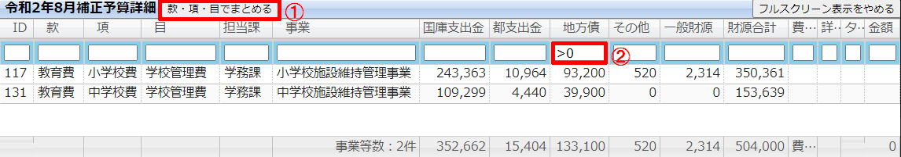
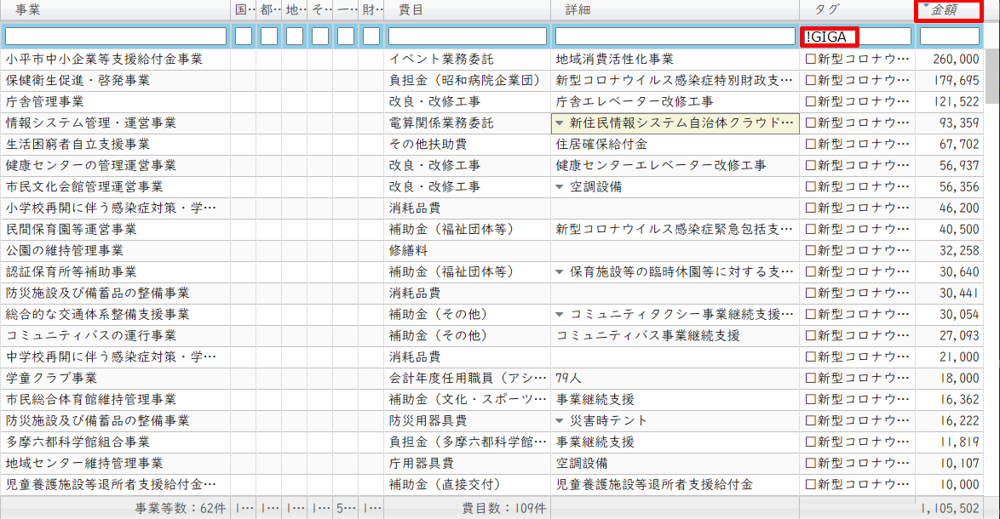
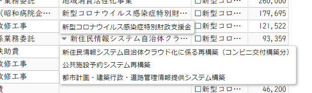
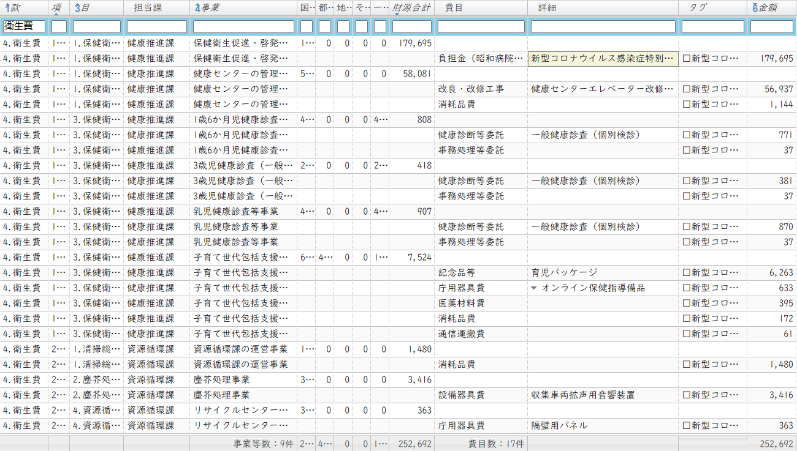
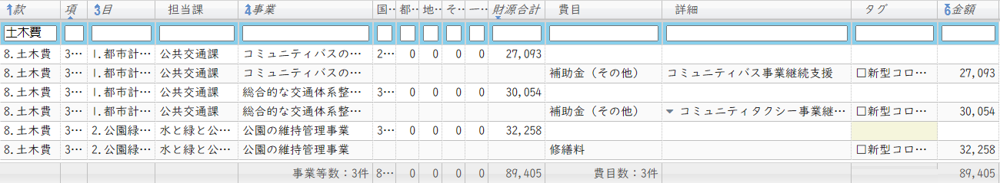

{{first:2020-05-25}}
令和2年度 小平市議会情報 のまとめ
このブックでは、令和2年度の議会に関する情報をまとめています。
- 令和2年11月24日～12月18日 12月定例会
- 令和2年11月04日 11月臨時会
- 令和2年10月13日～16日 決算特別委員会
- 令和2年09月08日～30日 9月定例会
- 令和2年08月03日 8月臨時会
- 令和2年07月27日 幹事長会議
- 令和2年06月02日～26日 6月定例会
- 令和2年06月22日 幹事長会議
- 令和2年05月28日 議会運営委員会
- 令和2年05月25日 幹事長会議
- 令和2年05月19日 5月臨時会
- 令和2年05月14日 幹事長会議
- 令和2年05月08日 幹事長会議
{{first:2020-11-30}}
令和2年12月定例会
賛否
最終日（12月18日）に採決されました。
私（安竹洋平）の賛否理由は各議案のページをご参照ください。議案番号をクリックすると詳細に移動します。
| 議員名 / 会派名 | 71号 | 72号 | 73号 | 74号 | 75号 | 76号 | 77号 | 78号 | 79号 | 80号 | 81-82号 | 83号 | 84-92号 | 93号 | 94号 | 95-97号 | 98号 | 99-101号 | 102号 |
|---|---|---|---|---|---|---|---|---|---|---|---|---|---|---|---|---|---|---|---|
| 安竹 洋平 [一人会派の会] | |||||||||||||||||||
| 伊藤 央 [一人会派の会] | |||||||||||||||||||
| 中江 美和 [一人会派の会] | |||||||||||||||||||
| 橋本 久雄 [一人会派の会] | |||||||||||||||||||
政和会鈴木 洋一, 比留間 洋一, 福室 英俊, 松岡 あつし, 山田 大輔 |
|||||||||||||||||||
市議会公明党虻川 浩, 佐藤 徹, 津本 裕子, 橋本 孝二, 山岸 真知子, 幸田 昌之 |
|||||||||||||||||||
フォーラム小平川里 富美, 小林 洋子, 竹井 ようこ, 吉本 ゆうすけ |
|||||||||||||||||||
日本共産党小平市議団きせ 恵美子, 鈴木 だいち, 細谷 正 |
|||||||||||||||||||
生活者ネットワークさとう 悦子, 山浦 まゆみ, 山﨑 とも子 |
|||||||||||||||||||
| 水口 かずえ |
＊敬称略。他会派の議員は会派で賛否が同一のため、ひとくくりにしています。
＊政和会の磯山亮氏は議長のため、賛否には参加していません。
会議録・配布資料
 著作権上の理由により、会議録や配布資料をまるごとは掲載できませんので、必要な方は以下のサイトからご検索ください。
著作権上の理由により、会議録や配布資料をまるごとは掲載できませんので、必要な方は以下のサイトからご検索ください。
＊会議が開催されてから会議録掲載までに1か月程度かかります。
私が作成した 会議録ダウンローダー（無料）を使うと、読みにくい会議録も快適にご覧になれます。
{{first:2020-11-30}}
⛏️ 諸報告
{{first:2020-11-30}} {{description:令和2年8月, 9月小平市の現金出納検査結果です。基金残高の推移などを、グラフで分かりやすく表示しています。}}
⛏️ 例月現金出納検査（令和2年8, 9月）
令和2年8月、9月分の現金収支、現金保管の状況についての検査結果報告です。いずれも誤りがないとの結論でした。9月末時点の検査結果を過去のデータも含めてグラフにしました。保管金と基金については金額順に並べました。
予算現額推移
月末と比べて変化はありません。
収入と支出
一般会計
7月は55億円ほど支出の方が多い状況でした。
国民健康保険特別会計
こちらは13億円ほど収入の方が多い状況です。バラつきの大きい月があるようです。コロナ禍による受診控えの影響や、収入と支出の期（月）ズレによるものでしょうか。担当課に確認の必要があります。
後期高齢者医療保険特別会計
こちらは収入と支出がほぼ同等の状況です。
介護保険特別会計
こちらもある程度バラつきがありますね。5～7月は収入の方が多いという状況が続いています。
下水道特別会計
こちらもバラつきが大きいです。こちらも理由については担当課に確認する必要があります。
収入と支出の累計差
各会計について、月末残高の、収入累計から支出累計を引いた値をグラフにしました。この額がマイナスの場合、（月末時点で）他の会計や基金から資金融通が必要になっていることを示します。また逆に大きくプラスが続いているようだと、予定していた市民サービスが消化できていない、という可能性もあります。
一般会計（累計収入 - 累計支出）
5月と6月に増えた分の消化が進んでいることが分かります。
その他会計（累計収入 - 累計支出）
国保の累計額が急激に増えている点が目立っています。
＊このうち下水道事業は公営企業会計です。
基金残高
基金残高は6月末から変化はありません。
全体
上部拡大
{{first:2020-11-30}}
⛏️ 議案第71号 令和2年度小平市一般会計補正予算（第7号）
総務委員会付託
目次
概要
市長報告（クリックで開きます）
今回の補正予算は､11月臨時会において、前倒しで提案させていただきました新型コロナウイルス感染症に関する事業以外のものとして、年度の終盤に向けて事業費の過不足を調整するとともに､事業内容の見直しに伴う債務負担行為の補正や、年度内に完了が見込めない事業に繰越明許費を設定するものです。
歳出の主な内容ですが、市議会議員補欠選挙にかかる経費を計上するほか、マイナンバーカードにかかるコールセンター､及び受付業務委託や､市立保育園、及び学童クラブにおける会計年度任用職員にかかる経費を計上いたします。
また、中央公民館等の複合化の整備にかかる設計の見直しや、学校給食センター更新時期の見直しに伴い、それぞれの事業費の減額と債務負担行為を変更するとともに、学校給食センター更新については、繰越明許費を設定いたします。
このほか､待機児童対策のためのわ詮し笠保育園園舎建築補助や、指定管理者の指定を受ける施設の指定管理料にかかる債務負担行為を追加いたします。
補正予算の規模といたしましては､歳入歳出それぞれ7千392万9千円を減額し、歳入歳出予算の総額をそれぞれ943億6千628万7千円とするものです。
財源構成といたしましては､国、及び都支出金を増額するとともに、基金繰入金、及び市債を減額いたします。
解説
🕵補正予算を分析する
{{first:2020-11-30}}
⛏️ 議案第72号 令和2年度小平市介護保険事業特別会計補正予算（第2号）
厚生委員会付託
概要
市長報告（クリックで開きます）
今回の補正予算は、本年度末で指定管理者の指定期間が満了する小平市高齢者交流室につきまして、改めて指定する来年度以降の指定管理料の債務負担行為を設定するものです。
解説
高齢者交流室について、来年度以降の債務負担行為を設定するものです。
| 事項 | 高齢者交流室指定管理料 |
|---|---|
| 限度額 | 高齢者交流室の管理運営に要する額 |
| 令和元年度末までの支出額 | なし |
| 令和2年度以降の支出予定額 | 期間：令和3年度～令和7年度 金額：限度額 |
| 左の財源内訳 | 国庫支出金、支払基金交付金、都支出金、その他 |
| 事項説明 | 指定管理者に高齢者交流室の管理運営を行わせるものであるが、指定期間が複数年度にわたるため、債務負担行為を設定するものである。 |
🕵 債務負担行為とは
地方自治法第213条
主な質疑（発言順）
【注】 以下は要約ですので、正確な質疑内容は会議録をご参照ください。分かりやすくするため、括弧書きの部分は、実際の質問内容にかなり修正を加えたところもあります。また、簡略化のため、理事者側（市役所側）の答弁から敬語表現を省いている場合があります。実際は理事者側のすべての答弁において、市民に対する敬語表現で回答がなされています。
私（安竹）の質問＝、意見＝
一人会派の会 その他議員の質問＝、意見＝
その他 議員の質問＝：、意見＝
原案に対する賛否
{{first:2020-11-30}}
⛏️ 議案第73号 小平市行政財産使用料条例の一部を改正する条例
総務委員会付託
概要
市長報告（クリックで開きます）
本案は、本年度の税制改正により延滞金に関する用語が変更されたことに伴い、行政財産使用料の延滞金に関する規定を改正するものです。
改正の内容ですが、特例基準割合という用語を、延滞金特例基準割合に改めるとともに、これまで租税特別措置法の規定により告示された割合としていたものを、平均貸付割合に改めるほか、文言の整理を行うものです。
施行期日につきましては、来年1月1日を予定いたしております。
解説
国の税制改正により、延滞金に関する用語が変更されたため、市の条例も改正するものです。主な変更は以下の通りです。
特例基準割合
↓
延滞金特例基準割合
当該年の前年に租税特措法の規定により告示された割合
↓
平均貸付割合（租税特措法に規定する平均貸付割合をいう。）
特例基準割合とは、国税での延滞税、利子税や地方税等での延滞金、還付加算金の算定等に使用される数値のことです。
主な質疑（発言順）
【注】 以下は要約ですので、正確な質疑内容は会議録をご参照ください。分かりやすくするため、括弧書きの部分は、実際の質問内容にかなり修正を加えたところもあります。また、簡略化のため、理事者側（市役所側）の答弁から敬語表現を省いている場合があります。実際は理事者側のすべての答弁において、市民に対する敬語表現で回答がなされています。
私（安竹）の質問＝、意見＝
一人会派の会 その他議員の質問＝、意見＝
その他 議員の質問＝：、意見＝
原案に対する賛否
{{first:2020-11-30}}
⛏️ 議案第74号 小平市税条例の一部を改正する条例
総務委員会付託
概要
市長報告（クリックで開きます）
本案は､都市計画税の税率の特例措置につきまして、今後の都市計画事業等を考慮し、適用期限を延長するため改正するものです。
改正の内容ですが、都市計画税の税率を100分の0.24とする現行の特例措置につきまして、適用期限を3年延長し、令和5年度までとするものです。
施行期日につきましては、来年4月1日を予定いたしております。
解説
主な質疑（発言順）
【注】 以下は要約ですので、正確な質疑内容は会議録をご参照ください。分かりやすくするため、括弧書きの部分は、実際の質問内容にかなり修正を加えたところもあります。また、簡略化のため、理事者側（市役所側）の答弁から敬語表現を省いている場合があります。実際は理事者側のすべての答弁において、市民に対する敬語表現で回答がなされています。
私（安竹）の質問＝、意見＝
一人会派の会 その他議員の質問＝、意見＝
その他 議員の質問＝：、意見＝
原案に対する賛否
{{first:2020-11-30}}
⛏️ 議案第75号 小平市後期高齢者医療に関する条例の一部を改正する条例
厚生委員会付託
概要
市長報告（クリックで開きます）
本案は、本年度の税制改正により延滞金に関する用語が変更されたことに伴い、後期高齢者医療保険料の延滞金に関する規定を改正するものです。
改正の内容ですが､特例基準割合という用語を、延滞金特例基準割合に改めるとともに、これまで租税特別措置法の規定により告示された割合としていたものを、平均貸付割合に改めるほか、文言の整理を行うものです。
施行期日につきましては、来年1月1日を予定いたしております。
解説
議案第73号と同様に、延滞金に関わる用語を変更するものです。主な変更は以下の通りです。
特例基準割合
↓
延滞金特例基準割合
当該年の前年に租税特措法の規定により告示された割合
↓
平均貸付割合（租税特措法に規定する平均貸付割合をいう。）
主な質疑（発言順）
【注】 以下は要約ですので、正確な質疑内容は会議録をご参照ください。分かりやすくするため、括弧書きの部分は、実際の質問内容にかなり修正を加えたところもあります。また、簡略化のため、理事者側（市役所側）の答弁から敬語表現を省いている場合があります。実際は理事者側のすべての答弁において、市民に対する敬語表現で回答がなされています。
私（安竹）の質問＝、意見＝
一人会派の会 その他議員の質問＝、意見＝
その他 議員の質問＝：、意見＝
原案に対する賛否
{{first:2020-11-30}}
⛏️ 議案第76号 小平市介護保険条例の一部を改正する条例
xx委員会付託 即決
概要
市長報告（クリックで開きます）
本案は、本年度の税制改正により延滞金に関する用語が変更されたことに伴い、介護保険料の延滞金に関する規定を改正するものです。
改正の内容ですが、特例基準割合という用語をも延滞金特例基準割合に改めるとともに、これまで、租税特別措置法の規定により告示された割合としていたものを、平均貸付割合に改めるほか、文言の整理を行うものです。
施行期日につきましては、来年1月1日を予定いたしております。
解説
議案第73号と同様に、延滞金に関わる用語を変更するものです。主な変更は以下の通りです。
特例基準割合
↓
延滞金特例基準割合
当該年の前年に租税特措法の規定により告示された割合
↓
平均貸付割合（租税特措法に規定する平均貸付割合をいう。）
主な質疑（発言順）
【注】 以下は要約ですので、正確な質疑内容は会議録をご参照ください。分かりやすくするため、括弧書きの部分は、実際の質問内容にかなり修正を加えたところもあります。また、簡略化のため、理事者側（市役所側）の答弁から敬語表現を省いている場合があります。実際は理事者側のすべての答弁において、市民に対する敬語表現で回答がなされています。
私（安竹）の質問＝、意見＝
一人会派の会 その他議員の質問＝、意見＝
その他 議員の質問＝：、意見＝
原案に対する賛否
{{first:2020-11-30}}
⛏️ 議案第77号 小平市国民健康保険条例の一部を改正する条例
厚生委員会付託
概要
市長報告（クリックで開きます）
本案は､本年4月1日に施行された地方税法施行令の一部改正等に伴い、改正するものです。
改正の内容ですが､第1点目は､国民健康保険税の課税限度額のうち、医療保険分を、現行の61万円から63万円に、介護保険分を現行の16万円から17万円に改めることにより、課税限度額の合計額を、現行の96万円から99万円に引き上げるものです。
第2点目は、国民健康保険税の減額にかかる所得の基準について、基礎控除額相当分の基準額を、33万円から43万円に引き上げる等の規定の整備を行うものです。
第3点目は、租税特別措置法に創設された特別控除を国民健康保険税に適用させるため、規定の整備を行うものです。
なお、これらの内容につきましては、小平市国民健康保険運営協議会から、適当である旨の答申をいただいております。
施行期日につきましては、課税限度額の改定につきましては、来年4月1日を、国民健康保険税の減額にかかる所得の基準の見直しと特別控除の適用につきましては、来年1月1日を予定いたしております。
解説
主な質疑（発言順）
【注】 以下は要約ですので、正確な質疑内容は会議録をご参照ください。分かりやすくするため、括弧書きの部分は、実際の質問内容にかなり修正を加えたところもあります。また、簡略化のため、理事者側（市役所側）の答弁から敬語表現を省いている場合があります。実際は理事者側のすべての答弁において、市民に対する敬語表現で回答がなされています。
私（安竹）の質問＝、意見＝
一人会派の会 その他議員の質問＝、意見＝
その他 議員の質問＝：、意見＝
原案に対する賛否
{{first:2020-11-30}}
⛏️ 議案第78号 小平市自転車等の放置防止に関する条例の一部を改正する条例
{{first:2020-11-30}}
⛏️ 議案第79号 小平市平櫛田中彫刻美術館条例の一部を改正する条例
{{first:2020-11-30}}
⛏️ 議案第80号 小平市リサイクルセンター地域還元エリア整備工事請負契約の締結について
{{first:2020-11-30}}
⛏️ 議案第81-82号 小平市立小・中学校教育用PC(GIGAスクール構想）の買入れについて / GIGAスクール端末用充電保管庫の買入れについて
{{first:2020-11-30}}
⛏️ 議案第83号 小平市立学校給食センター更新事業の事業契約の締結について
⛏️ 議案第84-92号 市道路線の認定 / 廃止について
{{first:2020-11-30}}
⛏️ 議案第93号 小平市立高齢者館の指定管理者の指定について
{{first:2020-11-30}}
⛏️ 議案第94号 小平市高齢者交流室の指定管理者の指定について
⛏️ 議案第95-97号 小平市立学童クラブの指定管理者の指定について
{{first:2020-11-30}}
⛏️ 議案第98号 小平市立障害者福祉施設の指定管理者の指定について
{{first:2020-11-30}}
⛏️ 議案第99-101号 小平市有料自転車駐車場の指定管理者の指定について
{{first:2020-11-30}}
⛏️ 議案第102号 小平市第四次長期総合計画基本構想について
{{first:2020-11-02}}
令和2年11月臨時会
令和2(2020)年11月4日（水）9:00～ @ 議場
賛否
私（安竹洋平）の賛否理由は各議案のページをご参照ください。
＊作成中
会議録・配布資料
 著作権上の理由により、会議録や配布資料をまるごとは掲載できませんので、必要な方は以下のサイトからご検索ください。
著作権上の理由により、会議録や配布資料をまるごとは掲載できませんので、必要な方は以下のサイトからご検索ください。
＊会議が開催されてから会議録掲載までに1か月程度かかります。
私が作成した 会議録ダウンローダー（無料）を使うと、読みにくい会議録も快適にご覧になれます。
{{first:2020-11-3}}
諸報告
5. 文書質問書及び回答書の受理について
政和会の山田大輔議員から以下の質問文書が提出され、市長から以下の回答を得ました。
介護保険高額介護サービス費について、誤支給と未支給という二種類の不祥事が起きたことに関する質問書です。職員の処理ミスとのことで、この時点ではまだ詳細不明で原因は調査中ということでした。一人会派の会としては、調査結果を待ち、必要に応じて問題を指摘するという姿勢でいまた。一方で、機会をとらえてこのように質問を行うことも、情報公開や議会への説明を求める姿勢として良いことと思います。
令和2年9月29日
小平市議会議長磯山亮殿
政和会 会派代表者名：松岡あつし 質問者名：山田大輔
文書質問書
小平市議会基本条例第11条第1項の規定により、次のとおり文書による質問をいたします。
- 質問項目
介護保険高額介護サービス費の誤支給と未支給、計913件の発生について- 質問の理由及び趣旨
このたび「介護保険高額介護（介護予防）サービス費の支給誤り」について、9月23日に健康福祉部長より市議会議員への報告があった。その内容は、誤支給が対象者数119人、件数277件、誤支給金額4,100,366円が発覚。原因は、高額介護サービス費支給実績情報のファイルの消失により、支給済みの金額が反映されなかったとのこと。また未支給についても、対象者数427人、件数636件、未支給金額1,964,112円が発覚。原因は、支給者対象リストの内容確認を誤ったことにより、一部の対象者に未支給が生じたものとのことであった。
介護サービスの自己負担額が上限を超えた場合に払い戻される高額介護サービス費において、誤支給と未支給の支給ミスが計913件(計606万円）にも上り、未支給においては、昨年4月から今年8月までの17か月にも及ぶものであり、このような不適切な事務執行は、市民との信頼関係を大きく損なうものである。市長は責任をとるべき重大な案件であると考えることから、以下質問をする。① 今回の問題は市のみで解決できる案件か。国や都との協議の必要性はあるか。
② 今回の不適切な事務執行は、介護保険法においてどのような問題が生じるか。
③ 誤支給に対しての回収に至るまでの延滞金は発生するのか。また未支給による利子は発生するのか。
④ 返還手続き、支給手続き、お詫びの文書送付等にかかる事務経費の費用合計金額は。またそれ以外に必要な事務諸経費があればその項目と費用を伺う。
⑤ このたびの不適切な事務執行に対応するためにかかる諸経費（質問④）の財源は何か。
⑥ 他の徴税事務への影響や、また今回のごとで起こり得る他の徴税事務への影響は。
⑦ 今後の再発防止策は。これまでの業務と今後の業務と具体的に何が変わるか。事務作業として何を変更するか。
③ 西東京市で発生した不適切な事務執行においては、市長、副市長、教育長の特別職3名の給与月額を5か月間、60～30％減額する条例案を提出、可決されたが、小平市においての誤支給や未支給等の責任について、小林市長の考えは。
以下が市からの回答です。
令和2年10月9日
小平市議会議長 磯山亮殿
小平市長 小林 正則
回答書
小平市議会基本条例第1~1条第1項の規定による山田大輔議員の文書質問について、次のとおり回答いたします。
今回の問題につきましては、国や東京都との協議の必要はございませんので､過払いとなっております「介護保険高額介護（介護予防）サービス費」（以下「サービス費」という。）を返還していただき、また未支給となっているサービス費を速やかに支給することで解決してまいります。
今回の支給誤りは、サービス費の過払い及び支給の遅れであり、介護保険の他のサービスに影響を与えるものではないため、介護保険法においては特段の問題は生じないものと捉えております。
過払いにつきましては、サービス費は介護保険料とは異なり、延滞金の対象となる費用ではないことから、回収に至るまでの延滞金は発生いたしません。また、未支給につきましては、本案件のサービス費は令和2年9月25日が支給決定日となり、利子が発生することはございません。
事務経費の費用につきましては、過払いの方119人へのお知らせ文書の郵送代が約1万円、また、返還に必要な納入通知書は訪問による手渡しにて行う予定ですが、仮にすべての方が郵送を希望された場合は郵送代が約1万円、合計で約2万円になります。なお、未支給の方への通知につきましては、本来送付すべき通知を送付していなかったことから、新たな経費は発生しておりません。
本件については介護保険事業特別会計での対応となり、その財源につきましては、一般会計からの繰入金でございます。
他の徴税事務への影響につきましては､今回は介護保険のサービス費の過払い及び支給の遅れであるため､特段の影響はございません。
再発防止策につきましては、今回の誤りの原因となった情報ファイルが消失した場合に、システム上で確認できる仕組みを検討してまいります。また、今後の業務におきましては、支給決定通知書を支給算定データと突合するなど、送付前に確認してまいります。また、事務処理マニュアルに詳細な処理方法を記載するとともに、複数の職員による内容点検の徹底を図ってまいります。
事務の正確性を確保すべき行政が、サービス費の支給誤りという信頼を損ねる事態を招き、被保険者の皆様に多大なご迷惑をお掛けしましたことにつきまして､重く受け止めております。今後、詳細な原因究明と再発防止に全力を尽くすことが責任を果たすことであり、信頼の回復に努めてまいります。
小平市ホームページ：高額介護（介護予防）サービス費の支給誤りについて
小平市ホームページ：高額介護（介護予防）サービス費の支給誤りについて（第2報）
10月28日時点で判明している原因は以下の通りです。過払いについてはフェイルセーフが働いていなかったこと、未支給については引継ぎのミスが一因となっています。他の議員が質問すると思われますので、私はこれについて特に触れませんが、今後必要となれば、追求していきたいと思います。
過払いが起きた原因について
システム上から高額介護サービス費支給実績ファイルが消失したことにより、支給済みの金額が反映されなかったことによるものです。
ファイルが消失した原因につきましては、過去に起きたバッチ処理時の異常を解消するために、システム業者から提供された修正用プログラムファイルを、処理終了後も削除せずに端末機のデスクトップ上に置いたままにしており、今回通常の作業のために端末機を操作した職員が、誤ってそのファイルをクリックしたところ、修正用プログラムが作動し、処理が開始されたために間違いであることに気付き、その処理を途中で中断したことによるものです。
この修正用プログラムファイルは、高額介護サービス費支給実績ファイルを削除した後に、異常になる前の情報へ置き換えるという処理を行うものですが、途中で処理を中断したことで、支給実績ファイルの削除のみが行われました。
このことから、システム運用にあたっての管理方法が不十分であったこと、また、そのことにより職員の操作誤りを引き起こしてしまったことが今回の原因です。未支給が起きた原因について
対象者リストとシステムの入力状況及び支給状況との内容確認を誤ったことにより、一部の対象者に未支給が生じたものです。その原因としては、毎回出力される対象者リストの処理方法について、引継ぎが不十分であったことから支給決定がされず、未支給となったものです。
{{first:2020-11-3}}
例月現金出納検査（令和2年7月）
 令和2年7月分の現金収支、現金保管の状況についての検査結果報告です。いずれも誤りがないとの結論でした。7月末時点の検査結果を過去のデータも含めてグラフにしました。保管金と基金については金額順に並べました。
令和2年7月分の現金収支、現金保管の状況についての検査結果報告です。いずれも誤りがないとの結論でした。7月末時点の検査結果を過去のデータも含めてグラフにしました。保管金と基金については金額順に並べました。
予算現額推移
6月末と比べて変化はありません。
収入と支出
一般会計
7月は55億円ほど支出の方が多い状況でした。
国民健康保険特別会計
こちらは13億円ほど収入の方が多い状況です。バラつきの大きい月があるようです。コロナ禍による受診控えの影響や、収入と支出の期（月）ズレによるものでしょうか。担当課に確認の必要があります。
後期高齢者医療保険特別会計
こちらは収入と支出がほぼ同等の状況です。
介護保険特別会計
こちらもある程度バラつきがありますね。5～7月は収入の方が多いという状況が続いています。
下水道特別会計
こちらもバラつきが大きいです。こちらも理由については担当課に確認する必要があります。
収入と支出の累計差
各会計について、月末残高の、収入累計から支出累計を引いた値をグラフにしました。この額がマイナスの場合、（月末時点で）他の会計や基金から資金融通が必要になっていることを示します。また逆に大きくプラスが続いているようだと、予定していた市民サービスが消化できていない、という可能性もあります。
一般会計（累計収入 - 累計支出）
5月と6月に増えた分の消化が進んでいることが分かります。
その他会計（累計収入 - 累計支出）
国保の累計額が急激に増えている点が目立っています。
＊このうち下水道事業は公営企業会計です。
基金残高
基金残高は6月末から変化はありません。
全体
上部拡大
{{first:2020-11-3}}
⛏️ 議案第70号 令和2年度小平市一般会計補正予算（第6号）
（作成中）
総務委員会付託
概要
市長報告（クリックで開きます）
今回の補正予算は、新型コロナウイルス感染症の収束が見えない中、東京都の補正予算や、これまでの市の補正予算に計上した事業の財源を活用し、新型コロナウイルスの感染拡大を防ぐとともに、年末、年始に向けて、市民生活や市内の事業活動を支えるための取組など、市として速やかに着手する必要がある事業を計上するものです。
歳出の主な内容ですが、感染防止と市民生活を支えるための取組といたしまして、在宅で障がい者、及び高齢者を介護している方が新型コロナウイルスに感染した場合に、要介護者を緊急一時的に受け入れる体制を整備するほか、新型コロナウイルス感染症と季節性インフルエンザの同時流行を見据え、高齢者等が季節性インフルエンザの定期予防接種を受ける際に要する実費負担を軽減するために必要な経費を計上いたします。
感染防止と市内の事業活動を支えるための取組といたしまして、東京都が実施するPCR検査の補助対象とならない障がい施設等、及び高齢者施設等のPCR検査費用を支援するほか､~室内の気圧を低くする陰圧装置の設置経費を補助いたします。
また、小平商工会が実施する、新型コロナウイルス感染症の拡大防止のための店舗改修等補助事業や、キャッシュレス決済を促進するための補助事業､市内全体の消費の活性化を図るための買い物券を還元する歳末、及び年始キャンペーンを支援してまいります。このほか、中小企業診断士による相談受付や、事業者向け感染防止徹底協力金の第2弾を実施するとともに、こだいら観光まちづくり協会が実施する市内の飲食店の利用促進のためのグルメパスポート発行事業を支援いたします。
そのほか、新型コロナウイルス感染症対策ではありませんが、市として速やかに着手する必要がある事業といたしまして、新小平駅南有料自転車駐車場用地を土地所有者へ返還するために土地の原状回復に必要な経費を計上いたします｡
補正予算の規模といたしましては、歳入歳出それぞれ1億8千587万1千円を増額し、歳入歳出予算の総額をそれぞれ944億4千21万6千円とするものです。
財源構成といたしましては、事業の実施に伴い、都支出金を増額するとともに、財政調整基金からの繰入金で対応いたします。
解説
🕵補正予算を分析する
👁️🗨️ふらっとビューア（予算歳出） ver 1.0.1
ふらっとビューアを使って歳出の詳細を見ていきます。使い方はこちらに記載しました。
それぞれの費用内訳
（作成中）
主な質疑（発言順）
【注】 以下は要約ですので、正確な質疑内容は会議録をご参照ください。分かりやすくするため、括弧書きの部分は、実際の質問内容にかなり修正を加えたところもあります。また、簡略化のため、理事者側（市役所側）の答弁から敬語表現を省いている場合があります。実際は理事者側のすべての答弁において、市民に対する敬語表現で回答がなされています。
私（安竹）の質問＝、意見＝
一人会派の会 その他議員の質問＝、意見＝
その他 議員の質問＝：、意見＝
（作成中）
＠ 本会議
＠ 総務委員会
 総務委員会には、一人会派の会から橋本久雄議員が委員として参加しています。
総務委員会には、一人会派の会から橋本久雄議員が委員として参加しています。
総務委員会での賛否
本会議でのやり取り
（作成中）
原案に対する賛否
{{first:2020-11-02}}
令和2年10月 決算特別委員会
（⛏️作成中）
⛏️ 議案第65号 令和元年度小平市一般会計歳入歳出決算の認定について
⛏️ 議案第66号 令和元年度小平市国民健康保険事業特別会計歳入歳出決算の認定について
⛏️ 議案第67号 令和元年度小平市後期高齢者医療特別会計歳入歳出決算の認定について
⛏️ 議案第68号 令和元年度小平市介護保険事業特別会計歳入歳出決算の認定について
⛏️ 議案第69号 令和元年度小平市下水道事業会計決算の認定について
{{first:2020-9-9}}
令和2年9月定例会
賛否
最終日（9月30日）に採決されました。
私（安竹洋平）の賛否理由は各議案のページをご参照ください。
〇か×をクリックすると議案の詳細に移動します。
| 議員名 / 会派名 | 45号 | 46号 | 47号 | 48号 | 49号 | 50号 | 51号 | 52号 | 53号 | 54号 | 55号 | 56号 | 57～64号 |
|---|---|---|---|---|---|---|---|---|---|---|---|---|---|
| 安竹 洋平 [一人会派の会] | 〇 | 〇 | × | 〇 | 〇 | 〇 | 〇 | 〇 | 〇 | 〇 | 〇 | × | 〇 |
| 伊藤 央 [一人会派の会] | 〇 | 〇 | × | 〇 | 〇 | 〇 | 〇 | 〇 | 〇 | 〇 | 〇 | × | 〇 |
| 中江 美和 [一人会派の会] | 〇 | 〇 | × | 〇 | 〇 | 〇 | 〇 | 〇 | 〇 | 〇 | 〇 | 〇 | 〇 |
| 橋本 久雄 [一人会派の会] | 〇 | 〇 | × | 〇 | 〇 | 〇 | 〇 | 〇 | 〇 | 〇 | 〇 | × | 〇 |
政和会鈴木 洋一, 比留間 洋一, 福室 英俊, 松岡 あつし, 山田 大輔 |
〇 | 〇 | × | 〇 | 〇 | 〇 | 〇 | 〇 | 〇 | 〇 | 〇 | 〇 | 〇 |
市議会公明党虻川 浩, 佐藤 徹, 津本 裕子, 橋本 孝二, 山岸 真知子, 幸田 昌之 |
〇 | 〇 | 〇 | 〇 | 〇 | 〇 | 〇 | 〇 | 〇 | 〇 | 〇 | 〇 | 〇 |
フォーラム小平川里 富美, 小林 洋子, 竹井 ようこ, 吉本 ゆうすけ |
〇 | 〇 | 〇 | 〇 | 〇 | 〇 | 〇 | 〇 | 〇 | 〇 | 〇 | 〇 | 〇 |
日本共産党小平市議団きせ 恵美子, 鈴木 だいち, 細谷 正 |
〇 | 〇 | 〇 | 〇 | 〇 | 〇 | 〇 | 〇 | × | 〇 | 〇 | 〇 | 〇 |
生活者ネットワークさとう 悦子, 山浦 まゆみ, 山﨑 とも子 |
〇 | 〇 | 〇 | 〇 | 〇 | 〇 | 〇 | 〇 | 〇 | 〇 | 〇 | 〇 | 〇 |
| 水口 かずえ | 〇 | 〇 | × | 〇 | 〇 | 〇 | 〇 | 〇 | × | 〇 | 〇 | 〇 | 〇 |
＊敬称略
＊他会派の議員は会派で賛否が同一のため、ひとくくりにしています。
＊政和会の磯山亮氏は議長のため賛否には参加していません。
会議録・配布資料
 著作権上の理由により、会議録や配布資料をまるごとは掲載できませんので、必要な方は以下のサイトからご検索ください。
著作権上の理由により、会議録や配布資料をまるごとは掲載できませんので、必要な方は以下のサイトからご検索ください。
＊会議が開催されてから会議録掲載までに1か月程度かかります。
私が作成した 会議録ダウンローダー（無料）を使うと、読みにくい会議録も快適にご覧になれます。
{{first:2020-9-9}}
諸報告
{{first:2020-9-9}}
例月現金出納検査（令和2年5,6月）
 令和2年5,6月分の現金収支、現金保管の状況についての検査結果報告。いずれも誤りがないとの結論でした。6月末時点の検査結果をグラフにしてみました。保管金と基金については金額順に並べました。
令和2年5,6月分の現金収支、現金保管の状況についての検査結果報告。いずれも誤りがないとの結論でした。6月末時点の検査結果をグラフにしてみました。保管金と基金については金額順に並べました。
予算現額推移
一般会計は約700億円で推移していましたが、5月に定額給付金の補正予算が入り900億円規模になりました。その他は変化がありません。
収入と支出
一般会計
国民健康保険特別会計
後期高齢者医療保険特別会計
介護保険特別会計
下水道特別会計
収入と支出の累計差
各会計について、月末残高の、収入累計から支出累計を引いた値をグラフにしました。この額がマイナスの場合、（月末時点で）他の会計や基金から資金融通が必要になっていることを示します。また逆に大きくプラスが続いているようだと、予定していた市民サービスが消化できていない、という可能性もあります。
一般会計（累計収入 - 累計支出）
昨年度の2月に約27億円のマイナスになっています。運転資金としてこのくらいの余裕は持っておく必要がある、ということと思います。かなりの額ですが、後述するように、資金融通できる基金残高が約130億円あるので今のところ問題ありません。
その他会計（累計収入 - 累計支出）
特に目立った動きはありません。
＊このうち下水道事業は公営企業会計です。
基金残高
全体
上部拡大
特に大きな動きはありません。
{{first:2020-9-9}}
議案第45号 小平市教育委員会委員の任命につき同意を求めることについて
即決
概要
市長報告（クリックで開きます）
現教育委員会委員であります森井良子氏が、来る9月30日をもちまして任期満了となりますことから、後任といたしまして、青木雅代氏を任命いたしたいと考えております。
解説
教育委員会で4年間務められてきた森井良子氏が任期満了のため、後任として青木雅代氏が任命されます。青木氏は筑波大学を出られてから、ドイツの国際日本学園や日本の会社で勤務された後、小平市子ども・子育て審議会委員、小平市立第一小学校PTA会長、小平市立小学校PTA連合会理事長、小平市男女共同参画推進審議会委員、小平市立第五中学校PTA会長、小平市立中学校PTA連合会会長を務められ、現在小平市青少年問題協議会の委員を務められています。小平市で熱心に教育活動をしてくださり、大変ありがたいことと思います。
なお、教育委員の任期は4年、教育長の任期は3年です。
主な質疑（発言順）
【注】 以下は要約ですので、正確な質疑内容は会議録をご参照ください。分かりやすくするため、括弧書きの部分は、実際の質問内容にかなり修正を加えたところもあります。また、簡略化のため、理事者側（市役所側）の答弁から敬語表現を省いている場合があります。実際は理事者側のすべての答弁において、市民に対する敬語表現で回答がなされています。
私（安竹）の質問＝、意見＝
一人会派の会 その他議員の質問＝、意見＝
その他 議員の質問＝：、意見＝
| 勇退される森井良子氏に、もう1期継続のお願いをしたか。しなかったとしたら理由は。（伊藤 央） |
概ね2～3期を目安として出来るだけ色々な人に教育委員として関わりを持って頂きたい。3期でとお願いしたら快諾して頂いた。私も3期やったので。次、若い方にお願いをして欲しいと、本人からのお願いもあり、こういう結果に。（市長）
| 青木氏が現在青少年問題協議会員を務められているのは、辞めることになるのか。もし辞める場合、欠員の分は補充するか。任期途中で辞めることについては問題ないのか。特別な必要性があるのか。（安竹 洋平） |
審議会等の附属機関に関しては、委員を兼ねることはできないため、青少年問題協議会委員は辞めることとなる。ただし、青少年問題協議会はあと年度末に1回だけであり、補充はしない。（伊藤 子ども家庭部長）
| 残り1回で、2時間しかないとは言え、一つ一つの会を軽視することは良くない。最後の1回をムダにしないようなことになるのか。（安竹 洋平） |
公募委員になられたときに作文して頂いており、熱心な方でこちらとしても選ばせて頂いた。青少年問題協議会の残り1回は計画策定などなく、最後の議題も決まっているため、事前にご本人に想いを伺って、最後の会議で披露する予定。（伊藤）
| 教育委員会の課題は。 |
大きな課題はないと考えている。GIGAスクール、体育館へのエアコンの設置。小平市特有の課題はないと考えている。教育委員会は教育長と共にそれぞれ納得して合意をして一致団結して取り組んでいる。（市長）
😲 市長が「大きな課題はない」と言い切るところが驚きです。ディスレクシアの300人の子どもが見つかっていないことや、コロナ禍後の対応も大きな課題です。
| 総合教育会議の評価は。 |
総合教育会議は年2回開催しており、市長、教育長、4人の教育委員で集まり、意見を伺っている。さまざまな立場からの意見を頂いているので行政に活かす。（津嶋 企画政策部長）
| 課題はないと言っているが、エアコンについて市長はどう指示を出すつもりか。 |
このようなことを、という具体的なことは申し上げていない。教育委員として聞く側の立場として教育委員会で活躍されると期待。（市長）
🤔 市長は何を言いたいのでしょう・・・？
| 3期でということだったが、市長は、多選の弊害ということで、2期3期で変わってもらう方が組織の新陳代謝を促すと考えているか。 |
レイマン・コントロール、教育長含めて5人のチーム、特定の人が長くやるのは、色々な人たちが多様な意見を述べあうことで発見があったり、目安なので1期で辞められた例もあるし、もっと長くされた方もいる。ケースバイケース、長くやることが悪いイイではなく、できるだけ、チームなので色々な人に関わって頂きたい。（市長）
🤔 市長の答弁はまとめづらいため、ご興味をお持ちの方はぜひ会議録をご参照ください。
{{first:2020-9-9}}
議案第46号 小平市固定資産評価審査委員会委員の選任につき同意を求めることについて
即決
概要
市長報告（クリックで開きます）
現固定資産評価審査委員会委員であります立川 栄氏が、来る9月30日をもちまして任期満了となりますが、引き続き委員として、お願いいたしたいと考えております。
解説
固定資産評価審査委員会は、主に、住民から固定資産税に関して不服審査請求が出された際、それを審査するための会です。
主な質疑（発言順）
【注】 以下は要約ですので、正確な質疑内容は会議録をご参照ください。分かりやすくするため、括弧書きの部分は、実際の質問内容にかなり修正を加えたところもあります。また、簡略化のため、理事者側（市役所側）の答弁から敬語表現を省いている場合があります。実際は理事者側のすべての答弁において、市民に対する敬語表現で回答がなされています。
私（安竹）の質問＝、意見＝
一人会派の会 その他議員の質問＝、意見＝
その他 議員の質問＝：、意見＝
| この3年間で固定資産税の不服審査はどれくらいあり、それぞれどういう判決が出ているか。（安竹 洋平） |
3年間における審査の申し出はゼロ件。（白倉 総務部長）
{{first:2020-9-9}}
議案第47号 令和2年度小平市一般会計補正予算（第5号）
（作成中）
総務委員会付託
目次
概要
市長報告（クリックで開きます）
今回の補正予算は、昨年度の決済をもとに、繰越金、及び返還金の整理等を行うとともに、歳入においては、普通交付税、及び臨時財政対策債が当初の見込みを上回りましたので増額いたします。
また、これに伴い確保される財源を活用し、市の喫緊の課題である保育園待機児童の解消などに取り組むほか、基金積立金を増額し､財政基盤の安定化を図るものです。
歳出の主な内容ですが、待機児童の解消に向けまして、来年度に新規開設する私立保育園1園の建築補助を行うほか、3歳未満の多胎児がいる家庭への移動支援として、子ども商品券を配付いたします。
また、定期巡回・随時対応型訪問介護看護、認知症高齢者グループホーム、小規模多機能型居宅介護の施設整備等にかかる補助金を増額するほか、用水路、道路、及び公園などの維持管理費を増額するとともに、新小平駅前公衆喫煙所の移設工事などを行います。
そのほか、昨年度の都市計画税の余剰分を都市計画事業基金に積み立てるとともに、繰越金の増に伴い財政調整基金の積立額を増額し、歳入においては、財政調整基金繰入金を減額いたします。
補正予算の規模といたしましては、歳入歳出それぞれ17億7千796万6千円を増額し、歳入歳出予算の総額をそれぞれ942億5千434万5千円とするものです。
財源構成といたしましては、事業の実施に伴い、国、都支出金、及び地方債を補正するとともに、繰越金、普通交付税、及び臨時財政対策債、特別会計繰入金を増額いたします。
解説
🕵補正予算を分析する
まず歳入です。金額順に並べると以下のようになります。最も大きいのは前年度の繰越金で、前年度の繰入金確定によるものです。
歳入に関する追記事項：
| 款 | 項 | 目 | 説明 | 金額 千円 |
|---|---|---|---|---|
| 1.地方交付税 | 1.地方交付税 | 1 | 普通交付税 □普通交付税の交付決定による増 | 391,362 |
| 2.繰入金 | 1.特別会計繰入金 | 2 | 後期高齢者医療特別会計繰入金 □令和元年度後期高齢者医療特別会計の事業確定による繰入金の増 | 21,439 |
| 2.繰入金 | 2.基金繰入金 | 10 | 東京オリンピック・パラリンピック子ども夢・未来基金繰入金 □事業延期による皆減 | △52,808 |
| 2.繰入金 | 2.基金繰入金 | 1 | 財政調整基金繰入金 □基金繰入金の減 | △170,000 |
| 2.繰越金 | 1.繰越金 | 1 | 前年度繰越金 □前年度繰越金の増 | 1,132,865 |
| 23.市債 | 1.市債 | 1 | 中央公民館等の複合化の整備に係る設計 □起債額の増 | 10,500 |
| 23.市債 | 1.市債 | 5 | 第十小学校大規模改造工事 □起債額の増 | 2,300 |
| 23.市債 | 1.市債 | 5 | 市民総合体育館屋根改修工事 □起債額の増 | 3,600 |
| 23.市債 | 1.市債 | 6 | 臨時財政対策債 □起債額の増 | 177,424 |
- 普通交付税が3.9億円予算より多く支給されました
- 一般財源に入る予定だったオリパラ基金は、取り崩さず全額そのまま残すことになります
- 財政調整基金取り崩し予定のうち、1.7億円分は取り崩さず基金に残されることになります
- 繰越金の増が1,132,865千円あり、その半額595,659千円が財政調整基金に積み立てられます
😤 オリパラ基金（オリンピック・パラリンピック子ども夢・未来基金）を1円も取り崩さないということです。来年度オリンピックが開催されるにしても、コロナ禍前とまったく同じ事業になるはずがないので、少なくとも内容の見直しが必要です。5,280万円をそのまま全額基金に残したままにするとは信じられません。基金にしてしまうと、別の用途に使えないことになるため、その分の機会損失が生じることになります。
また、財政調整基金1.7億円分の取り崩しもしない（一般財源に入れず基金に残したままにする）とは、コロナ禍という状況が分かっているのでしょうか。
このあたり組替え動議の討論にて、私からも発言する機会がありましたのでご参照ください。
次に、歳出を財源を含めて金額順に並べると以下のようになります。それぞれの内訳は以下で説明します。
👁️🗨️ふらっとビューア（予算歳出） ver 1.0.1
ふらっとビューアを使って歳出の詳細を見ていきます。使い方はこちらに記載しました。
それぞれの費用内訳
(1) 総務費 🏢
総務費を金額順に並べました。

主な内訳は以下の通りです。
- 都市計画事業基金に約6.0億円を積み立て
- 財政調整基金に約5.7億円を積み立て
- 地方公共団体情報システムの負担金、約2,300万円増
- 電算関係業務委託の増で、約1,100万円増
- 平櫛田中彫刻美術館事業で、約390万円の減と約160万円の増
- その他事業中止により、約1,300万円の減
🕵 都市計画事業基金とは
土地や家屋を所有している人から徴収する「都市計画税」は、その用途が地方税法に定められており、「都市計画事業」または「土地区画整理事業」にしか使えない目的税です。これらの事業を行うことで土地や家屋の利用価値が増大するため、「都市計画税を払う人に受益がある」という論理になっています。
詳しい内容はここをクリック
市町村は、都市計画法に基づいて行う都市計画事業又は土地区画整理法に基づいて行う土地区画整理事業に要する費用に充てるため、当該市町村の区域で都市計画法第五条の規定により都市計画区域として指定されたもの（略）のうち同法第七条第一項に規定する市街化区域（略）内に所在する土地及び家屋に対し、その価格を課税標準として、当該土地又は家屋の所有者に都市計画税を課することができる。～略～
都市計画税を「課税するかしないか」、「いくらにするか（課税水準）」については、市町村が自主的に決められます。目的税であるため、他の収入と区別するために、集めた都市計画税を特別会計に入れて管理している自治体もあります。小平市では他の収入と同じく一般会計に入れて管理しています。しかし、以下の図に示すように、事業に使わなかった剰余分を「都市計画事業基金」に積み立てることで区別しています。
都市計画税の全体像については以下の資料に分かりやすくまとめられています。
📄 自治の窓 都市計画税の課税について
小平市における令和元年度の都市計画税と都市計画（事業）費は以下の通りです。
| 都市計画税 | 当初予算約 23 億円 → 決算はこれから |
|---|---|
| 都市計画費 | 当初予算約 24 億円 → 第4号補正で約 20 億円へ → 決算はこれから |
つまり現時点で「都市計画税 - 都市計画費 = 約 3 億円」であり、この分が丸々残っていると推察できます。
次に、財政調整基金約 5.7 億円の積み立ては、地方財政法の「決算の余剰金はその半分を積み立てなくてはならない」というルールにしたがって積み立てているものです。
🕵 財政調整基金の積み立て
地方財政法第7条（剰余金）では、決算で剰余金が出た場合は、その半分を（翌々年度までに）積み立てる必要があると定められています。小平市ではこれを「財政調整基金」として積み立てています。
詳しい内容はここをクリック
地方公共団体は、各会計年度において歳入歳出の決算上剰余金を生じた場合においては、当該剰余金のうち二分の一を下らない金額は、これを剰余金を生じた翌翌年度までに、積み立て、又は償還期限を繰り上げて行なう地方債の償還の財源に充てなければならない。
２ 第四条の三第二項及び第三項並びに第四条の四の規定は、前項の規定により積み立てた金額について準用する。
３ 前条の公営企業について、歳入歳出の決算上剰余金を生じた場合においては、第一項の規定にかかわらず、議会の議決を経て、その全部又は一部を一般会計又は他の特別会計に繰り入れることができる。
４ 第一項及び前項の剰余金の計算については、政令でこれを定める。
なお、この条文には以下のことも書かれています。
- 翌年度に全額を積み立てる必要はなく、翌翌年度までに積み立てれば良い
- 公営企業会計の余剰金については、議決があれば積み立てなくて良い
次に、地方公共団体情報システム機構の負担金約2,300万円は、マイナンバー関係の電子証明書手続き急増と今後の電子証明書利用増加を見込んだ、地方公共団体情報システム機構のシステム性能を増強するためのものとのことです。財源は全額国庫財源です。このシステムはブラックボックスですね。総計でいくらかかっているのでしょうか。
地方公共団体情報システム機構の負担金は総計でいくらかかっている？
次に、電算関係業務委託の約1,100万円は、国外転出者のマイナンバーカード等利用促進を図るため、住民基本台帳システムと戸籍付票システムの改修を行うものだそうです。全額国庫負担で、うち480万円分が一般財源に入っています。
（理事者側答弁の概要）マイナンバーカードは住民票を基礎としており、国外転出者には利用できない現状がある。一方で国外転出者もインターネット上で本人確認を行うニーズが高まっていることから、国外転出者についてもマイナンバーカードが使えるように改修を行うもの。住民基本台帳システムについては、主なものとしては、本籍地の市区町村へ、戸籍の付票に記載するための住民票コード等の情報を通知する機能を追加するもの。戸籍の付票システムについては、主な改修として、戸籍付票への性別、生年月日を記録する機能追加、住民地、市区町村から通知される住民票コード等の情報を、戸籍の付票情報と突合し、住民票コード等を戸籍の付票に記録する機能などの追加をするもの。（増原 情報政策課長）
次に、平櫛田中彫刻美術館管理運営事業についてです。
コロナ禍によるイベント中止などのため、歳出が385万4千円減少しました。その分を使ってということだと思いますが、インバウンド回復のためと銘打ち、以下の事業に合計で159万4千円計上しています。
- 【作成等委託】展覧会図録作成（特別展）
- 【作成等委託】会場ディスプレイ等作成
- 【作成等委託】チラシ等作成
- 【庁用器具費】ワイヤレスガイドシステム等
- 修繕料、消耗品費
😟 質疑で伊藤央議員も指摘していますが、これは今やるべき事業ではありません。そもそも平櫛田中美術館のインバウンド需要はどれくらいあるのでしょうか。160万円かけるだけの経済波及効果があるのでしょうか。予算が余ったからと、思いつきの事業に使おうというのは、この危機的状況に行うべきことではありません。
平櫛田中美術館のインバウンド需要はどれくらい見込めるのか。
(2) 民生費 👶🦯🦽🧓🍚

主な内訳は以下の通りです。
- 来年4月に開園予定の私立保育園建築費及び用地確保への補助に約2.6億円
- 鈴木町1丁目の特別養護老人ホームに併設する定期巡回・随時対応型訪問介護看護の事業開始が早まったことによる計上1,400万円
- 小川町2丁目に整備をしている認知症高齢者グループホームの工事費補助に約1.1千万円
- 小川町2丁目に整備している小規模多機能型居宅介護の整備補助に約320万円
- その他、返還金が合計約4億円
私立保育園新設については中江美和議員が質疑で指摘しているように「新設計画や公募を行うことについて議会の承認を経ていない」という問題があります。地方自治法の「総計予算主義の原則」に反している可能性があるのです。
(3) 衛生費 🩺🗑️

主な内訳は以下の通りです。
- 公衆喫煙所に約900万円
- 返還金に約590万円
- 多胎児家庭へのこども商品券配付事業に約150万円
🤔 公衆喫煙所については橋本久雄議員が確認していますが、900万円て高くないですかね。
(4) 農業費 🌾🍆🌽🍏🍓

主に、令和2年度の産業まつりが中止になったことによる費用の減となります。
(5) 商工費 🛠️🏮🏙️

小平駅南口の古くなった看板撤去工事と、イベントの中止による費用の減です。
(6) 土木費 🚧

道路、用水路、公園の修繕費と、イベント中止による費用の減です。約5,700万円と金額の大きい「緊急輸送道路沿道建築物耐震改修補助」は、地権者から、工事費の高騰により自己負担分が高額になり、状況が落ち着くまで待ちたいと申し出があったことから減になっているものです。これは来年度まで事業を延期するとのことです。
(7) 教育費 🧑🏫🧑🎓

中学校施設管理事業の施設修繕の増1,000万円は、老朽化の進展で施設修繕料が不足することから追加するものです。中央図書館はトイレの様式化に係る修繕料が増加することによるものだそうです。それ以外は各種イベントの中止による減となります。
😤 オリンピック費用関連は本会議でも質問しましたが、中止が決まった段階でもっと早くに減額できていたと思います。早めに減額して一般財源に戻せば他の用途に活用できます。機会損失です。
以上が費用の内訳となります。より詳しい内容は、付託された総務委員会の会議録をご参照ください。
主な質疑（発言順）
【注】 以下は要約ですので、正確な質疑内容は会議録をご参照ください。分かりやすくするため、括弧書きの部分は、実際の質問内容にかなり修正を加えたところもあります。また、簡略化のため、理事者側（市役所側）の答弁から敬語表現を省いている場合があります。実際は理事者側のすべての答弁において、市民に対する敬語表現で回答がなされています。
私（安竹）の質問＝、意見＝
一人会派の会 その他議員の質問＝、意見＝
その他 議員の質問＝：、意見＝
＠ 本会議
| どういう検討によって、コロナ対策としてこれ以上の地域振興施策を実施しないという判断になったか。（中江 美和） |
コロナ対策をやらないということではない。8月臨時議会でほとんどの施策を予算化した。その事業の状況を見ながら、世の中の経済状況を見ながら、必要があれば対策を打っていく。（津嶋 企画政策部長）
😨 この危機的状況を前にしながら、市の答弁からは危機感が一切感じられません。そもそも本来は市長が答えるべき内容の質問です。こうして「市長が職員に丸投げして責任を持たない」ことが、多くの問題の原因だと私は考えています。私の一般質問で問いただしました。
| 5号補正でコロナに積極的な姿勢は見られない。様々なイベント中止による予算減額があるが、その分を代替え事業などに使用しない判断をした理由は。（中江 美和） |
今回一般財源として確保しているところがあり、今後必要があればコロナ対策の事業に活用する。（津嶋）
| 保育園新設について、そもそも当初予算に計上されておらず、こども子育て支援事業計画にも1園建設すると書いていない。5月に待機児童が出たら保育園を作るということで、手法が場当たり的、計画性に欠ける。新設の保育園について計画を作成するつもりはないのか。（中江 美和） |
小平市では待機児童が出てからということで例年取り組んでいる。市内の東南地域に待機児童が集中している。そういう傾向を捉えてピンポイントに対策を打っていく。そういうことに適ったスケジュール。「こども子育て支援事業計画」では確保数として計画を立てている。新規の認可保育園で確保するのか、認定こども園に幼稚園が移行することで確保するのか、幼稚園の預かりなどで確保するのか、様々な手法で対応していくため、必ずしも新規の開設をするだけではない。極力お金がかからない方法で確保していく。（伊藤 子ども家庭部長）
| 保育園運営事業者の選考過程や選考理由は、なぜ公表しないのか。（中江 美和） |
内部で選考の評価項目を作って点数化している。評価のところを整備しながらやってきており、ほぼ固まってきたので、今後評価項目の公表を考える。（伊藤）
| 保育園の事業者選考について、地方自治法に規定する総計予算主義の原則から、当初予算で計上されていない事業の公募手続きを、予算の裏付けなく実施することは許されるのか。（中江 美和） |
予算はこれから可決してもらうため契約はできないが、準備的に当たっていくところは問題ないと考えている。（津嶋）
🕵 総計予算主義の原則
総計予算主義の原則とは、地方自治法第二百十条に規定されている「歳入歳出のすべてを予算に計上する」というルールです。予算案は議会で審議されるため、このルールがあるおかげで「行政が市民の知らないところで勝手にお金を使う」ことが抑止されることになります。
一会計年度における一切の収入及び支出は、すべてこれを歳入歳出予算に編入しなければならない。
| 保育園の公募手続きに関わる経費は、人件費を含めてどれくらいかかっているか。（中江 美和） |
施設整備担当として保育課に職員（係長）がおり、その人件費ということになるが、公募に関わっているだけではない。（伊藤）
| 予算の裏付けがない公募手続きは、予算の裏付けなく委託事業や物品購入を行うことと同様、地方自治法に抵触すると考える。補正予算の計上前に民間保育園の運営事業者を公募する事務を公務の中で行っており、実際に公募も行って決定している。総計予算主義と照らし合わせて違法性はないのか。ないのであればその理由は。（中江 美和） |
まだ正式な契約を結ぶところまでは行っていない。市の歳出の負担が決定するときには予算の裏打ちが必要なので、今回の補正予算を審議して頂き予算化を図っていく。（津嶋）
🤔 ということは、公募事務や仮契約に関わる歳出は予算上裏打ちされていることになりますが、予算上どの部分に該当するのでしょうか？
保育園の公募事務や仮契約に関わる歳出は、予算上どの部分に該当するのか。
| ICT化やタブレット端末導入、テレワークなど、行政側における新しい日常への取り組みは今回予算に反映しているか。していないのであれば、いつからするか。（中江 美和） |
補正予算第4号でも健康相談はネットで受けられるようにしている。教育もGIGAスクールで進めている。行政内部の効率化や非接触化については足りない部分は多少あると思うが、市民サービスでいえば公共施設予約システムの拡充など準備は進めている。テレワークは今後の課題として認識しており、他市も進めているため、検討していく。（津嶋）
| 対応する予算はどれくらい考えているか。行政としてタブレットの導入など早くやった方が良い。乗り遅れることになる。（中江 美和） |
今までも検討してきている。やり方、レベルで額の差がある。他市の例も見ながら、できるだけ費用を抑えながら効果が上がるものを今後検討していく。（津嶋）
| 市内の個人消費、雇用情勢は。 |
市内の消費状況は一時期に比べだいぶ戻っていると商工会から聞いている。雇用状況については詳しい数字は持ち合わせてない。商工会と連携していく。（余語 地域振興部長）
| 次の補正はいつごろか。 |
状況を見ながら適切に判断する。（津嶋）
| 小平市の方針として、オリンピックが開催されたら子どもを観戦に連れていくという点は変わりないか。観客数も大幅に減らされる可能性もあるかとは思うが、どういった方針を持っているか。（伊藤 央） |
東京都と情報収集を務めており、基本的にはオリンピックは開催される方向。9月4日に「東京オリンピック・パラリンピック競技大会における 新型コロナウイルス感染症対策調整会議 第1回」が開催され、メンバーとして内閣官房副長官と東京都副知事等が参加し検討している。これらの状況を見ながら対応を考える。（篠宮）
| ICT化について、専門的な部局を作るなどの計画が必要だが、どういう検討をしているか。（伊藤 央） |
現状は特に新たな部局を設置することは想定していない。今回の予算にも計上していない。今後取り組みを進める中で検討していく課題と考えている。（津嶋）
| 国全体で5万人くらいの解雇・雇止めがあるような状況下で、基金を11億円も積み立てる理由は。繰越金の半分は財調に積む必要はあるにしても、喫緊のコロナ対策に充てるつもりはまったくなかったのか。まだ余裕があると考えているのか。（伊藤 央） |
基金は法令で積まなければならない。コロナ対策については、市内の状況を見ながら必要に応じて対応を考える。8月の臨時会で成立したコロナ対策の実施状況を見ながら対策を検討する。コロナ対策は市だけでやるものではなく、国や都の事業と併せて考えていく。（津嶋）
| 国や都と連携しながらも、市の独自の支援として生活支援だったり経済支援に積極的に打っていく考えはないのか。8月やったからそれでいいと思っているのか。これだけ資金が余っていれば、もっと市民の支援に使ってくれとなるはずだが。（伊藤 央） |
コロナ対策は早めに手を打っていく必要があるとして8月に予算化した。キャッシュレスは10月から始まり、他市は1か月のところもあるが、小平市は4か月継続する。（津嶋）
| インバウンド観光需要回復に向けた取組としてワイヤレスガイドシステム約45万円。この期に及んで小平市はまだインバウンドに期待するのか。数年前までは外から観光客を呼ぶのではなく市内観光事業が主であり、それは正しいと考えていたが。（伊藤 央） |
インバウンドは確かに現状で進めるのは難しいと認識。今後のコロナ感染症の状況により推進するタイミング等計っていく。（余語）
| なぜ今予算化をしたのか。どういう方針、考え方でこうなっているか。（伊藤 央） |
インバウンドが回復した後に様々な方を受け入れるために修繕を行うもの。（篠宮）
| 東京都の財源で行う多胎児の支援について、双子、三つ子も大変だが、年子や2歳離れているような家庭でも大変さはある。多胎児だけを支援することは、ある意味公平性に欠ける部分があるが、どう考えているか。（伊藤 央） |
東京パパママ応援事業では産後家事育児支援事業など多胎児に限らずその他の方の支援等もメニューにある。多胎児に関しては任意事業で今回これを予算化するもの。コロナの影響で説明会など開催していないが、今後状況をみながらこちらも検討していく。（篠宮）
| 公平性についてはどう考えているのか。（伊藤 央） |
これまで市においては多胎児家庭に特に大きな支援をしていない。今回は活用して幅広く対応できると考え、多胎児の3つあるメニューのうち1つを事業化した。（篠宮）
🤔 その他メニューも一度にできないものなのでしょうか？複数ある中で今回多胎児を選択した合理的な理由が欲しいところです。
東京パパママ応援事業は、一度にメニューを全て選択できない理由があるのか。今回多胎児だけが選ばれた合理的理由は。
| 待機児童対策、4年くらい前「このまま新規保育園を作り続けても待機児童ゼロにはならない」と述べた通りになっている。場当たり的であれば中長期的な財政計画も立てられない。これを続けるのか。子育て支援を大きく見直す時期なのでは。（伊藤 央） |
共働き家庭の増加などで保育園の入所申し込み率が上がっている。社会全体でそのような状況で、小平市として後追いになっていることはある。保育の要件を満たしながら入れる方と入れない方がいるため施設整備の必要がある。財源確保については様々組み合わせながら整備していきたい。（伊藤 子ども家庭部長）
| 入れる人と入れない人が出てくるということだが、そもそも預ける人と預けない人がいる。そこに不公平感はないと考えているのか。（伊藤 央） |
各家庭の考え方と捉えている。保育は必要のある方に利用して頂いている。必要があるから実施しており、利用しない方がいても、税金が投入されることに対し、不公平感は大きくないと捉えている。保育・幼児教育の無償化も実施されており、3歳以降で幼稚園を使う方も一定の税金を使っているので、より公平性は保たれていると考える。（伊藤）
🤔 津嶋企画政策部長は、公共施設の使用料に関して、よく「受益者負担」ということを持ち出します。それに対し、保育は全体で負担することが受容されています。このあたり、どういった基準で両者に違いを持たせるのかを決めておかないと、市民に示しがつかない場面が出てくるように思います。
受益者（応益）負担と全体での負担はどういう基準に基づいて判断するのか。
| 今回、臨時財政対策債の限度額が多かったということだが、限度額一杯に発行したか。また、毎回限度額一杯に発行しているのか。（安竹 洋平） |
現状は財源が不足しており必要があるので毎回限度額一杯借りている。以前は満額借りずに抑えていたところはある。（津嶋）
😋 これは純粋に勉強のために質問しました。臨時財政対策債は小平市が抱える借金になるのですが、今後の交付金で国が返してくれるものなので、限度額いっぱいに借りておいた方が良いとされています。（臨時財政対策債の発行抑制の現状と分析（大阪府・平成 28 年度市町村課研修生卒業研究報告書）)
| 返還金が多いが、主にコロナ関係のものか、約1.7億円ある保育課のものは。（安竹 洋平） |
コロナとは関係なく、例年これくらいあり、コロナの影響で増えたということはない。（津嶋）
| ICT部局の想定もないとのことだが、地方創生臨時交付金がまた交付される可能性は高く、いま準備しておく必要がある。さもなければ8月補正予算のようにツケ払いに回すことになる。次の臨時交付金に間に合うようプラン作りを進めているのか。（安竹 洋平） |
部局を設置していないから検討していないということではない。情報政策課をはじめ、タブレット端末もそうだが、関係課が集まり検討している。（津嶋）
| オリパラ基金、この状況において約5千万円（具体的には5,280万円）というお金を基金として固定しておくのは問題。削減するかゼロにするか、他の部分に使えるようにした方が良いと思うがどう考えるか。（安竹 洋平） |
まだ不透明なところがあり、来年度、子ども観戦事業を実施する上ではこの基金が重要と考えているので一般会計に戻すことは考えていない。（篠宮）
| 一般会計から出すようにすれば良いのではないか。約5千万円というお金を固定して使えない状況にすることではない。基金に積まなければできないのか。（安竹） |
自分の子ども心にあった東京オリンピックの高揚感が忘れられない。当時は国際交流が盛んではなく、外国のアスリートを見るのは初めてだった。オリンピックは子どもに夢や希望を与えるものという思いがあり、公約に掲げ、議会で通した。東京都や国が、子ども達を観戦に連れていくのを打ち出していない時に、たぶん日本で初めて私の方で打ち出した。小平市であれば皆行けると宣言したつもり。その後、東京都や国が動いて行かせるということになったので、私がひっぱったという自負がある。今の段階で可能性が少なくなったなど、口が裂けても言えない。可能な限り開催して、いま、やや自国主義になっている、非常に閉鎖的な社会になっている子ども達に夢を与える。基金は単なる財政上額の事務的な問題ではなく、基金があることで、小平市のオリンピックに対する姿勢を表していることを、是非ご理解いただきたい。（市長）
🤔 市長の言っていることも分かるのですが、だとすれば基金を残して100万円くらいに減額すれば良いだけではないでしょうか。この状況において、5.3千万円もの市税を他に使えないものとして固定しておくようでは、危機感が無い市長だと見なされても仕方がないと思います。
また、一流のスポーツ選手はほとんどの子どもにとって「手の届かない別世界にいるスター🌟」です。そういったスターを間近で見ることは、人生経験としては良いと思いますが、果たして共感できる子どもはどれだけいるのでしょうか。夢や希望を与えるのであれば、市内には一流の仕事をしている人たちが沢山いますから、そういった方々と定常的に交流する機会を増やした方が、子ども達にはよっぽどためになるのではないでしょうか。👨🏭👩🏭👨🔧👩🔧👨🔬👩🔬👨🎨👩🎨👩🍼
| オリパラ関係の費用、皆減になっているものがあるが、なぜ今のタイミングだったのか。8月の補正予算で減にできたのでは。（安竹 洋平） |
事業については8月等も含めてあった、オリンピックはその前に中止になっているが、その辺を見極め、この先事業等実施する可能性もあったので、オリンピックを盛り上げる事業として実施する可能性もあったので8月ということではなくギリギリまで。（篠宮）
🤔 6月などはすでにコロナ禍でほとんどのイベントが中止になっている状況であるのに、なぜ6月定例会や8月の補正で予算減にしなかったのでしょう。もっと早く減にすれば、その分を他の予算に回すことができたはずですが・・・。
＠ 総務委員会
 総務委員会には、一人会派の会から橋本久雄議員が委員として参加しています。
総務委員会には、一人会派の会から橋本久雄議員が委員として参加しています。
| 私立保育園の建設予定地は、運営業者が土地を所有するのか。 |
事業者から提案をもらい、予定地も業者が選定している。賃借で土地を調達していると聞いている。（森田 保育課長）
🤔 議決を経ていないのに、業者はすでに土地を調達しているのでしょうか。
| 財政調整基金は、「今使えるものは今使う」という感覚で予算編成できないか。 |
財政調整基金は今回7億円積み増すが、昨年度末29億円あったものを今年度は大きく取り崩しており、今回積み増しても24億円。目標額の35億円より10億円以上少ない。使い切ると今後もし台風被害や災害が起きても新しいことはできないため、ある程度の積み立ては必要。（尾崎 財政課長）
| 新設保育園の定員数は。今後待機児童解消をどう進めるか。 |
72人定員を検討。市内全域では児童数は減少傾向だが、1、2歳児や市の東地域に待機児童が今後多く見込まれる。そのほか、定期利用保育事業、幼稚園の認定こども園化など、あらゆる方策を検討している。（森田）
| 財政調整基金の考え方は。 |
35億円の目標額変更は考えていない。現在は24億円ちょっとで、多い少ないをどう考えるかは大事。平成28年度に18億円ほど取り崩した。繰越金が予算を下回り、交付税も予算を下回り、予算の見立てがうまくいかなかったため。そういうことを考えると35億円というのは一定の適正な数値。来年度は税収も厳しくなる。今どんどん使うと、来年、再来年度がさらに厳しくなり、最後のセーフティネットさえもうまくできなくなる恐れがある。そういったことは厳に避けなければならない。（津嶋）
| コロナ対策は8月に前倒しで行ったということだが、他市は前倒しで色々やっている。三鷹市は「デリバリー三鷹」という事業で学生が宅配サービスを行う事業を行っている。小平市に大学生は何人いるか把握しているのか。（橋本 久雄） |
学生に対しては国が給付策を打っており、特に現状として小平市独自ではやっていない。（津嶋）
朝鮮大学校以外の学生の数は令和元年9月時点で2万2,831人。市内在住の学生はそのうち3,194人（松尾 市民協働・男女参画推進課長）
| オリパラ基金は廃止して全額一般財源に戻したらどうか。（橋本 久雄） |
廃止して一般財源に溶け込ませて来年やるときに一般財源から出すことは手法として可能。しかし基金を廃止しなければならない理由がない。来年度実施する予定で事業を進めているので、せっかく積んだ基金の廃止は考えていない。（津嶋）
😤 津嶋部長は分かって言っているのですが、基金にするということは「他の用途に使えない」ということです。もっとお金を使うべきことが他に沢山ある状況で、5.3千万円が自由に使えなくなることは大きなマイナス（機会損失）です。
| 一般質問でもしたが、8千世帯程度の人が生活保護基準以下で暮らしている。そういう方々に対し、1世帯5万円くらいの給付金を出す事業などはどうか。（橋本 久雄） |
状況は逐次担当課の方で説明をしている通り。当然足りなくなれば補正予算を組んでいく。現状は当初予算でまだ不足がないため今回の補正に盛り込んでいない。（津嶋）
| 生活保護は最後のセーフティネットで単身者の場合年収220万～230万円、貯金は5万円？8万円？が条件。もっと市は積極的に市報やホームページでアナウンスをしてもらえないか。（橋本 久雄） |
生活保護受給者の世帯及び人員は緩やかながら年々増加していたが、平成30年度に人員が微減となり、昨年度も世帯は増えたものの人員は減少している。今後は高齢化の進展、コロナの影響により生活に困窮する方が増加することが予想される。収入が減少した方などへの住居確保給付金による家賃支援、社会福祉協議会で行う小口の貸付制度など、非常に多くの方への支給がなされているところだが、生活保護の制度はもとより、このような支援策について引き続き周知していく。はい。（井出 生活支援課長）
| 財政調整基金は他市と比較してすごく少ない。立川市は平成28年のレベルで81億円、三鷹市は40億円、日野市が42億円、類似市平均が46億円で、小平市は25億円だった。なぜそのようなことになっているか。（橋本 久雄） |
確かに他市と比べて小平市は後ろの方にある。我々の方でも原因を検討してきた。全て分析できているわけではないが、他市との比較では補助等と言うところが大きく出ている。一部事務負担組合、ごみ処理場に関する負担金が大きく、小平市の場合は1市民あたりで見ると多くなっている。また、昭和病院企業団に対する助成金についても、大きく負担金を支出している状況で、この辺が他市と比べてかなり多くなっている。また、市民一人当たりの歳入も低い状況。つまり、収入が少ない割に、一部事務組合に対する補助は大きく支払いをしており、その財源分をこういった財政調整基金等で賄っている状況。（尾崎）
👏 これは良いやり取りです。うすうす感じていましたが、ごみ処理場と昭和病院企業団の負担金が市の財政に重くのしかかっている状況ということです。私も選挙前にごみ処理場のことは調べて問題点を挙げていましたが、このあたり再度精査が必要です。執行部もその問題点を認識しており、つまりこれらの事業は「現在の執行部が主体的に決めたわけではない」ということを暗に言っていると思います。誰が決めたのでしょうか。やはり市長の責任でしょう。
ごみ処理場と昭和病院に関する精査が必要
| 学校で6年生の移動教室などについて中止する場合、キャンセル料は誰が負担するか。この負担分は保護者には説明しているのか。（橋本 久雄） |
実施の2週間前までについては企画料というのがあり、これは公費で支払う予定。2週間を超えた場合は保護者の負担となる。（国冨 教育指導担当部長）
| オリンピックの観戦事業が中止になった場合もキャンセル料を保護者が負担するということか。（橋本 久雄） |
オリンピック観戦事業が中止になった場合、保護者の負担はない。（三井 スポーツ振興課長）
| 保育園の公募に関して、（上記・中江議員が本会議で質問した通り）総計予算主義の原則に反しているのではないか。（橋本 久雄） |
4月1日時点の待機児童数を、今年度は5月12日に公表している。その間、待機児童の中身を精査し、市の東側地域、回田町、鈴木町、花小金井南町、花小金井、この地区に待機児童が多くなっていることが顕著に現れたので、それに対応する民間の認可保育園の提案受付を5月に開始した。民間の事業者から提案を受け、計画の中身や施設規模を協議し、適切な施設であるか、建設費は適切であるか、そういうことを協議した中で、今回補正の中では国、東京都の補助も含めて、市としてどういった補助金ができるのかということで補正に計上。より的確で効果的な待機児童対策ということでは、当初予算よりは9月の補正で載せさせて頂いている。（森田 保育課長）
| 待機児童数の予測を立てているなら当初予算で計上できるのでは。（橋本 久雄） |
子ども・子育て支援事業計画では、今後の就学前児童数や確保数の見込みをしているが、年度ごとの、どの地域が待機児童が多いとか、どの地域に認可保育園を作ればいいか、そういう具体は4月以降（実際に申し込みがあってから）にならないと分析ができない。当初予算では間に合わないため、年度に入ってからの具体的な対策ということで進めている。（森田）
🤔 たしかに4月にならないと待機児童数が確定しないというのは仕方のないことと思います。それならば5月の公募前に補正予算を立てれば良いだけではないでしょうか。また、事前に入園希望者数をアンケート調査などで把握する方法はないのでしょうか。
5月公募前に補正予算は出せないのか。また、事前にアンケート調査を行うことで4月より前に待機児童数を見積ることが可能では。
| 新小平駅公衆喫煙所の整備はなぜ今頃か。現在の場所は汚いので掃除をして欲しい。（橋本 久雄） |
当初他の3か所と同時に改修を予定していたが、JR東日本が所有する土地については喫煙施設を全て撤去するという社内方針が示された。市としては新小平駅前に公衆喫煙所は必要と考えており、JR東日本以外の土地を探していたところ、駅前広場の中に市民が所有する土地があり所有者の了解も得られたため移設し、今回予算計上した。駅前広場は業務委託により毎日清掃、樹木の選定は高木は年に1回行っている。適切な管理に務める。（神山 環境政策課長）
土地は無償で提供してくださっているのか
| 多胎児について大変なことは十分理解している。一方で、多子世帯、年子の子どもがいる世帯も大変。多子世帯へ同額の商品券補助をしてもらえないか。立川市は（子どもがいるいないに関係なく）全市民1人に1万円の支給を行った。（橋本 久雄） |
多胎児に限らないところで、ソフト面の支援として平成29年度からゆりかご・こだいら事業を行っている。今年度からはその事業を拡充して子育て世代包括支援センターを立ち上げた。妊婦の全数面接や産前・産後サポート事業、さらに支援の拡充を行い産後ケア等の事業も行っている。コロナ対策として東京都のママパパ応援事業等も使って追加の育児パッケージも配布している。他市世帯への商品券等配布については、年子は何歳離れていればいいとか、多子は何人ぐらいが該当するかとか、1人のお子さんの世帯でも、例えば母親の体調や体力がないところで移動支援も大変という家庭もあるので、その辺の線引きが非常に難しいという課題があり、現在は考えていない。（櫻井 健康推進課長）
| 今回コロナ対策の事業がないのは、市長の指示によるものか。 |
市長として、まず8月の臨時議会で成立した補正予算4号、こちらの動向を見ながら、またさらに必要があればタイミングを見てコロナ対策をやっていくんだということで指示を受けている。市長の指示で全てやってきている。特にやるなというような指示ではなく、コロナ対策は早くやる必要があるということで、8月の臨時議会でできるだけ多くの事業の組立を行った。今後も必要があればタイミングを見ながらしっかりコロナ対策はやっていく必要があると指示は受けている。（津嶋）
| 今回の補正予算で市民の代表である議員が提言をしたもので取り入れたものはあるか。 |
今回の5号補正ではその辺で対応したものはなかったと考えている。今後8月補正で組んだ事業の実施を見極めながら、必要に応じて対応していく。（津嶋）
| 多胎児のところで、対象数、支給方法、運用は。 |
3歳未満の多胎児が対象で、64世帯を想定。支給方法は3、4か月児健康診査や1歳6か月児健康診査、ほぼ100%の方が受診するためこの健康診査の中で渡す予定。運用方法として、対象については面接を受けることが要件の一つで、すでに面接している方もいる。面接が出来ていない方にはアンケートを送り家庭の状況を確認して渡す。（櫻井 健康推進課）
| 保育園の公募が議会での予算審査前に行われていることについて、もし予算が可決されなかったらどうなるのか。議会を通さないで話が進むのは議会軽視では。 |
ここ数年の新設については、的確で効果的な待機児童対策ということで、5月に公募を行い9月の補正予算ということでここ数年、本年4月の認可保育園の新設についても同じような手法で実施している経緯がある。補助なしに運営できない、そもそもの計画が進まないということころがあるので、何とか補正で審査頂ければと考えている。可決されなかった場合、補助金がつかないということになるため新設は難しくなる。事業者と、どの範囲で出来るのかなど協議を進めることになる。（森田 保育課長）
| 補正予算の前に話を進めるということになると、これが通らなければ議会のせいとなる。保育の業者からの信頼を失うことにつながる。議会の審査する立場としてやりにくく、正当なやり方なのか。 |
4月以降待機児童が確定し、準備行為ということで事業者と協議を進めた。予算措置というよりはその前の準備ということで、補正予算の額が確定したところで審査してもらっている。（森田）
🤔 担当課なども、これは問題のあるやり方だと認識しているような答弁です。スピード感を持って対応できることは分かりますが、上記したように5月公募前に補正予算を議会に提出すれば良いのではないでしょうか。また、事前に入園希望者のアンケートを取って待機児童数の見積りを正確にするなど、方法を工夫する必要もありそうです。
| オリパラ基金の使い方としてバスに皆で乗るなら3密を避けるなど以前の想定通りではなく、事業を再構築する必要がある。基金をそのままにするなら前の計画のままということになるがどう考えるか。 |
事業自体どうなっていくかはこれから検討されていくのかなと考える。来年度の当初予算に向けて大きく動いてくると考えており、まだ現在今回の補正についてはなかなか情報もない中で検討できなかった。（尾崎）
| 3密はダメだという情報はかなり前からあった。バスは当然そういう状況になる。情報がないからできなかったというのは仕事としてどうかと思うが、どうか。 |
9月4日に東京2020大会における新型コロナウイルス感染症対策調整会議の第1回が開催された。今後、大会全体のコロナ対策についての方向性が示された後、学校連携観戦プログラムについては、東京都から一定の方針が示されると認識している。その実施方針とともに、市としても感染症対策については教育委員会とともに十分に検討する。（三井）
🤔 これも職員は問題を認識しているような、核心を避けた答弁です。市長が無理を通しているように感じます。
| この事業先送りでどのような影響があるか。 |
地震時における安全性確保について若干弱い部分があると思っている。しかし当該建築物については自費で単独で一度改修工事をしており、一つの基準はクリアしているため一定程度の強度はあると考えるが、すべての基準をクリアしてはいない状況。（清水）
| 小平市政に関する世論調査を中止した背景は。 |
令和3年度に延期して実施の予定。緊急事態宣言下において市の業務休止や縮小を行っており、交替勤務が行われている期間、当世論調査に関する準備業務を休止していた。また、コロナ禍において、市民生活の意識や移行、要望等にも大きな変化があると考えられることから、変化後の状況を的確に把握し参考資料として得ることができるように来年度に延期して実施する。（赤坂 市民サービス担当課長）
| 来年度ではなく今年度、内容を変えて実施も可能なのではないか。 |
世論調査の目的の一つに、同様の設問項目で経年の変化を見るということがある。また国勢調査の実施がこれから控えており、時期が重なることによる回収率の懸念、及び市民への負担増の懸念から、コロナ禍が落ち着いたころに実施した方が良いと判断し決定した。（赤坂）
| 小平市におけるマイナンバーカードの交付目標と達成率は。また次の目標は。 |
令和2年7月末で目標値45,627枚に対して実績が38,579枚と、達成率85%。国が示している達成率に沿い、令和2年度末は91,179枚、47.1%を目標としている。
| 庁舎1階にマイナンバーカード専用の窓口を設けてはどうか。 |
現在、証明書の手続きや住民移動の手続きに来る方々とマイナンバーカードの手続きに来る方々がかなり待つ状況のため、窓口の特設も検討する。（山本 市民課長）
| 平櫛田中美術館のインバウンド観光需要回復に向けた取り組みによる増を詳しく。 |
インバウンド需要回復のための手段としてひとまず小平市内在住の外国人5千人を対象にした事業を行うもの。ハード事業としては茶室の修繕。ソフト事業としては、館内を紹介するパンフレットの作成、館内の誘導動線を知らせるサインの更新、今後予定している新たなイベントのための備品購入を予定。言語は日本語と英語。PRとしては美術館事業で協力頂いている小平市国際交流協会をはじめ、国立4大学による国際学生宿舎（ISDAK）の学生サークルの協力を得て、多言語（英語と日本語）で作成したチラシを配る、あるいはSNSでの広報を予定している。（島田 文化スポーツ課長）
🤔 本気で、これで市内5千人のインバウンド需要が回復すると考えているのでしょうか？さすがに今やることではなく、インバウンド需要が回復したころにやることではないでしょうか。まったく意味が分かりません。別の目的があるか、最悪の場合は利権が絡んでいるのではないかと勘ぐってしまうくらいのことと思います。
| 生活保護事業の返還金が多い理由は。 |
最も多くの割合を占めているのが国庫負担金の生活扶助費で約9,400万円。生活保護費は、生活保護受給世帯及び人員の推移及び実績を考慮して国庫負担金の交付申請を行った。それに対して、令和元年度の被保護者の数値は、世帯数は増加したものの人員数は3,245人から3,205人へ減となり、返還金が多く発生したもの。（井出 生活支援課長）
| コロナ対策を時を待たずに行ってほしいが。 |
12月補正を待っていては遅くなることが考えられるので、必要があれば、臨時議会等をまた設けてでも必要な施策を出していきたいと考えている。（津嶋）
総務委員会での賛否
| 会派 | 賛否 |
|---|---|
| 一人会派の会 | ❌反対 |
| 政和会 | ❌反対 |
| 公明党 | ⭕賛成 |
| フォーラム小平 | ⭕賛成 |
| 共産党 | ⭕賛成 |
本会議でのやり取り
（作成中）
原案に対する賛否
{{first:2020-9-9}}
議案第48号 令和2年度小平市国民健康保険事業特別会計補正予算（第2号）
（作成中）
厚生委員会付託
概要
市長報告（クリックで開きます）
今回の補正予算は、前年度の事業費の確定に伴う繰越金の補正、及び前年度の都補助金等の精算に伴う歳出の補正を行うものです。歳入では、前年度からの繰越金を増額し、歳出では、前年度に超過交付となった保険給付費等交付金の返還金を増額するものです。
解説
前年度の
主な質疑（発言順）
【注】 以下は要約ですので、正確な質疑内容は会議録をご参照ください。分かりやすくするため、括弧書きの部分は、実際の質問内容にかなり修正を加えたところもあります。また、簡略化のため、理事者側（市役所側）の答弁から敬語表現を省いている場合があります。実際は理事者側のすべての答弁において、市民に対する敬語表現で回答がなされています。
私（安竹）の質問＝、意見＝
一人会派の会 その他議員の質問＝、意見＝
その他 議員の質問＝：、意見＝
本会議質疑なし
{{first:2020-9-9}}
議案第49号 令和2年度小平市後期高齢者医療特別会計補正予算（第1号）
（作成中）
本会議質疑なし
{{first:2020-9-9}}
議案第50号 令和2年度小平市介護保険事業特別会計補正予算（第1号）
（作成中）
本会議質疑なし
{{first:2020-9-9}}
議案第51号 小平市組織条例の一部を改正する条例
総務委員会付託
概要
市長報告（クリックで開きます）
本案は、本市が、来年4月に東京都から建築基準行政事務の移管を受け、当該事務を実施することに伴い、改正するものです。改正の内容ですが、都市開発部の分掌事務に、建築基準行政事務に関する事項を追加するものです。
施行期日につきましては、来年4月1日を予定いたしております。
解説
小平市組織条例の、都市開発部の分掌事務に、建築基準行政事務に関する事項を追加するものです。
主な質疑（発言順）
【注】 以下は要約ですので、正確な質疑内容は会議録をご参照ください。分かりやすくするため、括弧書きの部分は、実際の質問内容にかなり修正を加えたところもあります。また、簡略化のため、理事者側（市役所側）の答弁から敬語表現を省いている場合があります。実際は理事者側のすべての答弁において、市民に対する敬語表現で回答がなされています。
私（安竹）の質問＝、意見＝
一人会派の会 その他議員の質問＝、意見＝
その他 議員の質問＝：、意見＝
＠ 本会議
質疑なし
＠ 総務委員会
総務委員会には、一人会派の会から橋本久雄議員が委員として参加しています。
| 建築基準行政事務の人員体制は。 |
他市の状況等を想定すると、常勤・非常勤あわせて17人程度の定数を想定。平成28年6月に建築基準行政事務の移管に関する基本的な考え方をまとめ、平成29年度からは東京都などに職員を派遣し、知識等の向上も努めている。その派遣する際や、建築職を平成29年度から確実に採用を行いながら来年度の体制に向けて準備を進めてきた。（湯浅 行政経営課長）
| まだ移管していない自治体は他にあるか。あるとすれば、その理由は。（橋本 久雄） |
法律では人口25万人以上の市は建築基準行政事務を行うこととされている。ただし東京都は平成4年度に人口15万人以上の市にこの事務を行うように求めている。人口15万人以上でまだ移管をしていない市は小平市の他には東村山市のみ。理由は把握していない。（小栁 行政経営課長補佐）
総務委員会での賛否
| 会派 | 賛否 |
|---|---|
| 一人会派の会 | ⭕賛成 |
| 政和会 | ⭕賛成 |
| 公明党 | ⭕賛成 |
| フォーラム小平 | ⭕賛成 |
| 共産党 | ⭕賛成 |
原案に対する賛否
{{first:2020-9-9}}
議案第52号 小平市手数料条例の一部を改正する条例
環境建設委員会付託
概要
市長報告（クリックで開きます）
本案は、本市が、来年4月に東京都から建築基準行政事務の移管を受け､当該事務を実施することに伴い、技術的審査や検査、及び台帳の内容を証明するなど、新たに建築基準行政にかかる手数料を定めるため、改正するものです。改正の内容ですが、別表を別表第1に改めるとともに、別表第2を追加し、建築基準行政にかかる548件の手数料の項目を新たに定めるものです。 施行期日につきましては来年4月1日を予定いたしております。
解説
建築基準行政事務が東京都から小平市に移管されることに伴い、建築基準行政に関わる手数料を小平市が徴収することになります。そのための手数料条例を改正するものです。
- 手数料は別表の通り
- 減免措置は証明書等交付に関してのみ
- 手数料は当該事務に必要となる人件費と物件費を単価として、事務処理時間及び申請件数を考慮して算定
- 東京都の手数料額との乖離率は10%以内
- 施行期日は令和3年4月1日
＊手数料の内訳について詳しいことは会議録資料をご参照ください。
主な質疑（発言順）
【注】 以下は要約ですので、正確な質疑内容は会議録をご参照ください。分かりやすくするため、括弧書きの部分は、実際の質問内容にかなり修正を加えたところもあります。また、簡略化のため、理事者側（市役所側）の答弁から敬語表現を省いている場合があります。実際は理事者側のすべての答弁において、市民に対する敬語表現で回答がなされています。
私（安竹）の質問＝、意見＝
一人会派の会 その他議員の質問＝、意見＝
その他 議員の質問＝：、意見＝
＠ 本会議
| なぜ今のタイミングで建築基準行政事務を小平市に移管するか、メリットとデメリットは。何か目的があるのか。（安竹 洋平） |
東京都が平成4年度から人口15万人以上の自治体に建築基準行政移管の受入れをしてきた。建築基準法自体では人口25万人以上の団体とされているが、大都市など住宅事情の多いところで東京都が市への移管を求めてきた。昨今の開発事業が行われる中で建築物の安全性や住環境に対する市民の意識が高まっていることを受け、また人口が19万人に達したことから、平成28年度に都市計画行政と道路行政、今回の建築行政を一体的な運用による街づくりをする必要があると判断し、受入れを決定した。その後準備を進め、平成33年に受入れを決めた。 メリットはワンストップでできること。家を建てる際に建築確認が必要、現状を調べる必要がある、都市計画の用途地域の状況、道路の状況、市の中でできる。建築を建てるには東京都に行く必要がある。東京都に申請を出した後も、都市計画の状況や道路状況を調べ直す必要があり、また市の方に戻ってきて行ったり来たりする、建築基準行政が移管されるとこういったことが基本的に市の中でできるというのがメリット。住民の方が直接建築確認申請を出すことはなく、事業者やハウスメーカーが出す。総合的に住民にもメリットがある。デメリットは、費用面でいままでかかってないものがかかる、あとは責任を負うことになる。一体的なまちづくりをしていくことを考えるとそのデメリットもメリットにつながると考える。（村田 都市開発部長）
| 回田町の開発事業に関わる住民監査請求のような紛争に関しても、今回の改正で改善につながることはあるのか。（安竹 洋平） |
こちらは開発事業における紛争であり、今回の件には関係ない。（村田）
| 「開発事業の手引き」にある、大規模開発事業、中規模開発事業、開発行為や敷地分割行為に関する判断が市でできるような話になるのか。（安竹 洋平） |
開発事業は別になるので、判断は別になる。（村田）
＠ 環境建設委員会
環境建設委員会には、一人会派の会から中江美和議員が委員長として参加しています。
| 市が徴収した手数料はどこに入るのか。 |
一般会計の収入として入る。（清水 建築指導準備課長）
| 事務処理の経費はどうなるか。 |
当初の計算だと人件費は約1.3億円、その他経費が1.5千万円のため、年間の総経費は約1.45億円。それに対して収入が約700万円。事業を受けるにあたり東京都から5年間で1.7億円が交付される。当初管理システムの導入経費がかかる。（清水)
| 課題は。 |
人材の確保が非常に大変。建築確認をする適合判定試験という資格を持っている必要がある。これは1級建築士を取得し、2年間の実務経験をした後、そういう試験に合格した型が建築主事の資格になる。また、各市財政的にかなり厳しいところがあり、正規職員以外に嘱託職員を含めながらぎりぎりの人数で行っている。また建築行政事務に関しては、建築確認に関する審議、不服等の申し立てがある。建築審査会に申し出る部分と裁判で申し出る部分があり、その辺の訴訟リスクが発生する可能性があり、そのあたりが問題点。（清水）
| システムは大丈夫か。 |
管理システム構築の予算は令和2年度予算に計上している。ここで業者を決めるプロポーザルを行う。来年の4月1日からシステム運用開始で調整。
環境建設委員会での賛否
| 会派 | 賛否 |
|---|---|
| 一人会派の会 | ⭕賛成 |
| 政和会 | ⭕賛成 |
| 公明党 | ⭕賛成 |
| フォーラム小平 | ⭕賛成 |
| 共産党 | ⭕賛成 |
原案に対する賛否
{{first:2020-9-9}}
議案第53号 小平市高齢者デイサービスセンター条例を廃止する条例
（作成中）
厚生委員会付託
概要
市長報告（クリックで開きます）
本案は、小平市高齢者デイサービスセンターの廃止に伴い、条例を廃止するものです。
小平市高齢者デイサービスセンターは、平成14年4月に、花小金井4丁目の都営住宅の建て替えに伴い、さわやか館に併設され、指定管理者制度により通所介護事業を実施しておりますが、現在の指定管理期間の本年度末での終了に当たり、指定管理者に更新の意向がないことや、市内の通所介護事業所の整備状況などを踏まえ､本年度末をもって廃止するものです｡
施行期日につきましては、来年4月1日を予定いたしております。
解説
小平市の唯一の公設公営・高齢者デイサービスセンターは、これまで事業を担ってくれていた指定管理事業者が、次回以降は更新をしないとの意向を示したことから廃止し、そのため関連の条例を廃止するものです。指定管理者制度で運営事業者を公募するわけですが、唯一手を挙げていたのが現在の事業者である社会福祉法人竹恵会です。
過去の議事録を参照すると分かりますが、これまでもこの施設はデイサービスセンターとして使いにくいという指摘が出ていました。また設立時には市内で8か所しかなかったデイサービスの施設も現在は60か所に増えており、需要は満たせている状況になっています。逆に言えばそれだけ経営が厳しくなっている状況でもあり、それでも市の意向を汲んで事業を担ってくれていたのが竹恵会です。そこが断念するということなので、今後新たな指定管理者が現れる可能性も非常に低く、ある意味仕方のないことと思います。
詳細
デイサービスセンターの概要
- 開設時期：平成14年4月
- 床面積：199.51㎡ 鉄筋コンクリート造地上5階建の1階（都営住宅内）
- 利用定員：25名
- 事業内容：
- 通所事業
- 第1号通所事業（介護予防・日常生活支援総合事業）平成28年3月追加
- 市長が必要と認める事業
デイサービスセンターの管理運営
- 平成14年4月の開設当初から現在まで社会福祉法人竹恵会により運営されている。
- 平成14年度から平成17年度までは業務委託、平成18年度から令和2年度までは指定管理者制度を導入している。
- 地方自治法第244条の2に規定する利用料金方式により、介護報酬及び利用者負担金を収入として運営しているため、市からの指定管理料の支出はない。
デイサービスセンターの状況（令和元年度実績）
登録者数：53名、稼働日：309日
1日当たりの利用者数：18.3名
介護度別人数：
| 要支援・要介護度 | 人数 |
|---|---|
| 要支援1 | 7 |
| 要支援2 | 6 |
| 要介護1 | 12 |
| 要介護2 | 11 |
| 要介護3 | 8 |
| 要介護4 | 7 |
| 要介護5 | 2 |
介護度の高い方も利用していることが分かります。介護者のレスパイトのために活用されていた、ということでしょう。厚生委員会の質疑で答弁があったように、レスパイト目的であればショートステイが用意されています。
デイサービスセンター利用者への対応
廃止に伴う利用者の通所先の変更については、現在の指定管理者がケアマネジャーと連携し、利用者の意向を聞きながら確実に移行する。また、利用者及び家族に対する説明については、指定管理者及び市が連携して行う。
市内の通所介護事業所の整備状況の推移（年度末）
| H14 | H16 | H17 | H22 | H23 | H24 | H25 | H26 | H27 | H28 | H29 | H30 | R1 | |
|---|---|---|---|---|---|---|---|---|---|---|---|---|---|
| 通所介護 | 8 | 16 | 16 | 24 | 33 | 40 | 49 | 56 | 61 | 30 | 31 | 32 | 33 |
| 地域密着 | - | - | - | - | - | - | - | - | - | 31 | 30 | 28 | 27 |
| 合計 | 8 | 16 | 16 | 24 | 33 | 40 | 49 | 56 | 61 | 61 | 60 | 60 | 60 |
デイサービスセンター廃止後の施設利用
センター廃止後の施設利用については、来年度は「たいよう福祉センター」において児童発達支援センターの改修工事が予定されているため、工事期間中の代替え施設として利用する予定である。
なお、令和4年度以降については、現在庁内で検討しているところである。
施行期日
令和3年4月1日
主な質疑（発言順）
【注】 以下は要約ですので、正確な質疑内容は会議録をご参照ください。分かりやすくするため、括弧書きの部分は、実際の質問内容にかなり修正を加えたところもあります。また、簡略化のため、理事者側（市役所側）の答弁から敬語表現を省いている場合があります。実際は理事者側のすべての答弁において、市民に対する敬語表現で回答がなされています。
私（安竹）の質問＝、意見＝
一人会派の会 その他議員の質問＝、意見＝
その他 議員の質問＝：、意見＝
＠ 本会議
| 条例廃止の必要性は。 |
平成14年4月の開所当時は介護保険制度ができて2年目で、通所介護事業所も少ない状況だった。それから20年経過し、市内民間事業者のデイサービスセンター開設が進んでいることから、当初の役割は果たしたと考えている。（滝澤 健康福祉部長）
| なぜこのタイミングか。 |
3月までは事業を行うが、現在の利用者にこれからの行先を考えてもらうため、この時期に条例を廃止。（滝澤）
＠ 厚生委員会
厚生委員会には、一人会派の会から私、安竹洋平議員が委員として参加しています。
| 指定管理者募集要項の業務に関わる実施条件に「本施設が公営民設の市内唯一のデイサービスであることから、ほかの福祉施設等で様々な理由等で入所が困難なケースについて、できる限り受入れを行うこと」とある。こうした入所が困難なケースは何人くらいいるか。 |
年間大体2～3人くらい困難ケースという方がいると聞いている。困難ケースは重度の方や医療的ケアが必要な方であり、ほかの事業所で受入れが難しい方を積極的に出来る限り入所が出来るようにして欲しいという特徴がある。（島田 地域包括ケア推進担当）
| 市内に受入れ困難な方を積極的に受け入れている事業所はどれくらいかるか。 |
まず通所介護事業所は、基本的には自宅で日常生活を送ることができるような生活上の支援や機能訓練、そういうレクリエーションなどを目的としているサービス。困難ケースといっても色々ある。医療的ケアが必要な方を受け入れているかどうかは、市が発行している介護事業所ガイドブックに掲載されているものだと4施設ほどあると捉えている。（赤坂 高齢者支援課長補佐）
医療的ケアは看護師がいる場合には行えるが、特徴として行っているのが4施設。東地区が3か所、西地区が1か所。（島田）
補足をすると、ケアマネージャーに伺うと、デイサービスは医療的ケアの方を受け入れることがメインではない。医療的ケアが必要な方は訪問看護が必要で、訪問看護だと訪問診療や訪問リハビリテーション、こういったサービスを組み合わせながら、ただ介護者の方のレスパイトという意味では市内のショートステイ、老人保健施設のショートステイを使っていると捉えている。市としては、こういった医療的ケアについては、介護と医療の連携推進ということで、医師会等とも連携して計っており、今後もそういう形で進んでいく。医療的ケアの施設ということでは、小川東町に看護小規模多機能型居宅介護ということで、医療的ケアが必要な方が通所介護を受けながら、通所介護と訪問介護と訪問看護とショートステイ、この4つを組み合わせながらやっている施設も新たに整備されてきているので、そういったことにも十分対応できるものと捉えている。（赤坂）
| 公設民営であるところのメリット・デメリットは。 |
公設民営の意義というものが大きかった。ただし開設当時の介護施設不足の状況から、安定的で良好な介護サービスがほかの事業所によって今は提供されていること、民間んお事業所がその経験や創意工夫により多様な介護サービスを提供している。例えば医療的ケアも事業所によってはもう行っている。また入浴施設が完備されているとか、あたたかい食事の提供がされているような施設も多く設置されている。このデイサービスセンターの近くにも2か所ほど、歩いてすぐのところに介護事業所ができているようなことを検討し、廃止したいというところ。（島田）
| 市としてもう公募をしないと決めた理由は。 |
内部で検討した結果。また近くの介護事業所等にも話を聞いており、立地の問題や面積、設備の課題があるということで、ここの公募に応募するのは難しいと聞いている。（島田）
| 近くの介護事業所とはどこか。近隣だけじゃなく市内全体に、こういう公募があると知らせた方が良いのでは。 |
聞いたのは、鈴木町にある小平健成苑。他の地区といっても西の方になると場所が遠いため手を挙げることが難しいと考えており、東地区を中心に検討した。（島田）
| 改めて、市内全域の事業所なり、他に周知して公募をし直すことは検討できないか。 |
市内唯一の公設民営の施設だが、開設当時の状況、介護施設の不足だとか重度の医療ケアが必要な方の受け入れ先等について、ほかの事業所等も受け入れる状況があるため、新たに公募することは考えていない。（島田）
ほかの事業者について、立地と設備等を考えると、なかなか手を挙げる事業所、自分たちが介護事業でやりたいような事業が、あの場所ではなかなかできない状況が見受けられるところがあり、ほかの事業所には声をかけていない。（島田）
| 市として、2025年以降、介護施設の数や介護職員の人数はどうなると考えているか。 |
介護保険制度は3年間でやるものなので、2025年の介護施設の整備数や介護職員の人数といものは捉えていない。ただし特別養護老人ホームについては、2025年までに現在の計画から300人ほど増やすということで、施設としては4施設、現在3施設あるので最後の施設を2025年に向けて整備を進める。（赤坂）
| 今回デイサービスセンターを廃止しても、市内の需要は満たせているのか。 |
一つの目安として稼働率がある。令和2年7月の通所介護事業所稼働率は大体6割越え程度で定員に余裕があり、今後増えたとしても十分に足りている。また他市と比べた場合も、通所介護の事業者数、利用定員を第一号被保険者で割ると、26市中小平市が1番になることからも、十分充足していると考えている。（赤坂）
| 施設の修繕費は市が負担するのか、指定管理業者が負担するのか。 |
これまで大きな修繕はしていない。ただし今年の5月に空調設備が故障し、8月に入替を行った。修繕費で軽微なものは指定管理者が行い、大規模のもの、例えば空調など大きな修繕は市が行うという形になっている。（島田）
| 職員からは修繕の要望は出ていたのか。 |
要望はいくつもあり
- 静養室が狭い
- 入浴施設が一般浴になっているので介護者の負担が高い
- 入浴施設が離れたところにあるので利用しにくい
- 天井が高く、暖房・冷房の効率が悪い
- 温水が出ない
- 活動場所と静養場所は分けて運営したいが、199平米だとちょっと狭い
など様々ある（島田）
| 今回の廃止は、修繕費が大きいことが関わっているのではないか。 |
大きな要因になっているとは理解していない。（島田）
現在の指定管理者から、時期の更新の意向の話を受けたときに、いろいろ話を伺った。その中で、現在の施設で何か要望等はありますかという話も当然続けて頂くためにこちらの方としては伺っている。ただし話を聞くと、どうしても大規模な改修が必要ということを要望される。市としてそこまでして続けて頂くことが本当に必要かというところも検討していく中で、今、民間事業者が創意工夫でいろいろな設備を整えたり、いろいろなサービスを提供している。そのため、ここでお金をかけてデイサービスセンターを改修するよりも、そういった部分については民間事業にお任せしていこうと判断した。（滝澤 健康福祉部長）
| 働いている職員の方々は今後どうなると聞いているか。（安竹 洋平） |
廃止後は社会福祉法人の方が引き続き雇用を行うと聞いている。（島田）
| 他市からの受入れ状況について、利用書のうち10%くらいが東久留米市から。この、全利用者に占める他市利用書の割合には制限を設けているのか。市の施設を使っている以上、受益者負担という観点が良く持ち出される中で、どういう扱いになっているか。（安竹 洋平） |
他市からの受け入れ制限は特に設けていない。（島田）
| 資料6番に記載の整備状況の推移のところで、令和元年度が通所介護と地域密着型通所介護の合計が60か所という話だが、他市からの利用者はどれくらいの割合でいるか。（安竹 洋平） |
通所介護事業所の方は、他市の利用者の人数は把握していない。基本的に小平市の方が多いと捉えている。場所によって市境のところは他市の方も一定程度通われていると捉えている。現在27事業所あり定員301人だが、原則的にほぼ小平市民。もう一つの地域密着型通所介護は原則として小平市民のみが利用できる。（赤坂）
| 小平市は通所介護の施設が他市と比べて多い状況という話だったが、その理由は。補助金が手厚いなどあるのか。（安竹 洋平） |
デイサービスを申請するにあたって補助金等は出ていないため、どうして多いかは特段捉えていないが、事業者がそれなりに人数を見越して市内に参入したものと捉えている。ただし平成27年度以降は60箇所くらいで推移しており、事業者の方でも市場調査を行って検討していることを考えると、小平市としては充足しているものと捉えている。（赤坂）
| 先ほど通所介護事業所の稼働率は、大体6割越え程度という答弁があったが、それは普通の通所介護の割合なのか、地域密着型の割合なのか。地域密着型の施設数が平成28年度から10%程度減っているので、稼働率の差があると思うが。（安竹 洋平） |
令和2年7月時点で、通所介護事業所の稼働率は66%、地域密着型通所介護の稼働率は62%。（赤坂）
| 53人の利用者の行き先はすでに決まっているか。利用者は廃止を知っているか。 |
議決後、職員と利用者に説明するため、現在行先が決まっている方はいない。利用者は廃止についてはまだ知らない。（島田）
| 全員の行先を決めてから廃止でもいいのではないか。 |
条例の廃止が先か、説明が先かという話だと、利用者に説明するには、条例の廃止を前提に、決まらないうちに説明するのはいかがなものかと考えており、この時期に上程している。（島田）
| 他市の状況はどうか。 |
近隣市の公設民営の状況は、小平市外に14施設が公設民営で介護サービスを行っている。ただ近年、通所介護などを中心に廃止をしたり民間に譲渡している状況。運営の方法としては指定管者理制度を取っているところが10市、業務委託の方法を取っているところが4市。八王子市は平成28年度に通所介護を1か所廃止、三鷹市も令和元年度末に特別養護老人ホームを1か所廃止している。
| 竹恵会がもう続けられないという具体的な理由は。 |
何度かヒアリングした中で出てきた理由としては、小平市内の居宅事業所とのつながりが薄かったため、新規利用者の獲得に苦慮していたこと。また、小平市内に介護事業所が60か所もあるということもあり、理事会からは今期の更新の時期にも（前回の契約更新時に）断念するよう勧められていたものの、施設側の職員が継続を望んでいたこともあって続けてきた。最終的に今後もこの場所で同様のサービスを継続することは断念した。（島田）
| 通常の契約更新の時期はいつごろか。 |
本来であれば令和2年7月に、次期指定管理の募集をかけるところ。（島田）
| 竹恵会からはいつごろ次の更新はしないという打診があったか。 |
令和元年11月頃に竹恵会の経営会議で議題になり、12月に市に相談があった。最終的に令和2年1月に竹恵会の理事会で決定したことを受け、市としても辞退の確認を取った。竹恵会は、現在の指定管理を取ったときのいきさつなどもよくご存じで、この法人が手を挙げなければこのデイサービスを続けるのは難しいのではという思いを持っていらっしゃる。そうした状況に配慮して頂いた先に打診を頂いている状況。法人としての大きな方向性として、もう十分に社会福祉法人としての社会貢献もできたという判断で今回は見送らせて頂いたということ、そういった意思を十分尊重しながら次は市として考えたという経緯がある。（滝澤）
| 市として監督指導はどう行っているか。 |
小平市は保険者として通所介護事業所に限らず市内の全ての事業所を指導、監督する立場。指定の期間は6年間で、6年間のうち一度は実地指導ということで、市の職員が現場に出向いて実際にサービスを確かめている。苦情は市で受け、市内に事業所にフィードバックする取り組みもしている。（赤坂）
厚生委員会での賛否
継続の提案
政和会より「継続」、公明党から「採決」の提案がありました。
| 会派 | 継続への賛否 |
|---|---|
| 一人会派の会 | ⭕ 賛成 |
| 政和会 | ⭕ 賛成 |
| 公明党 | ❌ 反対 |
| フォーラム小平 | ❌ 反対 |
| 共産党 | ⭕ 賛成 |
| 生活者ネット | ❌ 反対 |
可否同数ということで、小平市議会 委員会条例 第16条第1項の規定に基づいて、委員長裁決により「採決」になりました。
🤔 討論で明確に理由を述べましたが、私の判断は「採決（この場で賛否を決める）」でした。継続（継続審議 → 次回の委員会で再度審議）になると、決定が3か月先になります。利用者と職員のことを考えれば、早めに結論を出すべきだと考えていたからです。しかし会派内で「継続」という意見が強かったため継続の方で手を挙げました。結果として採決となって良かったです。
賛否
| 会派 | 賛否 |
|---|---|
| 一人会派の会 | ⭕ 賛成 |
| 政和会 | ⭕ 賛成 |
| 公明党 | ⭕ 賛成 |
| フォーラム小平 | ⭕ 賛成 |
| 共産党 | ❌ 反対 |
本会議でのやり取り
討論
＊概要ですので、実際の討論は会議録等をご参照ください。
⭐賛成（一人会派の会：安竹 洋平）
賛成（政和会）
賛成（公明党）
賛成（フォーラム小平）
反対（共産党）
反対（まちづくり市民こだいら：水口議員）
原案に対する賛否
{{first:2020-9-9}}
議案第54号 小平市建築審査会条例
環境建設委員会付託
概要
市長報告（クリックで開きます）
本案は､本市が、来年4月に東京都から建築基準行政事務の移管を受け、建築主事を置き、当該事務を実施することに伴い、建築基準法の規定に基づき、建築審査会を設置するため、制定するものです。内容ですが、組織、委員の任期、その他建築審査会に関して必要な事項を定めるものです。また、附則におきまして、小平市特別職の職員で非常勤のものの報酬及び費用弁償に関する条例の一部改正を行い、建築審査会委員等に関する報酬を追加いたします。
施行期日につきましては来年4月1日を予定いたしております。
解説
建築基準行政事務が小平市に移管されることから、法で定められている「建築審査会」を設置するための条例改正です。
詳細
小平市建築審査会条例の概要
- 条例制定の理由
小平市は、令和3年4月に東京都から事務の移管を受け、建築主事を置き建築基準行政事務を実施する。建築基準法（昭和25年法律第201号。以下「法」という｡）第78条第1項の規定では、建築主事を置く市町村等は、建築審査会を置くこととされており、小平市においても市長の附属機関として「小平市建築審査会」を設置する必要がある。このことにより、法第83条の規定に基づき、建築審査会における組織、議事その他必要な事項を規定した「小平市建築審査会条例」を定める。 - 条例制定の目的
建築審査会は、建築物の許可等に対する同意のほか、特定行政庁や建築主事等の処分又はこれに係る不作為に不服がある場合に提起する審査請求に対する裁決、また､市長の諮問事項の調査審議等を行うことにより、建築基準行政事務の公正な運営を図ることとする。 - 制定の内容
- 組織及び委員の任期（第2条及び第3条）
① 委員は5人（法律、経済、建築、都市計画等の各分野に関しすぐれた経験と知識を有する者の中から委嘱）
② 任期は2年 - 招集（第4条）
以下の場合に会長が招集
① 法の規定による同意（建築物の許可等に対する同意）
② 審査請求に対する裁決（特定行政庁や建築主事等の処分又はこれに係る不作為に不服がある場合に提起する審査請求）
③ 市長の諮問等があったとき - 小平市特別職の職員で非常勤のものの報酬及び費用弁償に関する条例の一部改正（附則）
- 組織及び委員の任期（第2条及び第3条）
- 関係規則
｢小平市建築審査会条例施行規則」を制定し、招集の通知、会議の公開、議事録の内容等について定める。 - 施行期日
令和3年4月1日
小平市建築審査会条例施行規則の概要
- 内容
- 趣旨（第1条）
小平市建築審査会の運営に関して必要な事項を定めるこ~とを規定 - 招集の通知（第2条）
会議の招集方法を規定 - 会議の公開（第3条）
裁定の評議を除き、 原則、会議は公開とすることを規定 - 守秘義務（第4条）
委員及び専門調査員の守秘義務を規定 - 議事録（第5条）
議事録の記載事項を規定 - 庶務（第6条）
都市開発部において処理することを規定 - 委任（第7条）
この規則に定めるもののほか必要な事項は、審査会において定めることを規定
- 趣旨（第1条）
- 施行期日
令和3年4月1日
主な質疑（発言順）
【注】 以下は要約ですので、正確な質疑内容は会議録をご参照ください。分かりやすくするため、括弧書きの部分は、実際の質問内容にかなり修正を加えたところもあります。また、簡略化のため、理事者側（市役所側）の答弁から敬語表現を省いている場合があります。実際は理事者側のすべての答弁において、市民に対する敬語表現で回答がなされています。
私（安竹）の質問＝、意見＝
一人会派の会 その他議員の質問＝、意見＝
その他 議員の質問＝：、意見＝
＠ 本会議
| 建築審査会の実質的な運営はどうするか。 |
来年度できる建築指導課が管理や費用弁償の運営を行う。来年度から17人体制で行う。（村田 都市開発部長）
| どんなことが建築審査会で討議されるか。 |
建築基準法43条但し書き行為の同意があり、建築物を建てる敷地は、４ｍの道路に２ｍ以上接続しないと建てられない規定がある。この但し書きは、「ただし、交通上、安全上、衛生上、特に支障がないと特定行政庁が認めて建築審査会の同意をえればこの限りではない」と適用除外になるので、そういうところの同意を諮るのが一つの事例。（村田）
＠ 環境建設委員会
環境建設委員会には、一人会派の会から中江美和議員が委員長として参加しています。
| 審査会の委員はどう決定するか。 |
市長が嘱託すると法律で決められている。（清水 建築指導準備課長）
| 公募方式は考えていないか。 |
建築基準法においては、法律、経済、建築、都市計画、公衆衛生または行政に関し優れた経験と知識を有し、公共の福祉に関し公正な判断をすることができる者のうちから市長村長が任命することというような規定があり、この資格要件に該当する者以外を選任することが法令上できないことになっている。このため公募による選定では困難と考えており、公募方式は適切ではないと考えている。（田村 建築確認担当課長）
| 専門調査員は個々の案件についてお願いをする形なのか。 |
基本的には案件ごとに必要があった場合にお願いする。他の自治体では最初から委嘱をしているところもあり、その場合は建築のことに特に精通している弁護士を先にお願いしているという事例も。小平市の場合は委員が決まったら相談しながら検討する。（馬場 建築指導準備課長補佐）
| 審査会委員5人の専任について詳しく。 |
建築基準法で5人以上で構成すると決められている。東京都は7人で構成されている。多摩市の特定行政庁は全市いずれも5人。今、内部でどういう方が適切かを考えて検討している。東京都に推選を仰いだりお願いをしている。10月から本格的に選定を始める。（清水）
| 建築審査会の機能は。 |
4つの機能からなる。
一つは同意機能。43条ただし書きという敷地と道路の関係について、道路等じゃない部分に接続して家を建てる際は許可になる。その道路がどういう状態かなどを審査し、許可に値するかを建築審査会で判断する。そこで同意があれば許可になることがある。
次に裁決機能。特定行政庁が建築主事等の行った処分またはこれに係る不作為について審査請求があった場合は裁決をする。建築審査会はそれが妥当かを判断する。
次に審査機能。建築基準法の思考に関する重要事項について調査審査する機能。先ほどの敷地と道路の関係などに関して、この範囲であれば同意に値するかといった基準等を設ける部分について審査をする。
次に建議機能。行政庁に限らず関係機関、行政機関へ建議する機能。この機能はあまり実施されていないと聞いているが、たとえば全国建築審査協会をみると、密集市街地における環境整備やマンション棟の紛争に対するルール作りの考え方も建議したと書かれている。大きな視野で高いところから見た建築行政事務の運営等についての考え方が建議される。（清水）
| 公開・非公開については。 |
建築審査会は原則公開。ただし同意の案件について同意するか委員の話し合いは自由に意見交換できなくなるため、非公開。（馬場 建築指導準備課長補佐）
| 報酬が、会長は日額23,000円、委員が2万円、専門調査員が2万円、この金額は他市と比べてどうか。 |
一番高いところで会長が33,000円、低いところで23,000円。委員が25,000円から2万円の間であり、大体横並び。
| 年12回ということだが、法には、同意や市長の諮問があった際に開催、とある。これは。 |
同意で一番多いのは、先ほど述べた道路と敷地の関係（建築基準法第43条）に関する部分が一番多い。これが年に12回ないと間に合わないと考えている。審査の方はそれほど多くない。（清水）
環境建設委員会での賛否
| 会派 | 賛否 |
|---|---|
| 一人会派の会 | ⭕賛成 |
| 政和会 | ⭕賛成 |
| 公明党 | ⭕賛成 |
| フォーラム小平 | ⭕賛成 |
| 共産党 | ⭕賛成 |
原案に対する賛否
{{first:2020-9-9}}
議案第55号 小平市中高層建築物の建築に係る紛争の予防と調整に関する条例
環境建設委員会付託
概要
市長報告（クリックで開きます）
本案は、本市が、来年4月に東京都から建築基準行政事務の移管を受け、当該事務を実施することに伴い、現在、市に適用されている東京都中高層建築物の建築に係る紛争の予防と調整に関する条例が、適用除外になることから、制定するものです。内容ですが、中高層建築物の建築に関し、地域における健全な生活環境の維持等に資することを目的として、標識の設置、及び説明会の開催等による計画の事前公開、並びに紛争のあっせん、及び調停、その他必要な事項を定めるものです。また、附則におきまして、小平市特別職の職員で非常勤のものの報酬及び費用弁償に関する条例の一部改正を行い、建築紛争調停委員会委員等に関する報酬を追加いたします。
施行期日につきましては、来年4月1日を予定いたしております。
解説
建築基準行政事務が小平市に移管されることから、「建築に係る紛争の予防と調整に関する条例」を小平市独自で定めるものです。
詳細
小平市中高層建築物の建築に係る紛争の予防と調整に関する条例の概要
- 条例制定の理由
小平市は、令和3年4月に東京都から事務の移管を受け、建築基準行政事務を実施する。これに伴い、現在、小平市に適用されている「東京都中高層建築物の建築に係る紛争の予防と調整に関する条例」が適用除外になることから、東京都の条例を基礎として新たに説明会等による近隣関係住民への説明義務を規定した「小平市中高層建築物の建築に係る紛争の予防と調整に関する条例」を定める。 - 条例制定の目的
中高層建築物の建築に関し、標識の設置や関係住民等に対する説明会等の開催による計画の事前公開並びに当事者の申出に応じて行う、紛争のあっせん及び調停に関し必要な事項を定めることにより、良好な近隣関係を保持し、もって地域における健全な生活環境の維持及び向上に資することを目的とする。 - 制定の内容
- 対象となる中高層建築物（第2条第1号）
① 高さが10メートルを超える建築物
② 都市計画法（昭和43年法律第100号）第8条第1項第1号に掲げる第1種低層住居専用地域及び第2種低層住居専用地域にあっては、軒の高さが7メートルを超える建築物又は地階を除く階数が3以上の建築物 - 対象となる関係住民等（第2条第4号及び第5号）
① 近隣関係住民
ア 中高層建築物の敷地境界線からその高さの2倍の水平距離の範囲内に居住する者
イ 中高層建築物の敷地境界線からその高さと等しい水平距離の範囲内にある土地又は建築物に関して所有権等の権利を有する者
② 周辺関係住民
ア 近隣関係住民を除き､.中高層建築物の敷地境界線からその高さの2倍の水平距離の範囲内にある土地又は建築物に関して所有権等の権利を有する者
イ 中高層建築物による電波障害の影響を著じく受けると認められる者 - 説明会の開催等（第7条）
建築主は、中高層建築物を建築しようとするときは、建築に係る計画の内容について、説明会等の方法により、近隣関係住民に説明しなければならないものとする。また、関係住民等からの申出があったときは、建築に係る計画の内容について、説明会等の方法により、説明しなければならないものとする。 - 紛争のあっせん及び調停
① 対象となる紛争（第2条第2号）
中高層建築物の建築に伴って生じる日照、通風及び採光の阻害等並びに工事中の騒音等に関する関係住民等と建築主との間の紛争を対象とする。
② あっせん（第8条）
市は、当事者の双方から紛争の調整の申出があったとき等は、あっせんを行う。
③ 調停（第10条）
市は、あっせんを打ち切った場合、必要があると認めるときは、当事者に対し、調停に移行するよう勧告することができ､当事者の双方が勧告を受諾したとき等は、調停を行う。なお、調停を行うに当たっては建築紛争調停委員会の意見を聴かなければならないものとする。 - 小平市特別職の職員で非常勤のものの報酬及び費用弁償に関する条例の一部改正（附則）
- 対象となる中高層建築物（第2条第1号）
- パブリックコメント手続きの実施結果
1. 対象条例
小平市中高層建築物の建築に係る紛争の予防と調整に関する条例
1. 実施期間
令和2年5月25日から同年6月24日
1. 提出意見
2人の方から2件の意見
1. 意見への対応
反映0件、一部反映0件、反映しない0件、参考2件 - 関係規則
「小平市中高層建築物の建築に係る紛争の予防と調整に関する条例施行規則」を制定し、標識の様式設置期間、説明会の方法及びあっせん・調停の開始等について定める。 - 施行期日
令和3年4月1日
小平市中高層建築物の建築に係る紛争の予防と調整に関する条例施行規則の概要
- 内容
- 趣旨（第1条） 条例の施行に必要な事項を定めることを規定
- 用語（第2条）
規則で使用する用語の規定 - 標識の様式等（第3条～第8条）
標識の様式や設置場所、設置期間等を規定 - 説明会の開催等（第9条、第10条）
説明会の方法、実施時期、説明内容、報告方法について規定 - 紛争調整の申出等の手続き（第11条～第19条）
あっせん・調停等に係る申出、通知方法等について様式等を規定 - 調停委員会の委員、会議等（第20条～第25条）
委員の選任方法、会長の選任方法、会議の招集方法、及び調査審議の非公開等を規定 - 出頭の求め（第26条）
通知方法について様式を規定 - 関係図書の提出の求め（第27条）
通知方法について様式を規定 - 工事着手の延期等の要請（第28条）
通知方法について様式を規定 - 公表（第29条）
公表方法について規定
- 施行期日
令和3年4月1日
主な質疑（発言順）
【注】 以下は要約ですので、正確な質疑内容は会議録をご参照ください。分かりやすくするため、括弧書きの部分は、実際の質問内容にかなり修正を加えたところもあります。また、簡略化のため、理事者側（市役所側）の答弁から敬語表現を省いている場合があります。実際は理事者側のすべての答弁において、市民に対する敬語表現で回答がなされています。
私（安竹）の質問＝、意見＝
一人会派の会 その他議員の質問＝、意見＝
その他 議員の質問＝：、意見＝
＠ 本会議
| 東京都から小平市に移管されたということで市として条例を持つということなのか、それプラスアルファがあるのか、目的は。 |
小平市は特定行政庁ではなかったので、中高層建築物の建築に係る紛争の予防に関する条例は東京都の条例で行っていた。附則の部分に「特定行政庁はこの限りではない」とある特定行政庁になると東京都の条例から外れるので、市の方で定める。プラスアルファとして一番大きなものは説明会を義務付けたところ。東京都の条例では説明会は周辺からの申し出があった場合に行うというところだった。目的は中高層の説明会を早めに情報提供して紛争の予防をはかること。（村田 都市開発部長）
| これまで開発条例、提案型まちづくり条例、今回、中高層建築物の紛争予防条例ということで新たに加わるが、これにより全体土地利用行政がほぼ網羅されたと考えるか。 |
市としては都市計画行政、道路行政を行ってきたが、建築基準行政だけは行ってこなかった。昨今の開発事業の影響を踏まえると、建築基準行政も都市計画行政や道路行政に身近なつながりがあるため全体のきめ細かなまちづくりを行うため。三位一体の全体像で計っていくことが好ましいと考えている。都市計画マスタープランに沿って行っていく。（村田）
＠ 環境建設委員会
環境建設委員会には、一人会派の会から中江美和議員が委員長として参加しています。
| 調停委員はどういう形で集めるか。公募するのか。 |
市長が任命、嘱託する。専門的な知識、技能を有する方にお願いするため公募は予定していない。（馬場 建築指導準備課長補佐）
| あっせんとは何か。 |
市の職員が資料の提出や専門的知識を提案しながら、事業者と近隣関係住民で話し合う場を設ける。意見をすり合わせる話し合いを中心にする。2～3回してもすり合わせが出来ないと市が判断した場合にあっせんを打ち切る。（清水 建築指導準備課長）
| 委員会委員の報酬は。 |
会長が2万円、委員が18,000円。10市の委員会を確認し、平均的な値。（清水）
環境建設委員会での賛否
| 会派 | 賛否 |
|---|---|
| 一人会派の会 | ⭕賛成 |
| 政和会 | ⭕賛成 |
| 公明党 | ⭕賛成 |
| フォーラム小平 | ⭕賛成 |
| 共産党 | ⭕賛成 |
原案に対する賛否
{{first:2020-9-9}}
議案第56号 小平市立小・中学校教育用PC(GIGAスクール構想）の買入れについて
（作成中）
生活文教委員会付託 即決
概要
市長報告（クリックで開きます）
本案は、教育用パソコンを買い入れるに当たり、提案するものです。買入れを予定しておりますパソコンは、小平市立小・中学校の教育活動用として使用するものです。入札につきましては、条件付一般競争入札により行い、その結果、東日本電信電話株式会社東京事業部が、消費税込みで5億7千87万8千円で落札し、8月4日に仮契約を締結したものです。
- 買入の目的： 小平市立小・中学校の教育活動用
- 種類及び数量： Google Chrome OS端末 14,000台
- 契約の金額： 5億7,087万8,000円（消費税込み）
| 入札参加者 | 入札価格 | 備考 |
|---|---|---|
| 東日本電信電話株式会社 東京事業部 | 5億1,898万円 （5億7,087万8,000円） | 8月4日 落札・仮契約 |
| 富士ゼロックス多摩株式会社 | 5億6,700万円 | |
| 株式会社内田洋行 営業統括グループ | 辞退 | |
| リコージャパン株式会社 販売事業本部西東京支社 西東京LA営業部 | 辞退 | |
| Dynabook株式会社 首都圏支社 | 不参 | |
| 入札価格には消費税を含まない。ただし、落札者の入札価格欄の（）内は、消費税込みの価格。 | ||
| 納入期限 | 令和3年3月22日 |
|---|---|
| 配置場所 | 小学校19校（10,000台）、中学校8校（4,000台） |
| 機種 | Lenovo 300e Chromebook Gen2 |
| 製品の規格 |
|
解説
コロナ禍に対応して、国がGIGAスクール構想を前倒しで進めています。その流れで、5月臨時会の補正予算で、国の財源にて市立の小中学校の全児童生徒にタブレットが購入できることになりました。今回はそのタブレット選定が決定し、購入契約を行うものです。
主な質疑（発言順）
【注】 以下は要約ですので、正確な質疑内容は会議録をご参照ください。分かりやすくするため、括弧書きの部分は、実際の質問内容にかなり修正を加えたところもあります。また、簡略化のため、理事者側（市役所側）の答弁から敬語表現を省いている場合があります。実際は理事者側のすべての答弁において、市民に対する敬語表現で回答がなされています。
私（安竹）の質問＝、意見＝
一人会派の会 その他議員の質問＝、意見＝
その他 議員の質問＝：、意見＝
＠ 本会議
本会議での質疑：
| 一番重視したことは。 |
今回は教育現場において使いやすく活用がスムーズにできること。（川上 教育部長）
| 条件付き一般競争入札の条件は。 |
3点ある。東京電子自治体共同運営協議会電子調達サービスの種目で、事務機器・情報処理用機器に登録のあるAランク以上の事業者（総売り上げで年間3億円以上の事業社）、過去3年間に予定価格の2分の1以上、3億5千万円の事務機器・情報処理用機器関連の契約実績を有する事業者、国内に本社または営業所等を有する事業者。（白倉総務部長）
| 現場の先生の声は聞いたか。 |
学校現場からのアンケートを行っている。壊れにくい、起動時間が早い、タッチパネルの操作性の意見があった。複雑な機能より操作がしやすい最小の機能を、使いやすさを求める声が多かった。（川上）
| 5社が応札して、2社が辞退、1社が不参加。辞退や不参加の理由は。（橋本 久雄） |
辞退の理由は仕様を満たせないことが分かっている。それ以外は不明。（白倉 総務部長）
| 2社について、内容は点数化して点数の多い方に決めたのか。その資料は総務委員会の当日配られるか。事前に配ってもらえないか。（橋本 久雄） 金額以外の点で、落札した事業者の優れている点は。（橋本 久雄） |
一般競争入札で金額での入札になっており、点数や有利性はない。（白倉）
| 金額だけで判断したのはそれでいいのかという思いがあるがどう考えるか。（橋本久雄） |
今回入札に当たって、仕様を作っており、その仕様に合うものを各社が考えて入札しているので、それに基づいて各社考えて入札頂いていると考えている。（白倉）
| 教育はどう変わるか。個別最適化を目指していくのか。 |
文科省も言っている、学習画面の10分類、個別最適化、一斉学習における学習場面での活用、協働学習での活用など。個別最適化を細分化していくと5個ある。一つは個に応じた学習。習熟度や発達段階に応じてデジタル教材を活用したドリル的活用、発音、朗読、書写、二つ目は、調査活動という学習の中でインターネット等を活用した情報収集と調査、三点目は、思考を深める学習において、子ども達が学習した学習ノート等を子ども達同士で共有していく中での個別最適化。四点目は、表現、製作という学習、５点目は家庭学習の活用。（国冨
| ベストな選択と思う理由は。 |
Google Chrome OS は文科省の中で特に主張している、ネットワーク環境でのクラウドにおける活用に強みがあると考えている。（国冨）
| 市の教育委員会で計画を立てて進めるのか、各校独自で進めるのか。 |
市教育委員会全体としてICT推進計画を立てて進める、それに基づき各学校が学習の指導計画に位置づけるという両輪を同時に進める必要があると捉えている。（国冨）
| 3種類を比べてデメリットは。 |
先ほど述べたOS上のメリットと、壊れにくさ、起動時間が早いこと、操作が直感的にできることが長所と捉えている。デメリットは特段ない。（国冨）
| Chrome OSが入るということだが、今回否決されて他のメーカーやOSの方が良いということになった場合、2社しかない状況で供給が可能なのか。（安竹） |
相当な台数あるので、もう一度選定の手続きからし直すため、3月末までの納品がきわめて難しくなると認識。（川上教育部長）
| サポート、筐体のカバーが含まれた金額なのか。（安竹） |
カバーは用意していない。丈夫さが売りなのでカバーの必要性は感じていない。（川上）
| 当面の用途は。（安竹） |
学習活動に使う。
| ネットワークに強いという話だが、家に持ち帰った際、学校のネットワークとつないでできるのか。（安竹） |
学校の中での教育活動で使うことを前提にしており、持ち帰って活用というところまでは進める予定ない。今後学校にいけないような場合がきたら家庭での活用が必要になると考える。現在は各家庭にネットワーク環境がないと考えられるのでそういったことが課題になるかと。家庭にwifiがある家庭については家に持ち帰ってすぐ使うことは可能。（川上）
| ICT推進計画はできているのか。いつできるか。 |
今後今年度末を目途に作成していく。（国冨）
{{first:2020-9-9}}
（⛏️作成中）
議案第57号～64号 市道路線の認定・廃止について
環境建設委員会委員会付託
概要
市長報告（クリックで開きます）
「道路議案」8件についてです。議案第57号、及び議案第58号につきましては、都市計画法に基づく開発行為により整備され、市が寄付を受けた道路が、既存市道に接続することから、当該既存市道の終点位置、及び起点位置を変更して、元の路線名で再認定するものです。議案第59号につきましては都市計画法に基づく開発行為により整備され、市が寄付を受けた道路を、市道として認定するものです。議案第60号につきましては、里道の一部を売り払うことから当該既存里道の終点位置を変更して、元の路線名で再認定するものです。議案第61号、議案第62号、及び議案第64号につきましては、再認定する路線と重複するため廃止するものです。議案第63号につきましては、里道を売り払うため、廃止するものです｡
解説
主な質疑（発言順）
【注】 以下は要約ですので、正確な質疑内容は会議録をご参照ください。分かりやすくするため、括弧書きの部分は、実際の質問内容にかなり修正を加えたところもあります。また、簡略化のため、理事者側（市役所側）の答弁から敬語表現を省いている場合があります。実際は理事者側のすべての答弁において、市民に対する敬語表現で回答がなされています。
私（安竹）の質問＝、意見＝
一人会派の会 その他議員の質問＝、意見＝
その他 議員の質問＝：、意見＝
＠ 本会議
| （安竹 洋平） |
| （） |
＠ 環境建設委員会委員会
環境建設委員会には、一人会派の会から中江美和議員が委員長として参加しています。
| 小平市として今後里道をどうしていくか。 |
小平市の里道は現在221路線ある。道として利用されている里道はそのまま活用。道路の形態がないところは積極的な売り払いと、開発事業がそこで計画されていれば編入の協議を事業者としていく。積極的に売り払いたいと考えているのは現在9路線、約660メートルある。（黒澤 管理担当係長）
環境建設委員会での賛否
| 会派 | 賛否 |
|---|---|
| 一人会派の会 | ⭕賛成 |
| 政和会 | ⭕賛成 |
| 公明党 | ⭕賛成 |
| フォーラム小平 | ⭕賛成 |
| 共産党 | ⭕賛成 |
原案に対する賛否
{{first:2020-9-9}}
議員提出議案第22号 新型コロナウイルス感染者の詳細な情報の提供を求める意見書提出について
厚生委員会付託
概要
当「一人会派の会」の橋本久雄議員が筆頭提出者となり、政和会の鈴木洋一議員とともに、以下の内容で意見書を提出しました。審議は厚生委員会で行われました。
新型コロナウイルス感染者の詳細な情報の提供を求める意見書
小平市内の新型コロナウイルス感染者が増え続けています。しかし、感染者がどのような経過で感染したのか、在宅で療養しているのか、入院しているのか、年齢構成など、新型コロナウイルス対策に必要な情報を東京都は八王子市と町田市を除く多摩地域及び島しょ地域の自治体に提供していません。提供されれば小平市独自の対策も考えられます。
また、こうした情報を市民に公表することができます。市民がこうした情報にアクセスできることは小平市情報公開条例でうたわれている公正で民主的な行政を確保するための基本です。
単独で保健所のある自治体は感染者の詳細な情報を市民に提供しています。23区及び八王子市と町田市です。世田谷区の場合、以下の情報を区民に提供しています。
① 感染者の累計数、②感染者数の推移、③男女別の感染状況、④年代別の感染状況、⑤ 地域別の感染状況、⑥重症等の患者の状況、⑦死亡者の状況、⑧感染源の状況、⑨ 濃厚接触者の状況小平市には、新型コロナウイルス感染者の詳しい情報を知りたいなどの問合せが寄せられているとのことです。小平市としても東京都に情報の提供を要請しているとのことです。
東京都市議会議長会は東京都に対し、新型コロナウイルス対策に関する意見書を提出し、以下のことを求めました。
1 各市に対して陽性患者数と検査対象者数について、早期に詳細な情報提供を行うこと。
2 各市のPCR検査等の体制に応じた財政支援の拡充を図ること。よって小平市議会は、東京都に対し、以下のことを求めます。
l 小平市など、東京都が管轄している保健所に所属している自治体に新型コロナウイルス感染者の詳細な情報を提供すること。
以上、地方自治法第99条の規定により意見書を提出します。東京都知事 宛て
解説
意見書に書いてある通り、東京都が把握している小平市内の新型コロナウイルス感染者に関する情報を、小平市も把握しているのは当然のことと思います。他の議員が質問しているような、個人情報保護の問題や感染者が特定される可能性といった問題は情報管理上の問題であり、意見書の趣旨からすると、論点がずれています。
また、他の懸念もあります。一つは、たとえ全ての情報が得られても「有効な対策を取るために必要十分な情報が、必要なタイミングで手に入らない」可能性があることです。これでは情報が得られても有効に活用できません。
また、もう一つとして、そもそも私はコロナ禍に対する現状の様々な対応が過剰だと考えており、小平市が独自のPCR検査センター設置に補助金を出すことも反対でした。その立場からすると、有効な情報を得たとしても「過剰な対応を増やす」だけになるかもしれないという危惧があります。
しかし、そういった懸念より優先されるべき事項として、小平市内で起きていることに関する情報は、市が責任を持って積極的に把握すべきであると考えています。これはコロナ禍だけに限らない話で、市のスタンスに関することです。そういった理由から賛成しました。
主な質疑（発言順）
【注】 以下は要約ですので、正確な質疑内容は会議録をご参照ください。分かりやすくするため、実際の質問内容に修正を加えたところもあります。簡略化のため、敬語表現を省いている場合があります。実際はほぼすべての答弁において、敬語表現で回答がなされています。
厚生委員会の委員から、提出議員への質問
| 世田谷区の9つの情報開示があるが、小平市においてはどこまで開示すべきと考えているか。（他会派の委員） |
個人的には、少なくとも世田谷区が開示している9項目と、静岡市が出しているような経緯・行動歴や、明石市が出しているような職業別一覧は入れてもらいたいと思っているが、それは小平市が決めることであり、全部通らないとダメだとは考えていない。今は東京都からの情報を基にしているので、東京都にもっと生の情報を開示してもらいたいということ。絶対に入れなくてはならない項目はない。（橋本 久雄 議員）
| 意見書の最初に「情報が提供されれば小平市独自の対策も考えられる」という一文があるが、独自の対策というのはどのようなものが考えられるのか。（他会派の委員） |
例えば明石市の職業別グラフを見ると、高齢者と思われる無職が一番多い。無職は119人、会社員が96人、そういったデータになっている。例えば会社員であれば、職場で感染したのか、近くの居酒屋で会食をして感染したのかといった推計ができる。そこをめがけて適切な対策を打てる。（橋本 久雄 議員）
| 情報が提供された場合、それを何に使うのか。ホームページに公開するだけか、それを使って何か対策をする具体的な考えがあるか。（他会派の委員） |
先ほど述べたようなことに使う。ホームページで公開すれば市民も色々な意見が言える。こういうところをもっと強化してほしいとか、市内の飲食店で感染した場合も対策を打つ幅が広がると考える。学生が多ければ、大学に対してそういう情報提供をして気を付けて欲しいとか、感染者が出たエリアをめがけてスポット的にアナウンスも恐らくできる。（橋本 久雄 議員）
| 世田谷モデルの9項目は必ず入っていなければ、今言ったような対策は打てないと思うが、この部分は必ず入っていて欲しいという考えの意見書か。（他会派の委員） |
先ほど話したように、私は9項目と職業別や感染経路は入れて欲しいと思っているが、その点は小平市が決めることなので、そこまでこの意見書で拘束するものではない。その点はあくまで私の願望や要望であり、それがいいとか悪いとかについては、この場で意見交換する必要はないと考えている。（橋本 久雄 議員）
| 今、小平市では地域に関して公表していないが、ここで出たなどのうわさや風評は耳に届いている。公表しなくともそういう風評が出ていることについてどう考えているか。（他会派の委員） |
たとえば学園西町とかそういう特定の仕方をすると感染者が分かってしまう危険性がある。個人的には、地域包括支援センターなどの5ブロックや7ブロックに分ける、東部地域や西部地域といった分け方がいいと思っている。（橋本 久雄 議員）
| 東京都から入手した情報を公開することについて、個人情報保護条例との兼ね合いは。（他会派の委員） |
情報公開条例の精神を押さえた上で、自治体としてどう情報提供していくかがこの意見書では問われている。これは小平市に対する問題提起であり、あくまでも東京都に対する情報提供の意見書。（橋本 久雄 議員）
| もし市で出した情報が感染者の特定につながった場合に、その責任はどのような形でどこがとると考えているか。（他会派の委員） |
特定された場合は市が責任を問われると考えている。そのため市は市民への情報提供を抑制的にならざるを得ないことは十分理解している。世田谷区は地域別の感染状況を出すが、小平市は出さないという判断になることも当然あると思っている。（橋本 久雄 議員）
| 東京都に対する情報公開の内容として受け止めたが、その割には、文面の中身が詳細にわたっているという印象を受けた。例えば世田谷区の事例で項目を挙げているとか、詳細を羅列しているので、小平市としてこういう活用をするのではという懸念を持った。この部分は削除することを容認できるか。（厚生委員会委員長） |
具体的にどこを修正して欲しいという意見があれば検討は可能。（橋本 久雄 議員）
| 「可能な限り」詳細なといった記載を加えたいと思うが、どうか。（厚生委員会委員長） |
その点についてはお断りする。「可能な」という点については東京都が判断することになる。持っている情報は全て公開するというのが情報公開条例の精神。公開する側が公開内容を判断してはいけないというのが情報公開条例の精神なので、そういう書き方はできない。（橋本 久雄 議員）
😤「可能な限り」なんて文言をつけたら、意見書を出す意味がなくなりますね。
厚生委員会の委員から、理事者（市役所）側への質問
| 小平市は東京都に情報提供の要請をしているか。（他会派の委員） |
コロナウイルスの感染拡大が始まってから、事あるごとに、小平市だけではなく各市町村が、もう少し詳細な情報が欲しいと電話やメールで東京都に伝えている。その中の一つとして、週報という形で詳細の情報が東京都から来るようになった。その前段として東京都から各市町村に情報提供の問い合わせがあった。小平市としては、入院、宿泊、自宅療養の内訳、退院、療養終了、死亡の内訳等について、終端に出何月何日現在と言う形で公表できるような情報をもらえないかと要望を東京都に出している。今回それに基づき、年代、性別、接触歴、海外渡航歴、療養状況等の情報が週単位で来るようになり、我々が要望した情報については東京都から届いていると認識している。（櫻井 健康推進課長）
|
情報を持つということは大きなパワーを持つということ。市としてPCR検査センターに予算をつけている状況で、小平市で起きていることなのに、東京都にしかない情報がある状況は問題。本来市長が答えるべき質問だが、市として、東京都の方に必要な情報を持たせた状態で良いのか。
自治体として、自分たちのことは自分たちでしっかりやっていこうという前提があるなら、その前提となる一番重要な情報というところをしっかり全て把握してなければならない。市のスタンスはどこにあるか。（安竹 洋平） |
なかなか難しいところがある。感染者情報は、小平市の感染者が必ず小平市の保健所圏域、北多摩北部圏域、ここで全部発生しているか、情報が来ているかというと、そうでもない部分がある。例えば都内の方で勤めていて、都内の会社の方の近くの病院で検査をする、そうするとその圏域内の保健所が管理するようだ。そういう状況があるため、過去の感染者の入り繰りが、市町村、小平市民なのに別の市町村にカウントされている状況も出ている。そういう中で、本当に詳細な情報がその都度感染者が出るたびに小平市に詳細情報が入ってくるかということも、正直疑問なところがある。市として全体の詳細な情報をタイムリーに把握するというのが難しいのではないかというところが、実際の状況。タイムリーな詳細な情報を逐一把握するのは東京都でもなかなか難しいところ、小平市としてもそれが本当に正しい方向なのかというのは難しいところと考えている。（櫻井）
🤔 櫻井課長が言っていることも理解できます。小平市の保健所が把握するすべての情報が入ってきたとしても、それは不完全な情報です。他の圏域にある保健所の情報がまとまるまでの間に、感染は広がるかもしれませんし、逆に落ち着くかもしれません。しかしそれでも、市の保健所に入ってくる情報をリアルタイムに把握することは、市が市内の情報を把握しているという意味において意味があります。
| 小平市として、東京都から得ている情報は十分なものと考えているのか。（安竹 洋平） |
情報は現在市のホームページ等々を通じて公表している。クラスター等があれば情報が入ってくるが、今のところはない中で現在公表できる部分の都からの情報提供は現在の情報で十分と考えている。（櫻井）
| クラスターが発生したときに、都から回ってくる情報がこれでは足りないとなったら、その時点でまた都に要望を出すことにならないのか。（安竹 洋平） |
クラスターが発生した場合は、感染経路、地域、場所、何人くらい、どういう形で、濃厚接触者がいるか、といった詳細情報が来ることになっているため問題ないと考えている。（櫻井）
| 橋本久雄議員が述べているように、保健所から情報をそのままもらえばいいのではないか。（安竹 洋平） |
都のほうも小平市民が、どこの医療機関なり保健所圏域で検査をしたか、陽性が起きたかはタイムリーに把握できない状況がある。数日間遅れがあったり、随分前にカウントされたものが実は小平市民だったとか情報が錯そうする部分がある。東京都の情報を生でそのままもらうのは簡単にはそうだねということは難しい。（櫻井）
| 小平市として、情報を主体的に持っていたいのか、それとも東京都がくれるものを待っていればいいというスタンスなのか。（安竹 洋平） |
現状は東京都から9月から週単位で情報が来ることになり、現在のところは今の情報で充足していると考えている。（櫻井）
| 現在のところはということは、将来的には情報が不足する可能性もある、そのときにはまた東京都に要望をして情報をもらうという方針と理解してよいか。（安竹 洋平） |
この後の状況がどうなるかは誰にも想像できないので、その時の状況によって必要な情報をもっとくれということになれば要望をする可能性はある。（櫻井）
| 都からもらっているデータのうち、現状小平市で公表していない項目は。（他会派の委員） |
海外渡航履歴と性別。今の状況で海外渡航履歴は個人の特定につながる可能性が高いため。性別は八王子市も出していないことから。（櫻井）
取り扱いについて
-
生活者ネットから継続の意見：🔄継続
- 担当課として、現在は十分な情報が得られている
- 意見書にある入院・在宅療養のところは市で情報を得ているとのことで修正について慎重に内容を考えたい
-
一人会派の会（安竹）からの意見：🙋♂️採決
- コロナ禍に対応ということで緊急性が高いため、早く決めるべきこと
- 毎回そうだが、意見書についての修正はその時々に提案して欲しい
- 市の方で情報が足りていると判断するなら、採決で反対して欲しい
| 会派 | 継続への賛否 |
|---|---|
| 一人会派の会 | ❌ 反対 |
| 政和会 | ❌ 反対 |
| 公明党 | ⭕ 賛成 |
| フォーラム小平 | ❌ 反対 |
| 共産党 | ⭕ 賛成 |
| 生活者ネット | ⭕ 賛成 |
可否同数で、委員長（公明党会派）判断により継続審査になりました。
😤 この意見書は9月8日には提出されているものなので、この委員会（9月16日）の時点で判断が出ないというのは準備不足ではないでしょうか。事前にいくらでも担当課に確認することはできますし、議員の姿勢としてどうなのかと思います。
{{first:2020-9-9}}
請願第3号 本の宅配貸出サービスを要介護1以上の方に限定せず、様々な理由で来館が困難な方にも拡大することについて
生活文教委員会付託
概要
以下の内容で請願が提出されました。生活文教委員会で審議します。
受理年月日：令和2年8月24日
件名：本の宅配貸出サービスを要介護1以上の方に限定せず、様々な理由で来館が困難な方にも拡大することについて
請願者：光山明美
紹介議員：橋本久雄、佐藤えつ子、川里富美、福室英俊、きせ恵美子
趣旨：
（請願理由）
本の宅配貸出サービスは高齢者を対象に平成27年（2015年）にスタートしました。このサービスを利用できる方は介護保険に加入している要介護1以上の方です。
したがって、この内容では来館が困難な方でも借りることができない人が出てしまいます。例えば、長期入院、出産前後の方、家族の看護や介護等で外出困難な方、心身に障害のある方、要介護1以上ではないが図書館に通うことが困難な方などです。
公共の図書館は誰もが自由に利用でき、本、新聞、雑誌が読めたりCD、DVDが鑑賞できる場でなければならないと思います。
例えば、調布市の来館が困難な方への図書の宅配サービスでは利用できる方の条件として、
1 市内在住で下記に該当する方、または市内の病院に長期入院中の方。
2 心身の障害、高齢、病気などで、来館が困難または重い本を持ち帰るのが難しい方。
3 出産前後やけがなどで、一定期間来館できない方。
4 自宅で常時介護をしていて、外出が困難な方。
とされており、該当する方には図書を直接または郵送で届けています。利用は無料です。 この制度に該当するかどうかは職員が申請者などに話を聞いて判断します。
こうした他市の事例を参考に見直しをしてください。 小平市の宅配貸出サービスの今年2月から7月の利用実績は、3月から5月は休館でしたが、利用者延べ人数は5人、貸出冊数は42冊でした。また、仲町図書館には閉館後もリクエスト本が受け取れる貸出ロッカーがあります。
この制度は仲町図書館の開館に合わせてスタートしました。昨年の利用実績は利用者延べ人数157人、貸出冊数は367冊でした。この制度を他の図書館にも拡大できないでしょうか。以上の理由により、次の事項について請願いたします。
（請願事項）
1 本の宅配貸出サービスは、長期入院出産前後の方、家族の看護や介護等で外出困難な方、心身に障害のある方、要介護1以上ではないが図書館に通うことが困難な方などでも利用できる制度にしてください。
2 仲町図書館で実施している貸出ロッカー制度を他の図書館に拡大することを検討してください。
説明
請願者の説明
- 公共の図書館は誰でも利用できる。来館できないハンディがあるために利用条件がつけられるのは平等ではない
- 本の宅配サービスについて：
- 平成27年になかまちテラスオープンの10月から開始
- 当初要介護度3以上の方が対象だった
- 令和2年1月より条件緩和で、要介護1以上で図書館への来館が著しく困難な方となった
- 同様のサービスで一番実績があるのは調布市立図書館。利用対象者は：
- 市内病院に長期入院
- 心身障害
- 病気自宅療養中
- 来館可能でも大型本、冊数が多く重くて持ち帰りが困難な方
- 出産前後、骨折等で一定期間来館できない方
- 自宅で家族の介護をし、外出困難な方
- 調布市立図書館の宅配ボランティア人数は52人、宅配回数は1,712回、延べ11,171冊
- 三鷹市立図書館も同様のサービスで、利用対象者は：
- 心身の障害、病気などで来館できない方
- 出産及び市内の病院に長期入院、または入所し外出のできない方
- 三鷹市市外の方でも市内に長期入院、入所されている方
- 来館困難な方は一度ご相談くださいとの記載もあり臨機応変な姿勢を感じる
- 三鷹市立図書館はPR不足で利用者も少なく、職員が配達している。将来的には利用者を増やして宅配ボランティアを募集したいとのこと
- 武蔵野市立図書館は、来館が難しい子どもとその保護者を対象に、月1回福祉施設への出張、おはなし会と本の貸し出し、図書館見学会を実施している
- 付け加えれば、幼児、幼児の双子、子だくさんの家庭にもサービスを利用してほしい
- 貸出ロッカーについて：
- 色々なライフスタイル、働き方で図書館開館中に来館できない方のために、仲町図書館前に設置してあるような貸出ロッカーを各館に備えて欲しい
- ボランティアが対面で本を届けることで、見守り、安否確認となる
😄 異世界の住人である議員や理事者の前で、請願の説明や質疑に応じるということは、本当に勇気のいることだと思います。それでも、人々のしあわせを願って、こうしてご提案くださることは本当にありがたいことです。
筆頭紹介議員（橋本久雄議員）の説明
- 光山さんから相談に来られて、議会の仕組みが分からない中での請願は大変と感想をもった
- 本の宅配サービスについて：
- このサービスが出来た経緯は不明
- 要介護度3以上は、たとえば寝たきりの高齢者。なぜ介護度で基準を決めたか不明
- このサービスについては「高齢者のしおり」にも書かれていない
- 市ホームページのトップにも表示されていない
- 図書館のホームページでハンディキャップサービスのところに掲載されているが、これをトップページに出して欲しい
- 本を借りて読みたいけれども借りに来られない人は、要介護度に関係なくいる、そういった方も読めるようにして欲しいというのが趣旨
- ボランティアの人数が不足するかもしれないが、お金はかからない、早くやってほしい
- サービスの周知をもっとしっかりやってほしい
- 貸出ロッカーについて：
- せっかく仲町図書館でいいサービスを作ったのだから他の図書館にも拡大してほしいというのが趣旨
- 少なくとも中央図書館くらいはあっても良い
- 中央図書館横の中央公民館が22時まで開設しているので、そこに預けるなど、臨機応変に検討して欲しい
😄 とても良い提案がいくつも含まれていると思います。中央図書館の隣にある中央公民館を利用して、22時頃まで本の受取りが可能になるような方法はすぐに実現できると思います。インターネットで検索すると、ダイヤル式のロッカーを販売している業者がすぐに出てきます。たとえば12個分あるロッカーは、定価13万円ほど、中古で4万円弱、新品でも8万円程度から購入できます。すぐに購入してもいいくらいだと思います。

また、宅配サービスのボランティアをしたい方も沢山いる状況ですから、対象者の拡大はすぐにでもやっていいことでしょう。なぜやらないのか不思議です🤔
理事者側の説明（利光図書館長）
- 本の宅配サービスについて：
- 平成27年11月から、65歳以上、要介護3以上の高齢者を対象に宅配貸出サービスを開始
- 利用者の数が伸び悩んでいたことから令和2年1月からは年齢要件をなくし、要介護1以上で来館が著しく困難な型に緩和
- 居宅支援事業所等にチラシ配布を予定していたが、コロナ禍で中止、図書館自体も休館
- 宅配ボランティアは、平成27年は20人いたものの令和2年度当初は7人に減少
- 宅配サービスの他に郵送サービスもある
- 請願については、長期入院の方には病院の協力が得られるかがポイントになる
- コロナ禍で部外者が病院に入ることが難しい状況もある
- 市内の一部病院では、病院の協力の下、患者の方が院内のインターネットを使えるパソコンで予約をし、病院の職員が取りまとめて代理人として月に1回図書館まで本を取りにきて患者の方に渡すという例もある
- その他さまざまな利用要件を設ける場合に、図書館職員が最初に面会をして判断する。要介護の場合は明確な公的基準があるので問題とならないが、その他の要件には明確な基準がなく、図書館の職員では判断が難しい場合もあり、公平性の観点から、明確な判断ができるような基準を設ける必要がある
- ボランティアの方で成り立つ事業なので、段階的に少しづつ進めなと事業が成り立たなくなる懸念がある
- 今後チラシを配布するなど広報を進めて1月に緩和した要件での実施状況の分析をする
- 以上の理由から、請願で例示されているすべての状況の方に、直ちに宅配貸出サービスを広げることは困難と考えるが、事業の推移を分析した上で段階的、部分的な実現は可能と考える
| 年度末 | 利用登録者数 | 宅配回数 |
|---|---|---|
| 平成27年度*1 | 1 | 5 |
| 平成28年度 | 1 | 11 |
| 平成29年度 | 2 | 18 |
| 平成30年度 | 2 | 12 |
| 令和元年度 | 5 | 11 |
| 令和2年度*2 | 6 | 11 |
| *1 平成27年度は11月からの5か月間 *2 令和2年度は9月末時点の数字 | ||
- 貸出ロッカーについて：
- 仲町図書館のロッカーは平成27年のリニューアルオープンに合わせ、閉館後でも予約した資料の受け取りができるように、建物に埋め込む形で設置
- ロッカーの数は10箱あり、利用者は次の日の開館前までに受取るシステム
- 8箱は、縦10cm x 横30cm、残り2箱はその2倍のサイズ
- 事前にロッカーの番号と暗証番号を伝え、その暗証番号を合わせると開く
- 利用状況は、2日に1件程度
- 設置費用は特注のため1台140万円～150万円、それ以外に工事費で1か所300万円程度
- 雨で濡れないようにする必要がある
- 他市の図書館では図書のICタグとの連携でゲートで区切られたスペースの中に棚をおいて運用しているところが増えている
- 小平市内では閉館時間に雨漏りの心配なく人が自由に入れる場所が少ないため、仲町図書館のようなスタイルで広めることは難しいと考える
- 小川駅西口の公共床が予定されているところなど建て替えや大規模な改修が予定されている場合であれば検討は可能
🤔 知恵を絞れば、既存の施設でも安くサービスが提供できると思います。たとえば先ほど書いたようなロッカーを活用するとか、大雨で本が濡れる心配があるならロッカーの外側にカバーをつけるとか。デジタル式の鍵が高コストなら、盗まれないようにワイヤーを溶接したダイヤル式南京錠で代用するとか。
出来ない理由を探すために頭を使うのではなく、「どうやったらできるか」に職員は頭を使ってほしいものです。
主な質疑（発言順）
【注】 以下は要約ですので、正確な質疑内容は会議録をご参照ください。分かりやすくするため、実際の質問内容に修正を加えたところもあります。簡略化のため、敬語表現を省いている場合があります。実際はほぼすべての答弁において、敬語表現で回答がなされています。
請願者への質疑
| 宅配貸出サービスを必要としている方の現状の人数は。（他会派の委員） |
何人いるかは分からない。今後の予想も分からない。（光山 氏）
| 仲町図書館にある宅配ボックスは来館困難者対応ではないと理解しているが、この点についてはどうか。（他会派の委員） |
時間外も利用できるという意味で便利なシステムだと考えている。（光山 氏）
| 今すぐにやってほしいということか。（他会派の委員） |
予算があれば順次実施してほしい気持ち。宅配サービスを受けられなくても、歩いて移動できる方は、その貸出ロッカーを利用することである意味平等になる。（光山 氏）
| 宅配ボックスのイメージは。（他会派の委員） |
壁に設置してあり、高さは成人の目の高さくらい、幅は本が入るくらい、横70センチくらい。ポストのようになっていて、貸出カード末尾4桁を入力してダイヤルを回せば開く仕組み。（光山 氏）
| ご自身も宅配ボランティアをされているご経験があると思うが、実際どう感じて来たか、この請願を出すに至った思いは。（他の委員） |
最初は要介護3以上が対象者で、これでは本を読む人がいないという状況で、ボランティアは当初17人いたが半分に減った。その後要介護1以上が対象と緩和されたので、9人のボランティアがいる。自分はボランティアとして活動したことは一度もない。今月はボランティアの依頼がないため活動はなしですというメールが5年以上届いている。利用者が地区に住んでいないと活動がない。（光山 氏）
紹介議員への質疑
| ニーズが低いと指摘せざるを得ない。ボランティアが足りていない状況であれば次の一手を考える必要があるが、この段階でこれほどの規模のことをやるのは妥当なのかという判断がある。ただし合理的配慮をできるだけ短い時間で進める側面もあり、時にかなったものを具体的に出た時に進めるという格好の方が良いのではないか。（他会派の委員） |
利用実績は延べ人数で157人、何回も借りる人がいるので実人数はその3分の1以下ではないかと想像はできる。この要介護1という条件を外せばニーズは広がる。どこまで広がるか分からないが、合理的配慮という立場からすれば介護度1以上という条件は変えるべきと考える。（橋本 久雄 議員）
| 要望されたボックスを設置するとなると何百万から何千万になる。それは無理があるのでは。（他会派の委員） |
外付けのものでどこに置くか、コストを下げるとか、立派なものを作ってほしいということではなく内容が伴えばよい。（橋本 久雄 議員）
| 後付けで何かつけるとなると相当コストがかかる。設計段階からそういう思想を取り入れられないか言っていった方がいいと思うが（他会派の委員） |
今後小川とか新規に建てるものについては当然つけて欲しいと思っている。（橋本 久雄 議員）
| ニーズが低いのは、周知が足りていないのではないか。（他会派の委員） |
周知は不十分なので、周知を徹底し、制度設計を変更することで、ニーズは当然増えると考えている。（橋本 久雄 議員）
理事者側への質疑
| 私が以前住んでいた町では、ブックモービル（移動図書館）がなく、それを実現するために何人かの職員で一生懸命学校をまわったりしていた。誰もが利用できるためにそういう努力をする必要があると考える。要介護度を条件にしようという発想はどこから来たのか。（伊藤 央） |
ハンディキャップサービスとして身体障害者の方に郵送するといったサービスがもともとあった。その上で、介護認定の高齢者の方がどうしても来館が困難と考えて平成24年頃に図書館の設置及び運営上の望ましい基準が制定され、その中で図書館の役割として宅配サービス実施に努めるという規定がされた。要介護度という明確な基準があり、制度として進めやすいというところから進めた。まったく何もないところから始めたため、どの程度の利用があるか読めないところもあり、かなり絞る形でとは思うが、要介護度3から始めた。（利光 図書館長）
| コロナ禍で止まっているという話だったが、チラシ配布以外でどのようなアナウンスをしているのか。（伊藤 央） |
チラシ以外に1月の市報等にも掲載していた。機会を捉えて広報するとともに、図書館のホームページ等で周知していく（利光）
| 条件を緩和したら利用者が増えている傾向があるのは間違いない、できない理由を考えるのではなく、どうやったらできるかを考えて欲しい。多くの人に図書館を利用してほしいとか、読書文化が広がってほしいという発想は間違いなくあるのか。（伊藤 央） |
図書館としてここが終着点とは考えていない。ただこの事業を広げるにはどれくらいの利用があるか、それに対してボランティアの方でマンパワーがどれくらいあるかのバランスを見る必要がある。利用が伸びるよう努めていき、同時にボランティアの方の募集等も進めていきたい。（利光）
| 対象者の人数は検討したか。（他会派の委員） |
もともとの65歳以上要介護3では対象者は市内全体で2,600人程度、要介護1以上だと6,000人近く。（利光）
| ロッカーに雨がかかる心配については、スーパーなど屋外に宅配ボックスがある。津田図書館などは大きなひさしがあり、雨を防げる場所にあるが、どうか。（他会派の委員） |
施設によって東京都から施設を借りている、例えば津田図書館や大沼図書館は、建物のほうに躯体に取り付けたりがしづらい、一件一件見ていく必要がある。（利光）
😤 スーパーの宅配ボックスについての件が答弁漏れでしたね。やる気がないと感じられても仕方がない答弁でした。
取り扱いについて
新たな請願を出すためという理由から、この請願については取り下げ願書が出され、承認されました。その後請願第4号が提出され、採択されました。
{{first:2020-08-03}}
令和2年8月臨時会
令和2(2020)年8月3日（月）9:00～ @ 議場
賛否
私（安竹洋平）の賛否理由は各議案のページをご参照ください。
| 氏名 | 会派 | 44号 |
| 安竹 洋平 | 一人会派の会 | × |
| 伊藤 央 | 一人会派の会 | × |
| 中江 美和 | 一人会派の会 | × |
| 橋本 久雄 | 一人会派の会 | × |
| 磯山 亮 | 政和会 | 議長のため採決には不参加 |
| 小野 高一 | 政和会 | 欠席 |
| 鈴木 洋一 | 政和会 | × |
| 比留間 洋一 | 政和会 | × |
| 福室 英俊 | 政和会 | × |
| 松岡 あつし | 政和会 | × |
| 山田 大輔 | 政和会 | × |
| 虻川 浩 | 市議会公明党 | 〇 |
| 佐藤 徹 | 市議会公明党 | 〇 |
| 津本 裕子 | 市議会公明党 | 〇 |
| 橋本 孝二 | 市議会公明党 | 〇 |
| 山岸 真知子 | 市議会公明党 | 〇 |
| 幸田 昌之 | 市議会公明党 | 〇 |
| 川里 富美 | フォーラム小平 | 〇 |
| 小林 洋子 | フォーラム小平 | 〇 |
| 竹井 ようこ | フォーラム小平 | 〇 |
| 吉本 ゆうすけ | フォーラム小平 | 〇 |
| きせ 恵美子 | 日本共産党小平市議団 | 〇 |
| 鈴木 だいち | 日本共産党小平市議団 | 〇 |
| 細谷 正 | 日本共産党小平市議団 | 〇 |
| さとう 悦子 | 生活者ネットワーク | 〇 |
| 山浦 まゆみ | 生活者ネットワーク | 〇 |
| 山﨑 とも子 | 生活者ネットワーク | 〇 |
| 水口 かずえ | まちづくり市民こだいら | 〇 |
会議録・配布資料
 著作権上の理由により、会議録や配布資料をまるごとは掲載できませんので、必要な方は以下のサイトからご検索ください。
著作権上の理由により、会議録や配布資料をまるごとは掲載できませんので、必要な方は以下のサイトからご検索ください。
＊会議が開催されてから会議録掲載までに1か月程度かかります。
私が作成した 会議録ダウンローダー（無料）を使うと、読みにくい会議録も快適にご覧になれます。
{{first:2020-08-03}}
諸報告
2. 提出議案の送付について
 補正予算や議案については、事前に市のホームページに掲載し、市民にチェックしてもらった方がいいですね。
補正予算や議案については、事前に市のホームページに掲載し、市民にチェックしてもらった方がいいですね。
4. 議会運営委員会の人事について
次の5をご参照ください。
5. 公共施設マネジメント調査特別委員会の人事について
 4と5については、フォーラム小平の小林洋子議員が幹事長を退任することによるものと思われます。議会運営員会で当会派の橋本久雄委員が理由について問いましたが、一切回答はありませんでした。事情はどうであれ、2年の任期が設定されているわけですから、途中で人員の入替があることの理由について、少しでも理由を述べることが、市民に対する説明責任というものではないかと思います。何もコメントなく交替というのは残念なことです。
4と5については、フォーラム小平の小林洋子議員が幹事長を退任することによるものと思われます。議会運営員会で当会派の橋本久雄委員が理由について問いましたが、一切回答はありませんでした。事情はどうであれ、2年の任期が設定されているわけですから、途中で人員の入替があることの理由について、少しでも理由を述べることが、市民に対する説明責任というものではないかと思います。何もコメントなく交替というのは残念なことです。
{{first:2020-08-03}}
例月現金出納検査（令和2年4月）
 令和2年4月分の現金収支、現金保管の状況についての検査結果報告。いずれも誤りがないとの結論でした。4月末時点の検査結果をグラフにしてみました。保管金と基金については金額順に並べました。
令和2年4月分の現金収支、現金保管の状況についての検査結果報告。いずれも誤りがないとの結論でした。4月末時点の検査結果をグラフにしてみました。保管金と基金については金額順に並べました。
＊このうち下水道事業は公営企業会計です。
 特に目立った動きはありません。予算に対して4月分の執行分が少ないのは例年の傾向と思われます。
特に目立った動きはありません。予算に対して4月分の執行分が少ないのは例年の傾向と思われます。
{{first:2020-08-03}}
議案第44号 令和2年度小平市一般会計補正予算（第4号）
総務委員会付託
目次
- 概要
- 解説
- 主な質疑（発言順）
- 本会議でのやり取り
概要
コロナ禍に対応するため国から支給される「新型コロナ感染症対応地方創生臨時交付金」を受けた補正予算です。小平市への交付金は約12億円あり、その全額を活用します。それ以外に都から2億円。小平市自身の支出は、GIGAスクール構想の実現に向けて教員用タブレットやネット環境を設備を整備する目的で、市債を約1.5億円計上しています。さらに一般財源からは5千万円を支出し、これはセーフティネットとしての住居確保給付金の増額と、小中学校の新型コロナウイルス感染症対策等に使用されます。総額16億円という、自由度の高い予算として、巨額の内容になっています。
市長報告（クリックで開きます）
今回の補正予算は、本年6月12日に成立した国の令和2年度補正予算第2号における新型コロナウイルス感染症対応地方創生臨時交付金など、国や東京都の補正予算等を最大限活用し、事業継続支援や生活支援に取り組むとともに、新しい生活様式への対応を図るための経費等を計上するものです。なお、年度内の完了が見込めない事業につきましては、繰越明許費を設定いたします｡
歳出の主な内容ですが、事業継続支援では、地域消費活性化事業として、キャッシュレス購入へのポイント付与を実施するとともに、こだいら観光まちづくり協会による市内消費促進事業を補助いたします。
また、国の慰労金の対象とならない障がい事業所等の従事者や、臨時休園により利用者負担額を軽減した認証保育所等を支援するとともに、多摩六都科学館､公立昭和病院、コミュニティバス、コミュニテイタクシー、市民総合体育館指定管理者に対する事業継続支援を実施いたします｡
生活支援では､利用月数が伸びている住居確保給付金を増額し、児童養護施設等退所者支援給付金を計上するほか、育児パッケージの追加配付や、小･中学校において夏季休業を短縮する期間に学習指導サポーターを追加配置いたします。
新しい生活様式への対応では、3密対策として､公共施設予約システムの利用対象施設の拡大、証明書のコンビニ交付サービス導入に向けたシステム構築､都市計画、建築行政、道路管理にかかる地図情報のインターネット公開に取り､組むとともに、小・中学校移動教室で使用するバスの増配や、4月から6月までの乳幼児健康診査の集団検診が実施できなかった方について個別検診へ切り替えて実施してまいります。
そのほか、非接触を図るため、ルネこだいらの入口の自動ドア化や、地域センター等のトイレ手洗い自動水栓化の改修を行います。
また、GIGAスクール構想の実現に向けて、ネットワークの構築や、電源キャビネット、児童・生徒の自然増や教員分のタブレットPCの整備等にかかる経費を計上いたします。
新型コロナウイルス感染拡大の防止として、私立幼稚園や保育園等のほか、小・中学校、学童クラブ､障害者福祉施設、図書館、公民館などの施設における衛生用品や、感染防止のための備品にかかる経費等を計上いたします｡
また、換気設備の改善として、本庁舎、及び健康センターエレベーターを改修するとともに、本庁舎、地域センター、元気村おがわ東、市民総合体育館、ルネこだいらの空調設備や網戸改修などの換気対策を実施いたします。
補正予算の規模といたしましては、歳入歳出それぞれ16億1千194万8千円を増額し、歳入歳出予算の総額をそれぞれ924億7千637万9千円とするものです。
財源構成といたしましては、事業の実施に伴い、国、都支出金を増額するとともに、寄附金、地方債、及び財政調整基金からの繰入金で対応いたします｡
解説
今まででもっともひどい予算！💢
私が小平市議会議員になって1年4か月。今まで最もひどい予算です。今回は臨時交付金が約12億円と、自由に巨額の予算が使えるめったにない機会でした。「コロナ禍に対応する」という名目で市をアップグレードするまたとないチャンスでした。しかし市はこの千載一遇のチャンスを無駄にしました。故障が頻発する空調設備の改修、運行中にエンジンが止まってしまうコミュニティタクシー（およびバス）の更新、公園遊具の修繕など、これまで予算がつかなかったために、問題があっても放置されていた、いわゆる「ツケ」の分を払うため（過去の不作為の埋め合わせ）に使われます。また、自動ドア設置、公共施設予約システム、トイレの手洗い自動水洗化、ホームページリニューアルなど、「不急」の事業にも巨費が投じられることになります。
そもそもツケがたまるのは、計画の見直しが足りていないから
まずそもそもツケがたまっていること自体がおかしいです。もちろん、一時的に生じるのは仕方がありません。ツケが生じるというのは、「当初計画の想定が不足していた」か、「想定外の事態が起きた」からです。本来であればその時点ですぐに計画を見直す必要があります。たとえば、コミュニティタクシーの一部は運行中にエンジンが止まってしまうほど😱老朽化しているそうです。それは、「耐用年数を超えても使い続ける」という当初計画がおかしかったか、もしくは「車両更新の予算が何らかの不測の事態によりつかなくなった」かのどちらかなはずです。それが明らかになった時点で、場合によっては全体の計画も見直す必要があります。それなのにツケが一時的ではなく残っているということは、その見直しを怠っている、もしくは見直しのためのリソース（ヒト・モノ・カネ）が足りない、ということになります。リソースが足りないのであれば、やはり全体計画の見直しが必要です。それこそ市長のやるべきことです。
新型コロナ対策用の資金をツケ払いに流用するのは、誠実なことではない
また、国から「新型コロナ対策用に」ということで交付されている資金を、そういった過去の不作為を穴埋めするために流用することは、誠実な態度とは言えません。子どもたちに説明ができないようなことを、市がするべきではないと思います。
この議案には一人会派の会と政和会が反対し、政和会からは組み替え動議も出されました。しかし予想通り、その他の会派が賛成したため可決されてしまいました。
残念ながら小平市ではすべての議案がそのまま可決されます。
ツケ払いと不急事業に約3億5千万円 💸
補正予算のうち、ツケの支払い、不急、もしくはアイデア次第で費用削減が可能と思われる事業をざっと金額順に並べました。総額は約3億5千万円です。すべて臨時交付金が100%充当されるため市からの支出はないものの、せっかく他の事業に使える分がそれだけ減っていることになります。
| 款 | 項 | 目 | 事業内容 | 金額 （千円） |
臨時 交付金 充当率 |
| 2 | 1 | 1 | 本庁舎エレべーター改修 (正面1号機、通用口 4号機） | 121,522 | 100% |
| 4 | 1 | 1 | 健康センターエレベーター改修 | 56,937 | 100% |
| 2 | 1 | 11 | ルネこだいら空調設備改修 | 48,756 | 100% |
| 2 | 1 | 8 | 公共施設予約システム利用対象施設拡大 (地域センター、ルネこだいらを追加し再構築） |
48,672 | 100% |
| 8 | 3 | 2 | 公園遊具の感染症対策 | 32,258 | 100% |
| 2 | 1 | 10 | 地域センター換気対策等 | 11,715 | 100% |
| 2 | 1 | 11 | ルネこだいらの入口の自動ドア化 | 9,052 | 100% |
| 2 | 1 | 10 | 地域センターのトイレ手洗い自動水栓化 | 7,008 | 100% |
| 2 | 1 | 11 | 「ルネこだいら」のホームページリニューアル | 4,798 | 100% |
| 2 | 1 | 10 | 小平元気村おがわ東空調設備改修 | 2,374 | 100% |
| 3 | 1 | 2 | 障害者福祉施設（あおぞら） トイレ手洗い自動水栓化 | 2,097 | 100% |
| 2 | 1 | 10 | 元気村おがわ東トイレ手洗い自動水栓化 | 1,960 | 100% |
| 合計 | 347,149 💥 | - |
この時期に使用頻度の低いエレベーターや自動ドアに巨費を投じるのは驚き😨
「地方創生臨時交付金」も天から降ってくるわけではなく、原資は私たちの税金です。コロナ禍で苦しい中、利用頻度の低いエレベーターや自動ドアにたくさんの税金を投じてほしいなどと、いったい誰が願うでしょうか？空調設備に関しても、感染者数や重症者数がほとんど増えていない状況で、そこまでお金をかけるべきこととは思えません。さらにそのうち多くの事業が、実際は、やるべきことをその時点でやってこなかったためにたまっている「ツケ」を支払うために使われているのです。将来に向けた投資に使えるはずだった資金が、過去の不作為の穴埋めに使われています。
原因は市長。職員に責任を取らせるようではダメ
なぜこのようなひどい予算案になってしまうのか。一番大きな原因は、市長の不作為（やる気なし）であると私は判断しています。市長は人柄が気さくで、正直なところ私も嫌いにはなれません。しかし、いかんせん、やる気がない。やる気がないために、市長がやるべき仕事を職員が担っています。職員がどんなに優秀であっても、彼らは市民に選ばれた存在ではないため、重大な決断ができません。4年間の任期もなく、定年まで働き続けることもあり、大きな責任を取る前提で働いていないからです。そのため、無難な案を採用するバイアスがあります。つまり、すべての責任を職員に背負わせると、各部署の要望を束ねただけだったり、これまでのツケを穴埋めするような予算編成になってしまい、抜本的な改革が行われないままになります。このままだと先細りになるばかりです。
自由になる金額が大きくなるほど、市長の責任で決断しなければならないのです。今がその時でしたが、大失敗しています。市長は役割を担えていません。しかし予算は通ってしまいましたので仕方がありません。次回の臨時交付金を無駄にしないためにも、9月の一般質問では、市長が責任をもって事業に取り組む必要があることを訴え、具体的な事業を提案していきます。
私が考えている、今回のような予算案が出てきてしまう背景をチャートにしてみました。
もう一つの原因は、議会の機能不全 💤🏛️💤
さらなる問題が、市の行政チェックを行う私たち議員の方にあります。一人会派の会は当然ながら全員が今回の予算に反対しました。しかし私たちだけでは人数が足りず可決される可能性が高かったため、今回は自民党から提案された組み替え動議にも乗りました。それでも、他の会派が全て賛成したため、この予算は通ってしまいました。
最近の小平市議会は、どんなに問題がある内容であっても、すべての案が可決されてしまいます。チェック機能が一切働いていません。各議員は選挙で選ばれていますから議決結果は受け入れますが、私から見ると小平市議会は完全に機能不全を起こしています。
反対意見を出しながら決議では賛成に回る議員たち
特におかしなことがあります。いわゆる与党と言われている、フォーラム小平、共産党、生活者ネットワーク、そして与党とは見なされていない公明党も、意見表明の場では議案に反対するかのようなコメントをすることが良くあります。私も当初そうしたコメントを聞いて「おや、与党会派でも議案に反対することがあるの？🤔」と少しだけ思うことがありました。しかし、なんのことはない。結局、議決では賛成に回るのです。毎度のことです。
与党の会派は選挙で市長推薦など得ているのですから、もともと議案には反対できないのです。議会が担うべきチェック機能のことなど何も気にならないようです。なお、与党とみなされていない公明党会派に関しては、なぜあれだけの反対意見を出しておきながら毎回賛成に回るのか、動機の部分からしてまったく理解できません。
もし一部でも賛成できない部分があれば、議案に反対し、内容が改善されるように努力すべきと思います。これは議員にしかできない仕事です。つまり、反対意見を出しながら賛成に回るのは、議員としての重要な役割を放棄していると言わざるを得ません。
なお、国政政党からの圧力で意見を変えざるを得ないこともあるようです。そうであれば本当に情けない。いつも思うのは、こうした状態では、議員本人も仕事をしていて苦しい🤢場面が多いのではないだろうかということです。
やはり市政は、一人会派の会議員のように、基本的に無所属で、内向きの縛りが一切ない状態で自由に発言できることが重要だと実感します😁
一人会派の会議員は、みんな毎日イキイキしていますヨ👍
時間がもったいないので、ムダに長い反対意見表明はやめてほしい⏱
さて意見表明は自由ですけれども、どうせ最後には賛成に回ることが決まっているなら、少なくともコメントだけは短くしてもらいたいです。長々と反対のコメントをするのは、はっきりいって言い訳がましいですし、その場に出席している多くの人、特に職員の貴重な時間を奪い、市民のために仕事をする時間を奪っていることに気づいて欲しいところです。
反対するのは、行政側との緊張感を保ち、議案をブラッシュアップするため
今回、「動議が可決された場合、補正予算の執行が遅くなることを懸念している」との趣旨で組み替え動議に反対した議員もいました。しかしその理由は間違えています。今回はそこまで緊急性のあるものもありませんし（専決処分にもなっていませんし）、組み替え動議が通ったり否決されたりしても、執行部はすぐに対案を出してきます。彼らも否決される可能性を想定しています。そういう仕組みだからです。
先ほども書きましたが、我々議員は、良くない議案については反対し、より良い内容にブラッシュアップするよう働きかけていく必要があります。議会は行政の暴走や怠慢を防ぐフィードバック装置としての、とてもとても重要な役割があります。正当な理由なくその筋を曲げるのであれば、議員として市民から信託を受けた大切な役割を放棄するということになります。さきほどの議員は「改正案が出るまでに数か月かかると他の議員から聞いた」とのことです。しかし、もし仮にそのようなことが起こるとしたら、それこそ執行部の大問題です。執行部が「まさか否決されることは一切想定してなかった！」などということはあり得ないからです。
また、議員は単に反対ばかりしていれば良いわけではなく、対案も出していく必要があると思います。私は議案の審査の場や一般質問等において、具体的な案も提示するよう心掛けています。今回の件に関しては、9月の一般質問で提案を行います。
小平市の現状をイラストにしてみました
以上のことをまとめて、私が考えている小平市の現状を、一枚の絵に描いてみました↓
ちょっと文字が多いのですが・・・（クリック/タップで拡大します）

小平市の理想像をイラストにしてみました
理想はこちらのような状況です↓

🕵補正予算を分析する
次に補正予算の内容を見ていきたいと思います。まずは歳入です。
歳入を金額順に並べました。国からの支出金が大半で、小平市の財布から出しているのは、市債1.33億円と財政調整基金繰入金（基金繰入金）5千万円です。
次に歳出について、財源を含めて金額順に並べました。今回最も歳出が大きいのは教育費の約6.5億円で、そのうち約5億円がGIGAスクール構想実現のための経費です。教育費の大半が国庫支出金で賄われていますが、市債1.33億円と、一般財源からも2,470万円が投じられています。それぞれの内訳は以下で説明します。
なお、年度内の完了が見込めない分として約2.2億円が繰越明許費に計上されます。これについて「緊急性のあるコロナ対策に使うべき資金を繰越しして使うとはなにごとか」と問題視する議員も多かったです。私は、内容さえ良ければ、繰越しがあること自体は特に問題ないと思います。しかし以下に記載するように、内容に問題があります。
👁️🗨️ふらっとビューア（予算歳出） ver 1.0
小平市の予算書は読みにくく、検索、抽出、並べ替え等のデータ操作ができません。そこでふらっとビューア（予算歳出）というソフトをつくりました。 歳出予算をいろいろな側面から分析することができます。（＊金額の単位は「千円」です）。
続いて、このビューアの使い方とともに、補正予算（歳出）の詳細を見ていきたいと思います。
ふらっとビューアで予算詳細を見る
さて突然ですが、ここからは、ふらっとビューアの使い方を😃タローと🐶ポチの会話形式にてお送りします。
🤔 市債1.33億円は全額GIGAスクールに使われているということだけれど、ふらっとビューアでもそれが調べられるの？
🐶 簡単だワン。次の図を見るワン。（クリック/タップで拡大表示します）

まず、左上の方にある『款・項・目でまとめない』ボタンを押すと、図のように費用項目一覧が表示されるワン。そうしたら「地方債（市債）」のフィルタに「>0」を入れるワン。これで、市債の金額が0より大きい事業、つまり「市債が使われている事業」を全て抽出できるワン。
🤔 「小（中）学校施設維持管理事業」が表示されてるね、これがGIGAスクール？
🐶 事業名からどんな内容なのかが分からないときには、この事業名でまたフィルタをかければいいワン。今回はGIGAスクール構想を進めるための事業だということが分かるワン。他には出てこないので、市債全額がこの事業に使われていることが分かるワン。

😲 なるほど。ところで最初にフィルタに入れた「>0」はどういう意味？
🐶 「0より大きい数値だけ抽出せよ」という意味だワン。数値列には以下の記号が使えるワン。
| 記号 | 意味 | 例 | 例の意味 |
|---|---|---|---|
| = | 等しい | =123 | 123と等しいものだけ抽出 |
| != | 等しくない | !=123 | 123と等しくないものだけ抽出 |
| > | より大きい | >123 | 123より大きいものだけ抽出 |
| >= | 以上 | >=123 | 123以上のものだけ抽出 |
| < | より小さい | <123 | 123より小さいものだけ抽出 |
| <= | 以下 | <=123 | 123以下のものだけ抽出 |
😮 ふ～ん。ところで「小（中）学校施設維持管理事業」の詳細を見ると、「電算関係業務委託」と「教材教具等購入費」で、タブレットPC端末、電源キャビネットと書いてあるけれども、電算関係業務委託ってなに？タブレットの台数や用途は？
🐶 予算書のデータから分かるのはここまで。さらに詳しい内容は、別の資料を見たり理事者に確認したりする必要があるワン。今回は後述する質疑を参考にして欲しいワン。
😟 予算書にもう少し情報を追記してほしいところだね。GIGAスクール関係の他の費用は見られる？
🐶 タグのところにデータが入っていれば検索できるワン。今回は「GIGAスクール構想実施による増」というワードが設定されているので、すぐに検索できるワン

😲 「通信運搬費」というのが新しくヒットしたね。これはたしか、お知らせを郵送する際の送料などのことだったね。
🐶 そうだワン。ちなみに文字の列には今のところ以下2つの記号が使えるワン。
| 記号 | 意味 | 例 | 例の意味 |
|---|---|---|---|
| = | 完全一致 | =修繕料 | 「修繕料」と完全に一致するものだけ抽出 |
| ! | 不一致 | !修繕料 | 「修繕料」を含まないものだけ抽出 |
🐶 さて、市債の使い道は分かったので一旦置いておいて、今度はためしに費用の金額順に並べて「なにに大きなお金を使っているのか」を確認してみるワン。列のタイトルをクリックすると並べ替えができるので、「金額」を2回クリックして降順に並べ替えるワン。GIGAスクールについては先ほど調べたので、タグのフィルターに「!GIGA」と入力して、抽出しないようにしておくワン。

🐶 ちなみに詳細のところに▼が記載されているものは、詳細が複数行に渡ることを示していて、マウスカーソルを乗せるかクリックすることで、その内容が表示されるワン。

😐 ふむふむ。一番金額の多い2.6億円の地域活性化事業って？
🐶 これは補足資料に書いてあるのだけれど、キャッシュレス購入へのポイント付与事業だワン。市内店舗等でキャッシュレス購入を行った際に30%ポイント還元するという事業用の資金で、全額臨時交付金を充当するものだワン。
😐 あと、昭和病院の負担金が約1.8億円もあるの？
🐶 新型コロナウイルス感染症の影響で昭和病院の収益が下がっていて、それを補填するための支出だワン。詳しくは以下の答弁概要を見るワン。これも全額臨時交付金の充当だワン。ここで思うのは、病院に来院する人が減っているのであれば、全体の医療費が下がることで市民には良いことのはず、ということ。それから今後この補填金をずっと支払わなくてはならないような契約になっているのか等についても、精査の必要があるワン。
昭和病院はコロナの影響で外来・入院ともにかなりの減で、今年度中の影響額は約7.5億円。東京都補正予算（総額200億円、130の医療機関に）での財政支援で1～2億円が昭和病院に来る。それを除いたうち、主幹部長会、開設者協議会等で協議し、限度5億円を決定。小平市の負担分1.8億円は令和2年度の分布金を参考に決定。（篠宮 健康保険担当部長の答弁を、安竹が要約）
😐 庁舎エレベーターの改修に1.2億円と書いてあるけれども、故障でもしたの？
🐶 本庁舎のエレベーター2機分、コロナ禍に対応して、空調設備を新しくするための改修工事だそうだワン。故障しているわけでも、すぐに特別なメンテナンスが必要なわけでもないワン。
😱 そんな不急のことに1.2億円も支出しているの？！
🐶 それ以外にも、以下に説明があるけれど、ツケ払い、不急のものへの支出が多いワン。もっとICT環境整備など将来のことに投資して欲しいワン。このままだと、市税も減るわけだし、すごいスピードで先細りになると思うワン。
それぞれの費用内訳
ここからはそれぞれの費用について詳細を見ていきます。
教育費
小学校費は、上記したGIGAスクールのタブレット以外に、小学校再開に伴う感染症対策・学習補償等支援事業、小学校移動教室運営事業（約780万円）があります。移動教室については本当に実施するのか、今後検討だそうです。以下の図で、分類が分かりやすくなるように赤枠を付けてみましたが、逆に見にくくなっているかもです💦。

中学校費も小学校費と同様です。移動教室のバス・自動車借上料が小学校の10分の1未満という点は気になります。

保健体育費は、市民総合体育館の事業継続支援に約1,600万円と、給食の器具費です。事業継続支援の内容が気になるところです。

総務費

一般管理費は、庁舎エレベーター2基の空調設備改修工事に約1.2億円。本庁正面にある3基のうち左側の1基と、庁舎裏手にあるエレベーター1基です。いずれも故障しているわけでなく、換気のための工事です。3基あるうち中央の2号機は、必要な部品の生産が終了しているため停止したままです。もし今回の改修が「本来直さなければいけないところをコッソリ直す」ということであれば、ツケ払いの事業ということになります。換気機能だけであれば、不要もしくは不急の事業になります。そもそも換気扇を取り替えればいいだけではないでしょうか。なお、エレベーターの耐用年数は長くて25年程度らしいのですが、庁舎は建設から38年経っています。やはり、老朽化が進んでいるところを直すツケ払いの工事なのではないでしょうか。
- 新庁舎等エレベーターの耐用年数は、とうに過ぎているのではないか
- 当初、耐用年数が過ぎた場合はどうするつもりだったか
- 今後エレベーターをどうする予定か
情報システム運営費は電算関係業務委託関係に約9,700万円計上しており、内訳は次の通りです（その他項目に及ぶところもあり、合計は9,700万円になっていません）。
| 事業 | 金額（円） |
|---|---|
| 公共施設予約システム利用対象施設拡大 (地域センター、ルネこだいらを追加し再構築） | 約4,900万円 |
| 証明書コンビニ交付に向けたシステム構築 | 約3,400万円 |
| 都市計画、建築行政、道路管理にかかる地図情報等の インターネット公開に向けたシステム構築 | 約1,400万円 |
今の時代、予約システム開発に約4,900万円も投じるとは、にわかには信じられません😨。キャッシュレス決済機能も持たせるということですが、詳しい人なら高校生でも開発できる内容と思います。私に発注してくれるなら、アプリも対応して6か月納期の400万円程度で請け負いたい😋それでも高いくらいです。予約画面などはシンプルでいいのですから、4,900万円という金額は本当に法外だと思います。また、キャッシュレス決済ということは、公民館の使用料100%減免措置撤廃の動きと絡んでいるはずです（減免措置撤廃反対といつも主張している共産党からは特に質問がありませんでした）。特に精査が必要な事業であり、今後の一般質問等で追求していきます。これは不要とまでは言いませんが、「異常にお金がかかりすぎている事業」ということになります。
- 予約システムの詳細（器具貸出など拡張性は）、予算の根拠は
- このシステムの利用で年間どれくらいの収入アップを目指しているのか
- 予約の手続きが減ることで職員数を減らすことなどがあるのか
市民文化会館（ルネこだいら）費は、ルネこだいらの空調設備改修に約4,900万円、入口の一か所を自動ドアにするために約900万円の支出です。空調設備の改修は、コロナ禍に対応するためのものかと思ったら、主に故障していた部品を交換するためということです。つまり、ツケ払いの事業です。ルネこだいらは文化的なイベントを行う際には良い施設と思いますが、毎年非常に多くのコストがかかる金食い虫であり、ルネこだいら自体を精査する必要があると考えています。
- ルネこだいらを解剖して調査する
安全安心まちづくり費は、防災施設及び備蓄品の整備事業ということで、消耗品や、災害時テント⛺、応急給水等資機材倉朧、災害時ベッド、避難所用発電機等に合計約4,700万円かけています。コロナ禍というよりは災害用のような気がしますが、それでも臨時交付金が使えるのですね。そう考えるとかなり自由度が高い交付金なのではないかと思います。これはまぁ良いでしょう。
地域振興費は、地域センターと元気村おがわ東の空調設備及び修繕費に合計約2,300万円かかっています。また平櫛田中彫刻美術館の除菌消臭器に約52万円予算計上していますが、これについては、なぜ臨時交付金ではなく一般財源から19万円を支出しているのか気になります。こちらもツケ払い、もしくは不要不急の事業だと思います。
民生費

民生費の子育て支援課分については、至極まっとうな内容だと思います。学童クラブ指導員の負担増に応じた給与の支給や、児童養護施設等退所者支援給付金で、足りているのかは分かりませんが、無駄はないと思います。唯一ひっかかるとしたら電動自転車くらいのものですが、スタッフの労力と耐用年数を考えると、これは良い投資でしょう。

民生費の子育て支援課以外の分については、住居確保給付金に約6,800万円、市立及び民間の保育施設等臨時休園等に対する支援事業、包括支援事業に合計で約7,100万円、たいよう福祉センターとあおぞら福祉センターの庁用器具費に880万円というのは内容が気になるところですが、特に問題はなさそうです。
衛生費
保険衛生費は、昭和病院の負担金が約1.8億円、健康センターのエレベーター改修が約5,700万円。先ほど述べたように、昭和病院の負担金については精査が必要です。エレベーターの改修は主に老朽化が激しくなっていることに対応ということですから、ツケ払いの事業ということです。それ以外は特に問題のない予算だと思います。
- 昭和病院の負担金に関する契約等詳細
- 今後この状況が継続する際の負担に関する取り決めと決定の経緯
- 全体的に病院の外来・入院者数減による国保費用の減と比較してどうか
商工費

商工費は約2千万円となっていますが、家賃支援で確保していた約2.5億円を地域消費活性化事業として「キャッシュレス購入へのポイント付与 (市内店舖等で30%ポイント還元）」2.6億円に組み替えています。実際は2.6億円の事業を始めるということです。
委員会質疑での答弁で、キャッシュレスポイント事業の経済波及効果について、30%還元なので［予算2.6億円 x 100/30 = 約8.7億円］の効果があると言っていますが、これは間違っています。経済波及効果は「新たな需要」に対するものですので、「30%ポイントが付くから、使う予定がなかったものに使う」購買だけを対象にするべきです。それがいくらなのかはまた別の指標を用いて計算しなければなりません。また、キャッシュレス購入にすぐ対応できない高齢者にはメリットがないという点、利用者のみがメリットを受けるという点も問題です。私はそういった理由からこの事業にはあまり賛成ではありません。2.6億円はICT環境整備に使ってもらいたいところですが、家賃支援に設定していた分の流用で同じ商工費の同じ目内でしか使えないということだそうで、困ったことです。
- 2.6億円の予算すべてがポイント還元分に使われるのか
- 経済波及効果の計算方法は間違えているので変える必要がある
- キャッシュレス事業者への手数料は
- 限られた1, 2社が利益を得る状況で良いのか
また、こだいら観光まちづくり協会への580万円（第2弾「モリモリ食べてモリあげよう」）も、どれだけ効果が上がるものなのか事後検証が必要なところです。そもそも第1弾の効果はあったのでしょうか。
- 第1弾の効果は上がっているのか、反省点や課題、改善策は
- 効果検証
土木費
土木費は、コミュニティバス・タクシーの事業継続支援に合計約5,700万円、公園の修繕料として3,200万円が計上されています。事業継続支援と銘打っていますが、実際は耐用年数が過ぎている車両の更新費用が含まれており、明らかなツケ払いの事業です。特にコミュニティタクシーは運行中にエンジンが止まってしまうようなことも年に2回ほどある状況だそうです。なぜ今まで見直しをしてこなかったのでしょうか。安全性に問題はなかったのでしょうか。また、運休中に従業員は休暇扱いになっていたのかも気になるところです。
- 老朽化でエンジンが止まるような状態で安全な運行ができるのか、早急な見直しが必要では
- 運休中、従業員は休暇扱いだったのか
また、公園修繕料は公園遊具の感染症対策ということで、砂場に抗菌砂を入れて攪拌することと、遊具に抗菌塗料を塗るとのことです。いずれも新型コロナに効果が認められているものではありません。昨年度の遊具安全点検で、特に危険なもの、砂が減っていたものを優先的に行うということで、やはり普段からやるべきだった事をコロナにかこつけて実施しているという、ツケ払いの事業になります。
- 昨年度安全点検で遊具に特に危険なものがあったのに放置していたのか
以上が今回補正予算の概要です。さらに細かい部分については、次の質疑概要をご参照ください。この補正予算は総務委員会に付託されており、総務委員でない私は詳しい質問ができません。私は本会議においてある程度質問し、あとの細かい質問は総務委員である橋本久雄議員に託しました。答弁で詳細が得られなかったり、質問が足りていなかった部分については、今後確認していきたいと思います。
主な質疑（発言順）
【注】 以下は要約ですので、正確な質疑内容は会議録をご参照ください。分かりやすくするため、括弧書きの部分は、実際の質問内容にかなり修正を加えたところもあります。また、簡略化のため、理事者側（市役所側）の答弁から敬語表現を省いている場合があります。実際は理事者側のすべての答弁において、市民に対する敬語表現で回答がなされています。
私（安竹）の質問＝、意見＝
一人会派の会 その他議員の質問＝、意見＝
その他 議員の質問＝：、意見＝
＠ 本会議
| 商工費は2千万円弱で全体の5%しかない。他市のように地域振興券等の施策を行わなかったかのはなぜか。（中江 美和） |
家賃支援の組み替えのため全体では計上が少ないがキャッシュレス決済によるポイント付与2.6億円を計上している。（余語 地域振興部長）
| 組み替えであり商工費での新規事業ではない。他市では補正予算に占める商工費の割合が、武蔵野市50%, 町田市60%、三鷹市50%と半分以上ある。他市の動向をどう捉えており、なぜ経済支援ができないのか。（中江 美和） |
これまでは国や都の施策から漏れた部分に、家賃支援、感染拡大防止にかかる消毒液、マスク等小平市独自の支援をしてきており、今回はポイント還元を行っている。全体的な額では他市と比較していないが、市として適切に支援している。（余語）
| 繰越し明許費が2.2億円ある。緊急を要する予算であるにもかかわらず、次年度に繰り越すものを4つ挙げた理由と、完了の時期は。今年度中に事業完了が見込めないものはどうするか。（中江 美和） |
大型またはシステム改修に係る事業は年度内完了が難しい。完了時期は未定で契約後事業者との調整で決まる。いずれもwithコロナ時代に対応した事業。早い着手が必要。事業が完了しないものは繰り越す。交付金は繰り越せる。最大活用する。（津嶋 企画政策部長）
| 補正予算第2、第3号の執行率は。執行率が低い事業は。（伊藤 央） |
個々の執行率は把握できていない。家賃支援は利用が伸びなかったため（組み替えて）財源活用している。福祉関係の施設においても執行率は伸びていないが、減収がどれくらいかはレセプトが入ってから確認するのでタイミングが遅れる。（津嶋）
| PCR検査センターはどうなっているか、場所は決まったか。（伊藤 央） |
PCRセンターの場所は医師会と市内病院と連携し、そこで実施する。現在担当医師の割り振りを行っている。（篠宮 健康保険担当部長）
| 場所は決まったのか。市民には非公開か。近隣に周知は行うか。（伊藤 央） |
場所はほぼ決まっている。公表は予定していない。（感染の可能性のある人が）かかりつけ医もしくは保健所等に電話して、検査が必要な場合に予約してもらい、センターに行く。近隣への周知は病院の敷地を利用するため、特に考えていない。（篠宮）
| 感染拡大の要因が分からないと感染防止対策が打てない。通勤、職場、大学生が市内の飲み会で感染か、分からない。小平市の傾向としてどういう傾向があるか。（伊藤 央） |
小平保健所から詳細の連絡はない。聞き取りでは、傾向として20代～30代が多い。発生源は都内の飲食店や劇場。市内でクラスター発生はまだ聞いていない。（篠宮）
| 人が集まる施設、非接触への対応が入っているが、そういったところに人が集まることを市は容認するのか。（伊藤 央） |
公民館、地域センター、福祉会館の集会施設について、部会で各担当が情報交換、国の業種別ガイドライン、都のロードマップ等に沿い、それが守られると分かった段階で徐々に開放。人数の増加については国、東京都の方針に従って適切に対応。（河原 危機担当部長）
| 国や都のガイドラインに沿って一律で対応するには無理があると言われている。小平市には小平市の対策が必要。その方針はないか。（伊藤 央） |
各市と同じような形だが施設全体の共通的ルールは定めている。利用の実情に合わせる。カラオケは制限する。市が専門家の意見を取り入れ、制限について考えるのは無理。（河原）
| 中小企業支援の家賃補助、予想と異なった理由は。 |
4月中旬に制度設計し、その後緊急事態宣言。持続化給付金制度の創設があり、都はで4月中旬～5月下旬に休業要請が出た。都で感染症拡大防止協力金制度が創設。そういう背景で4月～5月にかけ売り上げが50%以上減の事業者が増加し、市の制度である20%以上～50%未満という要件に当てはまる方が大幅に減少したため。（余語）
| キャッシュレス購入の機器については事業者が購入か、その支援は。 |
QRコードを店舗におき、それを読み取ってもらう形式で、機器購入の必要はない。（余語）
|
全体的にまちをどうしたいというビジョンが感じられない。ビジョンがあればその実現のため有効に資金・時間・人員の投資が行える。ビジョンは市長が与える。端的には、もっとオンライン化できるものをオンライン化する投資を。たとえば：
・外回りの多い職員には全員にタブレットを持たせる そういったことは検討しないのか。現状の対応だけで先を見据えた新しいことが感じられない。国からこれだけ自由度の高い補助金は得られない。機会損失として無駄にしている。市長の責任としてどう考えているか。（安竹 洋平） |
指摘の通り、ICTを活用して極力非接触型の生活になるようにというのは4号補正でも展開している。職員テレワークのタブレットも検討したが、予算付けできなかった。今後予算付けできるようになれば様々な施策に取り組みたい。（津嶋）
| もっと主体的に進めないと。今後国や都からプランが提示されるにしても、事前に実験や活動していれば状況が変わる。今後の補正予算では考えて頂きたい。（安竹 洋平） |
実験的にという意味ではどこまでできるかわからないが、当初予算ではRPAを進めている。出来るものは進めていきたい。（津嶋）
| GIGAスクール構想でICT支援員の予算がないが、やはり入れないのか。（安竹 洋平） |
今回はタブレット端末、校内の通信ネットワーク整備、ハード整備を中心に計上している。支援員については端末が整備された後に、どういう風に活用できるかのソフトの課題となる。今後活用性の是非についても考えていく必要があると認識。（川上 教育部長）
| 公共施設予約システム改修、地域センターとルネこだいらを予約システムに追加して4,870万円という、にわかには信じがたい金額。今やる必要があるのか。（安竹 洋平） |
新しく施設を加えるとともに既存のシステムも老朽化しており全体を入れ替える必要がある。キャッシュレス決済ができるような機能も付加していきたい。（津嶋）
| 地方創生臨時交付金、小平市への割り当て分を最大限使う予算なのか。（安竹 洋平） |
小平市に配分額が示されている限度額いっぱいに活用している。（津嶋）
| 家賃支援の2.5億円が、同じ（款・項・目の）目のキャッシュレス購入ポイント付与事業2.6億円に組み替え。組み替えは同じ目内でしかできないルールなのか。（安竹 洋平） |
目内の流用が基本。（余語）
| 昭和病院への感染症特別財政支援金約1.8億円の理由は。PCR検査が原因で財政が厳しいなら、今回PCR検査センターを病院施設に設置する際、同様の状況が想定される。その際、小平市が負担するのか。（安竹 洋平） |
昭和病院はコロナの影響で外来・入院ともにかなりの減で、今年度中の影響額は約7.5億円。東京都補正予算（総額200億円、130の医療機関に）での財政支援で1～2億円が昭和病院に来る。それを除いたうち、主幹部長会、開設者協議会等で協議し、限度5億円を決定。小平市の負担分1.8億円は令和2年度の分布金を参考に決定。外来・入院の減は、PCR検査の影響がないわけではないが、主に受診控えが発生したことによる。PCRセンター設置に際する補助は医師会へ直接補助であり、病院への補助ではない。（篠宮）
| 今後、補填する必要は出てこないのか。（安竹 洋平） |
病院側は経営努力を行い、今後検討していく。各市ともコロナウイルスの影響で財政的に厳しい状況なので、今回のようにすぐ支援できるかというと難しい。（篠宮）
| 公園の感染症対策とはなにか。新型コロナに有効性があるか。（安竹 洋平） |
砂場に抗菌砂を入れ攪拌する。またブランコや滑り台に抗菌塗料や抗菌コート剤を塗る。昨年度の遊具安全点検で、特に危険なもの、砂が減っていたものを優先的に。周辺の公園自粛により普段使われない公園が使われているため、安全安心のために行う。新型コロナ対抗性の商品はまだない。広く細菌類やインフルエンザに効果がある。（田中 環境部長）
＠ 総務委員会
 総務委員会には、一人会派の会から橋本久雄議員が委員として参加しています。
総務委員会には、一人会派の会から橋本久雄議員が委員として参加しています。
| 地方創生臨時交付金の使途はどこまで限定されているか。 |
地方の実情について様々な取組みについて認められている。（尾崎 財政課長）
| 新住民情報システムでコンビニ交付の手数料はいくらか。 |
市民部の方でこれから検討する。（尾崎）
| キャッシュレス決済事業化の背景は。 |
商品券も検討したが、キャッシュレス決済を導入した自治体が7あり、特に混乱や問題なく進んでいることから職員で協議し現時点のベストと考えた。新型コロナは感染すると高齢者ほど重症化するという面で経産省の方でもキャッシュレス化を進めている。（尾崎）
| キャッシュレス決済の経済波及効果は。 |
携帯電話会社の調査によれば現在70代以上の56%がスマホを持っている。経済波及効果は、今回2.6億円分還元するため、30%で割り戻すと約8.7億円ほど。（齋藤 産業振興課長）
| 本会議でも質問があったかもしれないが、GIGAスクールのタブレット配備で現場の教員負担が増えることへのサポート、予算に見られないが。 |
導入時に一時的に業務増になることは避けられないが中長期的にはタブレット端末等の活用は業務減になる。9月初旬に開催される都の対応研修などを活用しながら、導入がスムーズにいくよう検討する。（国冨 教育指導担当部長）
| 市民協働・男女参画推進課、地域センター維持管理事業は不要と考えているが、具体的に何をするか。（橋本 久雄） |
地域センターは、換気用網戸が13館に未設置、トイレの手洗い自動水洗が16館に未設置で、これをつけるもの。空調設備は昨年夏から故障していた3館11基分を修繕。（松尾 市民協働・男女参画推進課長）
| 市民文化会館管理運営事業で5,635万円が空調設備と大階段入口自動ドア設置で計上、わざわざこの時期にやる必要があるか。中に置いてある消毒液を使えばいい。コロナが終わったころの完成か。（橋本 久雄） |
不特定多数の来客がドアノブに触れる機会を減らすことでwithコロナ時代に対応させるもの。令和2年に設計、令和3年に繰越明許の予算で設置。完成時期は未定。（島田 文化スポーツ課長）
| 子ども家庭支援センターの60万円、電気自転車2台計上の必要性は。（橋本 久雄） |
子ども家庭支援センターは基本的に外に出かけていく。学校の休校で家庭訪問の件数が増えている。平成25年に電動自転車が市から2台貸与あるがワーカーも増えて移動手段が不足するため。（伊藤 子ども家庭部長）
| 学童クラブの79人の職員は期間限定か、延べ人数が79人ということは実際は何人か。（橋本 久雄） |
人数は当初予算に記載の79人であり、新しく人を雇うわけではない。新型コロナ対策として学童クラブの部屋、備品やトイレなどの清掃・消毒を会計年度任用職員が行っており、その勤務時間延長によるもの。実際は200人が交替で勤務している。（石野 子育て支援課長）
| 健康センターエレベーター改修の内容は。今のままでは使えないのか。いつまでに完了か。（橋本 久雄） |
約30年間使用して老朽化が激しくなっている。3密になる場所で、乗っているときに故障が起きると良くないための改修。また、換気のリニューアルで経年劣化の換気機能低下も防ぐ。空気清浄機能、抗菌ボタンを設置。完了時期は未定だが9か月を想定。（櫻井 健康推進課長）
| 子育て世代包括支援センター事業はなぜ4月28日から5月28日の1か月に限定したか。（橋本 久雄） |
緊急事態宣言が5月25日までで、里帰りもできない、親御さんが田舎から出てきて出産手伝いもできない時期として設定。（櫻井）
| 資源循環課運営事業の148万円具体的な内容は。音響装置とは。（橋本 久雄） |
使用済みマスクやティッシュの捨て方の問い合わせが市民から、また収集作業員からも周知徹底の要望があり、収集作業者からの広報も考えたもの。（足立 資源循環課長）
| 観光まちづくり事業581万円は何人分を想定か。（橋本 久雄） |
5万円食事券10本、3万円食事券30本、1万円食事券100本、5千円食事券200本で、合計340人分の商品を用意。人数参加の想定は特に決めていない。（齊藤）
| キャッシュレス事業の対象者想定数は。例えば15歳以上の市民、何割が使うことを想定した設計か。地域振興券なら全市民をカバーできるのでそういうことも考えてもらいたかった。これだけに特化するのは不平等と考えている。（橋本 久雄） |
昨年1月にNTTドコモの研究所が実施した調査では、男女とも15～49歳までが9割以上、70歳以上では男性56%、女性53%がスマホ所有。経済波及効果は先ほど8.7億円と答弁したが、ポイント利用も考え、総務省計算式に当てはめると13.8億円相当。利用できる方に使ってもらう。（齋藤）
| コミュニティバス運行事業支援の積算根拠は。（橋本 久雄） |
新型コロナの運賃収入不足分を補助。4～6月までは実績値、7月以降は想定値で、2～4月までの前年度比の減少率を傾斜配分しながら本年度内の年間利用者数を算出して計算。（照井 公共交通課長）
| 小中学校の移動教室は今の時期やらなくてはいけないのか。保護者はやってほしいと言っているのか。（橋本 久雄） |
現時点では予防対策を行いながら実施する予定。感染者増を踏まえて小・中学校とも今後判断。中学校はスキー教室で1月以降。（飯島 学務課長）
| 総合体育館の継続資金はどういう内容か。（橋本 久雄） |
休業に伴い、本来得られた団体及び個人利用の収入、自主事業で行った収入に加え、コロナ対策消耗費の関係を上乗せして補助。（島田 文化スポーツ課長）
| 本庁舎エレベーター、3つあるうちの真ん中は故障して使えない。右側の1号と、裏にある4号の2つを改修するということだが、なぜ今改修する必要があるのか。（橋本 久雄） |
3台あるエレベーターは縦穴の空間が共有されており左右どちらかのエレベーターからでないと工事できないため今回は第1号機の工事を予定。エレベーター内換気の安定的な稼働を維持し、適切な換気を行うことが必要と判断した。部品の生産終了で真ん中の2号機は修繕できず動いていないが、1号機の部品を2号機に転用することで4代とも動かせるようにしたい。（原 総務課長）
| 公共予約システム利用対象施設拡大は、今まで利用対象ではなかった施設も特に問題が生じていたことはなかった。なぜ今やる必要があるのか。（橋本 久雄） |
地域センター19館は予約システムが入っておらず、申し込み時の窓口混雑を避けるため。電子決済を入れて支払いをキャッシュレスにする。再構築とキャッシュレス対応でかなりの期間と金額になっている。（増原 情報政策課長）
| 予約システム、いまやっていなくて済んでいるものを、なぜ今やらなくてはならないのか。来年度の当初予算でやったらどうか。いつまでに完了するのか。（橋本 久雄） |
既存の現行システムも含めた再構築となる。新システムの稼働は令和4年4月から。
| 証明書のコンビニ交付もなぜ今やる必要があるのか。システム構築に3,387万円のコストがかかり、コンビニ交付自体しなくていいという立場だが、いつ完成するのか。（橋本 久雄） |
今回の新情報システムの再構築は、ここで事業者のプロポーザルが終わり、優先交渉事業者が決まっている。そこと併せる形でコンビニ交付の構築を進めたい。新住民情報システム再構築の新しいシステム稼働は令和4年1月を予定でそれに動機させた形での稼働開始を予定。（増原 情報政策課長）
来年度以降では襲いうという質問だが、コロナ終息後あるいは終息が本当にあるか見えない中で、将来にわたって安全を高めることは大事。現在の新型コロナも形を変え、変質しながら何度か現れることもあるため、今から手を打つことは大事。（津嶋）
| 今から手を打つ内容がこれでいいのかということを言っている。今やらなければならない事業なのか。当初予算できちんとやるべき。証明書のコンビニ交付は令和4年からスタートなので、こんな中途半端な時期に予算をつけず当初予算につければよい。コロナとどう関係があるのか。ルネこだいらの自動ドアも同じ。一か所だけなので、押して入るドアも残る。コロナ関係ではない。トイレ水洗化、空調設備も1年後や半年後では実際には対応できない。公共施設予約システムもコロナが丁度お金が出るからやったと思っている。こういう事業をコロナにかこつけてやるのはやめて欲しい。第三次もそういうのが結構あった。武蔵野市はそんな事業は一個もない。すべて生活支援、事業支援。今はまだそういう段階で、こういうやり方は非常に問題がある。（橋本 久雄） |
| 市長の指示はどんなものがあったか。 |
市長の査定も受けている。市内事業者への経済支援は当然のことながら、将来に向けての公共施設あるいは公共サービスを安全に安心して活用していくこともだいじであるということで、そっちの方にも事業展開する必要があるだろうということで指示を受けている。（津嶋）
| キャッシュレス決済の詳細は。 |
キャンペーン実施期間は10月から1月まで。1か月間ごとにそれぞれキャッシュレス決済業者に実施してもらう。現時点ではキャッシュレス決済事業者で自治体と協力しているのは1社のみ。市としてもう1社想定しており、調整できれば進める。内容は、支払い額の30%が30日後にポイント付与。1回当たりの付与上限は1千ポイント。期間中の付与ポイント上限は1万ポイント。商品券に限定するよりこちらの方が幅広く使える。市内何か所か、あるいは市役所で説明会を開き、高齢者でも利用できるよう周知徹底する。（齋藤）
| なぜ1か月ごとに区切っているか。 |
1つの理由は1か月に複数のキャッシュレス事業者が入ると、どう扱っていいか分からないという方がいる。もう1つは、市外でポイントを消費する恐れがあるということに対応。ポイントは1か月後につくので、たとえば10月についたポイントは12月に付与される。Aという会社が10月と12月に行えば、10月についた分が12月から使えるため市内で消費してもらう。もう一つは7自治体ですでにキャッシュレス決済が完了しているが、傾向としてキャンペーンの終盤に駆け込み利用が多い。2か月連続で行うより1か月単位で交互に行った方がキャンペーン効果が高い。（齋藤）
| 事業継続と新しい生活様式に分けた場合の予算額は。 |
事業継続や生活支援に約5.7億円、新しい生活様式に約6.9億円。（尾崎） ＊これは委員会配布資料に記載されています。
| コミュニティタクシー・コミュニティバスの事業継続支援の内容は。 |
利用者が減少したことによる収入減への事業継続支援補助。感染予防対策補助として、バス・タクシーそれぞれに1台10万円。耐用年数を大幅に超えている車両（バス1台、タクシーは各ルート1台ずつ）を低燃費の車両に更新。終息後の運行事業者の経営支援にもつながる。（照井）
| コミュニティバス・タクシー耐用年数の詳細は。 |
コミュニティバスは5年、コミュニティタクシーは4年。車両の走行状況や、故障不具合の状況を見て判断。バス3台のうち1台は昨年度更新、残り2台は購入から12年が経過。タクシーは大沼ルートが7年経過で栄町と鈴木町ルートが5年経過。タクシーについては、いろんな部品やエンジン自体が消耗しており、ここ数年故障などが発生し、途中で止まってしまうことも年に1回、2回くらいある。担当課として計画的に車両の更新は毎年提案している。（照井）
| ルネこだいら空調設備改修の内容は。 |
冷温水器が3台屋上にあるが、そのうち1台がかなり老朽化が進んで不具合もあるため、ヒートポンプチアを取り替える。（島田）
| 施設整備全体の予算額は。また市内業者への発注は。 |
正確に抜き出していない。大きく捉えているところだと3.5億円ほど。市内発注はトイレ手洗い自動水洗化、網戸設置、空調設備の改修、公園遊具の塗装・補修は大体市内で出来ると想定。（津嶋）
| 防災備品の内容は。 |
主なものとして、使い捨てマスク7万枚、フェースシールド750個、感染防護衣3,000枚、非接触型体温計150台、使い捨て手袋9,000枚、手指消毒液、次亜塩素酸ナトリウムを含む消毒液、毛布2,800枚、タオル2,700枚。（秋田 防災危機管理課長）
| 住居確保給付金、利用者増加の実体と、生活保護の件数は。 |
住居確保給付金の新鮮者数は7月27日時点で既に184人。緊急事態宣言下と比較すると減っているが途切れることなく相談が来ている。生活保護の決定件数は5月以降、昨年時期に比べて増えていない。おそらく第二のセーフティネットである住居確保給付金や緊急小口資金の申請があるためまだ生活保護まで至っていない。引き続き事業の広報に務める。（井出 生活支援課長）
| 児童養護施設退所者支援給付金について、対象者の要件は。 |
①児童養護施設の退所者であること、他にも、自立支援ホーム、児童自立支援施設、ファミリーホーム（里親）の対象者を含む。②市内在住であること。③基本的に単身者であること。④生活保護等公費により生活費の援助を受けていないこと。⑤「子ども・若者計画」の対象が29歳までであることから基準日5月25日の時点で30才未満であること。あくまで自立して一人で生活している方が困窮に陥ることを支援するため。
| 修学旅行が中学校は中止と聞いた。理由は。 |
9月に実施を予定していた中学校5校は都内と関西の感染状況から中止を決定。代替の企画は未定。（国冨）
| GIGAスクール構想でオンライン授業に向けての取組はどう考えているか。 |
GIGAスクール構想が成り立った後は、朝の会、帰りの会の学習の始まりと終わりについて、同時に双方向でのやり取りをし、実際の学習はオンラインの学習ツール等を使っての学習を想定。端末は主に学校の教育活動で使うことを想定しているが、万一休校等の措置がされた場合は貸出も踏まえて検討していく。
| 現在市として把握している来年度予算の厳しさは。 |
詳しいところは正直見えない。一つの例としてリーマンショック時市税が10億円近く減った。今回も同様かは今後の経過を見る。いずれにしろ例年どおりの予算編成は難しいと想定。（尾崎）
| GIGAスクール構想の段取りは。 |
タブレットは仮契約し、9月定例会で議決。その後タブレット、ネットワーク、電源キャビネットを含めて全て令和3年3月までに環境整備が整う予定。（飯島 学務課長）
| ルネこだいらのホームページを今リニューアルする必要性は。 |
①今のホームページでは動画が見られない。動画を公開できる環境を実装する。②ふるさと村のホームページをレスポンシブ対応にする。③アクセス数を把握する機能をつける。（島田 文化スポーツ課長）
| 観光まちづくり事業の第一弾「モリモリ食べてモリあげよう！」の状況は。 |
7月1日から始まって約800店舗参加で応募が現在80件。これから1万円分たまり8月中はかなりの数に上ると予想。（齋藤）
総務委員会での賛否
| 会派 | 賛否 |
|---|---|
| 一人会派の会 | ❌反対 |
| 政和会 | ❌反対 |
| 公明党 | ⭕賛成 |
| フォーラム小平 | ⭕賛成 |
| 共産党 | ⭕賛成 |
本会議でのやり取り
組み替え動議
組替え動議（クリックで内容表示）
議案第44号令和2年度小平市一般会計補正予算（第4号）に対する組替え動議
小平市議会議員松岡あつし 鈴木洋一1.件名
議案第44号令和2年度小平市一般会計補正予算（第4号）に対する組替え動議2.提案理由
令和2年度小平市一般会計補正予算（第4号）の主な財源である地方創生臨時交付金に関して、内閣府は新型コロナウイルス感染症に対応する取組である限り、その使途について基礎自治体に大きな裁臺を与えている。よって、新型コロナウイルス感染症の影響を受けている市民の誰もが、10億円に及ぶ交付金の使途に対して高い関心と期待を寄せているため、市が編成をした一般会計補正予算（第4号）の内容は、真に市民にとって最大限有効に活用されるものであるかが問われている。
一般会計補正予算（第4号）には数多くの支援施策が打ち出されているものの、先般の6月定例会の中で小林市長が述べられていた「経済を守る、雇用を守る、社会的弱者を守る」という目的を達成するためには、施策をより一層充実させる余地があると考える。
その財源確保のため、公共施設の改良・改修工事等不急の事業については今後の財政運営の中で改めて計画的な事業実施で対応することとし、減額を行う。そして、新型コロナウイルス感染症の感染拡大の状況が続き、平時と呼ぶには程遠い市民生活の現状に鑑み、確保した財源を活用し売上げが大きく減ったままの市内事業者への支援及び地域経済の活性化を行うこと。すなわち、キャッシュレス購入へのポイント付与だけではなくより多くの方が活用をできるよう地域振興券の発行等、経済支援を拡充すべきである。
一般会計補正予算（第4号）を臨時会で審査するのは、まさに今市民が必要としている施策を速やかな審査及び予算の執行により、施策の効果が最大化されることを期待するからである。さらにはこの国難ともいえる事態を市と市民が一体となって乗り越えていく意識を醸成、共有することにつながると確信している。
以上の理由により、議案第44号令和2年度小平市一般会計補正予算（第4号）について以下のとおり速やかに組替えの上、再提出することを要求する。3.提案内容
(1)財源の捻出
以下の予算を減額することにより、(2)の財源を確保する。
- 本庁舎のエレベーターの改修工事にかかる経費（121,522千円）の減額
- 健康センターエレベーターの改修工事にかかる経費（56,937千円）の減額
- 地域センターの空調設備購入にかかる経費（10,107千円）の減額
- 地域センターのトイレの手洗い自動水栓化にかかる経費（7,008千円）の減額
- ルネこだいらの自動ドア設置にかかる経費（9,052千円）の減額
- 公共施設予約システム利用対象施設拡大（48,672千円）の減額
- ルネこだいらのホームベージリニユーアル（4,798千円）の減額
減額金額の合計：258,096千円(2)増額の内容
より多くの市民が利用できる地域振興券の発行事業や、アンケート調査を検証した上で、売上げが減少している市内事業者への給付事業等の追加を行うために、小平市中小企業等支援給付金事業費を増額する。
政和会から組み替え動議が出されました。1の財源の捻出部分については、一人会派の会からの要望で内容を調整しています。2の増額の内容には賛同できない部分もあります。しかし、いずれにしろ否決されることが分かっていたこともあり、私もこの動議に賛成しました。意見表明の機会が増えること、ほんの少しでも否決の可能性が高まれば、という思いも（わずかに）あってのことです。その時点で想定していたのは
［組み替え動議］ → 組み替え動議は結局否決 → ［議案に反対］→ 原案は結局可決
という段取りです。結局この流れになりました。
組み替え動議に対する質疑
Q: 地域振興券にかかるコストは。
A: 詳細の数字はない。
Q: 困窮する一般市民への考えは。
A: 支援は必要だが商工費が低い。
Q: 地域振興券はコストがかかる、ポイント付与は市民に還元できるという話だった。地域振興券についてこだわる理由は。コストは。全額市民に還元できるか。
A: こだわっているわけではないが高齢者も使える。ポイントと両方やっても良い。市内事業者に還元することで経済を回せる。そもそも商工費が少ないというところがある。
Q: 中小企業への支援のみと見えるが、どう考えるか。
A: 市内で企業が困っていればそこに使ってもらえれば。
組み替え動議に対する討論
＊概要ですので、実際の討論は会議録等をご参照ください。
⭐賛成（一人会派の会：橋本久雄）
- 先送りしてきたものをコロナに乗じて実施している
- オンライン化の施策がない
- 事業者や市民は支援を必要としている。市民意識との乖離が否めない
- 1～7は一人会派の会と調整したが、さらに多くの減額が必要と考えている
- コロナ対策では、民生費が一番多くなければならないと考えるが、少ない
- 小平市はこういうことを良くやるが、このまま続けていいのか
反対（公明党）
- 不急と判断していない
- 地域振興券が市民にいきわたるかは疑問
- 次の補正に期待する
反対（フォーラム小平）
- 地域振興券は印刷・発行でコストがかかる、キャッシュレスなら店舗側設備投資不要
- 予算減額の1～7については、インフラは今日明日でできるものでない、安全安心が必要
反対（生活者ネットワーク）
- 地域振興券が市民にとって公平なのかが分からない
- 市内事業者への支援が1.2%というのが少ないから嫌だという風に受け取った
- 時間的に確かめられない
- withコロナを考えると市のインフラを整えることは必要
- ICTの活用は必要になる
反対（共産党）
反対討論なし
反対（まちづくり市民こだいら：水口議員）
- 組み替え動議の趣旨には賛同
- 動議が可決された場合、補正予算の執行が遅くなることを懸念
- この中で速やかに確実に実行してほしいことは、特に児童養護施設等退所者への支援金
 反対した会派が理由に挙げている一つが、地域振興券のコストがかかるという点です。読めば分かる通り、それが趣旨ではないんですけれどね。それ以外の点については何を言っているのか分からないことも多かったのですが、もともと原案に賛成だからということでしょう。であれば「原案に賛成のため反対する」とだけ言えばいいのにな、と思います。また、水口議員が反対したのは意外でした。主な理由として「動議が可決された場合補正予算の執行が遅くなる」とあります。上記しましたが、その論理だと今後一切の反対ができないことになってしまいます💦
反対した会派が理由に挙げている一つが、地域振興券のコストがかかるという点です。読めば分かる通り、それが趣旨ではないんですけれどね。それ以外の点については何を言っているのか分からないことも多かったのですが、もともと原案に賛成だからということでしょう。であれば「原案に賛成のため反対する」とだけ言えばいいのにな、と思います。また、水口議員が反対したのは意外でした。主な理由として「動議が可決された場合補正予算の執行が遅くなる」とあります。上記しましたが、その論理だと今後一切の反対ができないことになってしまいます💦
原案に対する討論
＊概要ですので、実際の討論は会議録等をご参照ください。
⭐反対（一人会派の会：伊藤央）
- 評価できることはある。ごみ事業者への支給、小中学校の給食調理室へのスポットクーラーの設置、GIGAスクールの教職員用および予備用のタブレット購入
- これらの事業が不急とは思っていない、むしろ遅すぎる
- やっておかなければならなかったことを先送りし、お金が入ったからやってしまえと
- 来年市長選がある中での繰越し明許費は、民主主義の、選挙に対する認識としておかしい
- 自動ドア、自動水洗、いまやることか、これを知ったら多くの市民が怒る
- 人が集まることが難しくなっている時期に、人が集まる施設にお金を集めている
- オンラインに対する施策がなく将来をまったく見ていない
- いままでやってこなかったツケを払っているだけの予算
- 経営者の方、生活が本当に苦しい市民を思い浮かべると、当会派は手を上げられない
- 市民に対する裏切りであり、反対する
反対（政和会）
- 市内事業者への支援が不十分
- 不急の公共施設の整備事業が散見される
賛成（公明党）
- ハード事業に予算が多い点は不急か議論がある。すべて不急と判断していない
- 新しい生活様式に即した改修は重要
- 商工費に対する補助は議論が必要、実体を調査の必要がある
- できることを少しづつやっていくしかない
- ある一定の評価はしている
賛成（フォーラム小平）
- 新しい生活に対応するための経費
- 当会派から要望していた定額給付金の支給からもれた新生児への支援、自動養護者施設退所者に対する支援などが反映されたことを高く評価
- キャッシュレスポイント事業は予算全額を市民に還元できる
賛成（共産党）
- 委員会審査を経て明らかになった推進すべき事業が複数ある
- コミュバス・タクシーの運行支援、市民協働でスタートさせた事業を継続させる
- 公立昭和病院への特別財政支援、財政支援が必要とされているということで予算化された
- 住居確保給付金事業、 障害者施設事業所従事者特別支援金、育児パッケージの追加配布、児童養護施設等対象者支援金、網戸設置は評価できる
- キャッシュレス決済は国の誘導そのまま小平市の事業に乗っており不平等さが残されている
- 市民からの要望、議会からの要望がどの程度反映したか、不十分さがある
- 市民の願いが一つ一つ結実する予算に全体としてなった
賛成（生活者ネットワーク）
- 市民や事業者の生活や運営が置き去りになっていないか懸念が残る
- 住居確保給付金の増は評価できる
- PCR検査センターの一日も早い設置、コロナ感染者の宿泊療養先確保を市として行う必要
- 二号補正の家賃支援事業、見込みを誤ったのは市として事業者の声を把握していなかった
- 地域活性化事業は店舗によってはポイント付与のための整備までカバーできているか
- オンラインで市民や事業者の生の声を聞けるような方法を構築せよ
賛成（まちづくり市民こだいら：水口議員）
- 多くの疑問を感じる事業が含まれている
- 最も大きな疑問は、キャッシュレス決済で、70歳以上スマホを持たない人が4割以上。さらにアプリが使えるという一部の人に2.6億円使うのは公平性の観点から大きな問題
- 本庁舎エレベータ改修が今必要なのか、コロナ対策のお金として適切か、コロナで困っている人に回せないか
- 公園の抗菌塗料がコロナ対策として効果があるか疑問
- 評価できる事業もある、昭和病院の支援、住居確保給付金増額、地域センター予約オンライン、自動通話録音機の買い足し、夏季期間事業延長のアシスタント職への補助、児童養護施設等退所者への補助
 本当に毎回思いますが、なぜ彼らは反対かのような意見を述べておきながら賛成に回るのでしょうか🤥。まったく分かりません。反対したら全てが破綻するとでも思っているのでしょうか？「議員しかできない」という立場を理解していない、もしくは舐めているように思います。ということを上の方にも記載しました。
本当に毎回思いますが、なぜ彼らは反対かのような意見を述べておきながら賛成に回るのでしょうか🤥。まったく分かりません。反対したら全てが破綻するとでも思っているのでしょうか？「議員しかできない」という立場を理解していない、もしくは舐めているように思います。ということを上の方にも記載しました。
張ります💪
原案に対する賛否
{{first:2020-08-23}}
7月27日：幹事長会議（臨時）
令和2(2020)年7月27日（月）9:00～ @ 全員会議室
公開されたことを骨抜きにしないで！
 当一人会派の会からの主張が通り、今回から幹事長会議も公開になりました。しかし全体が公開となったわけではなく、残念ながら非公開の時間が設定されています。今回、非公開の時間中に複数の質疑が行われたようです。せっかく一部でも公開されて、会議の公開原則がやっと守られつつあるので、非公開の場での質疑は控えて欲しいと思います。
当一人会派の会からの主張が通り、今回から幹事長会議も公開になりました。しかし全体が公開となったわけではなく、残念ながら非公開の時間が設定されています。今回、非公開の時間中に複数の質疑が行われたようです。せっかく一部でも公開されて、会議の公開原則がやっと守られつつあるので、非公開の場での質疑は控えて欲しいと思います。
1. 市長報告事項
(1) 8月臨時会提出議案等について
市長より報告：「今回の補正予算は、本年6月12日に成立した国の令和2年度補正予算第2号における新型コロナウイルス感染症対応地方創生臨時交付金など、国や東京都の補正予算等を最大限活用し、事業継続支援や生活支援に取り組むとともに、新しい生活様式への対応を図るための経費等を計上するものです。なお、年度内の完了が見込めない事業につきましては、繰越明許費を設定いたします｡」
＊詳細は8月臨時会のまとめをご参照ください。
(2) 本日の報告事項
報告事項は1件。
- 例月現金出納検査の結果について
＊詳細は8月臨時会のまとめをご参照ください。
2. 議長報告事項
(1) 年間行事予定表の修正について
行事予定表が更新されました。議会報告会の日程を追加など。特記事項はありません。
3. 協議事項
(1) 新型コロナウイルス感染症拡大防止に伴う8月臨時会の対応について
8月臨時会の開催方法については、6月定例会と同様に、理事者側は必要とされる担当者だけが出席することになりました。議員はマスクを着用し、通常通りの出席です。
{{first:2020-06-02}}
6月定例会
賛否
私（安竹洋平）の賛否理由は各議案のページをご参照ください。
| 氏名 | 会派 | 20号 | 21 ～ 36号 |
37号 | 38号 | 39号 | 40号 | 41号 | 42号 | 43号 | 議員 提出 20号 |
議員 提出 21号 |
| 安竹 洋平 | 一人会派の会 | 〇 | 〇 | 〇 | 〇 | 〇 | 〇 | 〇 | 〇 | × | 〇 | 〇 |
| 伊藤 央 | 一人会派の会 | 〇 | 〇 | 〇 | 〇 | 〇 | 〇 | 〇 | 〇 | × | 〇 | 〇 |
| 中江 美和 | 一人会派の会 | 〇 | 〇 | 〇 | 〇 | 〇 | 〇 | 〇 | 〇 | 〇 | 〇 | 〇 |
| 橋本 久雄 | 一人会派の会 | 〇 | 〇 | 〇 | 〇 | 〇 | 〇 | 〇 | 〇 | 〇 | 〇 | 〇 |
| 磯山 亮 | 政和会 | 議長のため採決には不参加 | ||||||||||
| 小野 高一 | 政和会 | 欠席 | ||||||||||
| 鈴木 洋一 | 政和会 | 以下全員、全議案に〇 | ||||||||||
| 比留間 洋一 | 政和会 | |||||||||||
| 福室 英俊 | 政和会 | |||||||||||
| 松岡 あつし | 政和会 | |||||||||||
| 山田 大輔 | 政和会 | |||||||||||
| 虻川 浩 | 市議会公明党 | |||||||||||
| 佐藤 徹 | 市議会公明党 | |||||||||||
| 津本 裕子 | 市議会公明党 | |||||||||||
| 橋本 孝二 | 市議会公明党 | |||||||||||
| 山岸 真知子 | 市議会公明党 | |||||||||||
| 幸田 昌之 | 市議会公明党 | |||||||||||
| 川里 富美 | フォーラム小平 | |||||||||||
| 小林 洋子 | フォーラム小平 | |||||||||||
| 竹井 ようこ | フォーラム小平 | |||||||||||
| 吉本 ゆうすけ | フォーラム小平 | |||||||||||
| きせ 恵美子 | 日本共産党小平市議団 | |||||||||||
| 鈴木 だいち | 日本共産党小平市議団 | |||||||||||
| 細谷 正 | 日本共産党小平市議団 | |||||||||||
| さとう 悦子 | 生活者ネットワーク | |||||||||||
| 山浦 まゆみ | 生活者ネットワーク | |||||||||||
| 山﨑 とも子 | 生活者ネットワーク | |||||||||||
| 水口 かずえ | まちづくり市民こだいら | |||||||||||
会議録・配布資料
 著作権上の理由により、会議録や配布資料をまるごとは掲載できませんので、必要な方は以下のサイトからご検索ください。
著作権上の理由により、会議録や配布資料をまるごとは掲載できませんので、必要な方は以下のサイトからご検索ください。
＊会議が開催されてから会議録掲載までに1か月程度かかります。
私が作成した 会議録ダウンローダー（無料）を使うと、読みにくい会議録も快適にご覧になれます。
{{first:2020-07-02}}
諸報告
3. 令和元年度小平市一般会計事故繰越しについて（報告）
- 総務費>総務管理費：平櫛田中彫刻美術館管理運営事業
- 翌年度繰越額：1,980,000円
- 説明：平櫛田中美術館の目印となるような屋外看板の製作委託について、新型コロナウイルス感染症の流行により、美術館の看板製作に必要な鋼材が輸入できず年度内の履行が不可能となった
- 民生費>児童福祉費：安全対策事業（新型コロナウイルス感染症対策）
- 翌年度繰越額：750,000円
- 説明：保育所等が購入する新型コロナウイルス感染防止用の備品等購入経費の補助を緊急で実施したが、市場での供給不足により、一部の保育所等で購入できず、経費補助が一部不可能となった
4. 小平市土地開発公社の令和元事業年度決算及び令和2事業年度事業計画・予算について
＊小平市土地開発公社評議員会を参照してください（作成中）
4. 議員提出議案の受理について
 当一人会派の会から提出したもので、内容は以下の通りです。
当一人会派の会から提出したもので、内容は以下の通りです。
特別定額給付金は今回だけにとどまらず、今後も必要に応じて実施することを求める意見書
新型コロナウイルス感染症(COVID-19) による経済的影響への緊急経済対策の一施策として、1人10万円を支給する特別定額給付金の支給が始まりました。
しかし、緊急事態宣言解除後も、通常の生活を取り戻すまでには長い時間がかかり、市民生活はさらに厳しさを増すことが予想されます。
したがって、給付金は今回だけで終わらせず、今後も必要に応じての支給が必要です。よって小平市議会は、国会及び関係行政庁に対し、以下のことを求めます。1 特別定額給付金の支給は今回のみにとどまらず、必要に応じて実施すること。
以上、地方自治法第99条の規定により意見書を提出します。
衆議院議長
参議院議長 あて
内閣総理大臣
総務大臣提出者： 小平市議会議員 伊藤 央
小平市議会議員 川里 富美
小平市議会議員 きせ 恵美子
小平市議会議員 さとう 悦子
小平市議会議員 水口 かずえ
小平市議会議員 山岸 真知子
26-4. 議員提出議案の受理について（1件）
 幹事長会議が公開されるに当たり、これまで位置づけが不明だった幹事長会議の位置づけを、小平市会議規則に明記することとなりました。「幹事長会議の問題点」に記載した問題の解消へ大きく前進しました。大きな前進ですが、まだ問題はあります。無会派の議員も対等の立場で参加できなければ不公平です。そもそも、幹事長会議を行う必要性が分からず、私はこの会議自体が不要と思います。
幹事長会議が公開されるに当たり、これまで位置づけが不明だった幹事長会議の位置づけを、小平市会議規則に明記することとなりました。「幹事長会議の問題点」に記載した問題の解消へ大きく前進しました。大きな前進ですが、まだ問題はあります。無会派の議員も対等の立場で参加できなければ不公平です。そもそも、幹事長会議を行う必要性が分からず、私はこの会議自体が不要と思います。
小平市会議規則 第112条の2 (協議又は調整を行うための場)
法第100条第12項の規定による議案の審査又は議会の運営に関し協議又は調整を行うための場(以下「協議等の場」という。)を別表のとおり設ける。
2 前項で定めるもののほか、協議等の場を臨時に設けようとするときは、議会の議決でこれを決定する。
3 前項の規定により協議等の場を設けるに当たつては、名称、目的、構成員、招集権者及び期間を明らかにしなければならない。
4 協議等の場の運営その他必要な事項は、議長が別に定める
別表：
| 名称 | 目的 | 構成員 | 招集権者 |
| 全員協議会 | 市政全般に関わる事項や議会の運営に 関する事項などを協議すること。 | 全議員 | 議長 |
| 幹事長会議 | 会派間の調整、連絡及び協議を行うこと。 | 議長及び 会派の幹事長 | 議長 |
＊2行目が今回追加されました。その他、字句の修正（かかわる→関する）がありました。
{{first:2020-07-06}}
例月現金出納検査（令和2年3月）
 令和2年2月分、3月分の現金収支、現金保管の状況についての検査結果報告。いずれも誤りがないとの結論でした。3月末時点の検査結果をグラフにしてみました。
令和2年2月分、3月分の現金収支、現金保管の状況についての検査結果報告。いずれも誤りがないとの結論でした。3月末時点の検査結果をグラフにしてみました。
＊このうち下水道事業は公営企業会計です。
 パッと見たところ、ごみ減量・リサイクル推進基金が2億円、国際平和友好交流基金が8千万円、それぞれ定期預金に預けている理由が知りたいですね。
パッと見たところ、ごみ減量・リサイクル推進基金が2億円、国際平和友好交流基金が8千万円、それぞれ定期預金に預けている理由が知りたいですね。
{{first:2020-06-02}}
議案第20号 小平市監査委員の選任につき同意を求めることについて
即決
概要
6月30日に任期満了を迎える監査委員に、引き続き 岡村健司 氏を選任。
解説
 監査委員は目立たない仕事です。監査委員の選任をしてくれと言われても、判断材料が乏しいため難しいところです。ただ、私も深く関わってきた回田町の公園設置をめぐる住民監査請求において、市民の側に立った意見をつけてくださったことは高評価です。今後も小平市のためにご尽力をお願いしたいです。
監査委員は目立たない仕事です。監査委員の選任をしてくれと言われても、判断材料が乏しいため難しいところです。ただ、私も深く関わってきた回田町の公園設置をめぐる住民監査請求において、市民の側に立った意見をつけてくださったことは高評価です。今後も小平市のためにご尽力をお願いしたいです。
なお、任期4年間の根拠は、地方自治法 第百九十七条に記載されています。議員から選ばれる監査委員の任期も4年ですが、改選の時期が違いますね。
監査委員の任期は、識見を有する者のうちから選任される者にあつては四年とし、議員のうちから選任される者にあつては議員の任期による。ただし、後任者が選任されるまでの間は、その職務を行うことを妨げない。
主な質疑
【注】 以下は要約ですので、正確な質疑内容は会議録をご参照ください。分かりやすくするため、括弧書きの部分は、実際の質問内容にかなり修正を加えたところもあります。また、簡略化のため、理事者側（市役所側）の答弁から敬語表現を省いている場合があります。実際は理事者側のすべての答弁において、市民に対する敬語表現で回答がなされています。
私（安竹）の質問＝、意見＝
一人会派の会 その他議員の質問＝、意見＝
その他 議員の質問＝：、意見＝
| 再任する理由と期待する点は。 |
4年間の実績を踏まえて適正な監査を実行している。これからも客観的に（監査して）頂けると期待している。（津嶋企画政策部長）
| 5月臨時会の諸報告で、小平市の監査基準を策定したと報告があった。これは平成29年の地方自治法改正が基になっている。小平市が今になって独自の監査基準を策定したことは、岡村氏の手腕、実績によるものか。（安竹 洋平） |
手腕ということではないが、これまで（監査基準は）東京都の監査基準を共通のものとして行ってきた。都道府県において内部統制が実施される中で、小平市独自の基準を策定する必要があることから策定した。（津嶋）
| 監査基準策定の際は岡村氏の貢献があったと考えてよいか。（安竹 洋平） |
代表監査委員の岡村氏にも内容の確認をしてもらいアドバイスを得ている。（津嶋）
| 市民団体をめぐる悪質な不正な支出が10年に渡って続いてきたということが見逃されてきた、これも監査。どのように監査全体で捉えて今回の選任についてどのように踏まえているか。（伊藤 央） |
団体への補助金の支出平成30年監査の結果として監査から報告を得ている。ご指摘の通り長年不正が行われていた、団体ではなく団体の構成メンバーが行っていたこと、書類上不備を見つけることが難しかった。今回住民監査請求に基づく監査を行ってもらった中で行政側もしっかりチェックする必要があったろうと、改めて補助金の適正な支出についての通知を出し、事務の執行を行っている。（津嶋）
参考
 伊藤央議員が質問した市民団体をめぐる悪質な不正支出は以下の件です。なぜ朝鮮大学校の関係者がごみ減量推進実行委員会の幹部に（複数？）いるのでしょうか。会計伝票もずさんということで、その他補助金の支出に関しても検証の必要がありそうです。
伊藤央議員が質問した市民団体をめぐる悪質な不正支出は以下の件です。なぜ朝鮮大学校の関係者がごみ減量推進実行委員会の幹部に（複数？）いるのでしょうか。会計伝票もずさんということで、その他補助金の支出に関しても検証の必要がありそうです。
朝鮮大学校系団体の不正会計に関する住民監査請求
朝鮮大学校系団体の不正会計、刑事告訴の請求却下 小平市監査委（産経ニュース）
経緯
平成4年に小平市が立ち上げた「小平市ごみ減量推進実行委員会（立ち上げ時の名称は「リサイクルフェスティバル実行委員会？」）」が、平成25～29年度の毎年度「こだいら環境フェスティバル」のポスターデザイン制作を朝鮮大学校に、ポスター印刷を武蔵村山市の「福島グラフィック」に発注。計約40万円を支払ったと会計報告を行っていた。しかし28、29年度にデザイン制作を請け負った「朝鮮大学校装飾」は校内組織として存在していなかった。また「福島グラフィック」の領収書所在地に同社は実在していなかった。つまり、架空領収書に基づき補助金が支払われていた。このことは外部の指摘により発覚した。
その後、市は調査を行い、平成25年～29年度の補助金が不正に使用されたとして、同委員会に対し、違約金を含めた56万円の返還を求めた。それに対し同委員会は平成18年度～29年度分として151万円を市に返還した。
これに対し、以下の項目等を監査対象として、住民監査請求が行われた。まず、同委員会は市から返還を求められた以上の期間分の額を返還している。これは、12年間の長期に渡り、同委員会が補助金を横領していたことを認めたことに他ならない。市が25～29年度だけではなく、19年度～24年度分についても真剣に会計資料を吟味したかの監査を要求する。なお、領収書を偽造して補助金を不正に取得しいていたのは、元朝鮮大学校職員で同委員会の副実行委員長を務めていた人物。
小平市は監査請求に対する弁明において以下のように述べた。不正に取得された補助金は返還されている。市としては領収書に「日付、住所、電話番号、押印」が記載されていることを確認しており、記載漏れがあった場合はその存在を確認している。不正は元朝鮮大学校職員が行ったことであり、同委員会は印刷会社が実在しないことを知らなかった。
環境部に対する聞き取りにおいては、以下のこと等が判明した。平成19年度から平成22年度までの同委員会への当該補助金の交付に関する書類は、誤って廃棄した。現に存在している過去の当該補助金に係る領収書を審査したところ不正なものはなかった。同委員会が平成25年度分以降の領収書しか保有していないのは、保存期限について定める根拠がないため。同委員会の事業であるイベント現場には職員が立ち会っており、実際に品物が納品されていることを見ている。全体的に納品が行われていることについて職員が把握している。
上記の請求に対し、監査委員の判断として、以下のような理由から請求は退けられた。
- 当該補助金は返還されており、市に違法・不当な公金の支出による財産的損害は認められない。
- 領収書に但し書きがない、伝票に詳細の記載がない、領収書の発行者が購入先等ではなく実行委員会の物品の購入を行った委員となっている、ガソリン代金額の根拠が不明、その他要件に記載漏れがある、などの領収書等が見受けられた。このような書類は不適切ともいえる。しかし、すべて職員が現場の確認を行い、品物の納入やその経緯についての事情を把握していたことが聞き取りから明らかになっており、金額の根拠は同委員会の総会で承認を得たものであり、当該総会には職員が立ち合いをしていた事実が確認できたため、違法・不当な公金の支出があるとまではいえない。
請求は棄却されたが、改善すべき点について意見が申し添えられている。
- 上記のように、会計伝票に詳細が示されていないもの等が複数存在し、不明瞭と捉えられざるを得ないものがあった。市は補助金の支出が疑念を抱かせるものとならないよう、その支出の内容を明確にする責務がある。補助金交付団体への支援を適時に行うなど、補助金支出事務について適正な事務を行うよう望む。
- 小平市文書管理規程第29条に規定する文書等の保存期限が遵守されておらず、提出されるべき関係資料の一部が存在しないことが判明した。このため、本件請求の監査対象事項の一部の調査がなしえなかった。資料の紛失は、住民への信頼を失うことにつながる。今後は、本件請求に係る事実について真摯にとらえ、住民への説明責任を果たせるよう、内部統制の体制を強化し、適正な事務処理を徹底されることを望む。
{{first:2020-06-02}}
議案第21-36号 小平市農業委員会委員の任命につき同意を求めることについて
即決
概要
7月19日に任期満了を迎える農業委員に、継続6名、新規10名の16名を任命。
個人推薦（3名以上の推薦で）10名、団体推薦（JAなど）5名、一般応募自薦4名、合計19名のうち、選考の結果16名。一般応募の3名が落選。
任命される方
ここをクリックでリスト表示
| 議案 | 氏名（敬称略） | 職業 | 職歴 | 継続・新規 | 任期経歴 |
| 第21号 | 宮寺 達藏 | 農業従事者 | 農業等 | 継続 | 1期現任 |
| 第21号 | 小林 幸夫 | 農業従事者 | 東大和市役所等 | 継続 | 1期現任 |
| 第23号 | 竹内 博行 | 農業従事者 | 小平市役所等 | 継続 | 2期現任 |
| 第24号 | 小野 久枝 | 農業従事者 | 農業等 | 継続 | 1期現任 |
| 第25号 | 梅室 義之 | 農業従事者 | 農業等 | 継続 | 1期現任 |
| 第26号 | 深谷 俊幸 | 農業従事者 | 社会福祉法人等 | 継続 | 1期現任 |
| 第27号 | 加藤 政一 | 農業従事者 | 農業等 | 新規 | 新規 |
| 第28号 | 吉沢 美智男 | 農業従事者 | 農業等 | 新規 | 新規 |
| 第29号 | 荒井 和夫 | 農業従事者 | 小平市役所等 | 新規 | 新規 |
| 第30号 | 井上 幸雄 | 農業従事者 | 農業等 | 新規 | 新規 |
| 第31号 | 川島 敏明 | 農業従事者 | 不動産会社等 | 新規 | 新規 |
| 第32号 | 高橋 晶夫 | 農業従事者 | 農業等 | 新規 | 新規 |
| 第33号 | 中島 仁 | 農業従事者 | 農業等 | 新規 | 新規 |
| 第34号 | 宮奈 初子 | 農業従事者 | 病院勤務等 | 新規 | 新規 |
| 第35号 | 當間 隆 | 農業従事者 | 農業等 | 新規 | 新規 |
| 第36号 | 竹川 敏雄 | 体験農園12年 | 市役所等 | 新規 | 新規 |
解説
 農業委員会は、国の農業委員会等に関する法律で定められているもので、その中では以下のような目的が定められています。
農業委員会は、国の農業委員会等に関する法律で定められているもので、その中では以下のような目的が定められています。
農業委員会等に関する法律 第一条
農業生産力の増進及び農業経営の合理化を図るため、農業委員会の組織及び運営並びに農業委員会ネットワーク機構の指定等について定め、もつて農業の健全な発展に寄与することを目的とする。
非常に抽象的な表現ですが、農業委員会の目的は「農業の健全な発展に寄与すること」とされています。今回の質疑で明らかになりましたが、農業委員会は主に生産者側の会となります。
利用者も含めた農のあり方を考えることに関しては「農のあるまちづくり推進会議」に任せているようです。このあたりの詳細は参考に記載しました。
なお、農業委員会委員の年代構成を以下に示しました。農業従事者の年齢を反映したものか、60代が多く、40代は1名です。若い世代をもっと、という意見もありました。その意見には一部賛成します。一方で、70代の方も、豊富な経験と同時に、若者に負けない意欲をお持ちの方も多くいらっしゃいます。一概に年齢だけでの判断はできないと思います。
主な質疑（会派説明時）
【注】 以下は要約ですので、正確な質疑内容は会議録をご参照ください。分かりやすくするため、括弧書きの部分は、実際の質問内容にかなり修正を加えたところもあります。また、簡略化のため、理事者側（市役所側）の答弁から敬語表現を省いている場合があります。実際は理事者側のすべての答弁において、市民に対する敬語表現で回答がなされています。
私（安竹）の質問＝、意見＝
一人会派の会 その他議員の質問＝、意見＝
その他 議員の質問＝：、意見＝
| これからの農業についてどう考えているか（橋本 久雄） |
農業生産、経営の改善向上、農の担い手の育成確保が課題。（余語 地域振興部長）
| 委員が農業関係者だけになっている問題をどう考えているか。農業は作る人だけでは成り立たない。作る人、運ぶ人、食べる人、生協の職員、学校給食の栄養士、家庭で食している人なども参加しないのか。地産地消、地域循環型社会を目指す中で、都市農業をどうするかの観点で推薦して頂きたかったが。（橋本 久雄） |
農業委員会は農業者自身が主体となり、自主的な組織を構成して、農業者自身が農地の利用管理を行うことが最も効率的効果的という考え方に基づいており、農業者が多くなるのはある意味当然の結果。（余語）
農業委員会法の枠内でやらざるを得ないところがひとつ。女性が（以前と同様に）二人、小野氏は女性農業者として、農業指導に関わっている、宮奈氏は家族全員で農業従事。60歳は働き盛り。40代の方がいて非常に意欲的。従来型の耐え忍ぶではなく先端的なバイオ等々を使い、周辺市場の地産地消をどうするか積極的に考えている。都市農業は環境面で意義がある。子どもたちが恵まれた畑を目にする。そういったところを期待されている。（市長）
 自ら答弁することが非常に少ない市長ですが、今回は農業委員の選任に関わったということでコメントされていました。しかし、イマイチ伝わってきません。農業委員になられた方のご実績も、答弁を事前に用意しておき、もっと明瞭に答えた方がいいと思います。「女性が前回は一人だったが今回二人になった」という誤答弁もありました（実際は前回も二人でした）。
自ら答弁することが非常に少ない市長ですが、今回は農業委員の選任に関わったということでコメントされていました。しかし、イマイチ伝わってきません。農業委員になられた方のご実績も、答弁を事前に用意しておき、もっと明瞭に答えた方がいいと思います。「女性が前回は一人だったが今回二人になった」という誤答弁もありました（実際は前回も二人でした）。
残念です。
| 多様な農地が求められている。地域循環を考えるなら流通やマーケティングの専門家の力が必要。防災や環境の観点からそういった専門家の意見も重要。入れていくべきでは。農業委員会法で不可能なのか。（伊藤 央） |
利害関係を有しない方に入って頂くという要件がある、基本的には農業に対する執権を有しているところがある、他の方を大幅に入れていくのは今の方に基づくと困難。（余語）
| 給食に関して、かつての栄養補給という意味から、教育の一環、食育という意味を持つようになっている。地産地消、伝統的な郷土料理を知る、学童農園の取り組みなどを行っている。教育委員会が農業政策全般について意見をう言う場があるか。また、教育委員会と農業委員が意見交換する場は。教育委員会の意見は農業委員の選定に関して反映されているのか。（伊藤 央） |
農業委員の選任そのものについてはかかわりはない。献立の検討、作付けをお願いする場において、農業従事者の方とお会いする場面はあるのでそういう場で教育に関わって頂いている。（川上教育長）
| 執権を有する方は学者でも良い。農業の流通マーケティングに精通の方、防災と農地に関して研究している方、そういう方を入れるべきでは。（伊藤 央） |
農業委員の中に一名学識経験者、執権を有するという意味では資格があるかと。基本はご自身の農地についての利用管理を行う、届け出の事務を行ったり、経営改善の指導助言を行ったりという事務的な作業が主となるということもあり、農業者が多くなるという実態。（余語）
| 教育委員会も地域の農業と密接な関わりをもっている、教育委員会と農業をどう結び付けていくか、選定にあたってもう少し考えていくべきでは。（伊藤 央） |
地元農家とのかかわりは重要、各学校で農業との関わりについて校内で給食の際に説明しているケースがある。農業の方との接点を十分にもって食育の推進に努めていきたい。（川上）
| 農業従事者以外は1名しかなれないという枠が決まっているのか。 |
特に枠を設けていない。（余語）
| 選考の手続きは。 |
応募があった19名について、小平市農業委員会委員候補者評価委員会を実施して選定。（余語）
| 上記評価委員会の構成メンバーは。 |
以下の5名：
- 東京都中央農業改良普及センター所長
- 東京都農業界専務理事
- 小平市副市長
- 小平市農業委員会事務局長
- 小平市地域振興部長
（余語）
| 国分寺市は農業委員会に消費者の代表が加わっていた。農業値を保全するには農業者以外の市民も協力していく必要がある。農業従事者以外の委員を増やすことはできないか、そのために必要な手続きは。 |
農のあり方を考える組織では「農のあるまちづくり推進会議」に市民公募の方に入って頂き、小平市の農について話を頂いている。（余語）
参考
 「農のあるまちづくり推進会議」の方には以下のように設置要綱があります。
「農のあるまちづくり推進会議」の方には以下のように設置要綱があります。
小平市農のあるまちづくり推進会議設置要綱 第1条（設置）
小平市農業振興計画の諸施策の着実な推進を図り、都市に農業や農地が定着した農のあるまちづくりを進めるために、小平市農のあるまちづくり推進会議を設置する。
しかし農業委員会の方に関しては、小平市の規約集に設置要綱が見当たりません。
国の「農業委員会等に関する法律」には、その目的が記載されています。
農業委員会等に関する法律 第一条（この法律の目的）
この法律は、農業生産力の増進及び農業経営の合理化を図るため、農業委員会の組織及び運営並びに農業委員会ネットワーク機構の指定等について定め、もつて農業の健全な発展に寄与することを目的とする。
つまり、農業委員会というのは、国の方から「農業生産力の増進及び農業経営の合理化を図るため」に設置が要請されているものと考えられます。今回の市の答弁の通り「生産者サイド」の委員会なのですね。農業委員が関わる具体的な処理事項は、第六条に記載されています。
第六条 農業委員会は、その区域内の次に掲げる事項を処理する。
一 （略）農地等の利用関係の調整に関する事項並びに農業経営基盤強化促進法、（略）特定農山村地域における農林業等の活性化のための基盤整備の促進に関する法律（略）、農山漁村の活性化のための定住等及び地域間交流の促進に関する法律（略）及び農林漁業の健全な発展と調和のとれた再生可能エネルギー電気の発電の促進に関する法律（略）によりその権限に属させられた事項
二 （略）農地等の交換分合及びこれに付随する事項
２ 農業委員会は、前項各号に掲げる事項を処理するほか、その区域内の農地等の利用の最適化の推進（略）に関する事項に関する事務を行う。
３ 農業委員会は、その区域内の次に掲げる事項に関する事務を行うことができる。
一 法人化その他農業経営の合理化に関する事項
二 農業一般に関する調査及び情報の提供
つまり、まとめると、農業委員会は以下のような事項を主に処理することになります。
- 農地等の利用関係の調整に関する事項
- 農業経営基盤強化促進
- 特定農山村地域における農林業等の活性化のための基盤整備の促進
- 農山漁村の活性化のための定住及び地域間交流の促進
- 農林漁業の健全な発展と調和のとれた再生可能エネルギー電気の発電の促進
- 農地等の交換及びこれに付随する事項
- 法人化その他農業経営の合理化に関する事項
- 農業一般に関する調査及び情報の提供
このうち、3の特定農山村地域は小平市にはなく、4と5の対象となる農山漁村にも該当しないため、小平市の場合は以下の事項が該当するものと思われます。
- 農地等の利用関係の調整に関する事項
- 農業経営基盤強化促進
- 農地等の交換及びこれに付随する事項
- 法人化その他農業経営の合理化に関する事項
- 農業一般に関する調査及び情報の提供
すべて「生産者サイド」の事項となります。強いて言うなら、農業経営基盤強化促進は利用者サイドの協力も必要となる事項に思えますが、「農業経営基盤強化促進法」を確認する限りは、そのような内容ではありませんでした。
また、第八条には、委員の資質に関する記述があります。
第八条 委員は、農業に関する識見を有し、農地等の利用の最適化の推進に関する事項その他の農業委員会の所掌に属する事項に関しその職務を適切に行うことができる者のうちから、市町村長が、議会の同意を得て、任命する。
これによると、委員は農業に関する識見があり、農業委員会の扱う事項に関しその職務を適切に行うことができる者のうちから選ぶとされています。農業委員会の扱う事項は、生産者サイドの事項ですから、結果として農業従事者から選ぶことになるというわけです。
一方の、農のあるまちづくり推進会議の方は、その設置要綱第3条に
推進会議は、農業に関する識見を有する者、農業団体の代表者、商業団体の代表者、消費者団体に属する者及び市民のうち市長が依頼する委員12人以内をもって構成する。
とありますので、質疑にあった、利用者も含めた農のあり方に関してはこちらの会議で検討するということになるようです。
農業委員会
農のあるまちづくり推進会議設置要綱
{{first:2020-06-02}}
議案第37号 小平市税条例等の一部を改正する条例
総務委員会付託
概要
本年度の国の地方税制改正、及び、国の新型コロナウイルス感染症緊急経済対策における税制上の措置による地方税法等の改正に伴い、小平市税条例等の改正を行うものです。
2. 新型コロナウイルス感染症緊急経済対策における税制上の措置関係
解説
 今回最も分かりにくいのが、ひとり親に対する税制上の措置に関してです。簡単に羅列すると以下のようになります。
今回最も分かりにくいのが、ひとり親に対する税制上の措置に関してです。簡単に羅列すると以下のようになります。
- ひとり親は生活が大変なので、市税（住民税）を控除する仕組みがある。国の方では所得税を控除する仕組みがある
- これまでも「寡婦控除」「寡夫控除」として、ひとり親に対する控除はあった。しかし男女で控除額が異なるなど不公平であった
- 未婚のひとり親は「寡婦控除」の対象外であった
- 上記課題を解決するため、ひとり親控除を新設し、寡夫控除と寡婦控除のひとり親に関する部分をひとまとめにする
- 寡夫控除はひとり親控除に移行して要らなくなるため廃止
- 寡婦控除はひとり親控除以外にも控除対象となるものがあるため残す
- これまで事実婚は控除対象だったが、はずす
- これまで本人所得500万円以上の方に対しても控除があったが、それを撤廃する
その他の条例改正も含めて、詳しくは下に記しました。
それにしても、改正項目が多く、これをひとつの議案として扱っていいものか疑問を感じます。
1. 地方税制の改正に関係したもの
個人市民税に関して
1) ひとり親に対する税制上の措置
ひとり親に対して、「婚姻歴の有無や性別にかかわらず、全てのひとり親家庭に対して公平な税制を実現する」ことを目的としたものです。
ひとり親控除の創設と寡婦（寡夫）控除の見直し
これまでは、配偶者と離婚・死別するなどして再婚していない方のうち、所得が一定の条件に該当する方を寡婦（女性）もしくは寡夫（男性）と呼び、税控除の対象となっていました。歴史的には、戦争未亡人が、残された扶養親族等を抱えながら働くなどする場合、追加的な費用が必要になることを考慮して創設されたものだそうです。その後、社会環境の変化で見直しが行われ、現在は死別だけではなく、離婚による母子家庭や父子家庭も対象になっています。
しかし、以下のような問題がありました。
これらの問題点を踏まえ、未婚のひとり親が増えているという背景もあるため、ひとり親に関する税控除に関わる税制を、以下のように改正するものです。
ちょっと複雑ですが、未婚のひとり親への支援が手厚くなり、男性のひとり親にも控除が増えます。それらの点は良い改正だと思います。ただ一方で、以下の点は厳しくなっているので注意が必要です。
一点目については、事実婚の人たちは実質的に共働きであるケースが多いと考えられますので、この改正は特に問題がないと思います。なお、事実婚かどうかは、住民票の「夫（未届）」「妻（未届）」で確認します。
二点目の、本人所得500万円（年収換算で約700万円）の限度額を超過した人の控除がなくなることは改悪と考えられます。該当する方は、所得税と住民税合わせて53万円の控除がなくなります。所得税率が20％と仮定すると、手取り金額は実質的に年間10万円ほど変わることになります。かなり大きな額で、子どもや扶養親族の多い世帯には負担となりますので、ここは掘り下げて検討する必要があります。
改正点を表で示すと以下のようになります。今回の小平市定例会用資料に掲載されている図です（もとの資料は会議録を参照してください）。

また、かなり分かりにくい図ですが、今回の改正点を図で示すと以下のようになります。財務省が公開している「令和２年度税制改正（案）のポイント」（令和2年1月）から抜粋し、金額を住民税（市税）に直しました。実際にはこれに所得税の控除も追加されます。

| 影響額・施行期日等 | |
| 適用 | 令和3年度分以降の個人市民税について適用 |
| 影響額 | 影響額の試算は困難 |
| 該当条項 | 小平市税条例 第25条の3（所得控除） |
| 施行期日 | 令和3年1月1日 |
2) 個人市民税の非課税範囲の見直し
現在、合計所得金額が135万円以下の寡夫、寡婦、単身児童扶養者等は非課税です。今回、上記の通り寡夫控除が撤廃され、ひとり親控除が創設されたことにより、非課税の対象を寡夫からひとり親へ変更します。
| 影響額・施行期日等 | |
| 適用 | 令和3年度分以降の個人市民税について適用 |
| 影響額 | 影響額の試算は困難 |
| 該当条項 | 小平市税条例 第16条（個人の市民税の非課税の範囲） |
| 施行期日 | 令和3年1月1日 |
固定資産税・都市計画税に関して
1) 使用者を所有者とみなす制度の拡大
固定資産の所有者の所在が、震災等の事由によって不明である場合に、その固定資産の使用者を所有者とみなして課税することができる既存の制度を拡大し、事由を問わず、市が調査を尽くしても、なお、その所有者が明らかとならない場合は、事前に通知した上で、使用者を所有者とみなして課税することができる制度を創設するものです。
土地や家屋を使用収益しているものがいるにもかかわらず、「現に所有している者」が特定できない場合があるそうです。そのような場合には固定資産税を徴収できず、税の公平性の観点で問題が生じるための措置とのことです。
小平市には該当する土地はないとのことです。
| 影響額・施行期日等 | |
| 適用 | 令和3年度分以降の固定資産税・都市計画税について適用 |
| 影響額 | 影響なし |
| 該当条項 | 小平市税条例 第33条（固定資産税の納税義務者等） |
| 施行期日 | 公布の日 |
2) 現に所有している者の申告の制度化
固定資産の登記簿上の所有者が死亡し、相続登記がされるまでの間において、その固定資産を現に所有している相続人等に対し、氏名、住所等必要な事項を申告させる制度を創設するものです。
所有者不明の土地が増えていることに対応するため、とのことです。固定資産税の徴収率向上につなげる目的もあるのでしょう。申告がなかった場合は10万円以下の過料を科すこともできるようになっています。小平市の場合、これまでも、所有者のいる固定資産については未申告の場合に過料を科すことができるとされていました。今回の改正で、所有者がいなくても、相続登記ができるまでの間の固定資産に関して、申告がなかった際の過料を科すことができることになります。
| 影響額・施行期日等 | |
| 適用 | 改正条例の施行の日以降の固定資産税・都市計画税について適用 |
| 影響額 | 影響なし |
| 該当条項 | 小平市税条例 第49条の3（住宅用地の申告） |
| 施行期日 | 公布の日 |
市たばこ税に関して
現在、国のたばこ税と同様に、重量に応じて課税されている軽量な葉巻たばこについて、紙巻たばこと同等の税負担となるよう、課税方式を段階的に見直すもの。
第三種のビールのように、課税したい側とされたくない側のいたちごっこですね。
| 影響額・施行期日等 | |
| 適用 | 第1段階：令和2年10月1日以後に売り渡される葉巻たばこについて適用 第2段階：令和3年10月1日以後に売り渡される葉巻たばこについて適用 |
| 影響額 | 影響額の試算は困難 |
| 該当条項 | 小平市税条例 第68条（たばこ税の課税標準） |
| 施行期日 | 令和2年10月1日 |
納税環境整備に関して
法人市民税の納期限の延長の適用を受けた場合の延滞金の割合について、財務大臣が告示する割合に加算する割合を、現行の年1.0 %から年0.5%に引き下げるものです。令和3年1月1日以降の延滞金に適用されます。
財務大臣が告示する割合というのは「特例基準割合」といわれているもので、国税の延滞税、利子税や地方税等の延滞金、還付加算金の算出に使用される数値のことです。この特例基準割合は市中金利の低下に伴って毎年のように見直されています。令和2年12月末までは特例基準割合は1.6%です。
市民税の場合、納期限の翌日から1か月が過ぎるまでの延滞金の割合と、納期限の翌日から1か月を過ぎて以降の延滞金の割合が異なります。以下の表のようになっています。
| 本則の割合 | 特例の割合 | 令和2年中の割合 （特例基準割合=1.6%） |
|
| 納期限の翌日から 1か月を経過する日まで |
年7.3％ | 特例基準割合＋1％ | 2.60% |
| 納期限の翌日から 1か月を経過した日以降 |
年14.6％ | 特例基準割合＋7.3％ | 8.90% |
令和3年1月1日から、特例基準割合は不明ですが、上記加算分1%のところが0.5%になります。7.3%の部分は変更が無いようです。年7.3%が加算されるとなると、かなりの利率ですね。
ちなみに、還付加算金も特例基準割合を使用して計算されると書いてあったため、もしかすると還付金にも年7.3%分加算されるのか？！と思ったのですが（期待することではありませんが（笑））、こちらの還付金に関しては、特例基準割合そのもの（令和2年中は1.6%）で計算するそうで加算分はないということです。
なお、この改正は新型コロナウイルス感染症に関するものではなく、市中金利の実勢を踏まえたものです。
| 影響額・施行期日等 | |
| 適用 | 令和3年1月1日以降の延滞金について適用 |
| 影響額 | 影響額の試算は困難 |
| 該当条項 | 小平市税条例 附則第5条（延滞金の割合等の特例） 附則第5条の2（納期限の延長に係る延滞金の特例） |
| 施行期日 | 令和3年1月1日 |
2. 新型コロナウイルス感染症緊急経済対策における税制上の措置関係
個人市民税に関して
1) 寄附金税額控除の特例
新型コロナウイルス感染症等の影響により、中止等をしたイベントの、入場料金等の払い戻しを請求する権利を放棄した場合には、その放棄した金額に相当する金額を、20万円を限度として寄附金税額控除の対象とする制度を創設するものです。
| 影響額・施行期日等 | |
| 適用 | 令和2年2月1日から令和3年1月3 1日までの間に開催予定であったイベントに係る入場料金等払戻請求権を令和2年2月1日から令和3年12月3 1日までの間に放棄した場合に適用 |
| 影響額 | 影響額の試算は困難 |
| 該当条項 | 小平市税条例 附則第26条（新型コロナウイルス感染症等に係る寄附金税額控除の特例） |
| 施行期日 | 令和3年1月1日 |
2) 住宅借入金等特別税額控除（住宅ローン控除）の適用要件の弾力化
所得税における住宅ローン控除に関して、消費税率引き上げに伴う対応として、令和2年12月31日までに入居した場合に適用する住宅ローン控除の控除期間を13年間とする等の特例措置について、新型コロナウイルス感染症等の影響により入居が遅れた場合には、その入居期限を令和3年12月31日まで延長する等の措置が講じられたことに伴い、小平市税条例の関係規定の整備を行うものです。
この期間延長が適用となるためには、次の要件を満たす必要があります。
ア）注文住宅を新築する場合は令和2年9月30日まで、分譲住宅及び既存住宅を取得する場合並びに増改築等をする場合は令和2年1 1月30日までに、それぞれ当該住宅取得等に係る契約が締結されていること。
イ）新型コロナウイルス感染症及びそのまん延防止のための措置の影響を受けたため、令和2年12月31日までに入居できなかった場合であること。
| 影響額・施行期日等 | |
| 適用 | 住宅ローン控除の控除期間を1 3年間とする等の特例措置の対象者が、新型コロナウイルス感染症等の影響により令和2年12月31日までに入居できず、契約日の要件を満たし、令和3年12月31日までの間に入居した場合に適用 |
| 影響額 | 影響額の試算は困難 |
| 該当条項 | 小平市税条例 附則第27条（新型コロナウイルス感染症等に係る住宅借入金等特別税額控除の特例） |
| 施行期日 | 令和3年1月1日 |
固定資産税に関して
地域決定型地方税制特例措置（わがまち特例）の拡充
新型コロナウイルス感染症等の影響を受けながらも新規に設備投資を行う中小事業者等を支援するため、地方税法において、いわゆるわがまち特例の適用対象に、中小事業者等が一定の期間内に認定先端設備等導入計画に従って取得をした事業用の家屋と構築物が追加されました。それを受けて、小平市税条例においては、これらの固定資産税の課税標準を最初の3年度間0とする規定を追加するものです。
対象資産：中小事業者等が、令和2年4月30日から令和3年3月31日までの間に、「生産性向上特別措置法」に規定されている「認定先端設備等導入計画」に従って取得をした先端設備等、事業に使う一定の家屋及び構築物
なお「一定の家屋及び構築物」とは、取得価額が120万円以上であり、商品の生産、販売、サービスに直接使用する家屋及び構築物のことです。
固定資産税が課されることになった年度から3年度間は、固定資産税の課税標準（課税の対象となる金額）がゼロになります（つまり固定資産税がゼロとなる）。
地域決定型地方税制特例措置（わがまち特例）とは
わがまち特例というのは、地方税の特例措置について、国が一律に定めていた内容を市町村が判断し、条例で決定できる仕組みのことです。
税額は以下のように決まります。このとき、課税標準特例と税額特例の部分に地方自治体の裁量を増やそうというのがわがまち特例の仕組みのようです。以下の図はわがまち特例（総務省）より。


| 影響額・施行期日等 | |
| 適用 | 令和3年度分以降の固定資産税について適用 |
| 影響額 | 影響額の試算は困難 |
| 該当条項 | 小平市税 附則第10条の2（法附則第15条第2項第1号等の条例で定める割合） |
| 施行期日 | 公布の日 |
軽自動車税に関して
消費税率引き上げに伴う対応として、令和元年10月1日から令和2年9月30日までの間に取得した自家用乗用車について適用している環境性能割の税率を1%のものは非課税に、2%のものは1%に軽減する特例措置の適用期限を6か月延長し、令和3年3月31日までの間に取得した自家用乗用車について適用する。
| 影響額・施行期日等 | |
| 適用 | 令和2年10月1日から令和3年3月31日までの間に取得した自家用乗用車について適用 |
| 影響額 | 令和2年度：約110万円の減収 令和3年度：約55万円の減収 いずれも令和2年度当初予算ベースで試算 |
| 該当条項 | 小平市税条例 附則第15条の2（軽自動車税の環境性能割の非課税） |
| 施行期日 | 公布の日 |
納税環境整備に関して
新型コロナウイルス感染症等に係る徴収猶予の特例に係る手続
地方税法において、新型コロナウイルス感染症等の影響により、収入が大幅に減少し、納税することが困難となった事業者等に対し、無担保かつ延滞金なしで1年間徴収を猶予することができる特例措置が講じられたことに伴い、小平市税条例において、当該特例措置の手続に関する規定の整備を行うものです。
| 影響額・施行期日等 | |
| 適用 | 令和2年2月1日から令和3年1月31日までに納期限が到来する市税について適用 |
| 影響額 | 影響なし |
| 該当条項 | 小平市税条例 附則第25条（新型コロナウイルス感染症等に係る徴収猶予の特例に係る手続） |
| 施行期日 | 公布の日 |
主な質疑
【注】 以下は要約ですので、正確な質疑内容は会議録をご参照ください。分かりやすくするため、括弧書きの部分は、実際の質問内容にかなり修正を加えたところもあります。また、簡略化のため、理事者側（市役所側）の答弁から敬語表現を省いている場合があります。実際は理事者側のすべての答弁において、市民に対する敬語表現で回答がなされています。
私（安竹）の質問＝、意見＝
一人会派の会 その他議員の質問＝、意見＝
その他 議員の質問＝：、意見＝
＠ 5月21日 一人会派の会への会派説明時
| 寡婦控除、寡夫控除、なぜ二つに分ける必要が？ |
歴史的な経緯から（寡婦については上記の通り）。
| 所有者なしの土地に関して、小平市は？（安竹 洋平） |
所有者が不明で使用者がいる土地は、小平市にはない。使用者がなく所有者もなしの土地はある。小さい土地はお金がかかるのでそのままにしておく。
| 小平市では土地に使用者が勝手に入ってくることはあるか？（安竹 洋平） |
そういうケースはないが、今まで賃料を払って使用していた人がいる土地で、所有者が亡くなったために支払えなくなり結果としてお金を払わずに使用しているケースはある。
| 法人市民税の延滞金加算割合が年1.0%から0.5%に引き下げるのは新型コロナウイルス感染症の影響ではなく、市場金利に合わせるものか？（安竹 洋平） |
そういうこと。国の方で加算割合を下げた。
| 寄付金控除はどうやって証明するか？（安竹 洋平） |
対象となるイベントは決め打ち。イベント主催者が証明書を発行し、控除を受ける人はその証明書をつけて確定申告する。
＠ 6月2日 本会議
| ひとり親控除について、影響額を見積れない理由は。未婚のひとり親の人数が分かっていないからか、事実婚の調査が終わらないからか。（安竹 洋平） |
婚姻歴のないひとり親に該当する対象者数の把握が困難なため。（柳瀨 市民部長）
| ひとり親控除について、影響額として、市の財政にはプラス・マイナスどちらになるか（といった概算）も分からないか。（安竹 洋平） |
市の財政には、寡夫に関しては約30万円程度の減収、500万円を超える部分の撤廃に関しては、約190万円ほどの歳入の増を見込んでいる。全体としては、婚姻歴のないひとり親の人数把握が困難なため不明。（柳瀨）
| ひとり親控除について、これまであった本人所得が500万円を超える場合の控除が撤廃される。市民税26万円プラス所得税27万円、合計53万円の控除が撤廃になる。人によっては影響が大きいのでは。市としてはどう考えているか。（安竹 洋平） |
500万円を超える人にとっては増税、寡夫については今回ひとり親控除に組み込まれるため控除額が増えるため減税となる。全体としての改正内容の結果であり、多いか少ないかについては答えが難しい。（柳瀨）
| ひとり親控除について、これまであった、寡婦に対する控除（ひとり親とは関係ない部分）もなくなってしまう。人によっては影響が大きいのではないか。（市は該当する人たちの状況を）把握していないということで良いか。（安竹 洋平） |
給与収入だと６７８万円、ほとんどの方がその範囲内、該当者には影響がないと考える。（柳瀨）
 これは委員会に付託する議案ですので、残念ながら本会議においてはこれ以上踏み込んだ質問ができません。あとの細かいことに関する質問は橋本久雄委員に託しました。
これは委員会に付託する議案ですので、残念ながら本会議においてはこれ以上踏み込んだ質問ができません。あとの細かいことに関する質問は橋本久雄委員に託しました。
＠ 6月9日 総務委員会
 総務委員会には、一人会派の会から橋本久雄議員が委員として参加しています。
総務委員会には、一人会派の会から橋本久雄議員が委員として参加しています。
1) ひとり親控除について
| 本会議の再確認として、市が増収になる税額はどれくらいか。 |
合計所得が500万円超の寡婦については、今後控除がなくなり、一人当たり15,600円の負担増（増税）になる。対象者は約120人おり、市税への影響額は合計約190万円の増収。一方、寡夫については、今後ひとり親控除になって控除額が増加し、一人当たり2,400円の負担減（減税）となる。対象者は約130人おり、市税への影響額は合計30万円の減収。ここの部分までで合計160万円の増収。婚姻歴のないひとり親に関しては、新たに一人当たり市税1万8千円の減税となる。この対象数が不明のため、影響額の試算は困難。（尾崎 税務課長補佐）
| 一人当たり税負担の変化 | 対象者数 | 市税への影響額小計 | |
| 所得500万円以上の寡婦 | + 15,600円 | 120人 | + 190万円 |
| 寡夫 | - 2,400円 | 130人 | - 30万円 |
| 婚姻歴のないひとり親 | - 18,000円 | 不明 | 不明 |
| 周知はどうするか。 |
税制改正が終わった後に、ホームページ、市報、市民税申告書の書き方の手引き、お知らせ文書に記載して周知。（尾崎）
| （寡婦控除はひとり親以外の部分について残るが、寡夫控除はひとり親控除の部分しかなかったため全てなくなる、その男女差はなぜあるのか）、理由は。 |
寡婦控除の制度創設時の趣旨が、戦争未亡人が家に残された老人などを介護しながら働く場合には、選択できる職業や働き方に制約があるなど、所得を得る上で特別な事情に配慮するということにあった。そういう制度趣旨を踏まえて、所得制限を設けた上で、制度自体存続させることにしたと、国からは説明を受けている。（黒山 税務課長）
| 小平市全体でのひとり親の人数は把握しているか。 |
把握していない。（尾崎）
| ひとり親の人数はなぜ把握していないのか。 |
未婚で子を扶養している方は申告を一度して頂かないと分からないため。傾向として、寡婦控除や寡夫控除は年々微増傾向。（尾崎）
| 所得500万円、年収約680万円（で控除のありなしや、金額の多寡が決まっていたの）はどういう基準に基づいて設定されたか。（橋本 久雄） |
制度創設時の説明によると、（寡夫控除の所得制限500万円は）男性の平均給与から算出されたもの。一定程度の所得がある方まで控除を適用する必要はないという趣旨によるものと考える。（尾崎）
| （障害者、未成年者、寡婦又はひとり親に関しては、所得が135万円以下の場合、所得税の所得割が非課税になる）、この135万円の根拠は。生活保護基準は所得156万円、それよりも低くなっているのは問題では。（橋本 久雄） |
東京都を通じて総務省に問い合わせたが、明確な根拠は不明とのこと。（尾崎）
| ひとり親の人数について、これはなんとか調べられるのでは。小平市内で就学援助を受けている児童・生徒の世帯数、小平市は日本の貧困率に匹敵する16%程度。就学援助を受けている対象世帯の多くが、ひとり親家庭の可能性がある。健康福祉部と連携しながら調べることができるのでは。（橋本 久雄） |
課税部門としては、確定申告、市民税申告で申告して頂き、課税させて頂いたデータの中から数える。課税に必要ない情報は集められないため、把握できない。（黒山）
2) 使用者を所有者とみなす制度の拡大について
| 小平市内でどの程度の土地建物が該当するか。 |
小平市内で所有者不明の土地は6件。ただし、使用者がいる土地はない。（諸岡 税務課長補佐）
| （どういう趣旨の改正か）。 |
今回の所有者課税を実施する実例として、国などから説明を受けている内容は、例えば土地を賃貸借している人がいて、その借りていた所有者が亡くなり、所有者の相続人が全員相続放棄をしたような場合に、借りていた人を使用者として課税する、というもの。（黒山）
3) 元に所有している者の申告の制度化について
| （申告しなかった場合の罰則は、小平市ではどう適用するか）。 |
今回の条例改正で、市税条例第50条で、現所有者申告を正当な事由なく申告しなかった場合には、その者に対し、10万円以下の過料を科すという規定を追加している。ただ、申告を促すものであり、期限超過ですぐに過料を科すことは今のところ考えていない。（黒山）
| （これまでに過料を科すようなことはあったか）。（橋本 久雄） |
過去に遡って調べたところ、過料を科した実績はなかった。過料を科すと想定されるのは、悪質な場合に限られる。（黒山）
{{first:2020-06-02}}
議案第38号 小平市手数料条例の一部を改正する条例
総務委員会付託
概要
行政手続における特定の個人を識別するための番号の利用等に関する法律の一部が改正され、住民基本台帳に記録された方の個人番号を指定した通知カードが、本年5月25日に廃止されたことに伴い、通知カードの再交付が終了したため、これにかかる規定を削除するものです。
解説
 マイナンバー法の一部が改正され、通知カードが令和2年5月25日に廃止されました。これに伴い、通知カードの再交付ができなくなるため、条例にある「再交付時に500円を徴収する」という記述を削除するものです。それ以上の内容ではありません。
マイナンバー法の一部が改正され、通知カードが令和2年5月25日に廃止されました。これに伴い、通知カードの再交付ができなくなるため、条例にある「再交付時に500円を徴収する」という記述を削除するものです。それ以上の内容ではありません。
通知カードが廃止されたことにより、「通知カードの新規発行・再交付」と「通知カードの住所や氏名などの記載変更」ができなくなります。通知カードがすぐに使えなくなるわけではなく、当面の間は、氏名・生年月日・住所などに変更がない限り、引き続き『マイナンバーを証明する書類』として使用できるとのことです。住所などに変更があった場合には、通知カードは『マイナンバーを証明する書類』として利用できなくなります。そのような場合で『マイナンバーを証明する書類』が必要な場合、かつマイナンバーカードがない場合は、マイナンバーが記載された住民票・住民票記載事項証明書を発行し、提示すれば良いとのことです。
小平市 通知カードの発行、再発行、氏名・住所等の書き換えの手続きの受付は、令和2年5月22日（金曜日）をもって終了しました
| 該当条項・施行期日 | |
| 該当条項 | 小平市手数料条例 別表（第2条関係） |
| 施行期日 | 公布の日 |
主な質疑
【注】 以下は要約ですので、正確な質疑内容は会議録をご参照ください。分かりやすくするため、括弧書きの部分は、実際の質問内容にかなり修正を加えたところもあります。また、簡略化のため、理事者側（市役所側）の答弁から敬語表現を省いている場合があります。実際は理事者側のすべての答弁において、市民に対する敬語表現で回答がなされています。
私（安竹）の質問＝、意見＝
一人会派の会 その他議員の質問＝、意見＝
その他 議員の質問＝：、意見＝
＠ 6月9日 総務委員会
 総務委員会には、一人会派の会から橋本久雄議員が委員として参加しています。
総務委員会には、一人会派の会から橋本久雄議員が委員として参加しています。
| 通知カードなど作らなければ良かったのに。あなたはマイナンバーカード取得できると、その1枚だけで済んだのではと思う。（通知カードをなくす背景は）。（橋本 久雄） |
通知カードは、平成27年10月のマイナンバー制度施行時に、全国の住民にマイナンバーを通知するものとして送付した。国がデジタル手続法を進め、社会のデジタル化を進める観点から、紙製の通知カードではなく、公的個人認証が搭載されたマイナンバーカードへの移行を促進したいということで通知カードの発行をやめることにした。ただし、今後、生まれた方、海外から転入した方については、通知カードではなく個人番号をの案内通知書を送ることになった。これは証明書の効力はない。（山本 市民課長）
| これまで再交付はどれくらいあったか。 |
令和元年度は集計中だが800件。平成30年度は1,202件あった。（山本）
| 通知カードをなくしている場合、どうすれば良いか。 |
マイナンバーの記載されている住民票の写しをお取りいただく。（山本）
{{first:2020-06-02}}
議案第39号 小平市介護保険条例の一部を改正する条例
厚生委員会付託
概要
介護保険法施行令が改正されたことに伴い、小平市介護保険条例の一部を改正するものです。昨年10月の消費税率の引上げに伴い、介護保険法施行令について、低所得者に対し、さらなる介護保険料の軽減を強化する改正が行われたことを受け、小平市介護保険条例についても、保険料額を減額するものです。
解説
 消費税率の引上げの影響を軽減するため、低所得者に対して、介護保険料の軽減措置を強化する改正が行われました。それに対応して、小平市でも介護保険料額を減額するものです。昨年度も軽減が行われ、その際は昨年10月1日から今年3月末までの6か月分だったものが、今年度は1年分の軽減になります。
消費税率の引上げの影響を軽減するため、低所得者に対して、介護保険料の軽減措置を強化する改正が行われました。それに対応して、小平市でも介護保険料額を減額するものです。昨年度も軽減が行われ、その際は昨年10月1日から今年3月末までの6か月分だったものが、今年度は1年分の軽減になります。
介護保険料は所得に応じて決まります。所得は15段階に区分されており、今回はそのうち低所得から数えて第3段階までの方が対象となります。だからといって第四段階以降が高所得かというとそうではなく、
根拠：「介護保険法施行令及び介護保険の国庫負担金の算定等に関する政令の一部を改正する政令（令和2年政令第 98 号）」
令和元年度の低所得者に対する介護保険料軽減割合（基準額は年額63,600円）
| 所得段階 | 対象者 | 計算方法 | 年間保険料額 |
| 第1段階 | ・生活保護受給者 ・中国残留邦人等の支援給付受給者 ・老齢福祉年金の受給者で、本人及び世帯全員が市民税非課税 ・本人及び世帯全員が市民税非課税で、前年の合計所得金額 （公的年金等の所得を除く）＋前年の公的年金等の収入金額が 80万円以下 |
基準額×0.325 | 20,600円 |
| 第2段階 | 本人及び世帯全員が市民税非課税で、前年の合計所得金額（公的年金等の所得を除く） ＋前年の公的年金等の収入金額が 80万円超え120万円以下 | 基準額×0.525 | 33,300円 |
| 第3段階 | 本人及び世帯全員が市民税非課税で、第1段階・第2段階以外 | 基準額×0.675 | 42,900円 |
小平市サイト：介護保険料より。
上記を、次のように改正するものです。
| 所得段階 | 対象者 | 計算方法 | 年間保険料額 |
| 第1段階 | 対象変わらず | 基準額×0.325 → 基準額x0.25 | 20,600円 → 15,900円 |
| 第2段階 | 対象変わらず | 基準額×0.525 → 基準額×0.4 | 33,300円 → 25,400円 |
| 第3段階 | 対象変わらず | 基準額×0.675 → 基準額×0.65 | 42,900円 → 41,300円 |
第4段階以降については変更はありません。
| 該当条項・施行期日 | |
| 該当条項 | 小平市介護保険条例 第4条（保険料率） |
| 施行期日 | 公布の日 改正後の第4条第2項から第4項まで及び次項の規定は、令和2年4月1日から適用する。 第4条第2項から第4項までの規定は、令和2年度以後の年度分の保険料について適用し、 令和元年度分までの保険料については、なお従前の例による。 |
主な質疑
【注】 以下は要約ですので、正確な質疑内容は会議録をご参照ください。分かりやすくするため、括弧書きの部分は、実際の質問内容にかなり修正を加えたところもあります。また、簡略化のため、理事者側（市役所側）の答弁から敬語表現を省いている場合があります。実際は理事者側のすべての答弁において、市民に対する敬語表現で回答がなされています。
私（安竹）の質問＝、意見＝
一人会派の会 その他議員の質問＝、意見＝
その他 議員の質問＝：、意見＝
＠ 6月11日 厚生委員会
 厚生委員会には、一人会派の会からは、私（安竹洋平）が委員として参加しています。
厚生委員会には、一人会派の会からは、私（安竹洋平）が委員として参加しています。
|
改正のもとになっている『介護保険施行令』及び『介護保険の国庫負担金の算定等に関する政令の一部を改正する政令（令和2年政令第98号）』では、保険料の基準額に対する割合が、所得の第1段階に対しては0.3、第2段階に対しては0.5、第3段階に対しては0.7になっている。小平市はそれをそれぞれ0.25、0.4、0.65にしている理由は。（安竹 洋平） |

最初の介護保険法施行令に、以下のような標準に対して、市町村が定める割合（で設定する）と書かれている。小平市の標準は、第1段階から第3段階までそれぞれ0.45、0.65、0.7であったが、今回最大限引ける数値として0.2、0.25、0.05ということになったので、最大限引いた割合に設定している。（滝澤 健康福祉部長）
①
国の標準②
国の標準
令和2年4月～③
最大限
引ける数値
① - ②④
小平市の標準⑤
④ - ③
小平市の標準
令和2年4月～第1段階 0.5 0.3 0.2 0.45 0.25 第2段階 0.75 0.5 0.25 0.65 0.4 第3段階 0.75 0.7 0.05 0.7 0.65
| 消費増税が昨年10月からで、令和元年度に関しては昨年10月から3月末までの半年分だったのを、今回、令和2年度分については通年分にしたという説明だった。これが金額上でどう反映しているのか。（安竹 洋平） |
以下の表に示した通り、平成30年度から令和元年度までの減少割合（⑤）と、令和元年度から令和2年度までの減少割合（⑥）を等しくしている。最終的には⑦の割合を目指したもので、令和元年度が半年分（⑤）だったものを、令和2年度には通年分（⑦）になっているということ。（藤川 高齢者支援課長）
①
標準②
標準
平成30年度③
標準
令和元年度④
標準
令和2年度⑤
③－②⑥
④－③⑦
⑤＋⑥第1段階 0.45 0.4 0.325 0.25 0.075 0.075 0.15 第2段階 0.65 0.65 0.525 0.4 0.125 0.125 0.25 第3段階 0.7 0.7 0.675 0.65 0.025 0.025 0.05
| 15段階ある中で、他の段階については変更はないのか。 |
国からの話が第1～第3段階であり、これに合わせると、国が半分負担、都が4分の1、市が4分の1負担でできる。現段階で、他の段階については考えていない。（藤川）
| 第1段階から第3段階までの人数割合は。 |
予算ベースで
第1段階：17.6 %
第2段階： 6.8 %
第3段階： 6.0 %
――――――――
計：30.4%
（赤坂 高齢者支援課長補佐）
| 第3段階より上の段階区分まで減額の対象を広げるという検討は行ったか。 |
介護保険料は、3年ごとに策定する介護保険事業計画において、向こう3年間分の被保険者数や要介護認定者数・介護給付費の見込みを算定し、そこから必要となる保険料を算出している。したがって、3年間については、同一の保険料を用いるということが介護保険法で定められている。今回は消費税の関係で施行令ができ、第1段階～第3段階までは軽減を強化する、というもの。その他の段階については介護保険料を変更できない。検討段階で東京都にも聞いたが、そういったことはできないとのこと。（赤坂）
| 低所得者の介護保険料でコロナ禍への対応は。 |
国の方で財政支援が出るという通知が来ている。内容としては
第1号被保険者の属する世帯の主たる生計維持者が：
- 亡くなった場合
- 重篤な症状になった場合
- 収入の減少がある場合
など色々な要件があるが、介護保険料の減額、もしくは全額免除ができるという通知が来ている。（藤川）
{{first:2020-06-02}}
議案第40号 小平市放課後児童健全育成事業の設備及び運営の基準に関する条例の一部を改正する条例
厚生委員会付託
概要
厚生労働省令の放課後児童健全育成事業の設備及び運営に関する基準が改正されたことに伴い、改正するものです。改正の内容ですが、放課後児童支援員となるための資格要件に、中核市の長が行う研修を修了したものを追加するものです。
解説
 現在、学童クラブの支援員として働くための資格要件として、都道府県知事もしくは政令指定都市の長が行う研修を受けることが必要です。今回その資格要件に、中核市の長が行う研修も追加するための条例改正です。研修を受ける窓口が増えることで、支援員として働くための門戸が広がり、人材の確保がしやすくなるということでしょう。
現在、学童クラブの支援員として働くための資格要件として、都道府県知事もしくは政令指定都市の長が行う研修を受けることが必要です。今回その資格要件に、中核市の長が行う研修も追加するための条例改正です。研修を受ける窓口が増えることで、支援員として働くための門戸が広がり、人材の確保がしやすくなるということでしょう。
| 該当条項・施行期日 | |
| 該当条項 | 小平市放課後児童健全育成事業の設備及び運営の基準に関する条例 第10条（職員） |
| 施行期日 | 公布の日 |
主な質疑
【注】 以下は要約ですので、正確な質疑内容は会議録をご参照ください。分かりやすくするため、括弧書きの部分は、実際の質問内容にかなり修正を加えたところもあります。また、簡略化のため、理事者側（市役所側）の答弁から敬語表現を省いている場合があります。実際は理事者側のすべての答弁において、市民に対する敬語表現で回答がなされています。
私（安竹）の質問＝、意見＝
一人会派の会 その他議員の質問＝、意見＝
その他 議員の質問＝：、意見＝
＠ 6月11日 厚生委員会
 厚生委員会には、一人会派の会からは、私（安竹洋平）が委員として参加しています。
厚生委員会には、一人会派の会からは、私（安竹洋平）が委員として参加しています。
| 東京都の中核市は八王子市だが、八王子市では研修を行うのか。 |
確認していないが、あるという話はないので、ないのではないか。兵庫県明石市はやるということで報道があった。（石野 子育て支援課長）
| 今回中核市も加えることになった背景は。つまり、放課後児童支援員の労働市場において働き手側の要求があってのことか。それとも事業者側として、人が足りないから研修の間口を広げて欲しいといった要望があってのことか。それとも、働ける可能性のある人を労働市場に引っ張り出したいとか、そういう理由があるのか。（安竹 洋平） |
前回、政令指定都市を追加した際は、政令指定都市側が提案をしてきたことから、運営者側のニーズに基づいて改正が行われていると考える。都道府県が行う研修は、学童クラブが忙しい夏休みに行われるときが多かったとか、一つの団体から2人までとか制限があり、3、4人受講させたいときに受講できないミスマッチがあったことが背景と聞いている。
| 小平市では働く側と雇用する側で供給と需要のバランスは取れているのか。（安竹 洋平） |
小平市は200人ほどこの研修を受講しており、職員の多くはこの資格を持っている。仮に資格のない方がいても、東京都は研修の受講ニーズが高いため、申し込めば大体希望通りに受けられる状況。（石野）
| 一般質問でも質問した通り、人口推計が外れてばかり。本当に小平市の人口は減っていくのかという疑問がある。小平市の人口が20万人を超えてくると中核市になる話もあるのではないか。子育て支援課として、中核市になるならないと言った（観点での）話はあるか。（安竹 洋平） |
課として、部として判断できる話ではない。人口に関しては確かに小平市は大規模な開発が一部進んでおり、他市と比べて一時的に増えているところはある。ただ大きな社会の動向として、少子化はまぎれもなくやってくる。人口はそう簡単に増え続けることはないと考えている。（伊藤 子ども家庭部長）
| コロナ禍で学童クラブの開所時間を延長するなど支援員の負担は大きかったと推察する。今後、第2波、第3波がきたときはどうなるか。 |
第2波、第3波が来た際は、開所時間を延長して朝から運営することになるが、これまで夏休み・春休み・冬休みも朝から一日保育を行ってきた。それに対応するため多くの放課後児童支援員の研修を受けさせて毎年経験していることなので十分対応できる。（石野）
{{first:2020-06-02}}
議案第41号 小平市立学童クラブ条例の一部を改正する条例
厚生委員会付託
概要
小平市立八小学童クラブ〈及び小平市立十二小学童クラブの入会児童数の増加に対応するため、新たな学童クラブを開設することに伴い、改正するものです。改正の内容ですが、条例の別表で規定しております、既存の小平市立八小学童クラブの名称を小平市立八小学菫クラブ第一に改正するとともに、同表に小平市立八小学菫クラブ第二、及び小平市立八小学童クラブ第三を追加いたします｡また、既存の小平市立十二小学童クラブの名称を小平市立十二小学菫クラブ第一に改正するとともに、同表に小平市立十二小学菫クラブ第二、及び小平市立十二小学童クラブ第三を追加いたします。
解説
 小平市立八小学童クラブ及び小平市立十二小学童クラブの入会児童数の増加に対応するため、新たな学童クラブを開設します。それに伴い、小平市立学童クラブ条例にそれら建物に関する情報を追加し、もともとあった学童クラブの名称を『～小学童クラブ第一』に変更するという改正です。
小平市立八小学童クラブ及び小平市立十二小学童クラブの入会児童数の増加に対応するため、新たな学童クラブを開設します。それに伴い、小平市立学童クラブ条例にそれら建物に関する情報を追加し、もともとあった学童クラブの名称を『～小学童クラブ第一』に変更するという改正です。
新設する学童クラブ
| 名称 | 定員（人） |
| 八小学童クラブ第二 | 60 |
| 八小学童クラブ第三 | 60 |
| 十二小学童クラブ第二 | 40 |
| 十二小学童クラブ第三 | 40 |
同時に既存の名称を以下のように変更する。
- 八小学童クラブ → 八小学童クラブ 第一
- 十二小学童クラブ → 十二小学童クラブ 第一
| 施行期日等 | |
| 該当条項 | 小平市立学童クラブ条例 別表第1（第2条関係） |
| 施行期日 | 令和3年4月1日 ただし以下の事項は令和3年4月1日前においても行える。 ・学童クラブ入会のため市長の承認を受けること ・学童クラブ利用のため、指定管理者の承認を受けること |
主な質疑
【注】 以下は要約ですので、正確な質疑内容は会議録をご参照ください。分かりやすくするため、括弧書きの部分は、実際の質問内容にかなり修正を加えたところもあります。また、簡略化のため、理事者側（市役所側）の答弁から敬語表現を省いている場合があります。実際は理事者側のすべての答弁において、市民に対する敬語表現で回答がなされています。
私（安竹）の質問＝、意見＝
一人会派の会 その他議員の質問＝、意見＝
その他 議員の質問＝：、意見＝
＠ 6月2日 本会議
| なぜ今回一気に大人数の学童クラブ2つ分（八小：合計120人分、十二小：合計80人分）を作らなければならなかったのか。（橋本 久雄） |
入会率も高まっている。八小は周辺の就学前児童数が増えてきた。減っている学童クラブも一部あるものの、前回と比べて今回全体で入会が129名増えている。それに対応したもの。（伊藤 子ども家庭部長）
 上記二つの小学校について、学童クラブの入会児童数と定員をグラフで示すと以下のようになります。これまでは入会児童数と定員数の乖離が大きく、実質的に待機児童がいるような状況でした。今回の増設で、この二つの学童クラブに関しては一定の余裕ができることになります。第一クラブは直営で、第二、第三クラブが指定管理者の運営となります。
上記二つの小学校について、学童クラブの入会児童数と定員をグラフで示すと以下のようになります。これまでは入会児童数と定員数の乖離が大きく、実質的に待機児童がいるような状況でした。今回の増設で、この二つの学童クラブに関しては一定の余裕ができることになります。第一クラブは直営で、第二、第三クラブが指定管理者の運営となります。
| 完成までの対応は。どこで受け入れるか。（橋本 久雄） |
他のクラブと同様に、学校施設内で余裕教室を借りて運営する。（伊藤 子ども家庭部長）
| 大方針としては待機（の児童）がいる限り作っていくということか。5年後10年後どれくらい増えると推計して今回の増設になっているか。（伊藤 央） |
学童クラブの全体計画として、今年3月に『第2期こども子育て支援事業計画』を策定している。その中で、ニーズ調査を踏まえ、令和2年度～6年度までの見込みを出している。爆発的に増えることはないものの、入会率が高まっており、学童クラブの確保方策として考えているのは、令和2年度で36か所であるのを、令和6年度で45か所まで増やすことは必要と見込んでいる。小平市の最優先課題として、小学校1～3年生は待機児童を出さないということに取り組んでいる。（伊藤 子ども家庭部長）
| 民間の学童クラブをどのように捉えているか。民設民営には統一的な見解はないということでよいか。（伊藤 央） |
学童クラブに入りたい子はまず公設で見ていく。習い事や塾のようなことをして欲しいという保護者からの要望や、学区域にかかわらず通勤経路上で預けたいなど、様々な要望がある。それらに答えられる民設の学童クラブについては、保護者ご自身の考えで選んで頂きたい。多様なニーズに応えることは市の大切な政策。民間の学童クラブが追加されて、全体の待機児童の数がどうなるかは、やってみないと分からない。（伊藤 子ども家庭部長）
| 小平市では学童と保育所の際限ない増設が財政を逼迫させているという認識、財政面から考えて市の学童、保育所含めて保育の方向性はどうか。（伊藤 央） |
保育の需要が大きくなり、財政に影響を与えていることは認識している。社会情勢として、働いている方々のニーズには応える必要がある。財源を活用したり、少子化の流れも踏まえながら、保育をどう提供するか考えていく。（伊藤 子ども家庭部長）
＠ 6月11日 厚生委員会
 厚生委員会には、一人会派の会からは、私（安竹洋平）が委員として参加しています。
厚生委員会には、一人会派の会からは、私（安竹洋平）が委員として参加しています。
| これは、学童クラブが定員超過してきたので新設するという話。保育施設の方も同様で、子どもを預けたいという需要に、供給が追いついていない。第40号での質問とも関係するが、結局人口推計を基にしているからこのようなことになっているのか。人口推計はここ数年間でピークの数値が1万人程度増えている。そうすると、人口推計に基づいて保育施設を作ったりしていると、当然足りなくなる。待機児童が生まれる原因は、人口推計を基にしているところにあるのか、それとも、社会的ニーズの変化が想定通りではなかったことにあるのか。子育て支援課としてどう把握しているか。（安竹 洋平） |
人口推計は確かに参考にして基礎数値として用いている。さらに、ニーズ調査というものを5年に1度、厚生労働省のひな形に基づいて行っており、人口推計と合わせてニーズ量というものを算出している。保育の待機児童が毎年出ている状況について、東部地域と西部地域については、3年連続、5年連続ということで就学前児童数は減少している。明らかに東部地域の大型の開発が突出して増え続けているのがここ近年の状況であり、（その結果）待機児童が出ている。
社会的なニーズとしては、共働き家庭が増え、子どもの数は減っていきながらも、働いて保育園を使いたい、学童クラブを使いたいというニーズは確実に高まっている。どこがピークかというところは、国の方から今回ニーズ調査をするにあたって、大体8割の家庭が保育を使いたいということで、その受け皿確保を目指している、小平市としてもニーズ調査で潜在的ニーズは概ね8割出ているので、その確保を目指すため、急には整備できないので徐々にということで行っている。（伊藤 子ども家庭部長）
| 東部地域においては、住居以外も含んで17件の開発が進んでいるという答弁があった。こうした状況を診れば、人口が増えて就学前児童の人数が増えるということは何年も前から予測できたのではないか。 |
八小は人数の増減が激しく、（学童クラブの会員数は）平成28年度は30人だったのが5年で141人と5倍増になった。浮き沈みが激しく、増減を捉えることが難しい状況だった。（石野 子育て支援課長）
| 会員のうち普段は何パーセントくらいの子が来ているか。夏休みは増えそうだが。 |
学校のある平日は66%程度、夏休みは下がって50%を少し超えたくらい。（石野）
| 保護者は第一、第二、第三は選べるのか。 |
直営は延長保育なし、指定管理は延長保育ありなので、延長保育を希望する方は指定管理の方（第二もしくは第三）で申し込むことになる。延長保育の場合、第二、第三のどちらかを選ぶことは出来ない。第二と第三は、帰る方向や住んでいる地域によって、クラス分けをこちらで行っている。（石野）
| 直営と指定管理で選べるという話だが、どちらかが定員を超えた場合はどうなるか。 |
延長保育の必要性という観点から、保護者の申請書を基に、指数票に基づいて点数をつけている。点数の低い方から直営の方を案内する。逆に直営がオーバーした際は指定管理の方に移ってもらうこともある。（石野）
| 5年後、12年後のニーズはどう見積っているか。 |
八小、十二小はいずれも5年後まで現在の児童数が横這い、もしくは微増と考えている。（石野）
まず5年間の子育て支援事業計画をたてるのが全国一律の取組として国から指示されている。10年後は国から策定のための指針が示されると思うので、それに基づいて必要なニーズ調査等を行うと考えている。（伊藤 子ども家庭部長）
| 指定管理者の事業者選定時期は。 |
7月：保護者に対する説明会、その後
7月～8月：事業者を公募
10月：指定管理者選定員会を開催 → 決定
12月：市議会定例会で指定の議案提出
の予定。（林 子育て支援課長補佐）
| 2年連続で21人以上定員を上回ったクラブ数は、現在八小、十二小以外にどれくらいあるか。それらについて、増設は予定しているか。敷地は確保できるのか。 |
6クラブある。ただし来年度以降増設の計画はない。定員オーバーのところは小学校において余裕教室を借りるなどして過密になることを避けている。（林）
小平市の学童クラブの特色は学校の中にあるということ、まず学校の中、あるいはその隣接地ということで検討していきたい。（石野）
{{first:2020-06-02}}
議案第42号 小平市八小学童クラブ第二・第三新築工事請負契約の締結について
厚生委員会付託
概要
小平市立八小学童クラブ第二。第三の新築工事実施に伴う工事請負契約を締結する必要から、提案するものです｡本工事の入札につきましては､入札方式を条件付一般競争入札方式により行い、その結果東海リース株式会社東京支店が、消費税込みで1億3千662万円で落札し、3月17日に仮契約を締結したものです。工事内容といたしましては、軽量鉄骨造、2階建て、建築面積226.57平方メートル、延べ床面積435.16平方メートルの建物を建築する工事です。なお、本建築工事に伴う付帯設備工事についても、本工事での施工となります。
解説
 議案41号に引き続き、八小クラブの第二、第三新築工事に伴う工事請負契約を締結するための議案です。入札の結果、東海リース（株）が1億3千662万円で落札し、仮契約を行っています。金額が大きいためこれもしっかり見ていく必要があります。
議案41号に引き続き、八小クラブの第二、第三新築工事に伴う工事請負契約を締結するための議案です。入札の結果、東海リース（株）が1億3千662万円で落札し、仮契約を行っています。金額が大きいためこれもしっかり見ていく必要があります。
- 契約の目的：小平市立八小学童クラブ第二・第三新築工事
- 契約の方法：条件付一般競争入札による契約
- 契約の金額：1億3,662万円（消費税込み）
- 契約の相手方：東海リース株式会社 東京支店 東京都港区虎ノ門5丁目1番5号 支店長 西江 計二
- 施行場所：小平市鈴木町1-400-7
- 工期：契約発効日の翌日から令和3年3月1日まで
- 工事内容：軽量鉄骨造 2階建て 建築面積（226.57㎡）、延べ床面積（435.16㎡）
- 予算科目：一般会計 （款）民生費（項）児童福祉費（目）学童クラブ費（節）工事請負費
- 耐震性：一般建物の1.25倍
入札参加者及び入札価格
| 入札参加者 | 入札価格（消費税込） | 落札額との差 |
| 東海リース株式会社東京支店 | 1億2,420万円（1億3,662万円） | |
| 株式会社システムハウスアールアンドシー | 1億2,900万円 | + 4% |
| 大和リース株式会社東京本店 | 1億4,650万円 | + 17% |
| 立川ハウスエ業株式会社多摩営業所 | 1億5,390万円 | + 20% |
| 株式会社内藤ハウス八王子営業所辞退 | 辞退 | ー |
以下は配布資料より引用


主な質疑
【注】 以下は要約ですので、正確な質疑内容は会議録をご参照ください。分かりやすくするため、括弧書きの部分は、実際の質問内容にかなり修正を加えたところもあります。また、簡略化のため、理事者側（市役所側）の答弁から敬語表現を省いている場合があります。実際は理事者側のすべての答弁において、市民に対する敬語表現で回答がなされています。
私（安竹）の質問＝、意見＝
一人会派の会 その他議員の質問＝、意見＝
その他 議員の質問＝：、意見＝
＠ 6月2日 本会議
| 工事にあたって、保護者や周辺住民への説明会はあったか。 |
説明会は昨年12月に2回実施。意見としては、安全面、公園利用者の安全対策、騒音への配慮。万全の措置をすると回答。 （伊藤 子ども家庭部長）
| 耐用年数は。 |
耐用年数は40年（軽量鉄骨造のため）。（首藤 都市建設担当部長）
＠ 6月11日 厚生委員会
| 落札した東海リースの実績は。 |
平成26年に、小平第十二小学校給食室の改築工事を請け負っている。また、小平市においてプレハブ工事はこれまで8件あり、そのうちうち1件を請け負っている。ただし学童クラブのプレハブ工事ではない。（細谷 契約検査課長）
| （株）内藤ハウスが辞退した理由は。 |
人員不足と聞いている。（細谷）
| 太陽光発電はどれくらい、何を賄える量か。 |
発電量は月間430kW予定、学童クラブで使用する電力の一部を賄う。蓄電はできない。（石川 施設整備課長）
| GIGAスクール構想が進捗するが、インターネット関連の設備は入るか。Wifiも入るか。それらのコストは国や都から補助されるか。（安竹 洋平） |
空配管といって、線を通す管の部分だけを工事で設置する。実際のケーブルや引き込みについては指定管理者の負担で入れてもらう。使用料も指定管理者が払うことになる。そういった費用が、指定管理料という形で我々に返ってくるので、最終的には市の負担になるが、これに対して国や都の補助がある。インターネットを使ったから幾らという形ではなく、運営費全体に対して幾らという形で補助される。（石野 子育て支援課長）
| 太陽光発電については基本的にペイするものではないと考えるが正しいか。教育的な意図があるものと思うが、設置コストとランニングコストは。（安竹 洋平） |
売電の費用は高額ではないのでペイすることはない。建物をたてる際、非常に高い割合で国や都から補助金をもらって建てており、小平市の持ち出しはほぼないような形で、例年学童クラブの建設はできている。売電ではペイしないが、補助金の方で十分に見返りが来ていると考えている。ランニングコストとしては、パワーコンディショナー（変換器）が時々壊れるため修繕をする可能性があるがそれも10年に1度くらいのため、すぐに定型的な費用がかかるということではない。（石野）
太陽光（発電設置）の価格は、おおむね400万円程度。（桃井 施設整備課長補佐）
| 太陽光発電（設置）については結局、市からの持ち出しはほぼゼロと考えて良いのか。（安竹 洋平） |
一般財源の負担はほぼない形となっている。（石野）
| 小平市の入札等監視委員会の令和元年度第1回の要旨を確認すると、委員の方からの意見で、「東京都の設計委託積算シートではなく、小平市独自のものができるか調査をした方がよい」と書いてある。これは落札金額の差異が大きかったことからの意見と思うがどういうことか。（安竹 洋平） |
① 積算額と落札額については、積み上げて積算するものについては、通常東京都建設局の基準に基づいて関さんしている。しかし今回は、プレハブメーカーによる見積もりを基に算出している。実際その落札が予定価格に下がったというものは、競争原理が働いて落札率が下がったということで、今までの実績でいくと大体70%から80%程度の落札率で下がるという実績。その時の状況によって落札は変わるので、機構段階で予定価格は適正だったと考えている。（桃井）
② （入札等監視委員の意見は）設計業務委託についての落札価格が低かったということがあり、そのときには東京都の積算を使うのではなく、独自の形のもので積算した方が、実際の落札率と予定価格の差が縮まるのではないか、予定価格の適正な算出という形では、独自のものを検討してはどうか、というご指摘だった。（細谷）
| ②に関して、市としてはどう受け止めているか。（安竹 洋平） |
今回はメーカーの価格を採用した。通常、東京都財務局の単価資料を使っているが、その時々により、他の工事でもそうだが、予定価格に対して落札価格が相当開きのあるものも出ている。そういった意味では、その時々に応じて適正と思われる、小平独自のような資料を使用していくことが、小平独自の考え方になるのかなと思っている。（石川）
| 入札価格で、（株）東海リース1億2,420万円に対して、立川ハウス工業（株）が1億5,390円と、落札価格に対して25%の開きがある。この要因は。 |
今回は条件付き一般競争入札で、まず入札者の資格を満たしている事業者が参加している。その中で、一番価格の低いものが落札できるという形であり、適正な価格競争の結果、そういう金額が出たものと捉えている。（細谷）
| 附帯工事も併せて任せることになった理由は。附帯工事は市内業者でやれなかったのか。 |
今回、施設の使用開始時期が定められており、工期も短いという中で、各設備も含めて効率よく施工を進める必要があったため、一括発注した。（石川）
今回は一括発注だが、一千万円以上の付帯設備工事については、基本的には分離発注を行っている。分離発注の際は、市内事業者優先になる。（細谷）
| 市内で施工できる業者はないのか。 |
今回の工事は軽量鉄骨のプレハブ工事。入札資格を満たす事業者は国内で5社のみ。5社すべてが参加し、1社が辞退。市内事業者は今回の工事については参加できない状況。（細谷）
＠ 6月18日,22日 平場にて
| 予定価格はどのように設定したか。 |
プレハブ工法は特殊で、工場で部品を作り、現地で組立を行う。現場で一から作り上げていくものとは違い、東京都の方からは、積算での見積もり方法が提示されていない。プレハブ工法が行える会社は全国で26社あるが、そのうち今回の入札参加要件を満たしているのは5社のみ。
見積もりは、入札のあった5社のうち3社に依頼した。落札した東海リースの見積りはなかったと思う。工法によっては、見積りを出してきた会社が落札するような事態もありうる。プレハブ工法だけではなく、エレベーターもメーカーが少ないため同様な状況になる可能性がある。価格の妥当性については、3社の見積りを取った。市の方でも、価格の妥当性を知りたいため、独自に見積りを作成して比較した。なお、予定価格は186,439,000円。
 プレハブ工法は全国でも限られた会社しかできないとのこと、見積りもそれらの会社に依頼しなければならないことから「見積りを出した会社が落札する」ような状況が考えられます。言いなりの価格で決まってしまう危険性があり、慎重にならなければいけないと思います。
プレハブ工法は全国でも限られた会社しかできないとのこと、見積りもそれらの会社に依頼しなければならないことから「見積りを出した会社が落札する」ような状況が考えられます。言いなりの価格で決まってしまう危険性があり、慎重にならなければいけないと思います。
私は素人なので価格の妥当性は良く分かりませんが、落札価格1億2,420万円、見積りを出していない会社が予定価格の67%で落札しており、「競争原理は働いている」と言われたら、そうかなと思ってしまいます。工事現場で事務所として使われるようなプレハブと比較すると随分高いなと感じてしまいますが・・・。
{{first:2020-06-02}}
議案第43号 令和2年度小平市一般会計補正予算（第3号）
（作成中）
総務委員会付託
概要
解説
{{first:2020-06-02}}
議員提出議案第20号 特別定額給付金は今回だけにとどまらず、今後も必要に応じて実施することを求める意見書提出について
 諸報告に記載の通り、当一人会派の会から提出したもので、内容は以下の通りです。
諸報告に記載の通り、当一人会派の会から提出したもので、内容は以下の通りです。
特別定額給付金は今回だけにとどまらず、今後も必要に応じて実施することを求める意見書
新型コロナウイルス感染症(COVID-19) による経済的影響への緊急経済対策の一施策として、1人10万円を支給する特別定額給付金の支給が始まりました。
しかし、緊急事態宣言解除後も、通常の生活を取り戻すまでには長い時間がかかり、市民生活はさらに厳しさを増すことが予想されます。
したがって、給付金は今回だけで終わらせず、今後も必要に応じての支給が必要です。よって小平市議会は、国会及び関係行政庁に対し、以下のことを求めます。1 特別定額給付金の支給は今回のみにとどまらず、必要に応じて実施すること。
以上、地方自治法第99条の規定により意見書を提出します。
衆議院議長
参議院議長 あて
内閣総理大臣
総務大臣提出者： 小平市議会議員 伊藤 央
小平市議会議員 川里 富美
小平市議会議員 きせ 恵美子
小平市議会議員 さとう 悦子
小平市議会議員 水口 かずえ
小平市議会議員 山岸 真知子
主な質疑
【注】 以下は要約ですので、正確な質疑内容は会議録をご参照ください。分かりやすくするため、括弧書きの部分は、実際の質問内容にかなり修正を加えたところもあります。また、簡略化のため、理事者側（市役所側）の答弁から敬語表現を省いている場合があります。実際は理事者側のすべての答弁において、市民に対する敬語表現で回答がなされています。
私（安竹）の質問＝、意見＝
一人会派の会 その他議員の質問＝、意見＝
その他 議員の質問＝：、意見＝
＠ 6月9日 総務委員会
 総務委員会には、一人会派の会から橋本久雄議員が委員として参加しています。この議員提出議案は当一人会派の会から提出しているため、幹事長の伊藤央議員が出席し、委員や理事者の質問に答えます。その後、理事者側（市役所側）が質疑に応じます。
総務委員会には、一人会派の会から橋本久雄議員が委員として参加しています。この議員提出議案は当一人会派の会から提出しているため、幹事長の伊藤央議員が出席し、委員や理事者の質問に答えます。その後、理事者側（市役所側）が質疑に応じます。
| 特別定額給付金の効果、効能をどう考えているか。 |
説明の中でも申し上げた通り、経済的な影響を受けた市民を支援する、市民の生活を支援するという意味と、貯蓄に回らない場合は市中に出ていくということで、それによって経済が動くという効果、両方があると考えている。（伊藤 央）
| 特別定額給付金という風に、具体的な記載があるが、より抽象的に書くことができた、今の中では中小企業事業者を中心に、かなりの損害、ダメージを負っていることがデータ等でも明らかになっている、様々な経済支援施策もある中で、特別定額給付金をあえて選択して書いたところの理由は。 |
もちろん、様々な必要とされる政策、施策がこれから求められてくる。それに対して国も施策を打ち出して頂きたい、ということはある。そのような中で、今回の様々な取組の中で、一番象徴的な特別定額給付金を取り上げたということと、先ほど申し上げた通り、生活を支援する面と経済に対する刺激という両面があるということ、特別定額給付金を取り上げている。（伊藤 央）
＊理事者からの質問はなし。
＊以下は委員から理事者への質問
| 住民票がないために手続きができない人はいない、という状況は今も変わっていないか。（橋本 久雄） |
まだそういった方からの申し出はない。（赤坂 市民サービス担当課長）
| 申請を忘れちゃう人や一人暮らしのお年寄りの方が、結構自分でかけなかったりしてほっぽらかしてしまうこともあり得る。期日が迫った時点で、もう一回周知をして頂きたいが、そういうことは考えているか。（橋本 久雄） |
8月31日が期限となっているため、例えば今後出る8月5日号ぐらいの市報に、お忘れなく、というような記事を載せるなど、調整の周知を図っていきたい。（赤坂）
| 市報に載せるだけじゃ、多分ダメだと思う。市報も見ていない人が結構いる。お金と手間がかかっても、3週間くらい前になったら、まだ申請していない世帯には郵送物を送るというくらいのことをやってほしいが、どうか。お金はかかるが、そうしないと申請しない人が結構出ると思う。やって頂けるか。（橋本 久雄） |
具体的な方法をお示し頂き、ありがとうございます。今のところ予定はないが、何らかの方法で、市報以外の方法でも周知ができるように、これから考えていきたいと考える。（赤坂）
| お金が余ったらどうなるのか。（橋本 久雄） |
国から全額補助で出ており、使わなかった分は国に返す。（赤坂）
| 生活保護の申請において、この10万円が所得というか所持金の扱いになり、申請に支障を来す自治体の例もある。小平市の場合はどういう対応をしているか。（橋本 久雄） |
今回の10万円については、所得と認定するものから除く扱いとなっている。（赤坂）
 今回、橋本久雄議員が非常に良い質問をされました。高齢者など特別給付金の申請を忘れてしまう人や自分で書けない人に対して、郵送物を送るなど周知を徹底するという提案は非常に良いものだと思います。理事者側はそのようなことを想定していなかったようで残念ですが、考えるとのことなので期待しています。
今回、橋本久雄議員が非常に良い質問をされました。高齢者など特別給付金の申請を忘れてしまう人や自分で書けない人に対して、郵送物を送るなど周知を徹底するという提案は非常に良いものだと思います。理事者側はそのようなことを想定していなかったようで残念ですが、考えるとのことなので期待しています。
{{first:2020-06-02}}
議員提出議案第21号 小平市議会会議規則の一部を改正する規則制定について
＊作成中
{{first:2020-06-17}}
一般質問
＊作成中
{{first:2020-07-04}}
6月22日：幹事長会議
一人会派の会は、当然ながら幹事長会議も公開するべきものとして提案を行っています。
幹事長会議の問題点とこのサイトでの公開範囲をご参照ください。
→ 当会派の主張が通り、令和2年6月本会議において幹事長会議の公開が決定しました
以下、一人会派の幹事長・伊藤央議員からの報告内容を基にしています。
1. 市長報告事項
(1) 6月定例会提出議案等について
最終日提出予定議案1件（補正予算1件）
＊詳細は6月定例会まとめ参照。
(2) 本日の報告事項
報告事項は4件
-
例月現金出納検査の結果について
＊詳細は6月定例会まとめ参照。
-
(仮称）小平市第四次長期総合計画（素案）について
7月16日に開催される小平市長期総合計画基本構想審議会の議論を経て素案としてまとめ、7月20日の小平市第四次長期総合計画基本構想特別委員会において説明を行う予定。 この素案について、7月27日から8月25日までの間、パブリックコメントを実施。7月20日号の市報、市ホームページで素案の公表、パブリックコメントの実施について広報する。
-
小平市地域防災計画の修正方針について
平成28年熊本地震などの最近の大地震などから得た教訓を反映した東京都地域防災計画震災編が昨年7月に修正されたことや、近年改正された法律等を反映させる必要があることから、本年度より「小平市地域防災計画」の修正を実施。そのための「小平市地域防災計画の修正方針」を定めた。小平市防災会議において計画の修正と決定を行い、市民からのご意見や、連絡調整会議での協議等を踏まえ、より実効性のある計画に修正する。仮称小平市第四次長期総合計画や、他の個別計画との整合にも留意して進める。議員へは本日ポストに配布し、8月1日から、市ホームページで公開。
-
公益財団法人小平市文化振興財団の予算及び決算について
＊詳細は6月定例会まとめ参照。
また、新型コロナウイルス感染症対策にかかる事業について、8月初旬に臨時会を開く予定。
2. 議長報告事項
(4) 全国市議会議長会の表彰伝達について
当一人会派の会の伊藤央議員が、議員として10年以上活動しているということで、本会議最終日に表彰が行われます。
3. 協議事項
(1) 議会人事について
① 小平市選挙管理委員会委員及び同補充員の選挙について
ア 任期：令和2年10月16日から令和6年10月15日まで
イ 選挙の方法：9月定例会初日先例により投票（単記無記名）
ウ 定数：委員4人、同補充員4人
 選挙管理委員会委員は会派から推薦を行うというナゾの制度があります。
選挙管理委員会委員は会派から推薦を行うというナゾの制度があります。
(3) 小平市議会議員研修会について
日時：令和3年2月4日（木）の全員協議会終了後
講演テーマと講師について
※要望は8月27日までに、事務局へ連絡。
 前回の研修会はひどい内容で、明らかに市税の無駄遣いでしたので、今回は要望を出す予定です。
前回の研修会はひどい内容で、明らかに市税の無駄遣いでしたので、今回は要望を出す予定です。
(4) 令和3年度「議会費関係予算」要望について
| 項目 | 令和2年度 | 令和3年度 | 備考 |
| 行政視察旅費 | 4常任委員会のみ、 1人当たり10万円 |
同左 | |
| 政務活動費 | 1議員当たり月3万円 （年36万円） |
同左 | |
| 小平町 親善訪問 |
＊コロナの影響で中止 予定していた参加者 副議長 生活文教委員長 新議員3人 |
参加者 議長 厚生委員長 新議員4人 |
団長は議長又は副議長 常任委員長と新議員は 4年間で各会派均等に割振 ※令和2年度中止のため、 新議員3人を令和3年度に2人 令和4年度に1人、割振り想定。 |
| 議会報告会 | 年2回 x 4会場分 手話通訳：年額7万2千円 保育：年額6万4千円 |
同左 | 保育については、業務委託により 実施するための所要額を計上 （金額は未確定） |
| 本会議 | 手話通訳 定例会当たり2回分（計8回） 年額7万2千円 |
同左 | |
| 東京都市議会 議長会 |
特別負担金(年額30万円） | なし | |
| その他 |
 手話通訳者の単価と、保育の業務委託見積もりについて、事務局に確認しました。以下の通りです。
手話通訳者の単価と、保育の業務委託見積もりについて、事務局に確認しました。以下の通りです。
| 単価 | 備考 | |
| 手話 | 1人当たり 1回当たり 4,500円 |
対象：本会議と議会報告会 契約：市に登録している手話通訳者に依頼 人数：通常2人 |
| 保育 | 1回当たり 9時30分～16時30分：6,790円 18時半～21時半：8,509円 |
対象：議会報告会 契約：業務委託契約 議会報告会の時間（約2時間）に限る 人数：子どもの数にもよるが通常2人 |
子どものことを考えると、夜間開催の議会報告会は「保育なし」とした方が良いように思います。
(5) 幹事長会議の公開について
一人会派の会の主張が通り、7月1日施行で幹事長会議が公開されることに決まりました！
(6) 議長、副議長が幹事長を兼任することについて
継続協議。
 会派の幹事長が正副議長を兼任することは好ましくありません。そもそも国政政党からなる会派という仕組み自体、地方公共団体における二元代表制にはそぐわず弊害ばかりで、まったく不要な仕組みなわけですが、それを一旦置いておいても以下のような問題があるためです。
会派の幹事長が正副議長を兼任することは好ましくありません。そもそも国政政党からなる会派という仕組み自体、地方公共団体における二元代表制にはそぐわず弊害ばかりで、まったく不要な仕組みなわけですが、それを一旦置いておいても以下のような問題があるためです。
- 会派の代表は自分の会派に利益を誘導するバイアスがあるため、副議長を務めることは、公平公正な議会運営を行う立場として不適切
- 会派という集まりのほとんどが国政政党のコピーであり、その当の国会では「正副議長は会派を離脱し無所属となる」慣例が守られている
小平市では現在、市議会公明党の幹事長が副議長を務めています。この問題をここでは「市議会公明党の幹事長が副議長に就いている問題」と表現します。一人会派の会では伊藤央議員が中心となり、他の多くの会派も同調してこの問題を改めるよう提案しています。しかし、市議会公明党は受入れていません。
申し合わせで詰めていくか、継続協議となったようです。
(7) 災害時の議会への情報提供等に関する課題について
① 各議員からの連絡項目変更
災害発生時、議員が、自己の所属する会派の幹事長及び事務局にメールまたはファックスで報告する事項を以下の通り変更します。
- 自己の安否
- 所在地
- 使用する連絡手段 → 普段と違う連絡手段の場合はその方法
② 本議会、委員会等会議中の対応
文言と項目の整理（内容は変更なし）
③ 議員個人から市への問い合わせを控える
次の項目が追加されました。
『市への問い合わせ及び要望等については、議員個人から市へ問い合わせることは控え、情報収集に当たっては小平市ホームページやメールマガジン等を利用することとする。要望等は議会を通して議長が市に伝える。』
 ③については、情報を統一するという点で、各議員個人からの問い合わせを控えることは大きな意味があります。しかし一方で、市の情報にアクセスする手段を制限するものであり、本来は慎重に検討する必要があります。ただし「控える」であって「禁止する」ではないため、真に緊急性のある事項に関しては臨機応変に対応すれば良いかと思います。
③については、情報を統一するという点で、各議員個人からの問い合わせを控えることは大きな意味があります。しかし一方で、市の情報にアクセスする手段を制限するものであり、本来は慎重に検討する必要があります。ただし「控える」であって「禁止する」ではないため、真に緊急性のある事項に関しては臨機応変に対応すれば良いかと思います。
また「要望等は議会を通して」という点に関しては具体的な手順が不明です。伊藤央幹事長に確認したところ、今回のコロナ禍で行ってきた「会派に所属している場合は会派で意見をまとめ、議長を通して提出する」という手順と同様とのことです。議長は議会の代表のため、議長を通すことで、議会を通したことになる、という認識で良いとのことです。
(8) 各会派幹事長提出の議員提出議案の調整について
特になし。
4. その他
(1) 小平町親善訪問のあり方について
事務局から、小平町に、親善訪問の方法について変更の余地などを確認するとのことです。
 一人会派の会としては、小平町親善訪問は内容の見直しをというスタンスで提案をしています。
一人会派の会としては、小平町親善訪問は内容の見直しをというスタンスで提案をしています。
(2) 災害対策幹事長会議について
進展なし。
 災害等が起きた際、議会は「災害対策連絡会議」を設置するものとされています。小平市議会災害時対応指針 に規定されています。しかし今回のコロナ禍においては、市の対策本部は設置されたものの、議会の災害対策連絡会議が設置されていません。
災害等が起きた際、議会は「災害対策連絡会議」を設置するものとされています。小平市議会災害時対応指針 に規定されています。しかし今回のコロナ禍においては、市の対策本部は設置されたものの、議会の災害対策連絡会議が設置されていません。
伊藤央議員がこの規定に気づき、指摘したことで、本来設置されるべきものが設置されていないことが発覚しました。そこで急遽、災害対策連絡会議を開くため、その前段として5月28日に災害対策幹事長会議が開催されました。通常、全体会議前には幹事長会議が開かれるので、今回もその例にならって開催されています。
第4 災害対策連絡会議による情報共有
（１）議長は、地震等による災害に対処するため対策本部が設置されたときは、対策本部の会議に出席するとともに、市議会災害対策連絡会議（以下「連絡会議」という。）を設置するものとする。
（２）連絡会議は、全議員による構成とし、座長に議長、座長代理に副議長をもって充てるものとする。なお、座長の代理順位については、副議長、議会運営委員会委員長、同副委員長、生活文教委員会委員長、同副委員長の順とするものとする。
（３）連絡会議は、座長が招集し、次に掲げる事項を所掌するものとする。
① 議員の安否等、情報を共有すること。
② 対策本部の情報を共有し、議員に情報提供を行うこと。
③ 議員が収集した市民又は地域の情報又は要望を対策本部に提供すること。
④ その他座長が必要と認める事項に関すること。（４）連絡会議に、座長、座長代理及び各会派代表者（無会派議員を含む。）で構成する災害対策幹事長会議を設置することができるものとし、必要に応じて座長が招集するものとする。
（５）議員の連絡会議への出席に当たっては、小平市議会会議規則（昭和３７年議会規則第１号）第１１３条に規定する議員の派遣の手続を経るものとする。
さて、ここでまた「市議会公明党の幹事長が副議長に就いている問題」が出て、進捗がストップしました。
まず、小平市議会災害時対応指針には「連絡会議の座長代理は副議長をもって充てる」という規定があるため、「市議会公明党の幹事長が連絡会議の座長代理を務める」ことになります。これは(6) 議長、副議長が幹事長を兼任することについてに記載した通り、まず公平公正という観点で問題があります。これは今までの問題と同じです。
加えて、明文化されたルールに明確に違反している問題があります。「小平市議会災害時対応ハンドブック」（議員等に配られるもので、ホームページ等で公開されていないようです）に、以下の記載があります。
小平市議会災害時対応ハンドブック 災害発生時の連絡体制等について
3 災害対策幹事長会議の出席者について
災害対策幹事長会議に出席する各会派の代表者は、各会派の幹事長及び無会派議員とする。ただし、幹事長が出席できない場合は、あらかじめ座長に連絡した議員が出席できるものとする。
これによると「各会派からは幹事長が出席できない場合に限り、他の議員が出席できる」ということです。しかし市議会公明党からは、幹事長が出席しているのに副幹事長も出席しており、このルールに明確に違反していることになります。すべては「副議長が幹事長を兼任している」ことに起因しています。文章で書くと分かりにくいですので、問題点を表にしました。
災害対策幹事長会議における問題点：
| 政和会 | 市議会公明党 | |
| 座長 | 磯山 亮 氏 | ー |
| 座長代理 | ー | 津本 裕子 氏 |
| 幹事長 | 小野 高一 氏 | 津本 裕子 氏 |
| 副幹事長 | （出席なし） | 虻川 浩 氏 |
| 問題点 | なし | (1)幹事長が出席しているのに副幹事長も出席している (2)副座長が幹事長を兼任しており、公正公平の懸念 |
(1)が明文化されたルールに明らかに違反しているということになります。
ルール違反が行われたまま会議を続けるわけにはいきませんので、5月28日の災害対策幹事長会議は、ここで審議がストップしました。この問題点が是正されない限り、災害対策連絡会議を開くことができません。市民にとっての損失となります。しかし、市議会公明党はかたくなにルール違反の是正を拒んでいるようです。
この膠着状況を打開するため、以下のような4つの案が出され、それぞれの会派の意見が出ました。
| 案 | 支持会派 | 内容 |
| A案 | 公明党 | 通常の幹事長会議を開催し、改めて現状を踏まえた規定等の検討を行う |
| B案 | 政和会 公明党 ネット |
幹事長の座長代理の出席をもって、当該会派の幹事長の席は欠とする |
| C案 | 公明党 | 指針やハンドブックの規定を踏まえた座長代理の都合欠席とした場合 （の対応としたい） |
| D案 | 一人会派の会 政和会 フォーラム 共産党 市民こだいら |
幹事長と座長代理（副議長）を兼ねている状況の解消（をする） |
私としては、もう一つ「そもそも幹事長会議をなくす」というのを追加案として加えたいところですが・・・。
そして、結局多数決的に決められたということか、以下二案が（持ち帰りで？）検討されているようです。
① B案をベースに、座長代理は会派意見を表明できるものとする
② B案をベースに、座長代理は会派意見を表明できないものとする
＊ ① ②とも、幹事長代理等の出席はないものとする
 しかし、この状況、情けなさすぎます。いったい何をやっているのかと、市民からお叱りを受けてもおかしくない状況です。必要な会議が設置できず、幹事長会議の段階で進捗が止まるという異常な状況です。副議長は、議長を補佐する役割を担っていないと伊藤央幹事長は怒っていますが、私もまったく同感です。こんな体たらくなら、幹事長会議自体が要らないと思います。
しかし、この状況、情けなさすぎます。いったい何をやっているのかと、市民からお叱りを受けてもおかしくない状況です。必要な会議が設置できず、幹事長会議の段階で進捗が止まるという異常な状況です。副議長は、議長を補佐する役割を担っていないと伊藤央幹事長は怒っていますが、私もまったく同感です。こんな体たらくなら、幹事長会議自体が要らないと思います。
{{first:2020-07-02}}
幹事長会議
令和2(2020)年5月25日（木）9:00～ @ 全員協議会室／会議録なし
一人会派の会は、当然ながら幹事長会議も公開するべきものとして提案を行っています。
幹事長会議の問題点とこのサイトでの公開範囲をご参照ください。
→ 当会派の主張が通り、令和2年6月本会議において幹事長会議の公開が決定しました
以下、一人会派の幹事長・伊藤央議員からの報告内容を基にしています。
1. 市長報告事項
(1) 6月定例会提出議案等について
初日提出予定議案23件（人事17件、条例5件、契約1件）
＊詳細は6月定例会参照
(2) 本日の報告事項
特記事項なし
2. 議長報告事項
(1) 議員提出議案、請願、陳情の受付等について
当一人会派の会から提出の以下一件のみ。詳細は6月定例会 議員提出議案第20号に記載。
- 特別定額給付金は今回だけにとどまらず、今後も必要に応じて実施することを求める意見書（案）
3. 協議事項
(1) 新型コロナウイルス感染症拡大防止に伴う6月定例会の対応等について
以下の対応に決定。
- 6月定例会の対応について
- 本会議初日及び最終日について
出席議員（定足数充足）と理事者側の出席者（関係部長等）を制限する - 一般質問について
出席議員（定足数充足）と理事者側の出席者（関係部長等）を制限する - 常任委員会について
通常通り開催する（ただし委員室ではなく、広い全員協議会室にて） - 特別委員会について
通常通り開催する（ただし委員室ではなく、広い全員協議会室にて）
- 本会議初日及び最終日について
- 急事態措置の実施期間終了後の傍聴の対応について
注意喚起にとどめる（基本、傍聴してもらう） - 6月定例会の日程について
- 6月1日（月）議事日程等配付
- 6月2日（火）本会議（初日）
- 6月3日（水）～5日（金）本会議（一般質問）
- 6月8日（月）小平市第四次長期総合計画基本構想特別委員会
- 6月9日（火）総務委員会
- 6月10日（水）生活文教委員会
- 6月11日（木）厚生委員会
- 6月12日（金）環境建設委員会、請願・陳情締め切り
- 6月16日（火）広聴広報特別委員会
- 6月17日（水）都市墓騨整備調査特別委員会
- 6月18日（木）公共施設マネジメント調査特別委員会
- 6月22日（月）幹事長会議、議員提出議案締め切り
- 6月23日（火）議会運営委員会
- 6月25日（木）議事日程等配付
- 6月26日（金）本会議（最終日)、広聴広報特別委員会
(2) 令和元年度決算特別委員会参考資料集の加除要望について
毎年、議会事務局が、決算特別委員会の参考資料として、市に関するデータ集をまとめています。その掲載項目の追加・削除に関する要望があれば提出する、ということです。
受付期限：6月5日（金）まで
 こちらの資料はホームページに掲載されていません。すべての資料をインターネットで公開するよう要望していきます。不要と思われる項目もいくつかあり、事務局の負担を減らすために削除要望を出す予定でしたが、本会議の準備で今回提出を忘れておりました。。
こちらの資料はホームページに掲載されていません。すべての資料をインターネットで公開するよう要望していきます。不要と思われる項目もいくつかあり、事務局の負担を減らすために削除要望を出す予定でしたが、本会議の準備で今回提出を忘れておりました。。
詳細はクリックで表示。
一般会計
番号
項目
担当課
1
附属機関等一覧
政策課
2
指定管理者制度導入施設一覧（類似市）
公共施設マネジメント課
3
令和元年度課別職員配置数
行政経営課・職員課
4
26市定数及び実数比較
行政経営課・職員課
5
嘱託職員配置状況・報酬額
行政経営課・職員課
6
平成30年度臨時職員配置状況
行政経営課・職員課
7
普通会計決算状況
財政課
8
26市の決算状況
財政課
9
26市の財政状況
財政課
10
平成30年度決算額が予算現額に比べ著しく減の理由（一般会計）
財政課
11
分担金及び負担金の内訳
財政課
12
平成30年度国の負担金・委託金等に関する調べ
財政課
13
平成30年度国庫補助負担率の引き下げ等に関する調べ
財政課
14
平成30年度各種業務委託
財政課
15
平成30年度小平市財政援助団体等補助金。交付金・負担金一覧。
財政課
16
平成30年度協議会等への負担金状況
財政課
17
東京都市町村総合交付金の状況推移
財政課
18
平成30年度東京都市町村総合交付金充当事業一覧
財政課
19
平成30年度末現債額に対する償還計画
財政課
20
26市使用料等一覧（決算）
財政課
21
平成30年度東京都26市の情報公開実施状況
総務課
22
女性職員地位別調べ
職員課
23
給与費等明細書
職員課
24
非常勤嘱託職員一覧
職員課
25
平成30年度嘱託職員勤務実態及び勤続年数
職員課
26
平成30年度退職報償金支給一覧
職員課
27
臨時職員賃金単価の推移
職員課
28
平成30年度委託消防事務経費（小平消防署分）
防災危機管理課
29
震災対策用井戸有機化合物調査
防災危機管理課
30
平成30年度決算法人市民税号数別内訳
税務課
31
地価公示価格の推移
税務課
32
平成30年度国有資産等所在市町村交付金の調べ
税務課
33
各種相談の概要と実績
市民課
34
消費生活センターの相談員体制、相談実績
市民課
35
平成30年度地域センター利用状況
市民協働・男女参画推進課
36
民間シェルター（DV）への各市補助（助成）金等の調べ
市民協働・男女参画推進課
37
令和元年度小口事業資金融資類似団体の状況
産業振興課
38
こだいら就職情報室利用状況
産業振興課
39
農地面積等の推移
産業振興課・都市計画課
40
平成30年度市民総合体育館利用状況
文化スポーツ課
41
東京2020オリンピック・パラリンピック関連事業一覧
文化スポーツ課
42
学童クラブ児童入会状況
子育て支援課
43
乳幼児医療費助成制度26市等実施状況
子育て支援課
44
子ども家庭支援センター利用状況
子育て支援課
45
子ども家庭支援センター活動状況
子育て支援課
46
義務教育就学児医療費助成制度26市等実施状況
子育て支援課
47
平成30年度保育園保育実施延べ児童数
保育課
48
平成30年度保育料徴収金階層別一覧
保育課
49
令和元年度階層別保育料滞納状況
保育課
50
近隣8市保育所職員配置基準
保育課
51
保育園入園申込み待機児童数の推移（小平市）
保育課
52
町別の待機児童数（小平市）
保育課
53
保育園入園申込み待機児童数（類似6市の状況）
保育課
54
平成30年度認可認証保育園別の在住市別延べ入所者数
保育課
55
平成30年度管外委託先別の認可認証別保育園延べ利用者数（年齢別）と委託費
保育課
56
幼稚園アットホーム事業利用人数状況
保育課
57
平成30年度保育園、小。中学校における薬剤使用実態及び給食食器
保育課、学務課、環境政策課
58
避難行動要支援者登録名簿登載者の町丁別状況
生活支援課
59
26市生活保護の動向（被保護世帯・人員及び保護率の推移）
生活支援課
60
平成30年度高齢者住宅施策の26市実施状況一覧
高齢者支援課
61
高齢者の町丁別人数と高齢化率
高齢者支援課
62
大気汚染健康被害者認定状況
健康推進課
63
平成30年度空間放射線量測定結果（月別）
環境政策課
64
東京都一般大気測定局（二酸化窒素NO2）年平均値･98%値
環境政策課
65
東京都一般大気測定局（浮遊粒子状物質SPM）年平均値･2%除外値
環境政策課
66
東京都一般大気測定局（微小粒子状物質PM2.5）年平均値･98%値
環境政策課
67
市内主要道路の大気測定
環境政策課
68
市内主要道路の自動車騒音測定
環境政策課
69
地下水揚水量
環境政策課
70
太陽光発電設備の導入等に関する26市の状況
環境政策課
71
平成30年度主な公共施設の年間電力使用量及び太陽光発電電力量等
環境政策課
72
平成29年度種類別資源化量
資源循環課
73
保存樹木の推移
水と緑と公園課
74
保存生垣の推移
水と緑と公園課
75
保存樹林の推移
水と緑と公園課
76
保存樹木等の補助額決算ベースの推移一
水と緑と公園課
77
市民一人当たりの公園面積の推移
水と緑と公園課
78
多摩六都の緑化、緑地保存条例の比較
水と緑と公園課
79
コミュニティバス（にじバス）及びコミュニティタクシー（ぶるべ一号）の収支とその主な内容
公共交通課
80
自転車等撤去・処分状況
交通対策課
81
平成30年度指定管理の自転車駐車場収支一覧
交通対策課
82
平成30年度の自転車駐車場利用状況
交通対策課
83
令和元年度小・中学校普通教室転用活用状況
教育総務課
84
就学援助認定状況（30年度決算）
学務課
85
平成30年度学校教育における26市保護者負担軽減一覧
学務課
86
平成30年度学校決算実績（教育振興費。学校保健体育費及び学校給食費の一部）
学務課
87
平成30年度給食調理員配置数
学務課
88
平成30年度給食食器の材質一覧（26市）
学務課
89
平成30年度学校別図書費決算額
学務課
90
平成30年度小。中学校光熱水費等学校別決算額一覧
学務課
91
指導方法の改善に伴う実施状況
指導課
92
平成30年度公民館利用状況（部屋別回数・人数）
公民館
93
多摩地域公立図書館調査
図書館
特別会計：国民健康保険事業特別会計
番号 項目 担当課 1 平成30年度決算額が予算現額に比べ著しく減の理由 保険年金課 2 国保税について 保険年金課 3 国保税基礎課税額現年分未納状況 保険年金課 4 国民健康保険資格証明書及び短期被保険者証の交付件数 保険年金課 5 一般会計繰入金の各市の状況 保険年金課 6 診療報酬改定の推移平成16年度～令和元年度 保険年金課 7 月別療養給付費状況連合会支払分 保険年金課 8 平成30年度東京都26市の国民健康保険事業特別会計決算状況 保険年金課 9 東京都26市国保事業の独自施策状況~保健事業実施状況 保険年金課
特別会計：後期高齢者医療特別会計
番号 項目 担当課 1 平成30年度決算額が予算現額に比べ著しく減の理由 保険年金課 2 成30年度後期高齢者医療制度26市の保健事業等の実施状況 保険年金課
特別会計：介護保険事業特別会計
番号 項目 担当課 1 平成30年度26市の介護保険料の独自減免実施状況 高齢者支援課 2 介護保険料及び介護給付費等準備基金一覧 高齢者支援課 3 26市の高齢者数、高齢化率、要介護等認定者数の状況 高齢者支援課 4 要介護等認定者数、介護保険料収入、保険給付費の推移 高齢者支援課
特別会計：下水道事業特別会計
番号 項目 担当課 1 平成30年度決算額が予算現額に比べ著しく減の理由 下水道課 2 下水道使用料（滞納繰越分）の内訳 下水道課 3 平成30年度事業別管径延長数 下水道課 4 平成30年度末町丁別水洗化世帯数 下水道課 5 下水道事業概要 下水道課
(3) 幹事長会議の公開について
こちらの問題です。継続協議となりました。
(4) 議長、副議長が幹事長を兼任することについて
継続協議。
 この問題は、こちらをご参照。
この問題は、こちらをご参照。
ここでは「市議会公明党の幹事長が副議長に就いている問題」と表現しています。
座長（本会議の議長）から、副座長（副議長）を置くという従前からの案が提示されたようです。当一人会派の会 伊藤央幹事長も、次のような趣旨を述べたそうです。「災害対策幹事長会議には、座長代理（副座長）が出席することとされている。同様に、通常の幹事長会議においても座長代理が出席するようにすべき」という趣旨の意見を述べたようです。
たしかに、座長が何らかの理由で欠席しなければならない時に、その役目を担うのは座長代理ですから、普段から出席しておくのは当然のことでしょう。
残念ながら毎回進展がほとんどありません。
(5) 災害時の議会への情報提供等に関する課題について
詳細についてはこちらをご参照。
(6) 招集通知等のファックスによる通知等の省略について
これまで、議員の会議や委員会等への招集通知は、事務局からメールと同時にFAXでも届くようになっていました。それを省略するというものです。同時に以下のことも決まりました。
- 一般質問通告書の用紙を各会派の控室へ一律で配ることをやめる
- 定例会会議録の冊子（とても分厚いもの）を各議員へ一律で配ることをやめる
どちらも、印刷物は必要な数だけ配布することになりました。
 同じ資料をメールとFAXで重複して受け取る必要はありません。また、一般質問通告書はWordで作成していますから用紙は不要で、定例会会議録もインターネットで見られます。小さなことも無駄を省くのは当然のことなのですが、議会関係のことは、なかなか動きません。当一人会派の会が求めていたことが実現しています。議会の効率化へ一歩前進です。
同じ資料をメールとFAXで重複して受け取る必要はありません。また、一般質問通告書はWordで作成していますから用紙は不要で、定例会会議録もインターネットで見られます。小さなことも無駄を省くのは当然のことなのですが、議会関係のことは、なかなか動きません。当一人会派の会が求めていたことが実現しています。議会の効率化へ一歩前進です。
なお、インターネットの会議録は読みにくいです。会議録ダウンローダー（無料）を使うと読みやすくなります。
4. その他
(1) 小平町親善訪問のあり方について
継続協議。
なお、一人会派の会としては『小平町親善訪問は内容の見直しを』というスタンスで提案をしています。
(2) 旅行届について
現状、議員が旅行をする際は事務局に行き先等の届け出が必要。これを国内旅行に関しては不要とすることになった。その他の点は協議事項に。
(3) 令和3年度「議会費関係予算」要望について
議会費関係の予算について、要望があれば会派でとりまとめて提出する。
(4：当日追加) 災害対策連絡会議について
 前回5月14日の幹事長会議で、当一人会派の会からの提案として、議会における「新型コロナウイルス感染症に係る対策会議が必要」という提案を行いました。しかし他の会派が反対したため取り下げを行いました。
前回5月14日の幹事長会議で、当一人会派の会からの提案として、議会における「新型コロナウイルス感染症に係る対策会議が必要」という提案を行いました。しかし他の会派が反対したため取り下げを行いました。
その後、伊藤央幹事長が調べたところ、そもそも対策連絡会議を設置しなくてはならないことになっていました。
詳細は6月22日の幹事長会議まとめをご参照ください。
{{first:2020-05-25}}
令和 2 年 5 月臨時会
令和 2(2020)年 5 月 19 日（火）9:00 ～ @ 議場
賛否
私（安竹洋平）の賛否理由は各議案のページをご参照ください。
| 氏名 | 会派 | 15号 | 16号 | 17号 | 18号 | 19号 |
| 安竹 洋平 | 一人会派の会 | 〇 | 〇 | 〇 | 〇 | 〇 |
| 伊藤 央 | 一人会派の会 | 〇 | 〇 | 〇 | 〇 | 〇 |
| 中江 美和 | 一人会派の会 | 〇 | 〇 | 〇 | 〇 | 〇 |
| 橋本 久雄 | 一人会派の会 | 〇 | 〇 | 〇 | 〇 | 〇 |
| 磯山 亮 | 政和会 | 議長のため採決には不参加 | ||||
| 小野 高一 | 政和会 | 以下全員、全議案に〇 | ||||
| 鈴木 洋一 | 政和会 | |||||
| 比留間 洋一 | 政和会 | |||||
| 福室 英俊 | 政和会 | |||||
| 松岡 あつし | 政和会 | |||||
| 山田 大輔 | 政和会 | |||||
| 虻川 浩 | 市議会公明党 | |||||
| 佐藤 徹 | 市議会公明党 | |||||
| 津本 裕子 | 市議会公明党 | |||||
| 橋本 孝二 | 市議会公明党 | |||||
| 山岸 真知子 | 市議会公明党 | |||||
| 幸田 昌之 | 市議会公明党 | |||||
| 川里 富美 | フォーラム小平 | |||||
| 小林 洋子 | フォーラム小平 | |||||
| 竹井 ようこ | フォーラム小平 | |||||
| 吉本 ゆうすけ | フォーラム小平 | |||||
| きせ 恵美子 | 日本共産党小平市議団 | |||||
| 鈴木 だいち | 日本共産党小平市議団 | |||||
| 細谷 正 | 日本共産党小平市議団 | |||||
| さとう 悦子 | 生活者ネットワーク | |||||
| 山浦 まゆみ | 生活者ネットワーク | |||||
| 山﨑 とも子 | 生活者ネットワーク | |||||
| 水口 かずえ | まちづくり市民こだいら | |||||
会議録・配布資料
 著作権上の理由により、会議録や配布資料をまるごとは掲載できませんので、必要な方は以下のサイトからご検索ください。
著作権上の理由により、会議録や配布資料をまるごとは掲載できませんので、必要な方は以下のサイトからご検索ください。
＊会議が開催されてから会議録掲載までに1か月程度かかります。
私が作成した 会議録ダウンローダー（無料）を使うと、読みにくい会議録も快適にご覧になれます。
{{first:2020-05-25}}
諸報告
4. 小平市議会説明員の委任について
 配布された資料は氏名に余計な空白があり、仮にPDFファイルでもらったとしても検索ができませんので、ここに引用して記載します。すべての資料は「検索できる電子データ」として提供して欲しいものです。
配布された資料は氏名に余計な空白があり、仮にPDFファイルでもらったとしても検索ができませんので、ここに引用して記載します。すべての資料は「検索できる電子データ」として提供して欲しいものです。
(1) 市長から委任を受けた者
ここをクリックで詳細リスト表示
副市長
伊藤 俊哉
企画政策部
| 職 | 氏名 |
| 部長 | 津嶋 陽彦 |
| 政策課 課長 | 相澤 良子 |
| 政策課 課長補佐兼政策担当係長 | 森下 喜紹 |
| 政策課 課長補佐兼総合計画担当係長 | 横山 雅敏 |
| 総合計画担当課 課長 | 佐藤 恵美 |
| 財政課 課長 | 尾崎 正宏 |
| 財政課 課長補佐兼財政担当係長 | 高木 秋宗 |
| 秘書広報課 課長 | 関 正宏 |
| 秘書広報課 課長補佐兼広報担当係長 | 加藤 綾 |
| 情報政策課 課長 | 増原 一平 |
| 情報政策課 課長補佐兼計画担当係長 | 坂元 達郎 |
| 情報政策課 課長補佐兼ICT政策担当係長 | 石原 健太郎 |
| 行政経営担当部長 | 有川 知樹 |
| 行政経営課 課長 | 湯浅 忠 |
| 行政経営課 課長補佐兼行財政改革担当係長 | 小栁 壮太 |
| 行政経営課 課長補佐兼行財政改革担当係長 | 神谷 恭仁子 |
| 公共施設マネジメント課 課長 | 濱本 一孝 |
| 公共施設マネジメント課 課長補佐兼施設マネジメント担当係長 | 伊藤 集 |
| 公共施設マネジメント課 課長補佐兼施設マネジメント担当係長 | 戸部 陽介 |
| 公共施設マネジメント課 課長補佐兼施設財産担当係長 | 吉崎 明宏 |
総務部
| 職 | 氏名 |
| 部長 | 白倉 克彦 |
| 総務課 課長 | 原 儀和 |
| 総務課 課長補佐兼総務担当係長 | 新井 伸次郎 |
| 契約検査課 課長 | 細谷 毅 |
| 検査担当課 課長 | 後藤 信章 |
| 職員課 課長 | 後藤 仁 |
| 職員課 課長補佐兼人事研修担当係長 | 塩田 尚子 |
| 労務・人事制度担当課 課長 | 松本 高志 |
| 危機管理担当部長兼地域安全課長 | 河原 順一 |
| 防災危機管理課 課長 | 秋田 淳一 |
| 防災危機管理課 課長補佐兼防災危機管理担当係長 | 西本 和幸 |
| 地域安全課 課長補佐兼地域安全担当係長 | 藤井 洋 |
市民部
| 職 | 氏名 |
| 部長 | 柳瀨 正明 |
| 市民課 課長 | 山本 清隆 |
| 市民課 課長補佐兼管理担当係長 | 小松 正典 |
| 市民課 課長補佐兼佐兼特別定額給付金担当係長 | 野口 文男 |
| 市民課 課長補佐兼佐兼特別定額給付金担当係長 | 高松 弘一 |
| 市民課 市民サービス担当課長 | 赤坂 慶太 |
| 東部出張所 所長（副参事） | 鬼澤 晋一郎 |
| 西部出張所 所長（副参事） | 梅田 真吾 |
| 税務課 課長 | 黒山 忠成 |
| 税務課 長補佐兼市民税担当係長 | 尾崎 元治 |
| 税務課 長補佐兼家屋・償却資産担当係長 | 諸岡 庸介 |
| 収納課 課長 | 水野 隆 |
| 収納課 長補佐兼収納担当係長 | 高橋 理 |
地域振興部
| 職 | 氏名 |
| 部長 | 余語 聡 |
| 市民協働・男女参画推進課 課長 | 松尾 英条 |
| 市民協働・男女参画推進課 課長補佐兼市民協働担当係長 | 内田 直樹 |
| 市民協働・男女参画推進課 課長補佐兼市民協働担当係長 | 村田 美紀 |
| 産業振興課 課長 | 齋藤 貴彦 |
| 産業振興課 課長補佐兼商工担当係長 | 脇本 夏樹 |
| 地域振興部文化スポーツ担当部長兼健康福祉部健康・保険担当部長 | 篠宮 智己 |
| 文化スポーツ課 課長 | 島田 秀幸 |
| 文化スポーツ課 課長補佐兼文化振興・施設管理担当係長 | 大竹 博文 |
| 文化スポーツ課 課長補佐兼文化財担当係長 | 小川 望 |
| スポーツ振興担当課 課長 | 三井 慎二郎 |
子ども家庭部
| 職 | 氏名 |
| 部長 | 伊藤 祐子 |
| 子育て支援課 課長 | 石野 義史 |
| 子育て支援課 課長補佐兼学童担当係長 | 林 啓介 |
| 家庭支援担当課 課長 | 柳瀬 一之 |
| 保育課 課長 | 森田 恒明 |
| 保育課 課長補佐兼庶務担当係長 | 入澤 秀和 |
| 保育指導担当課長 | 永田 弘子 |
| 大沼保育園 園長（副参事） | 島根 慶子 |
| 喜平保育園 園長（副参事） | 白倉 めぐみ |
| 津田保育園 園長（副参事） | 小島 みゆき |
| 小川保育園 園長（副参事） | 児玉 志佳 |
| 小川西保育園 園長（副参事） | 松田 由巳 |
| 仲町保育園 園長（副参事） | 西稔 利江子 |
| 花小金井保育園 園長（副参事） | 青木 睦子 |
| 上宿保育園 園長（副参事） | 佐藤 典子 |
| 上水南保育園 園長（副参事） | 小原 智子 |
健康福祉部
| 職 | 氏名 |
| 部長 | 滝澤 徳一 |
| 生活支援課 課長 | 井出 実紀 |
| 生活支援課 課長補佐兼保護担当係長 | 前田 昌彦 |
| 高齢者支援課 課長 | 藤川 晶夫 |
| 高齢者支援課 課長補佐兼計画担当係長 | 赤坂 麻由 |
| 高齢者支援課 課長補佐兼保険・医療・介護連携担当係長 | 星野 眞由美 |
| 地域包括ケア推進担当課長 | 島田 義之 |
| 障害者支援課 課長 | 岡田 敬夫 |
| 障害者支援課 課長補佐兼事業推進担当係長 | 鈴木 威人 |
| 健康推進課 課長 | 櫻井 健 |
| 健康推進課 課長補佐兼予防担当係長 | 杉田 周司 |
| 健康推進課 課長補佐兼保険指導担当係長 | 永田 幹子 |
| 保険年金課 課長 | 澁谷 俊興 |
| 保険年金課 課長補佐兼国民健康保険担当係長 | 河野 由里子 |
| 保険年金課 課長補佐兼後期高齢者医療担当係長 | 後藤 弘和 |
環境部
| 職 | 氏名 |
| 部長 | 田中 博晶 |
| 環境政策課 課長 | 神山 伸一 |
| 環境政策課 課長補佐兼計画推進担当係長 | 奥村 修二 |
| 資源循環課 課長 | 足立 浩志 |
| 資源循環課 課長補佐兼管理担当係長 | 市川 正巳 |
| 水と緑と公園課 課長 | 佐藤 幹也 |
| 水と緑と公園課 課長補佐兼緑政担当係長 | 鹿島 幸宏 |
| 水と緑と公園課 課長補佐兼用水担当係長 | 山下 和哉 |
| 下水道課 課長 | 萩原 学 |
| 下水道課 課長補佐兼庶務担当係長 | 小野 高由 |
都市開発部
| 職 | 氏名 |
| 部長 | 村田 潔 |
| 都市計画課 課長 | 星野 賢二 |
| 都市計画課 課長補佐兼開発指導担当係長 | 吉田 将人 |
| 建築指導準備課 課長 | 清水 幸世 |
| 建築指導準備課 課長補佐兼管理担当係長 | 馬場 健吾 |
| 建築確認担当課 課長 | 田村 一徳 |
| 公共交通課 課長 | 照井 幸枝 |
| 地域整備支援課 課長 | 清水 克敏 |
| 地域整備支援課 課長補佐兼地域整備支援担当係長 | 越智 亮輔 |
| 都市建設担当部長 | 首藤 博之 |
| 道路課 課長 | 金子 一道 |
| 道路課 課長補佐兼計画担当係長 | 郷間 睦仁 |
| 道路課 課長補佐兼建設事業所担当係長 | 長峯 直人 |
| 道路課 課長補佐兼工事担当係長 | 乾 大輔 |
| 公共工事担当課 課長 | 菊田 隆幸 |
| 都市計画道路担当課長 | 眞子 恭徳 |
| 交通対策課 課長 | 和田 明浩 |
| 施設整備課 課長 | 石川 順一 |
| 施設整備課 課長補佐兼整備担当係長 | 桃井 州士 |
会計課
| 職 | 氏名 |
| 会計管理者兼会計課長 | 石川 進司 |
| 会計課 課長補佐兼会計担当係長 | 山鹿 寛之 |
(2) 教育委員会教育長から委任を受けた者
ここをクリックで詳細リスト表示
教育長
古川 正之
教育部
| 職 | 氏名 |
| 教育長 | 古川 正之 |
| 部長 | 川上 吉晴 |
| 教育指導担当部長兼指導課長 | 国冨 尊 |
| 地域学習担当部長 | 安部 幸一郎 |
| 教育総務課 課長 | 市川 裕之 |
| 教育総務課 課長補佐兼総務担当係長 | 山本 真由美 |
| 教育総務課 課長補佐兼施設担当係長 | 金子 浩司 |
| 学務課 課長 | 飯島 健一 |
| 学務課 課長補佐兼学事担当係長 | 松長 功二 |
| 教育施策推進担当課長 | 中村 和哉 |
| 指導課 課長補佐兼管理担当係長 | 岡村 由美子 |
| 小平市立学校給食センター 所長 | 関口 優一 |
| 地域学習支援課 課長 | 季高 一成 |
| 地域学習支援課 課長補佐兼事業推進担当係長 | 野口 文男 |
| 小平市中央公民館 館長 | 坂本 伸之 |
| 小平市中央公民館 館長補佐兼事業担当係長 | 佐藤 崇 |
| 小平市中央図書館 館長 | 利光 良平 |
| 小平市中央図書館 館長補佐兼庶務担当係長 | 高松 弘一 |
| 小平市立花小金井図書館 館長 | 橘田 真 |
(3) 選挙管理委員会委員長から委任を受けた者
小平市選挙管理委員会事務局長
宇野 智則
(4) 代表監査委員から委任を受けた者
小平市監査事務局長
橋本 隆寛
5. 小平市議会説明員の変更について（地方自治法第121条関係）
変更前：市民部市民サービス担当課長 赤坂 慶太
変更後：市民部市民サ－ビス担当課長兼特別定額給付金担当課長 赤坂 慶太
6. 小平市監査基準の策定について（通知）
地方自治法等の一部を改正する法律（平成29年法律第54号）の規定により小平市監査基準を策定。
 監査の目的が明文化された良いことです。いままで基準がなかった理由を聞きそびれましたので、6月定例会のときに、監査委員再選任に関する質疑で質問しました。
監査の目的が明文化された良いことです。いままで基準がなかった理由を聞きそびれましたので、6月定例会のときに、監査委員再選任に関する質疑で質問しました。
第3条 監査、検査、審査その他の行為のうち、この基準における監査等は次に掲げるものとし、それぞれ当該各号に定めることを目的とする。
財務監査
財務に関する事務の執行及び経営に係る事業の管理が法令に適合し、正確で、最少の経費で最大の効果を挙げるようにし、その組織及び運営の合理化に努めているか監査すること。行政監査
事務の執行が法令に適合し、正確で、最少の経費で最大の効果を挙げるようにし、その組織及び運営の合理化に努めているか監査すること。財産援助団体等監査
補助金、交付金、負担金等の財政的援助を与えている団体、出資している団体、借入金の元金又は利子の支払を保証している団体、信託の受託者及び公の施設の管理を行わせている団体の当該財政的援助等に係る出納その他の事務の執行が当該財政的援助等の目的に沿って行われているか監査すること。決算審査
決算その他関係書類が法令に適合し、かつ正確であるか審査すること。例月現金出納検査
会計管理者等の現金の出納事務が正確に行われているか検査すること。基金の運用状況審査
基金の運用の状況を示す書類の計数が正確であり、基金の運用が確実かつ効率的に行われているか審査すること。財政健全化判断比率等審査
健全化判断比率及び資金不足比率並びにそれらの算定の基礎となる事項を記載した書類が法令に適合し、かつ正確であるか審査すること。
{{first:2020-05-25}}
議案第 15 号 専決処分（小平市国民健康保険条例の一部を改正する条例）の承認を求めることについて
即決
概要
例年行われている「地方税制施行令の一部を改正する政令」が 令和2年3月31日 に公布され 同4月1日 から施行されることに伴って改正するもの。国民健康保険税の低所得世帯に対する被保険者均等割の軽減措置のうち、5割軽減、及び2割軽減の対象世帯にかかる所得判定基準を改正するもの。
以下の表のとおり、被保険者数に乗ずる金額を5千円と1万円増やす。
| 軽減措置 | 被保険者数に乗ずる金額 |
| 5 割軽減 | 28 万円 → 28 万 5 千円 |
| 2 割軽減 | 51 万円 → 52 万円 |
解説
 国民健康保険は加入者数当たりで税（料金）が決まるため、特に家族の多い低所得世帯には負担が大きくなります。そこで、低所得世帯には、下表のとおり均等割額に対して軽減措置が設定されています。今回の改正は、この表の「加入者数等」にかける金額を 5 千円アップするものです。
国民健康保険は加入者数当たりで税（料金）が決まるため、特に家族の多い低所得世帯には負担が大きくなります。そこで、低所得世帯には、下表のとおり均等割額に対して軽減措置が設定されています。今回の改正は、この表の「加入者数等」にかける金額を 5 千円アップするものです。
つまり、今回の改正で、5 割軽減、2 割軽減の対象となる世帯が増えると想定され、低所得世帯にとっては良い改正となります。
なお国保税は、所得に関わらずだれもが均一にかかる『均等割』の分と、所得に応じてかかる『所得割』の分があり、今回は所得割の方です。
| 前年分の総所得金額等 | 軽減割合 |
|---|---|
| 加入者等および擬制世帯主の合計額： 33 万円以下の場合 |
均等割額の 7 割 |
| 加入者等および擬制世帯主の合計額： 33 万円＋加入者数等 × 28 万 5 千円以下の場合 【例】 ・1 人加入の場合：61 万 5 千円以下 ・2 人加入の場合：90 万円以下 ・3 人加入の場合：118 万 5 千円以下 |
均等割額の5割 |
| 加入者等および擬制世帯主の合計額： 33 万円＋加入者数等 × 52 万円以下の場合 【例】 ・1 人加入の場合：85 万円以下 ・2 人加入の場合：137 万円以下 ・3 人加入の場合：189 万円以下 |
均等割額の2割 |
高額所得者の課税限度額引き上げは後回しに
 今回改正の基である地方税法施行令の一部を改正する政令要綱には
今回改正の基である地方税法施行令の一部を改正する政令要綱には
国民健康保険税
１基礎課税額に係る課税限度額を六十三万円（現行六十一万円）に、介護納付金課税額に係る課税限 度額を十七万円（現行十六万円）に引き上げること。（第五十六条の八十八の二関係）
２国民健康保険税の減額の基準について、五割（四割・三割）減額の対象となる所得の算定において被保険者の数に乗ずべき金額を五十二万円（現行五十一万円）に引き上げること。(第五十六条の八十九関係）
とあり、つまり政令では 1 の「課税限度額引き上げ」も同時に行われています。小平市はこれを今回せず、2 の方だけ先に行い、1 を後回しにしています。
質疑ではなく平場で理由を聞いたところ、例年のことで、国保運営協議会へかけるため後回しにしているなどの理由でした。この対象者は所得で言うと 1 千万円ほどになるということですから、対象者の負担は軽く、また国保の財政上も良い方向に向かうものです。これを後回しにしている理由については明確な回答が得られなかったので、今後また質問していきたいと思います。
質疑
なし
{{first:2020-05-25}}
議案第 16 号 専決処分（令和 2 年度小平市一般会計補正予算（第 1 号））の承認を求めることについて
即決
概要
4月30日に成立した国の令和2年度補正予算第 1 号により、特別定額給付金給付事業が行われることとなったことに対応したもの。専決処分になったのは「議会を招集する時間的余裕がなかった」ことが理由とのことだが、専決処分にすることで給付が早まったのかは不明。市民一人当たり 10 万円給付のほか、給付にかかる事務費を計上。全額国庫補助金で賄われ、総額約 200 億円。
■ 歳入補正額：19,825,300 千円（全額国庫負担）
■ 歳出補正額：19,825,300 千円
主な内訳
歳入（全額国庫補助金）
| 内訳 | 金額（千円） | 備考 |
| 特別定額給付金給付事業費補助金（10/10） | 19,6000,000 | 19万6千人分 |
| 特別定額給付金給付事務費補助金（10/10） | 225,300 | |
| 合計 | 19,825,300 |
歳出
| 内訳 | 金額（千円） | 備考 |
| 特別定額給付金 | 196,000,000 | 19万6千人分 |
| 事務処理等委託 | 154,500 | |
| 電算関係業務委託 特別定額給付金給付事業実施に伴うシステム改修 |
37,200 | |
| サービス業務委託 特別定額給付金コールセンター | 17,500 | |
| 手数料 | 10,805 | |
| その他 | 5,295 | 詳細は会議録参照 |
| 合計 | 19,825,300 |
質疑（全部）
【注】 以下は要約ですので、正確な質疑内容は会議録をご参照ください。分かりやすくするため、括弧書きの部分は、実際の質問内容にかなり修正を加えたところもあります。また、簡略化のため、理事者側（市役所側）の答弁から敬語表現を省いている場合があります。実際は理事者側のすべての答弁において、市民に対する敬語表現で回答がなされています。
私（安竹）の質問＝、意見＝
一人会派の会 その他議員の質問＝、意見＝
その他 議員の質問＝：、意見＝
| 特別定額給付金事業に係る事務処理等委託で、コールセンターも入れると1億7千万円を超える。契約までの流れ、契約方法は。（伊藤 央） |
5月1日に、専決処分により補正予算第一号の予算措置。5月7日に、競争入札参加者選定委員会にて、契約方法について審査・審議。5月8日に、事業者と業務委託契約を匿名随意契約により締結。委託業務内容が、極めて短期間のうちに業務を履行する必要があり、複数の事業者にどのような体制で受けられるか事前にヒアリングを行ったところ、一社のみがそのような内容で受けられるとのことで、匿名により随意契約を行った。（柳瀨 市民部長）
| 契約事務規則のどの部分を適用してこのやり方が可能になったか。契約に至るまでに複数の業者からの見積もりは取ったのか。（伊藤 央） |
可能な限り迅速な給付開始を目指すため、競争入札、プロポーザル方式の実施は事実上困難だった。地方自治法の施行令第167条-2 第1項第5号「緊急の必要により競争入札に付することができないとき」の条項に基づき随意契約をおこなった。見積もりは取っており、それに基づいて事務費部分の予算規模を見積った。（柳瀨）
第百六十七条の二
地方自治法第二百三十四条第二項の規定により随意契約によることができる場合は、次に掲げる場合とする。
五 緊急の必要により競争入札に付することができないとき。
| 給付金は急ぐので専決したいと。その他の市独自支援策は急がないのか。他の自治体でできていることについては。必要なら臨時議会を開いて、早く市民に対する手当をするべきだったのでは。（伊藤 央） |
国の予算措置ののち最短で補正予算を組んだ。市の独自政策を入れるなら専決にするわけにはいかない。2号補正の方で質問を。（市長）
| 他の自治体は独自の経済対策、支援、教育などに係る予算を同時に計上している。小平市がなかった理由は。（伊藤 央） |
独自の施策を行う際、専決で行うわけにはいかない。特別定額給付金とは切り離す必要がある。2号補正については今回提案、6月議会では遅すぎるので今回の臨時議会で。財源をどうするかが重要。国からの地方創生臨時交付金の額が決定しない限り、枠を組めない。今回の臨時議会に間に合う形で資料をまとめて提出している。（津嶋 企画政策部長）
| 事務処理委託とコールセンター合わせて1億7200万円が計上されている。契約相手はどこか。契約額の適正性はどう判断したか。類似市の契約額と比較してどうか。（中江 美和） |
パーソルワークスデザイン。競争がなかったため比較は難しいが、これまでの定額給付金、プレミアム付き商品券事業等の事業費比較で、妥当な範囲内と受け止めている。（柳瀨）
| コールセンターが昨日から開設して、平日9時～17時、土日や祝日夜間も実施しないと意味がないのでは。（中江 美和） |
休日・夜間については事業者が従事者の確保が困難と聞いており、実施困難と考えている。メールでの問い合わせも受けている。（柳瀨）
| 回線数と職員を配置すれば、電話番号の増だけで対応できるのでは。問い合わせ先が二つあることの混乱はないか。6月交付後の土日夜間は電話が殺到するのでは。土曜窓口が再開した際に電話が集中しないか。（中江 美和） |
職員が半数勤務なども、職員の人員的に制約があり、休日夜間の人員投入は困難。二つあることに関しては、まずコールセンター（0120）を使ってもらいたい。問い合わせが集中してつながりにくい、個別具体的な内容は、市が設置した方へ。（柳瀨）
| オンライン申請が混乱している。武蔵野市では5月1日申し込みで5月14日振り込みがあった。小平市は5月下旬の振込み予定。これまでにオンライン振込みが完了の世帯数は。5月下旬はどれくらい振込みを予定しているか。（中江 美和） |
オンライン申請による申込者数は5月17日現在4,224件。このうち予定している時期までに振込まれる世帯、内容の不備がないか捉え切れていないが、おおむね3,000世帯程度を見込んでいる。（柳瀨）
| 同じオンライン申請でも、武蔵野市と小平市で振込みまでの時間が2週間ずれる理由は。（中江 美和） |
団体により住基システムのベンダー・運用方法が違うことが大きな理由と考えている。（柳瀨）
| 当会派は臨時議会を開くべきと主張していた。時間的な余裕がなかったため専決処分にしたことは理解できない。小平市内にはネットカフェが4か所。そういう人たちがどうなっているか、相談はあったか、どういう対応をしたか。（橋本 久雄） |
申請書の郵送は住基台帳が登録されている市町村から郵送。確実に届かない懸念があることは承知している。様々な手法で周知している。現時点でネットカフェにいる方からの連絡はない。（柳瀨）
| ネットカフェにいる人数は把握しているか。（橋本 久雄） |
把握していない。今後周知を考えていきたい。（柳瀨）
| 小金井市は給付金を特例措置（申請書を市のHPからダウンロードして郵送すれば受理される）で早く支給できる。小平市でもやってほしいと言ってきたが、やらない、その理由が良く分からない。独自に自治体としてできるのになぜやらなかったか。（橋本 久雄） |
小金井市は、郵送の受付開始日より前に市のHPに申請書ひな形をアップし、市民がダウンロードして申請したものを通常の3か月より前に受取れる仕組み。小金井市に問い合わせたが、受付開始日から3か月間の支払いに対しては国が10分の10の補助を行っているものの、小金井市として先行して行った分に国の補助が出るかは確認が取れていない。小平市としても（国からの補助が出るか）確認が取れていないため、実施は考えていない。（柳瀨）
| 武蔵野市は感染拡大防止中小企業等支援給付金ということで東京都の事業に10億3千万円かけて上乗せ。個人事業主に30万円支給、ひとり親世帯へ支援等いろいろな支援があり、総額13億円と財政を活用している。当面の方針をざっと出し、ホームページに掲載されている。小平市は。（橋本 久雄） |
武蔵野市と小平市では財政力に各段の差がある。小平市がもしこれを行うと、来年には財政調整基金が完全に枯渇する。セーフティネットとしての役割を行政が果たす必要がある。生活保護の補填もできなくなる。市全体の財政フレームを見極めた上で行う必要がある。国全体の中でそれぞれの役割を持って、市民生活経済生活の停滞を招かないようにと行っている。（津嶋）
| 電算関係業務委託、コールセンターについて、それぞれ委託先と委託内容は。また、どのように決定したか。（安竹 洋平） |
コールセンターはパーソルワークスデザイン。（柳瀨）
住民情報のデータを抽出する契約（電算関係業務委託）は、市の住民情報システムを運用している株式会社日立情報システムズと匿名随意契約。（津嶋）
＊電算関係業務委託について、どのように決定したかは答弁漏れでした。
| 電算関係の業務委託で、今後再度給付が実施される場合でも対応できるようになっているか。再給付の場合は追加コストがかかるか。（安竹 洋平） |
今回、データ抽出条件として基準日4月27日を設定した。追加給付がある場合、基準日が4月27日ならそれほどかからない、別の日なら同様の金額がかかる。（津嶋）
| コールセンターはいつからいつまでの契約か、再給付が行われる場合の対応は。（安竹 洋平） |
契約期間は契約締結日から10月31日まで。コールセンターの対応機関は5月18日から10月16日まで。（柳瀨）
| 現状はどれくらいの問い合わせがあり、内容は？（安竹 洋平） |
市の電話相談には、4月30日に開設してから5月15日現在で1,214件。 内容は、申請方法について知りたい、申請から給付までのスケジュールを知りたい、オンライン申請がうまくできない、など。（柳瀨）
| 申請から給付まで小平市として最速の対応だったのか。市長の意思決定があれば給付を早めることは可能だったか。 |
予算措置をされてから、省略不可能な必要な手続き等あり、最速で対応してきた。受託の事業者にも物理的な制約があり、これ以上早く実施は困難。（柳瀨）
| DV被害者への対策は？ |
全国一律で本人に支給する仕組み。（柳瀨）
{{first:2020-05-25}}
議案第17号 令和2年度小平市一般会計補正予算（第2号）
総務委員会付託
概要
新型コロナウイルス感染症が拡大する中、市内の事業活動や市民生活を守るために、国や東京都の補正予算等を最大限活用し、市としての緊急対策に取り組むとともに、小・中学校におけるGIGAスクール構想の実施や、当初予算編成後に新たに実施することとなった事業に関する経費等を計上するもの。
歳出歳入それぞれ17億870万9千円を増額。財源は国と都、財政調整基金からの繰入金で対応。
- 家庭学習用モバイルルーターは、通信環境が整っていない家庭にタブレットPCとモバイルルーターを貸与するための経費
- 新設の都市農地保全支援プロジェクト事業は、農地の防災機能強化を図るため、東京むさし農協が実施する防災兼用井戸設置の支援に係る経費
内容の詳細は会議録を参照してください。
主な内訳
議案第17号 主な質疑
＊要約です。正確な質疑内容は会議録をご参照ください。
【注】 以下は要約ですので、正確な質疑内容は会議録をご参照ください。分かりやすくするため、括弧書きの部分は、実際の質問内容にかなり修正を加えたところもあります。また、簡略化のため、理事者側（市役所側）の答弁から敬語表現を省いている場合があります。実際は理事者側のすべての答弁において、市民に対する敬語表現で回答がなされています。
私（安竹）の質問＝、意見＝
一人会派の会 その他議員の質問＝、意見＝
その他 議員の質問＝：、意見＝
本会議にて
 委員会付託議案については、本会議で質問できるのは大綱のみ（部長レベルで回答できる質問のみ）とされています。一人会派の会は、総務委員会委員の橋本氏を除く3名全員が大綱で質問しました。その他質問したのは無会派の水口氏だけでした。総務委員会に付託してそこで詳細質問ができるとはいえ、委員会は全ての議員が出席できるわけではありません。これだけの規模の予算に対し、大綱で質問がないというのは不思議なことです。
委員会付託議案については、本会議で質問できるのは大綱のみ（部長レベルで回答できる質問のみ）とされています。一人会派の会は、総務委員会委員の橋本氏を除く3名全員が大綱で質問しました。その他質問したのは無会派の水口氏だけでした。総務委員会に付託してそこで詳細質問ができるとはいえ、委員会は全ての議員が出席できるわけではありません。これだけの規模の予算に対し、大綱で質問がないというのは不思議なことです。
| 新型コロナウイルス対策施策の予算はどれくらいか。（中江 美和） |
総額約17億円。コロナ対策以外が約4,800万円、全体の97％以上がコロナ対策。（津嶋 企画政策部長）
| コロナ対策として市民の生命と生活を守るためのニーズに対し、どういう観点から事業を選んだか。（中江 美和） |
市の全体フレーム、財源構成を考えながら、国及び都が実施しているもので、行き届かない部分を中心に市民生活を支える。市内事業者、市民からの声を総合的に判断。（津嶋）
| 各自治体では独自事業を展開している。調布市はドライブスルー、あきる野市は在宅児童への食事提供など。小平市の独自事業は。（中江 美和） |
第3款、民生費高齢者福祉費・障害者自立支援費、福祉事業所における感染症対策の備品等補助と経営の支援。福祉施設は東京都の休業要請の対象外のため、小平市としてサポート必要。 第7款の商工費、店舗を狩りて経営している中小企業・個人事業主に対する家賃支援、国の支援が届かない部分。6月以降は国も家賃支援を行うようだが、そこまでは小平市が支援。（津嶋）
| 新型コロナウイルス対策とは関係ない予算がある、これらはなぜ当初予算に計上しなかったか。コロナがなければ6月定例会で補正予算として計上されたか。（中江 美和） |
当初予算で組む予定だったが、都の予算見込みが立たなかったため外していた。計上されてきたことから早めた。（津嶋）
| 補正3号はないとのこと。今後も状況を見ながら臨時議会なり補正予算で市民のニーズを汲み取って予算措置を対応するか。（中江 美和） |
次の議会を待つと９月、審議して成立しても９月末、それまでに対応が必要な場合は改めて臨時議会で対応する。（津嶋）
| タブレット配備2023年までを前倒し、どいういう理由で今回可能になったか。導入の道筋は。（中江 美和） |
新型コロナの影響が長期化し、家庭における使用がニーズとして出てきたことを最重要課題ととらえた。国や都が前倒しの予算措置拡充、財政支援拡充が諮られた。有利な条件で整備の条件が整った。一人一台の端末確保、家庭におけるLAN環境の整備を進め学びの環境を整える。（川上教育部長）
| タブレットメンテナンス、保守管理に人員増加が不可欠、運営体制はどうなっているか。（中江 美和） |
保守管理等の多くは業者に委託して対応。職員の関わりは検討して必要な人員確保に努める。生産も需要が全国的に増えているため強化する、揃ったものから順次配備の可能性も。（川上）
| 今回会派への事前説明がなく、分からなったので一つずつ聞く。防災関係団体の育成事業はコロナ禍に関係しているのか。内容は。（伊藤 央） |
コロナ対策事業ではない。昨年10月に申請、年度末に決定したもの。本来なら6月だった。自主防災組織に防災資機材を手当するもの。（河原 危機管理担当部長）
| 市民文化会館管理運営事業とは何か。（伊藤 央） |
使用料として納めてもらった金額について、公演等が中止された関係で戻すもの。一度市の歳入として入っているもの。（篠宮 健康・保険担当部長）
| 子育て世代包括支援センター事業の記念品等育児パッケージの内容は。（伊藤 央） |
平成29年度から育児パッケージ妊婦面談の際に実施、令和2年度限りでさらに1万円をプラスして支給。（篠宮）
| 小平市女性再就職サポート事業の内容は。（伊藤 央） |
東京都の補助金を活用し、結婚や育児で再就職を希望している女性を対象に、職場復帰のための総合研修を実施し、その後マッチングにより再就職をサポート。（余語 地域振興部長）
| 小平販売促進とはどういった補助金か。（伊藤 央） |
緊急臨時に予算執行、商工会の方でデリバリーの実施に関してアンケート調査を行い、それに基づき、こだいらデリ・リーフレットを作成したもの。（余語）
| GIGAスクール構想、これまでに教員の方はどんな研究を進めてきたか、配ってすぐ活用できるものか。２３区でもかなり苦労して研究等行っているが。（伊藤 央） |
情報教育推進委員会でタブレットの利用による授業の行い方や教材開発等について、一校から一人来てもらい研究を進めている。文科省の「学校現場におけるICT活用における取組」等を踏まえて、できることをなんでもやってみる。配備されたところから取組進める（国冨 教育指導担当部長）
| 小学校給食運営事業の給食補償費、どんな補償に充てられているか。（伊藤 央） |
3月及び4月に発注した給食食材のキャンセル分廃棄費用を違約金として支払うもの。野菜、乳製品、米、パンなど。（川上）
| 調理員の給与補償はどこかに計上されているのか。（伊藤 央） |
3月の委託料を減額したが、給料補償として補償金を支払っている。４月分は国の雇用調整助成金（通常補償の６割程度補償）に入らなかった分を市で補填していく予定。（川上）
| 歳出を一般財源の金額順に並べると、一番多いのが小平市中小企業支援給付金事業で一般財源から3,625万2千円、その次がルネ小平（市民文化会館）の1,398万5千円。市へのインパクトで考えるとルネ小平への還付金が2番目に大きいにもかかわらず、市長からの報告に含まれていないのはどういう理由か。（安竹 洋平） |
事業費ベースでみるとコロナ対策の方が金額が大きい。還付金は義務的に返さなければならないもので、予算を上回る額になったため計上した。（津嶋）
| なぜルネ小平の使用料は先に徴収し、後から還付する仕組みになっているか。（安竹 洋平） |
年度をまたいで返さなければいけない。ルネ小平は規模が大きいので、部屋の予約を入れて料金を事前に納付してもらっている。昨年度納付分。還付は多少計上していたが、予想外だったので。
| ルネ小平への還付金は、新型コロナ感染の影響を受け、市への収入が減るという話。市へのインパクトを見積る際に重要な情報だが、市長の報告に含めていないことは問題では。（一方では）市へのインパクトを考慮し、国や都の予算を期待し、（一方では歳入の大幅な減少が市長の報告に乗ってこない）。チグハグ感があるのでは。（安竹 洋平） |
財政へのインパクトは大きい。総合体育館など、他でも収入が減っている部分があり、全体を注視していきたい。まずは市民への経済支援に関して述べさせていただいている。これは返さないといけない部分のため、市長の報告には盛り込まなかった。（津嶋）
| 給食食材、市内の農家も補償の対象か。 |
給食を提供するにあたって市内農家から直接買い付けている農作物も補償の対象。（川上 教育部長）
| 住居確保給付金の申請はどれくらい増えているか、何名想定しているか。足りているか。 |
例年毎月２～３件程度、５月だけで７７件来ていると社協から聞いている。そのため増額。当初予算では単身世帯は１２件で見積っていた、補正予算でプラス１８０件増とした。２人以上の複数世帯は当初予算５件を２５件に増額。当面は不足しないと考えている、不足なら補正予算で計上。（滝澤 健康福祉部長）
| 障害者事業継続支援事業、介護事業者継続支援事業、継続が困難という声が届いているか。 |
事業所にもよる。通所事業所と居宅型で差はある、介護の通所事業所を中心に収入が落ちていると聞いている。消毒用マスク、消毒液、感染予防の備品が不足しているため経費補填で計上。（滝澤）
| 家庭学習通信環境整備支援事業のモバイルルーター３８０万円借り上げ、通信運搬費1140万円、ルーター何台で何か月の貸出を予定しているか。金額が少ないようだが十分か。 |
380台を6か月貸し出す。タブレットが各学校20台あり、19校分で380台貸出可能。タブレットを家庭で使えるようにする設定費も計上している。各家庭にICT環境調査を行っており、足りなくなる可能性もあるが東京都の方で支援が見込めるのでそれを活用する予定。（国冨）
総務委員会にて
総務委員会には、一人会派の会からは橋本久雄議員が参加しています。
GIGAスクール構想関連の質疑
| 導入までのスケジュールは。 |
機器の仕様は未決定、教育内容等により機器も変わる、機器を考えた上で入札をし、本年度末までに順次納品。
| 家庭と学校での運用は。 |
現在のコロナウイルス感染症対応として家庭に持ち帰ることも想定。その際は、現場を良く知る教員があらゆる工夫を家庭と共にできる環境整備が必要。たとえば、
- 持ち帰る際の設定変更
- 不要なソフトウェアを入れられないように
| GIGAスクール導入の全体のフレームを、校長と話しながらか、他市の例を見ながらか、どういう手順で実のある教育につなげていけるか。 |
大きく分けてフレームは2点ある。1点目は調達に関わるフレーム、2点目は学校で運用するためのフレーム。両方並行に進め、学校の運用はパソコン等に卓越した学校教員や校長の協力をもらいながら行う。
| タブレットPCは何年使用する想定か。更新の費用負担はどれくらいか。その際補助は見込めるのか。 |
リースであれば現時点で5年のリースを行っており、それくらいの期間が想定される。リースか購入かは決まっていない。更新費用は今回と同程度かかると予想。昨年度、文科省から、買い替えの補助についても検討という言葉もあったため、今後の国の動向を注視。
| 学校ごとに差が生まれるような状況にないか。 |
現在のGIGAスクールやオンライン学習はできる学校からどんどん進めてもらいたいと考えている。待っていると何も進まなくなる。ある学校で進んでいるものを暗黙知とすると、それを他の学校も形式知として広げられるような仕組みづくりが必要と考えている。昨日の校長会でも、動画の配信やオンライン学習教材の活用などについて、相互の学校間でできること、なんでも使えるものは使おうと周知した。これまでの一律というルールにとらわれない形が必要。タブレット提供の期間までについても、できることを進めていく学校から、どんどんそのやり方を他の学校にも広めていくことが課題。
家庭学習通信整備支援（家庭用モバイルルーター貸出）事業関連
| 通信環境が整っていない家庭の調査はしているか。（橋本 久雄） |
調査をし、把握している。
| 現在、貸与機器はどれだけ保有しているか。（橋本 久雄） |
タブレットPCは380台保有、ルーターは調達可能。
| これはオンライン授業前提で行うものか。 |
オンライン授業の前提ではなく、オンライン学習、オンライン上での教材を活用した学習を想定。現在回線容量が30Mbpsのため、一人当たり2Mbpsとすると15人で一杯になってしまう。臨時休業、もしくは分散登校における家庭学習の支援として、緊急的な措置として考えている。
| GIGAスクールでのタブレット一人一台との関わりは。 |
GIGAスクールにおいては、通信環境の設置もあり、1Gbpsとなる。短期的には家庭学習の通信環境支援事業、中長期的にはGIGAスクール構想で考えている。
| どの科目やどの学年を重点的に対象としているか。 |
特定の科目や学年の想定はない。採択している教科書会社において、オンライン学習の教材をかなり現在の状況に合わせて開発してくれている。様々なワークシート、動画資料なども提供してもらっているので、こういったものを活用できるなら全ての学年で行えると考えている。小学1年、2年生等が子どもだけでうまく活用できると思わないので、上級学年、中3、中2が大きく使えると考えている。
| ルーターはいつ受け取れるか。 |
これから各家庭に申請をしてもらう。申請してもらった数が用意している380台を超える場合は、受験等が関わる中3、中2等、上級学年から順次配備する。足りなかった分は東京都で追加の貸出しを検討しているという通知があり、それらを活用する。
マイナポイント関連
| マイナポイントの予約支援を入れると、何が生きるか。 |
令和2年9月から始まるマイナポイント事業に関わるもの。マイナンバーカードのマイキーID設定は基本的に自分のPCにカードリーダー等を接続して行うが、パソコンやカードリーダー等がない方のために市町村でマイキーID設定を可能にする端末を用意し、そこで設定方法の案内、支援を行う。
| スケジュールは。 |
スケジュールとしては、実際にチャージしたり購入する等のポイント事業は9月から。7月から決済事業者の選択、もしくは登録が開始するため、そのタイミングで窓口を設置。
| このタイミングで入れた理由は。 |
このタイミングになった理由は、まず、交付要綱が今年の2月20日で当初予算編成が見込めなかった。6月補正予算で予定していたが7月から開始なのでなるべく駛馬ということで。
マイナポイント事業の詳細が不明で、他市の状況を見ながらそれまでの補助金には手を付けなかったが、マイナンバーカードの申請も増えてきたため今回予算化した。
| 特別定額給付金とは関係があるか。 |
特別定額給付金とは関係がない。消費増税からの一連の部分で、キャッシュレス還元事業が6月で終わるため次の消費活性化策としての事業。
| 多くの人がマイナンバーカードを作りに来ると3密も予想される。体制はできているか。 |
今回の定額給付金のようなことは想像できなかったところなので、公布担当の市民課も含めて、対策について留意する。
| マイナポイントの消費活性化政策について、国は20～25%還元するといっている、それと関連した事業なのか。（橋本 久雄） |
国が言っているその事業。マイナンバーカードを使って、マイキープラットフォーム経由で、キャッシュレジ事業者から得られるマイナポイントを用いて消費の活性化、官民キャッシュレス決済基盤の構築等を目的とした事業。マイナポイントは決済サービスの利用額に応じて付与され、前払いまたは物品の購入時に25％付与される。ポイント付与は上限5,000円分まで。
| いつからいつまでか。（橋本 久雄） |
ポイント事業の期間は、今年の9月から来年の3月まで。ポイントの付与が3月になった場合については、国としては3か月程度はポイントが使えるようにだが、各決済事業の期間によって変わる。
| マイナンバーカードがないとその制度に入れないということで良いか。（橋本 久雄） |
参加するための手続きが必要なため、今回のマイナポイント予約という支援事業を行うことになった。
住宅確保給付金関連
| 住居確保給付金について、社協の生活相談支援センターがつながりにくいという話もあり、人員上の問題はないのか。 |
社協の中で応援体制を組んで対応している。生活相談支援センター本来は5名のところ、ボランティアセンターから2名を配置。ただしボランティアセンターも今後開所するところもあるため、その人員に対応するため委託費の増額をしている（予算書P11、140万円増）。
| ホームページには、住宅確保給付金と、離職等で賃貸住宅の家賃支払いにお困りの方という二つの事業が並べて表示されており、表現も分かりづらい。見る人が分かりやすくなる整理を。（橋本 久雄） |
実際に家賃相当額を補償する一般の方に対して行う制度は住居確保給付金のみ。ホームページのあり方は調整する。
実際は同じ住居確保給付金に関するものが、社協に委託しているためそのページと、今回のコロナ対策用のページがあり、混乱を招いていた。今後は解消する。
| 給付期間の想定と、入金までの時間は。 |
実績からおおむね5か月を想定。入金まではおおむね3週間。
小規模多機能型居宅介護 補助金関連
| P11の、施設開所準備経費等支援事業について、小規模多機能型居宅介護の受入れ可能人数は。 |
デイサービスの利用者として16名、宿泊の利用者として8名を予定。
＊参考：令和2年6月1日小規模多機能 学園通り 新規オープン予定 ここに人数の記載あり。
中小企業支援給付金事業関連
| 対象者は市の方で把握しているか。いつから起業の方が対象か。 |
予算は、プレミアム商品券の際に利用したNTTデータの起業情報や商工会の会員情報を参考に算出。令和2年3月1日以前の起業が対象。
財政調整基金関連
| 財政調整基金9,000万円を投入しているのは他市と比べて多いか。 |
電話等で口頭の確認だと、一般財源を入れているところ、国や都から独自につかってくださいと言われている補助金・臨時交付金を使った事業を展開するところもある。平均して多いか少ないかはまだデータがとれていない。残高に対して9,000万円は割合として高いと考えている。
障害事業所等継続事業関連
| 対象となる事業所と、金額が妥当なのか |
障害者事業所への支援金は基本4月5月の各月10万円、上限20万円。20事業所を予定。その他マスクや消毒液、備品等の補助金が上限10万円で70事業所を予定。合計1,100万円。
| それぞれの事業所に案内を。（橋本 久雄） |
対象となる100近くの事業所には、この事業を始めたという周知を郵送している。
| 今どういう課題があるのか、何が困っているのか、アンケート調査の実施を。ある事業所では、ベッドから車椅子へ乗せるのに抱きかかえて移動する、その際に防護服が必要で自分たちで作ったと。濃厚接触がイヤで2名辞めた事業所もある。そういったことをすべてアンケートで洗い出し、必要な支援を。（橋本 久雄） |
上記の郵送による周知でやりとりしていく中で、困り事があった場合の内容について把握し、この事業に当てはまるかどうかの検討をしていく予定なので、アンケートは実施しない。
| 郵送による案内に添付して、今どういう困難に直面している、何が困っているかアンケートを行えばいいと考えるが、なぜできないのか。（橋本 久雄） |
今回の事業スキームを検討する際にサービス提供事業者、移動支援事業者から話を得ている。全件ではないが、人件費を含めて影響が出ている、収支が三、四割影響を受けているといった話を得て把握している。今後も把握に努める。
| コロナの第二、第三波、10年前はインフルエンザもあったわけだから10年周期でこういうものが起きる可能性がある。今回の取組を蓄積し、次につなぐ必要がある。情報の収集、データの収集は大事。障害者団体、高齢者団体がどういう問題、どういう課題にぶつかったか、行政としてしっかり把握しておかなければならないという思いがあり、アンケート調査が必要と言っている。（橋本 久雄） |
介護事業所等継続事業関連
| 対象となる事業所と、金額は妥当か。 |
介護事業所で対象となる事業は2種類。1つ目は、市内すべての介護サービス事業所240事業所を対象に、新型コロナ感染拡大防止に関する経費補助で10万円、合計2,400万円を予定。2つ目は、利用者減少により4月、5月の売上が昨年度比20％以上減少している事業所を対象に月10万円支給。約80事業所を予定し、合計1,600万円を予定。
子育て世帯への臨時特別給付金事業関連
| 小平市における独り親家庭の世帯数は。そういった世帯への上乗せはできるか。 |
独り親家庭の世帯数を把握することは非常に困難。正しい数字はないが参考になる数字として、児童扶養手当の受給世帯数があり、令和2年度で960世帯。
上乗せは市の負担になるため財政上大変厳しく今は考えていない。国の方で児童扶養手当増額の法案が出ている話があるため動向を注視。
給食費関連
| 市内の地元農産物をを扱っている対象者は何件か。あるいは市内に関わる保証金額の内訳は。 |
給食に納品している市内農家は具体的な数字は把握していないが、直接契約は十数件。金額も定まっておらず各農家と調整しながら精査中。
育児パッケージ関連
| タクシー移動に使えるチケット配布の話もあるが、それは実施するのか。上乗せ1万円分に含まれるのか。（橋本 久雄） |
今回妊婦に渡すのは、現金ではない。平成29年から妊娠届の際に渡している子ども商品券1万円分に上乗せて、今回こども商品券1万円分を差し上げるもの。このこども商品券を、東京都で、タクシーでの移動に使えるようにするということで補助金が出る。現在配布している子ども商品券は区内のタクシー業者では使える。小平市内のタクシー会社とも現在交渉中で、前向きに検討している会社もある。タクシー会社へのサポートは今のところ考えていない。
| 3,4,5月に出産された方は大変な思いをして出産している。それらの方も対象にならないか。 |
配布時に妊婦であることが要件になっており、対象とならない。産前産後サポート事業や新生児訪問、子育て世代包括支援センターのような既存の事業の中でケアしていく。
都市農地保全支援プロジェクト関連
| この事業で掘られたものは小平市の防災用井戸に指定されるのか。指定するなら飲用になるよう、深く掘るなど水質が担保できるようにすべきでは。 |
都の事業としての目的自体が、農業用井戸ということが一点ある。飲用に適していなければ生活用水として利用する状況になる。
その他全般のこと
| コロナの第二波、第三波もあると言われており、リーマンショック以上の経済的落ち込みが予想されている。小平市も不要不急の事業は大胆に見直しをする必要があると考える。そういう検討は始めているか。三つの都市計画公園が同時に動き出している、当面凍結という判断も必要と考える。東京都の補助金が減る可能性も大きいなかで、来年度予算に向けた取組が必要。都市計画道路も凍結したらいいと考えている。小平市としてはどういうスケジュールで見直しをするか。（橋本 久雄） |
今年度の事業も含めて見直しを進めている。
| この補正予算で独自事業はあるのか。（橋本 久雄） |
ある。障害事業所等への業務継続支援事業、介護事業所業務継続支援事業、小平市中小企業等支援給付金事業、この三つは完全に市の独自事業と考えている。
| ホームページが見にくい。専用の相談コーナーを作ってそこで対応してもらう体制はどうか。（橋本 久雄） |
市としては分野ごとに分けて行きつきやすい環境を整えている。問題があれば個別のご指導を。
専用コールセンターの設置は、結局一回そこで受けてもまた次に回すことになるので、まずはホームページで整理して個別の施策についてはそこでしっかり答えができるようにしたい。
| 意見: なぜ対策本部の議事録を公開しないのか。（橋本 久雄） |
| 学校再開時に子どもが学校に行きたくなるような取組があれば。 |
新しいことを行っていくよりも、現時点で重要なのは子どもと教員の、感染症予防に向けた行動変容が一番大事。その理解を図るための指導をまず始めに充実させる。
| 独自の事業として、例えば江戸川区では、どんな支援が必要かという生活支援策を職員から募集し、1,000件提案があり、うち60件に着手した。そのような職員や市民から声を聴取する動きはあるか。 |
所管課がそれぞれの事業所や市民の声を聴きながら、今回事業を練ってきた。今後も、国の方で第2弾の補正を組んでいくであったり、都でも5月の補正等々これから対策を打っていくところもある。経済的な支援が一番課題だが、それに対して市が直接的に介入するのは財源的に難しい部分がある。国や都でなかなか手立てができないところの困っている方に対しては市で何かできないかという視点で今後も考えていくが、まずは国や都の状況も踏まえながらどういう対応ができるかは今後の研究課題。
| マイキーIDや定額給付金の話で、会計年度任用職員にを採用する話がある。小金井市の取組で、コロナ禍で雇止めにあった人や職を失った人を積極的に雇用する動きがあるが、小平市は。 |
小平市では表立ってそのような動きは大きく出ていないので、他市の状況も踏まえながらの研究課題。
{{first:2020-05-30}}
附帯決議（案）
 当一人会派の会から、橋本久雄議員を通じて、以下内容の附帯決議案を提出しました（附帯決議とは？）。
当一人会派の会から、橋本久雄議員を通じて、以下内容の附帯決議案を提出しました（附帯決議とは？）。
残念ながら賛成少数で否決されましたが、議会の迅速な意思決定を可能にする目的のものでした。
議案第17号 令和2年度小平市一般会計補正予算（第2号）に関する附帯決議（案）
提出者：一人会派の会（橋本 久雄）
本議案については、市民生活や市内事業者を守るために必要な補正予算であるが、市民生活や市内事業活動の現状を鑑みるにさらなる早急な小平市独自の支援策を講ずることが不可欠であると考える。しかし、令和2年度6月定例会には新たな補正予算を上程しないとの説明があった。 市民生活や市内事業活動の継続、教育等に必要な支援策を講じ、令和2年度9月定例会を待たずに、必要に応じて臨時議会を招集され議会に諮ることを求める。
＊賛成・反対の会派・議員については会議録が出てから掲載します。
{{first:2020-05-25}}
議案第18号 令和2年度小平市国民健康保険事業特別会計補正予算（第1号）
厚生委員会付託
議案第18号 主な質疑
【注】 以下は要約ですので、正確な質疑内容は会議録をご参照ください。分かりやすくするため、括弧書きの部分は、実際の質問内容にかなり修正を加えたところもあります。また、簡略化のため、理事者側（市役所側）の答弁から敬語表現を省いている場合があります。実際は理事者側のすべての答弁において、市民に対する敬語表現で回答がなされています。
私（安竹）の質問＝、意見＝
一人会派の会 その他議員の質問＝、意見＝
その他 議員の質問＝：、意見＝
| 小平市内で対象者は何人いるか。（安竹 洋平） |
国民健康保険に加入しているか、その方たちが給与収入等の被用者であるかという情報は市として持っておらず、把握ができない。申請してもらった際に初めて分かる形になっている。
| 対象者が分からない状況で、周知はどう行うか。（安竹 洋平） |
ホームページ、市報、市報の個々の特集号、医師回答に情報提供をしてもらい周知に努めていきたい。
| 500万円は何人を想定したものか。（安竹 洋平） |
予算上は25人を想定。
| 傷病手当金として（給与収入の）3分の2に相当する額が保障されるということだが、例えば千葉県の市川氏では残り3分の1も市独自の予算を組んで上乗せ給付されると聞いている。小平市でもそのような検討をしたか。 |
特段考慮していない。
| この状況下で国保財政はどうなっているか。 |
外出抑制等もあり、保険給付費については全体で下がっている。
{{first:2020-05-25}}
議案第19号 小平市国民健康保険条例の一部を改正する条例
厚生委員会付託
＊第18号と併せて審議
議案第19号 主な質疑
【注】 以下は要約ですので、正確な質疑内容は会議録をご参照ください。分かりやすくするため、括弧書きの部分は、実際の質問内容にかなり修正を加えたところもあります。また、簡略化のため、理事者側（市役所側）の答弁から敬語表現を省いている場合があります。実際は理事者側のすべての答弁において、市民に対する敬語表現で回答がなされています。
私（安竹）の質問＝、意見＝
一人会派の会 その他議員の質問＝、意見＝
その他 議員の質問＝：、意見＝
| 特例措置がある間だけの条例と思うが、この条例が有効な期間は。（安竹 洋平） |
一応9月30日までと規則の方で定めている。感染等の状況等を含めて、延長になる場合は規則の改定で対応する。
{{first:2020-05-25}}
幹事長会議
令和2(2020)年5月14日（木）9:00～ @ 全員協議会室／会議録なし
一人会派の会は、当然ながら幹事長会議も公開するべきものとして提案を行っています。
幹事長会議の問題点とこのサイトでの公開範囲をご参照ください。
→ 当会派の主張が通り、令和2年6月本会議において幹事長会議の公開が決定しました
以下、一人会派の幹事長・伊藤央議員からの報告内容を基にしています。
1. 市長報告事項
(1) 5月臨時会提出議案等について
提出予定議案5件（専決処分2件、補正予算2件、条例1件）
- 小平市国民健康保険条例の一部改正の専決処分
- 一般会計補正予算第1号の専決処分
- 一般会計補正予算第2号
- 国民健康保険事業特別会計の補正予算
- 小平市国民健康保険条例の一部改正
(2) 本日の報告事項
例月現金 出納検査の結果について
令和元年度1月分の、一般会計、3つの特別会計下水道事業会計、基金、歳入歳出外現金の｢現金収支､及び現金保管の状況」はいずれも誤りのないことが認められた。
2. 新型コロナウイルス感染症拡大に伴う今後の議会対応等について
(1) 5月臨時会について
- ほぼ通常通りの開催
- 理事者側は極力関係者のみ出席
(2) 6月定例会について
- 一般質問は通常通り一人60分
- 一般質問の出席議員（定足数充足）と理事者側の出席者（関係部長等）を制限する
3. その他
(1) 8月の小平町親善訪問について
中止。今年の親善訪問は無し。
なお、一人会派の会としては『小平町親善訪問は内容の見直しを』というスタンスで提案をしています。
(2) 新型コロナウイルス感染症に係る対策会議について
コロナ禍において、小平市は新型コロナウイルス感染症対策本部を今年の2月27日に設置しています。しかし、市議会はそれに対応した会を開いていません。
そこで、市議会としても、対策本部との情報共有や市政の確認を行うための、対策会議を開く必要があります。これは、当一人会派の会より伊藤央幹事長が中心に提案したものです。
 結果として他会派が反対したため開催しないこととなりました。非常に残念なことです。
結果として他会派が反対したため開催しないこととなりました。非常に残念なことです。
しかしこれには後日談があり、市議会として連絡会議を設置することが小平市議会災害時対応ハンドブックに規定で定められていました。反対した会派、非常に恥ずかしいことと思います。詳しくは5月25日幹事長会議まとめをご参照ください。
(3) 10月の常任委員会の行政視察について
行わないこととなりました。
{{first:2020-05-25}}
幹事長会議
令和2(2020)年5月8日（金）9:00～／会議録なし
一人会派の会は、当然ながら幹事長会議も公開するべきものとして提案を行っています。
幹事長会議の問題点とこのサイトでの公開範囲をご参照ください。
→ 当会派の主張が通り、令和2年6月本会議において幹事長会議の公開が決定しました
以下、一人会派の幹事長・伊藤央議員からの報告内容を基にしています。
・執行機関報告：新型コロナウイルスへの対応について
- これまでの取組を5/31まで継続する
- 各会派からの要望は参考としている
- 要望多かった学校休業中の学習支援は週1回の相談日、オンライン教材の準備を進める
- 特別定額給付金と市独自の支援策は補正予算措置により早期に取り組み
- 一人10万円支給の補正予算第1号は5/1に市長専決処分、歳出歳入198億2,530万円増
- その他、以下審議のため臨時会を招集
- 新型コロナ対策等の補正予算第2号
- 感染した被用者に傷病手当金を支給するため国保条例の一部を改正する条例
- 令和2年度国保 特別会計 補正予算 第1号
1. 新型コロナウイルス感染症の拡大に伴う今後の議会対応等について
(1) 閉会中常任委員会及び特別委員会（長期総合計画）について
付託なく、政策提言関連のみのため中止。
- 5/19 【中止】総務委員会
- 5/20 【中止】生活文教委員会
- 5/21 【中止】厚生委員会
- 5/22 【中止】環境建設委員会
- 5/14 【延期】小平市第四次長期総合計画基本構想特別委員会
- 6/8 9:00からに延期、実施方法は緊急事態宣言が解除されれば通常通り、解除されなければWEBで開催。
(2) 6月定例会について
- 一般質問に関して、持ち時間は持ち帰り協議。
- 6月常任委員会と特別委員会は、緊急事態宣言解除次第、状況を見て再検討する。
当会派内では、働き方改革で17時に終わるには、一般質問を3日間ではなく4日間で行うべきとの意見あり。
2. その他
(1) 議員報酬の減額について
一人会派の会から提案の、（コロナ禍に際しての）議員報酬削減については、一人会派以外の全会派が反対のため取り下げ。
(2) 8月の小平町親善訪問について
中止の方向で。なお、一人会派の会は小平町親善訪問は内容の見直しをというスタンスで提案を行っています。
(3) 委員会室等の執行機関への貸出しについて
2交代制で勤務している職員の部屋が足りていないため、使用していない委員会質等を執行部に提供する
その他
- 常任委員会の視察は中止（これも一人会派の会派としてはもともと不要の方向）
- 臨時会議 5/19 9時から
{{first:2020-05-08}}
本会議における質問ルールと問題点
委員会付託議案の質疑は、委員会の方で詳しく審議するという名目のため、本会議では『大綱についてのみ質疑できる』ことが小平市議会の先例で決められています。大綱の定義は見当たりませんが、どうやら「本会議に出席している市の部課長がその場で回答できる範囲」ということのようです。
このルールには問題があります。委員会に会派のメンバーが参加していない議員や無会派の議員は、議会において大綱の質問しかできず、踏み込んだ質問ができません。
小平市議会基本条例の第20条には、以下のように「公平公正な議会運営」が求められています。一部の議員だけ踏み込んだ質問ができないという状況は、条例違反と言わざるを得ません。
小平市議会基本条例 第20条
議長は、議会を代表し、議会の秩序保持及び議会事務を統理し、合意形成に向けた調整及び政策の調整を行い、公平公正な議会運営に勤めなければならない。
幸いなことに、磯山議長はそのあたりをご理解されているようで、「その質問は大綱ではないのでやめてください」として質問をさえぎったことはありません。
さて、本会議では、少しでも細かい質問をすると「大綱！大綱！（その質問は大綱ではない！）」とうるさく言う会派所属議員たちがいます。その方たちは、他の議員の質問する権利が奪われることには無頓着のようです。そのようなやり方をしていれば、ゆくゆくは自分たちの権利を制限することにつながることも分かっていないようです。残念としか言いようがありません。
なお、付託される委員会の委員である議員は、本会議では質問できません。たとえば、厚生委員会に付託される議案については、厚生委員会の委員が本会議で質問をすることはできません。このルールに関しては、特に問題はないと思います。
{{first:2020-05-08}}
幹事長会議の問題点とこのサイトでの公開範囲
幹事長会議について
幹事長会議というものがあります。非公開・非公式とされていますが、そのことも含めて、この会議の根拠等について明文化されたものはありません。各会派の幹事長が集まり、実質的にここで議会に関する重要な判断がなされています。それなのに、市民は内容を知ることができない、非公開・非公式という非常におかしな会議です。
この会議は、市役所の会議室を利用し、議会事務局の職員が常駐しており、印刷物など費用も相当かかっています。すべて税金で賄われています。それなのに、市民に対して公開されていないのは、大きな問題と言わざるを得ません。
私は幹事長ではないため参加できず、傍聴もできません。幹事長からの報告で、どのような会議であったかを計り知るだけです。幸い、伊藤央幹事長は詳細に報告してくれるし、私の意見も伝えてくれる状況です。
私も含めて一人会派の会の議員はすべて、幹事長会議の内容を全て市民に公開すべきものと、かねてより主張しています。
なお、幹事長会議について明記されている唯一のものは、議員必携という冊子に掲載されている「申し合わせ」です。ここには、非公式・非公開であるとは記載されていません。以下の「申し合わせ」と「先例」が記載されているのみです。
申し合わせ
- 会派の構成は、2人以上の議員を構成要件とする
- 幹事長会議への代理出席は、副幹事長に限り認める
- 世話人会議の座長は多数会派から選出する
先例
- 幹事長会議は、定例会招集告示日の前日及び定例会最終日の4日前に開くほか、必要に応じて随時開催する。
- 幹事長会議の座長は議長がつとめるのが例である。
- 一般選挙後、会派結成届が提出されるまでの間は、世話人会議の名称で会議を開催するのが例である。
幹事長会議の問題点
問題点1: 小平市議会基本条例の公開原則に違反している
小平市議会基本条例には以下のように記されています。
小平市議会基本条例 第5条
議会は、全ての会議を原則として公開する。
しかし、この幹事長会議は公開されていないため、この第5条に違反しています。公開しなくても良い秘密会という会議が法律で定められていますが、幹事長会議はその要件を満たさないため、秘密会ではありません。
問題点1-2：そもそも会議ではない
幹事長「会議」という名称ですが、そもそもこれは法律上定義されている「会議」ではありません。以下の理由によります。
会議は公開しなければなならい
小平市議会基本条例だけではなく、地方自治法第百十五条に、以下のようにあります。
第百十五条
普通地方公共団体の議会の会議は、これを公開する。但し、議長又は議員三人以上の発議により、出席議員の三分の二以上の多数で議決したときは、秘密会を開くことができる。○２ 前項但書の議長又は議員の発議は、討論を行わないでその可否を決しなければならない。
つまり、会議は公開しなければなりません。しかし、幹事長会議は公開されていません。秘密会でもありません。そうなると、幹事長会議が違法であるか、もしくは「会議」ではないか、のどちらかです。
会議は議員定数の半数以上が出席しなければならない
第百十三条
普通地方公共団体の議会は、議員の定数の半数以上の議員が出席しなければ、会議を開くことができない。但し、第百十七条の規定による除斥のため半数に達しないとき、同一の事件につき再度招集してもなお半数に達しないとき、又は招集に応じても出席議員が定数を欠き議長において出席を催告してもなお半数に達しないとき若しくは半数に達してもその後半数に達しなくなつたときは、この限りでない。
これも満たしていません。
会議とは
では、会議とは何か。明確な用語の定義はありません。「委員会」との対比として「本会議」を指す、と一般的には解釈されているようです。
第百三十二条
普通地方公共団体の議会の会議又は委員会においては、議員は、無礼の言葉を使用し、又は他人の私生活にわたる言論をしてはならない。
第百三十三条
普通地方公共団体の議会の会議又は委員会において、侮辱を受けた議員は、これを議会に訴えて処分を求めることができる。
「会議又は委員会」と書いてあることから、委員会は地方自治法上、会議という用語に含まれないとされています。だから名称が委員「会」であり、委員「会議」ではないのでしょう。
幹事長会議は上記の通り、地方自治法上の会議ではありません。もし委員会と同様な扱いであるならば、法律上不明瞭で誤解を招く表現は改め、幹事長会などとする必要があります。
問題点2：重要な事項が決定されるのに非公式・非公開
このサイトの幹事長会議まとめをご覧頂くと分かりますが、幹事長会議においては、議会に関する様々な重要事項が決定されます。それなのに非公式・非公開というのはいったいどういうことでしょうか。市税を使いながら活動している私たち議員の立場として、市民に対し納得のできる説明ができないことだと思います。
幹事長会議において決定される重要事項等（その他諸々あります）：
- 議会に提出される議案等は、あらかじめ幹事長会議に説明する。（小平市議会 会議規則 第3章 先例1）
- 意見書案、決議案が提出されたときは、幹事長会議に諮った後、本会議に付すのが例である。（小平市議会 会議規則 第3章 申し合わせ5）
- 一部事務組合議会議員の選挙は、あらかじめ幹事長会議で協議、調整し、指名推薦の方法によるのが例である。（小平市議会 会議規則 第4章 先例4）
- 対外委員等の推薦または選出については、あらかじめ幹事長会議で協議、調整し、その結果を印刷物として議席に配布し、議長が本会議に報告するのが例である。（小平市議会 会議規則 第4章 先例5）
- 諸外国において核実験（未臨界を含む）が実施された場合は、小平市比較都市宣言の趣旨に則り、幹事長会議に諮り核実験に抗議する声明を発表する。（小平市議会 会議規則 第3章 申し合わせ4）
問題点3：明文化されたルールがない
百歩譲って（百万歩ほど譲って）、幹事長会議を非公式・非公開にすることで「市民にとって良い影響がある」なら納得できます。しかし、そのような論を聞いたことも、見たこともありません。もし市民に良い影響があり、議会基本条例に反しても良いというのであれば、きちんとその根拠を明文化するべきです。どこにも全く記載されていません。
問題点4：非公開・非公式を良しとしている議員の意識を疑う
市民の税金で活動している議員が、議会の公開に積極的ではないことには大きな疑問を感じざるを得ません。多くの事例で、市民ではなく自らが所属する組織（会派）のことを最優先に考えている姿を目にしているため、特に驚くことはありません。しかし、残念と言わざるを得ません。
このサイトでの公開範囲
6月定例会において幹事長会議が公開されることが決まりましたので、今後の幹事長会議については詳細を記載します。それ以前の非公開扱いだったものに関しては、情報の裏付けが、公開された情報から取れるものを中心とした記載となります。
{{first:2020-05-08}}
議会に関する著作権について
議会で配布される資料等に関しては、多くの場合、市に著作権があります。そのため、許可なく自分のサイト等にそのまま掲載することはできません。私としても、市から配布されたすべての資料をここで公開したいのですが叶いません。ご了承ください。ただし引用であれば多くの資料を掲載することができますので、その形式にて可能な限りの情報をお伝えします。また、市のサイトで閲覧できるものに関しては、極力そのページへのリンクを貼ることにしています。
{{first:2020-05-08}}
小平町親善訪問は内容の見直しを
市報こだいら 平成 20 年 1.1 号：姉妹都市 30 周年 には以下のように記載されています。
昭和 53（1978）年 7 月 1 日、小平市と北海道小平町（おびらちょう）は、同名の自治体のよしみから、教育・文化・産業などでの交流と友好を深めることやお互いの発展を祈願して、姉妹都市として提携を結びました。
親善交流の一貫として、毎年多くの議員が親善訪問として小平町を訪れています。私も昨年、議員一年目にして伺いました。豊かな大自然を目の当たりにし、小平町の皆様が暖かく迎えてくださり、美味しい食べ物も楽しませていただきました。小平町の議員とも親睦を深めることができました。
しかし、この親善訪問が「教育・文化・産業での交流と友好を深めること」につながっているかというと甚だ疑問です。教育・文化・産業面における具体的な成果はなく、たとえ交流と友好が深まっても、有権者に還元できるものとは思えません。実質的に「参加した議員間の親睦旅行」と化しています。
小平町のお土産は魅力的なものが多く、私も沢山購入しました。「これで経済的には多少貢献できているのかな？」と考えたところもました。しかし、よく考えるとそれは個人の行いであり、副次的なものです。議員の仕事としてやることではありません。
相手側も接待してくださることで、多くの時間や経費がかかっています。特に小平町の議員は、水産、畜産、農業、各産業の代表者が選出されています。人口も減っており、働き手も少なく、産業を守るために必死です。そのような場に、特に目的も成果もなく「交流を深める」という理由で毎年のように新しい議員が訪れる状況を、相手はどう感じるでしょうか。
理想的には
私は以下のようにしたらよいと思います。
- 事前に訪問のテーマを決める
- 必要最小限の人数（議長やテーマに応じて委員会の委員長など）で遂行する
- 訪問の結果、どのような効果や成果が得られたか、課題等をチームで検証する
- 「議員間、議員と職員間の親睦を深めるための旅行」を目的としない
4 については、議員と職員間の親睦会は他にもあります。相手側に迷惑がかかり、旅費も膨大になる小平町親善訪問を、小平市の議員と職員間の親睦会にすることはデメリットが大きいです。また、議員間の親睦会は税金で行う性質のものではありません。
一人会派の会では、伊藤幹事長を通じ、幹事長会にて小平町親善訪問の見直し提案をしています。
参考：令和元年度姉妹都市小平町親善訪問会計報告書
収入
| 件名 | 単価（円） | 説明 | 数 | 計（円） |
| 交通費 | 49,320 | 全行程（自宅・羽田空港間の往復交通費を除く） | 7 | 345,240 |
| 宿泊費 | 29,600 | 14,800円x2泊 | 7 | 207,200 |
| 日当（議員） | 7,800 | 2,600円x3日 | 5 | 39,000 |
| 日当（部長） | 6,600 | 2,200円x3日 | 1 | 6,600 |
| 日当（事務局） | 5,100 | 1,700円x3日 | 1 | 5,100 |
| 特別会費（臨時） | 10,000 | 各議員より徴収 | 7 | 70,000 |
| 合計 | 673,140 | |||
支出：
| 件名 | 支払日 | 単価（円） | 説明 | 数 | 計（円） |
|---|---|---|---|---|---|
| 旅行代金 | 8月19日 | 京王観光支払い | 一式 | 463,260 | |
| 初日 昼食代 | 8月24日 | 2,000 | 7 | 14,000 | |
| 初日 懇親会会費 | 8月24日 | 5,000 | 7 | 35,000 | |
| 初日 二次会会費 | 8月24日 | 3,000 | 小平町総務課へ支払い | 7 | 21,000 |
| ゆったりかん宿泊費 | 8月25日 | 6,500 | 1泊朝食付き | 7 | 45,500 |
| 二日目 タクシー代 | 8月25日 | - | ホテル→夕食会場 | 一式 | 2,220 |
| 二日目タクシー代 | 8月25日 | - | 夕食会場→ホテル | 一式 | 3,450 |
| 二日目夕食代 | 8月25日 | 5,000 | 炙屋 総本店 | 7 | 35,000 |
| 最終日 昼食代 | 8月26日 | 2,000 | 7 | 14,000 | |
| 小平町へのお礼 | 8月30日 | 8,346 | 御礼お菓子（議長、町長）送料込 | 一式 | 8,346 |
| 合計 | 641,776 | ||||
収入：673,140 円
支出：641,776 円
――――――――――――――
残額：31,364 円
議員への還付：4,480 円